The purpose of this document is to provide initial programming information for the HERMES Paige developers. Comments are welcome, as are useful example code submissions. Questions and answers from HERMES Paige developers may be used in subsequent editions of the manual.
1.2 How to use this manual
The HERMES Paige technology is quite extensive, so we recommend that you do not simply dive into the middle of this manual and start implementing complex features.
Our advice is to implement this software by following these gradient steps:
Follow the information in chapter 2, "Up and Running". During this phase, ignore all other information in the manual.
Follow chapter 3, "Beyond the Defaults", which discusses implementation of additional, common features above and beyond the bare minimum covered in #1 above.
If you need to implement virtual memory, do that by following chapter 4, "Virtual Memory".
Implement all remaining simple functionality not covered in #1 or #2 above, such as text formatting (fonts and styles), paragraph formatting (indents and justification) and possibly tab settings and color. See chapter 8, "Style Basics".
Depending on what you wish to accomplish with HERMES Paige, find section(s) that deal with your particular requirements — we have tried to break down this manual into the most likely application requirements.
You should also consult the index to locate the topic(s) of interest quickly.
Generally, we have placed the parts of HERMES Paige that most users will want and that are the most straight forward in the front. As you move to the back of the manual, the functionality will become more complex.
CAUTION
It is important to remember that no user will need the entire functionality. If you are contemplating a complex feature, or one in which you will need detailed knowledge of HERMES Paige or working in the chapters toward the rear of the manual, please contact HERMES Paige Tech Support via electronic mail for an evaluation and suggestions on how you can easily accomplish your goal. We can often suggest the easiest way to do something if we are consulted before you are buried in buggy code. Also knowing what you are doing and why you are doing it "that way" helps us to build better features.
1.3 Implementation Tips & Hints
If you are a Word Solution Engine customer: the HERMES Paige technology is very different than DataPak's Word Solution Engine. We therefore recommend strongly to "forget" all you know about Word Solution in order to understand the implementation of HERMES Paige.
Use the index to find small items, and Summary of Functions for quick-reference to function syntax.
Consult the demo program. The HERMES Paige package you received includes all the source files for the "demo" which contains a wealth of information and examples. If you think something does not work correctly, before reporting a bug or otherwise reach an impasse, consult that area of the demo against the way you have implemented the code. One of the first questions we will ask when you contact our Technical Support is, "Does it work correctly in the demo?"
NOTE (WINDOWS USERS)
If you are using the HERMES Paige API directly, consult the source files in the Control directory (the "demo" simply uses the HERMES Paige Custom Control; the Custom Control source files show how to access the API).
NOTE
You may contact our Technical Support service if the above suggestions fail to help. However, we do not accept any telephone support questions whatsoever. All questions must be submitted by email; we will always attempt to handle your questions as quickly and as thoroughly as possible. You can email your support questions to .
1.4 Certain Conventions
Since HERMES Paige is designed to be a multi-platform, multi-application processing editing library, we have had to make certain conventions in how the functions are described.
"FAR" Pointers
Certain platforms require pointers which are outside the current segment to be designated as far pointers, such as Windows. Other platforms, such as the Macintosh do not require this. For the Macintosh, PG_FAR has been declared as nothing and these differences can be ignored.
pascal keyword
The pascal keyword has been left out of the function definitions in this document; the actual header file(s) will contain that keyword. All external HERMES Paige functions are declared using the Pascal calling conventions.
Redefinition of types
To maintain compatibility across all platforms, certain new types have been declared as follows:
Unicode Version
HERMES Paige Type
Typedef'd From
pg_short_t
unsigned short
pg_char
unsigned short
pg_char_ptr
pointer to pg_char
pg_bits8
unsigned char
pg_bits8_ptr
pointer to pg_bits8
pg_boolean
short
pg_error
short (for error codes)
memory_ref
unsigned long
PGSTR
pg_char_ptr
Non-Unicode Version
HERMES Paige Type
Typedef'd From
pg_short_t
unsigned short
pg_char
unsigned char
pg_char_ptr
pointer to pg_char
pg_bits8
(same as pg_char)
pg_bits8_ptr
(same as pg_char_ptr)
pg_boolean
short
pg_error
short (for error codes)
memory_ref
unsigned long
PGSTR
pg_char_ptr
NULL Reference
Frequent use of the term M_NULL exists throughout this manual. This is a HERMES Paige macro that simply expands to (value of) zero. It is used for indicating a "null" for a HERMES Paige memory reference.
Machine Definitions
A single header file, cpudefs.h controls basic definitions for the platform in which the source files are intended.
1.5 Debug Mode
Windows users can ignore the "debug mode" libraries described below. This method of debugging applies only to Macintosh versions.
HERMES Paige is compiled in both "debug" and "non debug" modes. Two sets of libraries are provided for this purpose.
When you use the "debug" libraries, you must also include pgdebug.c in your project. This lets you break into a source-level debugger to learn why HERMES Paige is raising an exception. To use the HERMES Paige debugger, open pgdebug.c and place a break point at the suggested spot (source comments indicate the spot).
If you break into the debugger, the message parameter is a pascal string.
Source code users: Debug mode is controlled by a single #define in CPUDefs.h, #define PG_DEBUG.
Debug mode slows the performance down substantially. It is recommended to use HERMES Paige in debug mode during your development, but to turn it off for your final release, if for no other reason than increased performance.
2 Up and Running
2.1 HERMES Paige Custom Control
If you are using HERMES Paige for a new application, or integrating HERMES Paige for the first time, it would be wise to consider implementing the HERMES Paige Custom Control. Documentation for this subset of HERMES Paige is contained in a separate, smaller manual.
The Custom Control can potentially save you substantial amounts of development time, particularly to get "up and running" quickly. To make this decision, consider the following:
Using the Control immediately eliminates the need to know very little — or any — of the detailed information in this Programmer's Guide.
Most of the samples we provide use the Control (not the direct API).
You can still call the HERMES Paige API directly, when and if you need to.
If you decide to use the HERMES Paige Custom Control, you do not need to read this manual any further! Immediately proceed to the HERMES Paige Control manual; use this (larger) Programmer's Guide only when/if you need to call the API directly.
2.2 Bare necessities
This section provides the bare minimum code to get up and running with HERMES Paige. This minimum functionality assumes one single default font and style, a single rectangle for display and word wrapping, no scrolling, nothing fancy.
CAUTION
Be sure to consult the release note and individual installation instructions included in each release. HERMES Paige installation will change with versions and even interim releases. This makes checking the latest notes on the disk critical.
2.3 Libraries & Headers
Regardless of whether you are a source code user or an object-code-only user, all source files in your application that call HERMES Paige functions must include, at a minimum:
#include "Paige.h"
As for the HERMES Paige software itself, the minimum configuration is given below.
Windows
The Windows version provides several library options; choose the appropriate libraries based upon the information provided below.
NOTE
Most libraries include the option between DLL(s) and static libraries.
Windows 3.1
Multilingual (will handle double-byte codes such as Kanji)
(DLL Version Only)
PGML16.DLL (Main HERMES Paige)
PGMLCT16.DLL (Custom control)
Non-Multilingual (no requirements for double-byte codes)
When using any of the DLL libraries, add the file with the same name plus the .LIB extension. For example, if using PAIGE.DLL for the runtime library, add PAIGE.LIB to your project.
Macintosh
Macintosh Object Code Users
If you are using Think C or Metrowerks CodeWarrior, add all libraries to your project from the "Debug Libraries" OR "Runtime Libraries" folder (not both). Running in debug mode is suggested for general development, while non-debug is suggested for performance testing (for speed) and/or for final release of your product. Debug mode will reduce the program's performance substantially.
If you are using Metrowerks CodeWarrior, you must be sure to remove all previous versions of header files. Compiler complaints may be the result of CodeWarrior finding the incorrect header or object file.
The source code package includes "make" files for building HERMES Paige libraries with MSVC++. If you need to create your own project file to build an HERMES Paige library, the following information may prove useful:
Include .C files from the pgsource directory. None of them should be excluded.
Include pgdebug from the pgdebug directory. (NOTE: This file compiles to zero bytes of code unless #define PG_DEBUG is present in CPUDEFS.H [see “Compiler Options" below].)
Include the following .C files from pgplatfo regardless of the target platform: pgio.c, pgmemmgr.c, pgosutl.c, pgscrap.c.
Depending upon your target platform, include the following files from pgplatfo: pgwin.c and pgdll.c (the latter if compiling as a DLL) for Windows, and pgmac.c and pgmacput.c for Macintosh.
For Windows 3.1 you may be asked to include a .DEF file. With MSVC 1.5x you can ask to generate a default .DEF, in which case you should choose to do so and rebuild.
The HERMES Paige source code is not always friendly to certain C++ compilers due to void* type casting (or lack thereof). In most cases, you can work around this problem by compiling your project as straight C with an output for static or dynamically-linked library, then include that library in your main project. For Metrowerks CodeWarrior (Macintosh) you can work around this problem by turning OFF the option, "Invoke C++ Compiler".
To compile for Unicode, define UNICODE and _UNICODE in the preprocessor option(s). Do not define these constants in the header file(s) or you won't necessary achieve an accurate Unicode library.
If you compile for Windows 3.1-Multilingual, you must also include the following Windows library (for National Language Support): OLENLS.LIB.
Compiler Options
All options for different target platforms and library types are controlled in CPUDEFS.H. Generally, only the first several lines in CPUDEFS.H need to be changed to compile for different platforms. The following guidelines should be followed:
Compiling for Windows 3.1
#define WIN16_COMPILE (should be ON)
#define WIN32_COMPILE (should be OFF)
Compiling for Windows 3.1-Multilingual (double-byte)
In addition to above:
#define WIN_MULTILINGUAL // should be added to the file or preprocessor
Compiling for Windows NT (7, 8, 10, 11)
#define WIN16_COMPILE // should be OFF
#define WIN32_COMPILE // should be ON
NOTE
There are other miscellaneous options that may imply a requirement to be enabled (by their names) such as WIN95_COMPILE. Do not turn these on, regardless of platform! Enable only WIN32_COMPILE for all 32-bit versions.
You do not need to define anything other than WIN32_COMPILE to support double-byte multilingual editing for Windows NT and Windows 95; that support is generated automatically.
For Unicode, you must define UNICODE and _UNICODE in your preprocessor options of the compiler. (If no preprocessor option, #define UNICODE somewhere in your sources or headers to allow all system header files to recognize the Unicode option).
DLL versus Static Library (all platforms)
To compile as a DLL:
#define CREATE_MS_DLL // should be ON
If compiling as a static library or non-DLL:
#define CREATE_MS_DLL // should be OFF
Debug versus Runtime
HERMES Paige has a built-in debugger which can be enabled by compiling with the following:
#define PG_DEBUG // HERMES Paige debugger compiles if ON
When this is defined, all HERMES Paige exceptions or debugging errors jump into the code in pgdebug.c.
NOTE
Compiling with PG_DEBUG will dramatically reduce the performance!
Special Resource (Macintosh only)
A special resource has been provided on your HERMES Paige disc which the Macintosh-specific code within HERMES Paige uses to initialise default character values (such as arrow keys, backspace characters, invisible symbols, etc.). You may copy and paste this resource into your application's resource and you may modify its contents if you want different defaults.
This resource is not required to use HERMES Paige successfully. If it is missing, initialisation simply sets a hard-coded set of defaults.
Some place early in your application you need to initialise the HERMES Paige software; the recommended place to do so is after all other initialisations have been performed for the main menu, Mac Toolbox, etc. To initialise, you need to reserve a couple blocks of memory that HERMES Paige can use to store certain global variables (HERMES Paige does not use any globals and therefore requires you to provide areas it can use to store required global structures).
To initialise HERMES Paige you must call two functions in the order given:
Calling pgMemStartup initialises HERMES Paige's allocation manager. This call must be made first before pgInit. The mem_globals parameter must be a pointer to an area of memory which you provide. The usual (and easiest) method of doing this is to define a global variable that will not relocate or unload during the execution of your program, such as the following:
pgm_globals memrsrv; // <--somewhere that will NOT unload
You do not need to initialise this structure to anything—pgMemStartup initialises this structure appropriately.
max_memory should contain the maximum amount of memory HERMES Paige is allowed to use before purging memory allocations. If you want HERMES Paige to have access to all available memory (which is strongly recommended), pass 0 for max_memory.
For example, suppose you only wanted to use 200 kB of memory for all HERMES Paige documents, combined. In this case, you would pass 200000 to pgInit. If you don't care, or want it to use all memory available, you would pass 0.
After pgMemStartup, call pgInit, which initialises every other part of HERMES Paige.
globals is a pointer to an area of memory which you provide. The usual (and easiest) method of doing this is to define a global variable that will not relocate or unload during the execution of your program, such as the following:
pg_globals paigersrv; // <-- somewhere that will NOT unload
The structure pg_globals is defined in paige.h (and shown in section 3.8, Changing Globals). You do not need to initialise this structure to anything—HERMES Paige will initialise the globals structure as required. It is only necessary that you provide the space for this structure and pass a pointer to it in pgInit.
mem_globals parameter in pgInit must be a pointer to the same structure passed to pgMemStartup.
MFC NOTE
The best place to initialise HERMES Paige in the constructor of the CWinApp derived class. Also the best place to put the HERMES Paige globals and memory globals is in the CWinApp derived class.
It is possible to crash in pgInit. This is very rare however. Here are the main possibilities:
A wrong library is linked in, i.e. version mismatch. (This includes all "updates" from compiler vendors who have changed the format of their object code libraries).
It is called without calling MemStartup.
You are out of memory. HERMES Paige can require up to 60 kB to build itself and get ready to accept text.
Windows 3.1 platform only: you are building a DLL with a memory model mismatch. The PAIGE DLL was built for large modal; try building your DLL the same.
2.5 HERMES Paige Shutdown
For applications that require a shutdown of all allocations it has created, call the following functions, in the order shown, before terminating your application:
globals and mem_globals parameters must be pointers to the same structures given to pgInit and pgMemStartup, respectively. After pgShutdown, you must not call any HERMES Paige functions (except for pgInit). After pgMemShutdown, all allocations placed in globals are de-allocated.
CAUTION
All pg_refs and all memory references allocated anywhere by HERMES Paige become invalid after pgShutdown, so make sure this is the very last HERMES Paige function you call.
CAUTION (WINDOWS USERS)
Be sure to call both pgShutdown and pgMemShutdown, in that order, before EXIT, or you will have memory leaks and resources that are never released.
NOTES
pgShutdown and pgMemShutdown actually dispose every memory allocation made by HERMES Paige since pgMemStartup; you therefore don't really need to dispose any pg_refs, shape_refs or other HERMES Paige allocations.
You must not call either shutdown function if you are using the HERMES Paige Control.
For Macintosh applications, the shutdown procedure is completely unnecessary if you will be doing an ExitToShell using the app version. Mac developers working with code resource libraries will still need to call pgShutdown and pgMemShutdown.
For Microsoft Foundation Class applications, the appropriate method to shut down HERMES Paige is to override CxxAppxExitInstance() and call ::pgShutdown and ::pgMemShutdown.
The best place to shutdown HERMES Paige is in the destructor of the CWinApp derived class. Example:
def_device parameter defines what graphics port this HERMES Paige object should draw to by default; what is actually passed to def_device can slightly vary between platforms as follows:
Macintosh & PowerPC
If def_device is NULL then current GrafPort is used as the default device; if def_device is non-NULL and not "-1" it is assumed to be a GrafPtr and that port is used for subsequent drawing.
Windows (PC)
If def_device is 0L then the current window of focus is used as the default window where drawing will occur (e.g., GetFocus is used to determine the window); if def_device is non-NULL and not -1 it is assumed to be type HWND and that window is used for subsequent drawing.
This HWND in the def_deviceis not a Device Context.
Essentially, the dev_device should be the window (or child window) that is receiving the message to create the HERMES Paige object, e.g. WM_CREATE.
CAUTION
If you pass MEM_NULL to def_device, HERMES Paige will obtain the window of current focus. You should only use this method if your document window is known to be the window of focus, otherwise passing MEM_NULL can result in a crash.
Microsoft Foundation Classes (MFC)
The best place to put pgNew() is in the OnCreate() member of the CView derived class. It is important to call the CView::OnCreate()before calling pgNew(). Examples follow:
If def_device is -1 then no device is assumed (which implies you will not be drawing anything and/or will specify a drawing port later). If you need to pass -1 for the def_device parameter, you can use the following predefined macro:
#define USE_NO_DEVICE (generic_var) -1 // pgnew is with no device
If def_device is neither -1 nor a null pointer it is assumed to be an HERMES Paige drawing port to be used for the default (see graf_device, pgSetDefaultDevice).
For "Up and Running", pass a null pointer for def_device (for Macintosh and PowerPC) or the HWND associated with the current message for Windows-PC.
Parameters vis_area, page_area and exclude_area define the literal shapes for which text will display, wrap and jump over, respectively. Each of these define how the text will appear within the HERMES Paige object as follows:
vis_area defines the visible area that shows text, or the "hole" in which it displays. This area may be physically smaller than the document containing the text; any physical area of the screen that is outside the boundary of vis_area will clip (mask) the text from view.
page_area defines the container in which text will wrap and flow. It is referred to as the page area since it literally defines the page size of your document. The width of page_area also defines the boundaries for which text must wrap. The page_area can be any size, larger or smaller than vis_area.
exclude_area is an optional shape which defines an area or areas in which text must avoid. In other words, if a line of text were to intersect any part of the exclude_area, it must jump over that area in some way to avoid it.
For pgNew, you can pass MEM_NULL for exclude_area, but you must pass a valid shape_ref for vis_area and page_area.
attributes can contain different bit settings which define specific characteristics for the HERMES Paige object. For the purpose of getting "Up and Running" quickly, pass 0 for this parameter (or see section 3.1, Changing Attributes).
The initial font and text format used by the pg_ref returned from pgNew will be taken from pg_globals. To change what font, style or paragraph format that a new pg_ref assumes, set the appropriate information in pg_globals after calling pgNew.
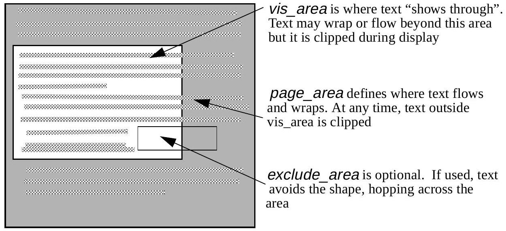
MEM_NULL Definition
The value MEM_NULL is a defined value in HERMES Paige header files that you should use to imply a "null" shape_ref or memory_ref—see "The Allocation Manager".
Error checking pgNew
HERMES Paige provides excellent error checking for pgNew. See "Exception Handling".
2.7 Up and Running: Shapes
To avoid a lengthy discussion at this time regarding HERMES Paige shapes, we will assume at this time you wish to display text within a simple rectangle (as opposed to some other non-rectangular shape or multiple "container" rectangles).
Creating a shape using rectangle
The easiest way to create a new shape is to use the following function:
This returns a new shape_ref (which can be passed to one of the area parameters in pgNew). The globals parameter must be a pointer to the same structure given in pgInit and pgNew.
The rect parameter is a pointer to a structure consisting of a top-left and bottom-right coördinate that encloses a rectangle. The coördinate and rectangle definitions are as follows:
typedef struct
{
long v; // vertical position
long h; // horizontal position
}
co_ordinate;
typedef struct
{
co_ordinate top_left; // Top-left of rect
co_ordinate bot_right; // Bottom-right of rect
}
rectangle, *rectangle_ptr;
Hence, if you set a rectangle to the desired dimensions and pass a pointer to that rectangle in pgRectToShape, a new memory reference is returned which contains a shape of that rectangle.
NOTE
The reason pgNew requires a shape_ref instead of rectangles is that an HERMES Paige object can have non-rectangular shapes for any of its three areas.
For further information regarding shapes, particularly non-rectangular shapes, see "All About Shapes".
Disposing a Shape
The pgNew function makes a copy of the shape you pass to its parameters. Once you have received a new pg_ref you can dispose the shape. To do so, call:
void pgDisposeShape (shape_ref the_shape);
Rect to Rectangle
Two utilities exist that make it easier to create HERMES Paige rectangles:
RectToRectangle converts Rect r to rectangle pg_rect. The pg_rect parameter must be a pointer to a rectangle variable you have declared in your code.
RectangleToRect converts pg_rect to r. Also, if offset is non-null, the resulting Rect is offset by the amounts of the co_ordinate (for example, if offset.h and offset.v were 10, -5 the resulting Mac Rect would be the values in pg_rect with left and right amounts offset by 10 and top and bottom amounts offset by -5.
NOTE (Windows)
Type Rect is identical to type RECT, and both can be used interchangeably.
NOTE (Macintosh)
Since a Mac Rect has a ±32K limit for all four sides, HERMES Paige rectangle sides larger than 32K will be intentionally truncated to about 30K.
About Windows, Graphic Ports and Origins
Although HERMES Paige is designed to be platform-independent, is does assume a target graphics device that all drawing is transferred to.
When a pg_ref is created, the default target device is set to whatever is appropriate for the running platform. For Macintosh, the default device is the current GrafPort set when pgNew is called.
NOTE (Word Solution Engine for Macintosh)
Unlike WSE, HERMES Paige "remembers" what port it should draw to and all subsequent drawing will occur in that port unless you specifically override it.
For the purpose of getting "Up and Running", just make sure you create your window first and have it set as the current port before calling pgNew. In subsequent sections, we will provide different ways to change the target port.
Origins
HERMES Paige does not care what a window's origin is set to (top-left co_ordinate values). HERMES Paige only cares about the area parameters you provide for pgNew; remember, HERMES Paige doesn't really know what a window is and doesn't know anything about origins. HERMES Paige simply and only follows the coördinates you have set for vis_area, page_area and exclude_area. If your page_area shape passed to pgNew, for instance, had a top-left of -10000,-9999, the first character of the first line will be drawn at that coördinate location regardless of where the top-left of your window might physically exist. In other words, HERMES Paige coördinates are always relative to the associated window's coördinates.
2.8 Attribute Settings
As mentioned earlier, pgNew will accept certain characteristics defined in the "attributes" parameter. The current version supports the following:
#define NO_WRAP_BIT 0x00000001 // Wraps only on <CR> or <LF>
#define NO_LF_BIT 0x00000002 // Do not add font
#define NO_DEFAULT_LEADING 0x00000004 // Do not add font leading
#define NO_EDIT_BIT 0x00000008 // No editing (display only)
#define EXTERNAL_SCROLL_BIT 0x00000010 // App controls scrolling
#define COUNT_LINES_BIT 0x00000020 // Keep track of line, para count
#define NO_HIDDEN_TEXT_BIT 0x00000040 // Do not display hidden text
#define SHOW_INVIS_CHAR_BIT 0x00000080 // Show control characters
#define SMART_QUOTES_BIT 0x00000800 // Do "smart quotes"
#define NO_SMART_CUT_BIT 0x00001000 // Do not do "rt cut/paste"
#define NO_SOFT_HYPHEN_BIT 0x00002000 // Ignore soft hyphens
#define NO_DUAL_CARET_BIT 0x00004000 // Do not show dual carets
#define SCALE_VIS_BIT 0x00008000 // Scale vis_area when scaling
#define BITMAP_ERASE_BIT 0x00010000 // Erase page(s) with bitmap drawing
#define TABS_ARE_WIDTHS_BIT 0x10000000 // Fixed-width tab characters
#define LINE_EDITOR_BIT 0x40000000 // Document is line editor mode
NO_WRAP_BIT turns off word wrapping (which means a line of text will continue horizontally until a carriage-return or line-feed character is encountered).
NO_LF_BIT causes HERMES Paige to ignore line-feed characters. The usual purpose of this setting is for imported text that contains both CR and LF at the end of every line; setting the NO_LF_BIT attribute will cause LF characters to be invisible and have no effect of any kind.
NO_DEFAULT_LEADING prevents any extra leading reported by the system for font attributes. In Windows, extra leading is the external leading value reported by GetTextMetrics; in Macintosh, it is the leading value reported by GetFontInfo. By default, HERMES Paige adds the extra leading to every line unless this attribute is set.
NO_EDIT_BIT disables editing. In effect, if NO_EDIT_BIT is set, the "caret" will not blink and the user can't insert characters.
EXTERNAL_SCROLL_BIT tells HERMES Paige that your application will control all scrolling. (This fairly complex subject is discussed elsewhere.)
COUNT_LINES_BIT tells HERMES Paige to keep track of line and paragraph numbers, in which case you can use the line and paragraph numbering features in HERMES Paige (see section 24.8, Line and Paragraph Numbering). Please note that constantly counting lines and paragraphs, particularly if the document is large and contains wordwrapping with style changes, can consume considerable processing time. Hence, COUNT_LINES_BIT has been provided to enable/disable this feature.
NO_HIDDEN_TEXT_BIT suppresses the display of all text that is "hidden" (HERMES Paige will accept a hidden text attribute as a style). If this bit is not set, hidden text is displayed with a grey strike-through line; if it is set, the text is completely invisible and ignored for line width computations.
SHOW_INVIS_CHAR_BIT causes all invisible characters (control codes such as CR and LF) to be displayed using special character symbols. These symbols are defined in pg_globals (see section 3.8, Changing Globals).
EX_DIMENSION_BIT tells HERMES Paige to include the exclusion area as part of the "document height".
NO_WINDOW_VIS_BIT – Do not respect window's clipped area.
SMART_QUOTES_BIT – Do "smart quotes" (curly quotation marks).
NO_SMART_CUT_BIT – Do not do "smart cut/paste"
NO_SOFT_HYPHEN_BIT – Ignore soft hyphens
NO_DUAL_CARET_BIT – Do not show dual carets
SCALE_VIS_BIT tells HERMES Paige to scale the vis_area along with the text when scaling has been enabled. By default, the vis_area is left alone when an HERMES Paige document is scaled, leaving the text "behind" the visual boundaries reduced or enlarged. In certain cases—particularly when employing multiple pg_refs into the same document as "edit boxes"—you need this attribute set; for single pg_ref documents that fill all or most of the window, you generally do not want this attribute set.
BITMAP_ERASE_BIT tells HERMES Paige to erase area(s) on the page using offsetting bitmap drawing, otherwise the same portions of the screen are erased directly. The purpose of this attribute is to draw "background" graphics in the window when/if HERMES Paige needs to erase the screen.
TABS_ARE_WIDTHS_BIT causes all characters to display as no more or less than "wide" blanks. For example, if this attribute is not set, a character aligns the character(s) that follow to the next logical tab stop; if this attribute is set, the a tab character is simply a fixed-width space (the default tab spacing per HERMES Paige globals).
LINE_EDITOR_BIT tells HERMES Paige that you intend to maintain the document as a "line editor", defined as one where words will not wrap and all lines remain the same height. If HERMES Paige knows this in advance, it can bypass the usual "pagination" functions and you can achieve substantially increased performance for line editors.
NOTE
If you set LINE_EDITOR_BIT, you must not set any attributes to wrap the text, nor should you vary the point size(s) or attempt any irregular page shapes or page breaks. You can still produce multi-styled text as long as the text height(s) are consistently the same.
Any (or all) of the above settings can exist at once.
NOTE
You can always change these attributes after an HERMES Paige object is created (see section 3.1, Changing Attributes).
Example – pgNew
/* This creates a new HERMES Paige object */
#include <Paige.h>
#include "pgTraps.h"
extern pg_globals paige_rsrv;
// Routine: Open_Window
// Purpose: Open our window
/* Note: the window has already been made and will be shown and selected immediately after this function */
void Open_Window(WindowPtr win_ptr)
{
if (win_ptr!=nil) /* See if opened OK */
{
pg_ref result;
shape_ref vis, wrap;
rectangle rect;
/* this sets vis_area and wrap_area to the shape of the window itself */
RectToRectangle(win_ptr->portRect, &rect);
vis = pgRectToShape(&paige_rsrv, &rect);
wrap = pgRectToShape(&paige_rsrv, &rect);
result = pgNew(&paige_rsrv, NULL, vis, wrap, NULL, EX_DIMENSION_BIT);
} /* End of IF */
}
2.9 Disposing an HERMES Paige Object
Once you are completely through with a pg_ref (e.g., user closes the window), dispose it with:
(void) pgDispose (pg_ref pg);
This function disposes all data structures within pg; the pg_ref will no longer be valid.
Be certain you have not shut down the HERMES Paige library before disposing a pg_ref, or you will crash.
NOTE (Microsoft Foundation Classes)
The best place to destroy the HERMES Paige object is in the OnDestroy() member of your CView derived class. Example:
If you need to obtain the pointer to pg_globals (originally given to pgInit and to pgNew), you can get it from a pg_ref using the following:
(pg_globals_ptr) pgGetGlobals (pg_ref pg);
The typical use for pgGetGlobals is to obtain a pointer to pgGlobals in places where the original global structure, given to pg_init, is not easily accessible.
FUNCTION RESULT: This function returns the globals pointer as saved in pg.
To change globals, see section 3.8, "Changing Globals".
2.11 Displaying
To draw the text in a pg_ref to a window, use the following function:
The pg_ref's contents are drawn to the target_device. If, however, you pass a null pointer to target_device the text will be drawn to the default device set during pgNew. (For the purposes of getting "Up and Running", we will assume you want to draw to the default device, which will typically be a window that was created prior to pgNew, so pass a null pointer).
vis_target and wrap_target parameters are optional shapes which will temporarily redefine the HERMES Paige object's vis_area and wrap_area, respectively. Using these two parameters, you can temporarily control and/or change the way an HERMES Paige object will display. Text gets clipped to vis_target, or, if vis_target is a null pointer, to the original vis_area, and text will wrap within wrap_target, or, if wrap_target is MEM_NULL, within the original wrap_area. (For the purposes of getting "Up and Running", pass MEM_NULL for these two parameters.)
If offset_extra is non-null, all drawing is offset by the amounts in that coördinate (all text is offset horizontally by offset_extra -> h and vertically by offset_extra -> v. If offset_extra is a null pointer, no extra offset is added to the text.
The draw_mode parameter defines the way text should be transferred to the target device. The draw_mode selections are shown below.
See section 16.9, Display Proc, about how to add ornaments to the text display.
NOTE
You do not need to specify any drawing device for pgDisplay if you intend to display in the window given to pgNew. In this case, just pass NULL to the target_device parameter.
If for some reason you need to redirect the display to some other window or device (such as a bitmap), you can create a graf_device record for that purpose and pass a pointer to that structure for the target_device.
Creating a graf_device for this purpose is the same as the graf_device record used for pgPrintToPage. See Printing in Windows under section 16.5.
Draw Modes
typedef enum
{
draw_none, // Do not draw at all
best_way, // Use most efficient method(s)
direct_copy, // Directly to screen, overwrite
direct_or, // Directly to screen, "OR"
direct_xor, // Directly to screen, "XOR"
bits_copy, // Copy offscreen
bits_or, // Copy offscreen in "OR" mode
bits_xor, // Copy offscreen in "XOR" mode
bits_emulate_copy // Copy "fake" offscreen
bits_emulate_or // "Fake" offscreen in "OR" mode
bits_emulate_xor // "Fake" offscreen in "XOR" mode
};
"Bits-emulate" Mode
The drawing modes bits_emulate_copy, bits_emulate_or, and bits_emulate_xor are identical to bits_copy, bits_or and bits_xor save that no bitmaps are used and the drawing is directly to the screen. Unlike the non-bitmap drawing modes, however, HERMES Paige's standard callback hooks are called to allow modification to its "bitmap", which in this case is the direct screen. Bitmap modification is typically used to render background images, patterns, and other forms of graphics.
NOTE
Unless you need to create a special or unusual effect, always pass direct_or or bits_emulate_or when responding to WM_PAINT (Windows) or an update
event (Macintosh), and best_way for all other functions requiring a draw_mode.
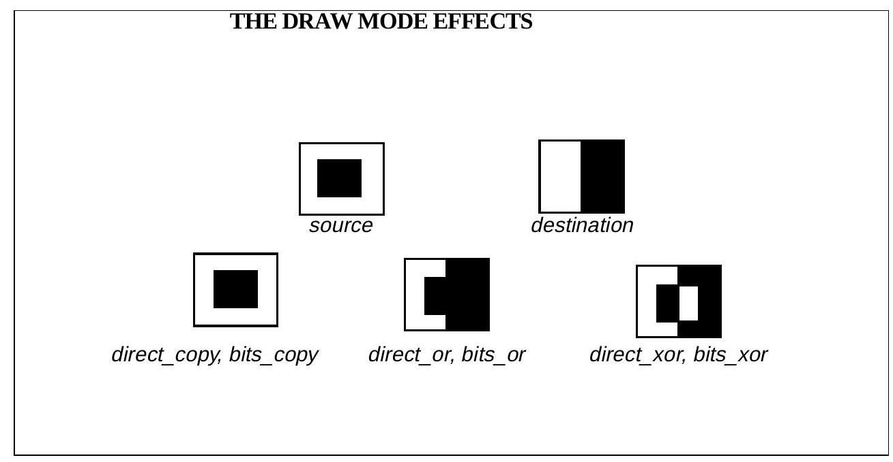
Additional draw modes require the developer to use the custom draw hook and draw his own. See "text_draw_proc" for information on how to do custom drawing.
A value of draw_none will disable all drawing and visual scrolling. In other words, if the HERMES Paige document changes in some way, nothing would change on the screen until the application re-displayed the HERMES Paige text contents. The "draw nothing" feature is used only for special cases where an application wants to change without drawing anything yet.
To display the HERMES Paige object in MFC, use OnPaint(). Do not try to use OnDraw() or it will not draw correctly.
EXAMPLE
(.CPP)
void PGView::OnPaint()
{
CWnd::OnPaint();
// If you don't use the OnEraseBkgnd() member of the MFC class,
// you must erase the background of the window first.
pgDisplay(m_Paige, NULL, MEM_NULL, MEM_NULL, NULL, bits_emulate_or);
}
2.12 Key Insertion
HERMES Paige actually makes very little distinction between keyboard entry and any other text insertion, and in both cases the following function is used:
(pg_boolean) pgInsert (pg_ref pg, pg_char_ptr data, long length, long position, short insert_mode, short modifiers, short draw_mode);
This function will insert length bytes pointed to by data. The insertion will occur at byte offset position if it is positive or zero; if position is CURRENT_POSITION (a #defined constant of -1), the insertion occurs at the current insertion point.
The insert_mode parameter defines the type of data being inserted, which can be any of the following:
typedef enum
{
key_insert_mode, // Typing insertion
key_buffer_mode, // Typing-buffer insertion
data_insert_mode, // Raw data insertion
}
For keyboard entry, pass key_insert_mode or key_buffer_mode; for any other data insertion, pass data_insert_mode.
The difference between the two "key" insert modes and data_insert_mode is that a key insertion can contain special controls such as arrow keys and backspace (delete). For data_insert_mode, the bytes will be inserted as is.
If key_insert_mode is used, the new character(s) will draw immediately if draw_mode is nonzero.
If key_buffer_mode is used, character(s) will be buffered (temporarily saved) and drawn later by HERMES Paige; the purpose of this mode is to avoid "getting ahead" of keyboard entry on complex document entry. It is also useful for Macintosh double-byte script entry, in which the text is entered all at once from a floating palette window.
NOTE (Windows)
The key_buffer_mode is usually meaningless in the Windows environment; instead, you should always use key_insert_mode when processing keyboard characters. Using key_buffer_mode (where chars are stored and inserted later) requires a call to pgIdle which, under the Windows messaging system, would require you to set up a "timer" message that occurs every few milliseconds, which is probably not implemented in most applications.
If keys are buffered, HERMES Paige will display the new text during the first pgIdle function call (see section 2.15, Blinking Carets and Mouse Selections).
NOTE
"Arrows" and other control codes are defined (and changeable) in the pg_globals record (see section 3.8, Changing Globals); these special controls will be processed correctly for key_insert_mode and key_buffer_mode only.
The modifiers parameter can change the way the pg_ref will respond to special control characters for key_insert_mode (modifiers is ignored for the other insertion modes). In the current version, the following value is supported:
#define EXTEND_MOD_BIT 0x0001 // Extend the selection
If modifiers is EXTEND_MOD_BIT, the selection range is extended if an arrow key is "inserted." Other selection modifier bits are explained in Modifiers under section 2.15, "Blinking Carets and Mouse Selections".
The draw_mode for pgInsert performs identically to pgDisplay and can be any of the verbs defined for drawing. If you just want to insert but not display, pass draw_none for draw_mode. If key_buffer_mode is used for insertion, the draw_mode is saved and used later when the text is displayed.
For keyboard insertions, the recommended draw_mode is best_way.
CAUTION (Macintosh)
Mac developers should not confuse these modifier bits with the modifiers given in the event record. There is no similarity. The modifiers shown here are the ones HERMES Paige supports.
NOTE
The insertion will assume either the text format of the current insertion point OR the format of the last style/font/format change, whichever is more recent. This is true even if you specify an insert position other than the current point. If you want to force the insertion to be a particular font or style, simply call the appropriate function to change the text format prior to your insertion.
FUNCTION RESULT
The function returns TRUE if the text and/or highlighting in pg changed in any way. Note that no change occurs only if key_buffer_mode is passed as the insert mode, in which case the characters are stored and not drawn until the next call to pgIdle. Another situation that will not change anything visually is passing draw_none as the draw_mode. In both cases, pgInsert would return FALSE. The purpose of this function result is for the application to know whether or not it should update scrollbar values or scroll to the insertion point, etc. (i.e., it is a waste of processing time to check or change scroll positions if nothing changed on the screen).
Running Unicode
If you are using the Unicode-enabled HERMES Paige library, the "data" to be inserted is expected to be one or more 16-bit characters. The data size in this case is assumed to be a character count (not a byte count). This is due to the fact that if UNICODE is defined in your preprocessor or header files (which it should be for a true Unicode-enabled application), a pg_char_ptr changes from a byte pointer to a 16-bit character pointer.
For example, to insert the Unicode value 0x0041 (letter "A") you would pass the value of 1 in the length parameter even though the character size is technically 2 bytes long.
TECH NOTE: Insert Positions
The specified insertion position is a zero-relative byte offset. Note that this is a byte—not a "character" offset (characters in HERMES Paige can be more than one byte), rather a byte offset from the beginning of all text in pg, starting at zero.
EXCEPTION: The pure Unicode version measures everything as 16 bit characters. Hence, the insertion point in this case is a character position.
If one or more characters are currently selected (selection range ≥ one character), those characters are deleted before the insertion occurs. Note that if the specified insertion position were CURRENT_POSITION, the insertion will occur to the immediate left of the previously selected text (which will have been deleted).
After the insertion, the new insertion position in pg is advanced to length bytes from the original specified position. Example: If 100 bytes were inserted at text position 500 when pgInsert returns the current insertion position will be 600.
APPLIED STYLE(S) AND INSERTION
If pgInsert occurs at the current insertion point, whatever the last style and/or font that was applied to that insertion point will be applied to the next insertion.
For example, suppose all text in pg is currently "Helvetica" font, and pg has a single insertion point (not a selected range of characters). Before inserting new text, a call is made to pgSetFontInfo with "Times Roman" font; the very next subsequent pgInsert would apply Times Roman—not Helvetica—to the new text.
However, if the insertion occurs somewhere other than the current insertion, the font/style that is applied will be whatever font/style applies to that position in text.
Hence, to implement the insertion of specific, multi-stylized text, the logic to perform should be as follows:
NOTE: For repetitive insertions, the insertion point will automatically advance the number of bytes you insert, so normally you should not need to set a new position if you are doing repetitive, sequential insertions.
WARNING: If you need to apply a specific font or style to a text insertion (such as in the logic above), do not set the insertion point after you set the style/font or that style/font attribute may be lost. If you must set position, do so before calling pgSetFontInfo or pgSetStyleInfo.
pgSetSelection(pg, 0, 0);
pgSetStyleInfo(...); // <-- Style gets applied to next insertion
pgInsert(...);
TECH NOTE: Nothing happens
Nothing seems to happen when I insert text.
If you are doing inserts with key_insert_mode, HERMES Paige won't do anything if the pg_ref is deactivated. That might be the problem. If so, you need to use data_insert_mode, not key_insert_mode, and it will then work; pgInsert does nothing.
2.13 Keyboard Editing with MFC (Windows)
To get Up and Running with basic keyboard editing you must add the following code to your MFC view class:
As mentioned in pgInsert, if key_buffer mode is used, the characters get stored in an internal buffer and get inserted during the next pgIdle.
There might be an occassion, however, that requires immediate insertion of anything pending in this buffer. To do so, call the following:
(pg_boolean) pgInsertPendingKeys (pg_ref pg);
Calling this function will immediately "empty" any pending characters, inserting and displaying them as appropriate. If there aren't any pending characters, pgInsertPendingKeys does nothing. The function returns TRUE if one or more characters were inserted.
NOTE
The display mode used when HERMES Paige displays the pending buffer will be the original display mode passed to pgInsert.
2.15 Blinking Carets and Mouse Selections
Caret blinking (Macintosh only)
To cause the "caret" to blink in a pg_ref, call the following as often as possible:
(pg_boolean) pgIdle (pg_ref pg);
NOTE (Macintosh):
pgIdle should be called repeatedly while you are waiting for an event.
The pg parameter must be a valid pg_ref (can not be a null pointer).
FUNCTION RESULT: The function returns TRUE if character(s) were inserted and displayed that were stored previously from pgInsert calls with key_buffer_mode. This will only happen if you had called pgInsert, passing key_buffer_mode as the data transfer parameter. A result of TRUE or FALSE from pgIdle can help your application know whether or not it should update scrollbar values (since new text has been inserted). For Windows key_buffer_mode is not usually necessary (see section 2.12, Key Insertion).
NOTE (Windows)
You do not need to call pgIdle() since the blinking caret is maintained by the OS. Needlessly calling pgIdle, however, is harmless.
Clicking & Dragging
Clicking and dragging is accomplished by using the following function:
(long) pgDragSelect (pg_ref pg, co_ordinate_ptr location, short verb, short modifiers, long track_refcon, short auto_scroll);
To change the insertion point in a pg_ref (i.e., in response to a mouse click), call pgDragSelect with the location parameter set to the location of the "click." The coördinate values must be local to the window's coördinate system (relative to the top-left window origin).
For Macintosh, location should be the same as the "where" member of the EventRecord, converted to local coördinates.
For Windows, location is usually the coördinates given to you in lParam when responding to WM_LBUTTONDOWN, WM_LBUTTONDBLCLK, or WM_MOUSEMOVE.
The verb parameter defines what action should occur, which must be one of the following:
enum
{
mouse_down, // First-time click
mouse_moved, // Mouse moved
mouse_up, // Mouse button released
}
NOTE:pgDragSelect() does not retain control at any time—it always returns control immediately regardless of what verb is passed.
For the first click, pass mouse_down in verb.
In a Macintosh-specific application, while the user is holding down the mouse button, wait for the mouse location to change and, if it does, call pgDragSelect with the new location but with verb as mouse_moved.
In a Windows-specific application, call pgDragSelect(mouse_moved) in response to a WM_MOUSEMOVE if the mouse button is still down.
When the mouse button is released, pass the final location and mouse_up for verb.
NOTE
It is important to call pgDragSelect with mouse_up after the user releases the mouse button even if the mouse never moved from its original location. This is because HERMES Paige performs certain housekeeping chores when mouse_up is given.
The modifiers parameter controls the way text is selected. For "normal" click/drag, pass zero for this parameter; for added effects (such as responding to double-clicks, shift-clicks, etc.), see [Modifiers][#2.15-Blinking-Carets-&-Mouse-Selections] under section 2.15, "Blinking Carets and Mouse Selections".
If auto_scroll is TRUE, HERMES Paige will automatically scroll the document if pgDragSelect (with verb as mouse_moved) has gone beyond the vis_area. See chapter 11, All About Scrolling. For getting "Up and Running", you can pass TRUE for this parameter.
track_refcon is used when and if HERMES Paige makes a call to the track-control-callback function. If a style is a "control" (the control bit set for the style class bits field), HERMES Paige calls the tracking control function hook and passes the track_refcon to the app. In other words, this value is application-defined and HERMES Paige does nothing with it. For getting "Up and Running", you can pass 0 for this parameter.
FUNCTION RESULT
For "normal" mouse tracking, ignore the function result of pgDragSelect. The only time the function result is significant is when you have customised a style to be a "control" (information is available on "control" styles under "Customising HERMES Paige”). If you have not customised HERMES Paige in any way, pgDragSelect will always return zero.
Modifiers
The following bit settings are supported for the modifiers parameter in this release:
#define EXTEND_MOD_BIT 0x0001 // Extend the selection
#define WORD_MOD_BIT 0x0002 // Select whole words only
#define PAR_MOD_BIT 0x0004 // Select whole paragraphs only
#define LINE_MOD_BIT 0x0008 // Highlight whole lines
#define VERTICAL_MOD_BIT 0x0010 // Allow vertical selection
#define DIS_MOD_BIT 0x0020 // Enable discontinuous selection
#define STYLE_MOD_BIT 0x0040 // Select whole style range
#define WORD_CTL_MOD_BIT 0x0080 // Select "words" delimited by ctrl chars
#define NO_HALF_CHARS_BIT 0x0100 // Do not go left/right on half chars
#define CONTROL_MOD_BIT 0x0200 // Word advance for arrows
Various combinations of these bits can generally be set to create the desired effect such as word selections, paragraphs selections, etc., save that vertical selection does not work with the other modifiers. If misused regardless, it will produce unpredictable results.
The following is a description of how text is highlighted in response to each of these bits:
EXTEND_MOD_BIT will extend the selection for verb of mouse_down (otherwise the previous selection is removed). For Macintosh, this is the same as "shift-click" (but you need to determine that from your application and set this bit).
WORD_MOD_BIT will select whole words, otherwise only single characters are selected.
PAR_MOD_BIT will select whole paragraphs.
This is different than LINE_MOD_BIT (below) since a paragraph could contain several lines if word wrapping exists.
LINE_MOD_BIT will select whole lines. This differs from PAR_MOD_BIT since a paragraph might consist of many lines.
VERTICAL_MOD_BIT allows vertical selection. This bit really causes a rectangular region that selects all characters intersecting that region and will not follow any particular character. VERTICAL_MOD_BIT is mainly useful for tables and tabular columns.
DIS_MOD_BIT allows discontinuous selections. If this bit is set, the previous selection remains and a new selection range is started (HERMES Paige can have multiple selection ranges).
STYLE_MOD_BIT causes whole style ranges to become selected. This is similar to word/paragraph/line highlighting except style changes are considered the delimiters (which also means the whole document could be selected in one click if only one style exists).
WORD_CTL_MOD_BIT causes text between control characters to be selected. This is similar to word/paragraph/line highlighting except control codes are considered the delimiters.
NOTE: In HERMES Paige "control codes" or "control characters" are not necessarily limited to standard ASCII symbols. Control characters in the HERMES Paige context are defined in pg_globals (see "Changing Globals”).
NO_HALF_CHARS_BIT controls whether or not dragging can change the selection point half way into a character. Normally, if this bit is not set, once the mouse moves half way into a character, that character is considered to be "selected" (or unselected if moving in the opposite direction). Setting this bit, however, instructs pgDragSelect not to select the character until it has completely crossed over its area.
CONTROL_MOD_BIT is used mainly with arrow keys. This causes the selection to advance to the next word (right arrow) or to the previous word (left arrow).
For additional information about highlighting and selection range(s), see chapter 10, All About Selection.
2.16 Click & Drag using Microsoft Foundation Classes (Windows)
To get Up and Running with simple mouse drag select in MFC, use the following code as a starting point:
(.H)
/* Declare the following private variables. Make sure to set m_Dragging to FALSE in the construct to avoid the unintialized variable bug!! */
short m_MouseModifiers;
BOOL m_Dragging;
(.CPP)
// Respond to the Windows message WM_LBUTTONDOWN...
void MyView::OnLButtonDown(UINT nFlags, CPoint point)
{
CView::OnLButtonDown(nFlags, point);
co_ordinate mouse { point.y, point.x };
SetCapture();
m_Dragging $=$ TRUE;
if(nFlags & MK_SHIFT)
m_MouseModifiers != EXTEND_MOD_BIT;
if(nFlags & MK_CONTROL)
m_MouseModifiers != PAR_MOD_BIT;
pgDragSelect(m_Paige, &mouse, mouse_down, m_MouseModifiers, 0, TRUE);
}
// Respond to the Windows WM_MOUSEMOVE message...
void MyView::OnMouseMove(UINT nFlags, CPoint point)
{
CView::OnMouseMove(nFlags, point);
co_ordinate pg_mouse = {point.y, point.x};
if(m_Dragging)
{
pgDragSelect(m_Paige, &mouse, mouse_up, m_MouseModifiers, 0, FALSE);
m_MouseModifiers = 0;
ReleaseCapture();
m_Dragging = FALSE;
}
}
To prevent selecting/scrolling you would simply pass FALSE for pgDragSelect so it doesn't try to auto-scroll. As far as not letting the user select text outside the visual area, I would simply check to see if the coördinate that will get passed to pgDragSelect is outside of the view area and if it is, just force it to some other point that is within the view area.
In fact, you wouldn't even need to turn off auto-scroll if you forced the coördinate to always be within the visual area. Remember, you have complete control over pgDragSelect (control always comes back to you unlike, say, TrackControl on Macintosh) so there is no reason you can't adjust the "mouse" point for each pass.
TECH NOTE: Problems with mouse clicks -1 (Mac only)
I have big troubles handling mouse clicks in the HERMES Paige object within my class library. If I get a click (with GetMouse(&hitPt)) and do the following (testing a response to a simple click)...
Your test code sample should work. Therefore, I have to conclude there is something wrong with the mouse point you obtain with GetMouse().
I would guess that you are doing a GetMouse() without regards to the current GrafPort. Since GetMouse() returns a LOCAL point (based on current port's coördinates), if you don't have the correct GrafPort set you will get some other coördinate system. Worst case, you are getting "global" coördinates which will be completely different than what you expect.
Or, another possibility might have to do with the window's "origin". I know that some class libraries muck with this to create scrolling effects.
What you need to do is to check what the actual values of point.h and point.v really are. I know that pgDragSelect works; in fact, you should see the caret immediately appear at the point you give for mouse_down verb.
BTW, the usual (best) way for dragging the mouse in a pg_ref is to get the click right out of the EventRecord.where field (first doing a GlobalToLocal on it). That is by far the most accurate -- but I do not know if that EventRecord is easily available in your class library.
2.17 Activate/Deäctivate
To deäctivate a pg_ref (to cause highlighting or the "caret" to disappear), call the following function:
(void) pgSetHiliteStates (pg_ref pg, short front_back_state, short perm_state, pg_boolean show_hilite);
In a "window" environment, where different windows can overlap, it is usually desirable to disable any HERMES Paige objects that are not contained in the front most window. To do so, pgSetHiliteState can be called to turn off the highlighting or the "caret."
An HERMES Paige object, however, contains two highlight states, one for "front/back" activate and deactivate and one to disable a pg_ref in both states. For "normal" applications, you will only be changing the front/back highlight state (activate or deactivate a pg_ref according to its window position). The purpose of the alternate highlight state is to provide a way to disable a pg_ref completely regardless of its window position.
The front_back_state should be one of the following values:
typedef enum
{
no_change_verb, // State stays the same
activate_verb, // Set to activate mode
deactivate_verb, // Set to deactivate mode
}
The perm_state parameter provides an alternate highlight state setting; this parameter can also be any of the above. For getting "Up and Running," however, pass no_change_verb for this parameter.
If show_hilite is TRUE, the highlighting (or caret) will redraw according to pg's new state. A FALSE value will activate or deactivate pg internally (by setting special flags within the pg_ref) but the highlighting or caret will remain unchanged. For getting "Up and Running", always pass TRUE for should_draw.
See also "Additional Selection Support" and "Activate/Deactivate with shape of selection still showing".
Responding to WM_SETFOCUS and WM_KILLFOCUS messages
{
case WM_KILLFOCUS:
pgSetHiliteStates(pgRef, deactivate_verb, no_change_verb, TRUE);
case WM SETFOCUS:
pgSetHiliteStates(pgRef, activate_verb, no_change_verb, TRUE);
}
Getting the Highlight State
If you want to know what state a pg_ref is in, call the following:
(void) pgGetHiliteStates (pg_ref pg, short PG_FAR *front_back_state, short PG_FAR *perm_state);
The front/back highlight state will be returned in front_back_state and the alternate state in perm_state. Both parameters will be set to either activate_verb or deactivate_verb.
NOTES
If the highlight status is already set to what is specified in your parameters (e.g., if you are deactivating a pg_ref that is already deactivated or vice versa), this function does nothing.
A pg_ref returned from pgNew is set to an active state.
If a pg_ref is in a deactivate state, the caret will not blink even if you call pgIdle and highlighting will not draw.
TECH NOTE
Why two activate states?
One is for regular activate/deactivate for a window; the other is to FORCE deactivation regardless of the window's front/behind state. Haven't you ever been in a situation where you want to deactivate selections but the window is still in front? Using two possible states, it becomes easier to do that. The two states are logically "AND'd" logic for activation: both must be true or the document is deactivated.
MFC NOTE
IMPORTANT: You must activate and deactivate the HERMES Paige object in the MFC OnSetFocus() and OnKillFocus() before any of the functions in this chapter will work.
Example:
(.CPP)
// Respond to Windows message WM_SETFOCUS...
void MyView::OnSetFocus(CWnd* pOldWnd)
{
CView::OnSetFocus(pOldWnd);
pgSetHiliteStates(m_Paige, activate_verb, no_change_verb, TRUE);
}
// Respond to Windows message WM_KILLFOCUS...
void MyView::OnKillFocus(CWnd* pNewWnd)
{
pgSetHiliteStates(m_Paige, deactivate_verb, no_change_verb, TRUE);
CView::OnKillFocus(pNewWnd);
}
3 BEYOND THE DEFAULTS
The purpose of this section is to explain some of the more common additions and/or changes to the "bare minimum" implementation discussed in the previous section, "Up and Running."
3.1 Changing Attributes
There will be situations where you want to change the attributes of an HERMES Paige object after it is created (these are the bits initially passed to pgNew for the "attributes" parameter). There are also situations where you want to examine the current attributes (to tick a menu item, for instance). To do so, use the following:
(long) pgGetAttributes (pg_ref pg);
(pg_boolean) pgSetAttributes (pg_ref pg, long attributes);
To obtain the current attribute bits, call pgGetAttributes.
FUNCTION RESULT: The function result will be the current setting(s) of pg.
To change the attributes, call pgSetAttributes with attributes set to the new bit value(s).
HERMES Paige "attributes" are defined as bit settings which can be a combination of any bit values shown below:
#define NO_WRAP_BIT 0x00000001 // Wraps only on CR or LF
#define NO_LF_BIT 0x00000002 // <LF> char ignored
#define NO_DEFAULT_LEADING 0x00000004 // Do not add font leading
#define NO_EDIT_BIT 0x00000008 // No editing (display only)
#define EXTERNAL_SCROLL_BIT 0x00000010 // App controls scrolling
#define COUNT_LINES_BIT 0x00000020 // Track line/para count
#define NO_HIDDEN_TEXT_BIT 0x00000040 // Do not display hidden text
#define SHOW_INVIS_CHAR_BIT 0x00000080 // Show invisible character(s)
#define EX_DIMENSION_BIT 0x00000100 // Exclude width/height
#define NO_WINDOW_VIS_BIT 0x00000200 // Do not respect clipped area
#define SMART_QUOTES_BIT 0x00000800 // Do "smart" quotes
#define NO_SMART_CUT_BIT 0x00001000 // Do not do "smart" cut/paste
#define NO_SOFT_HYPHEN_BIT 0x00002000 // Ignore soft hyphens
#define NO_DUAL_CARET_BIT 0x00004000 // Do not show dual carets
#define SCALE_VIS_BIT 0x00008000 // Scale vis_area when scaling
#define BITMAP_ERASE_BIT 0x00010000 // Erase page(s) with bitmap drwg
#define TABS_ARE_WIDTHS_BIT 0x10000000 // Tab chars are merely wides
#define LINE_EDITOR_BIT 0x40000000 // Doc is line editor mode
FUNCTION RESULT: After calling pgSetAttributes, the function result will be TRUE if pg should be redrawn. The only time TRUE is returned is when one or more attributes have been set that will affect the way text is drawn or the way word wrap is computed.
WARNING: Before setting attributes, first get the current settings from the function pgGetAttributes and change the bits you require and pass that whole long value to pgSetAttributes. Otherwise, the view only bits will get changed erroneously.
Additional attributes can be set for more advanced features using the following set and get functions:
(pg_boolean) pgSetAttributes2 (pg_ref pg, long attributes); (long) pgGetAttributes2 (pg_ref pg);
To obtain the current, extended attribute bits, call pgGetAttributes2.
FUNCTION RESULT: The function result will be the current setting(s) of the extended attributes of pg.
To change the extended attributes, call pgSetAttributes2 with attributes set to the new bit value(s).
HERMES Paige "extended attributes" are defined as bit settings which can be a combination of any of the following.
#define KEEP_READ_STYLES 0x00000200 // Keep existing style_infos for pgReadDoc()
#define KEEP_READ_PARS 0x00000400 // Keep existing par_infos for pgReadDoc()
#define KEEP_READ_FONTS 0x00000800 // Keep existing font_infos for pgReadDoc()
#define CHECK_PAGE_OVERFLOW 0x00002000 // Constantly check page overflow
#define NO_HAUTOSCROLL 0x00080000 // Do not autoscroll horizontally
#define NO_VAUTOSCROLL 0x00100000 // Do not autoscroll vertically
KEEP_READ_STYLES tells HERMES Paige to not remove existing style_info records from the pg_ref when a file is read. Normally, all existing style records are replaced with the styles read from an HERMES Paige file. This attribute is used to retain the existing styles.
KEEP_READ_PARS tells HERMES Paige to not remove existing par_info records from the pg_ref when a file is read. Normally, all existing paragraph records are replaced with the paragraph records read from an HERMES Paige file. This attribute is used to retain the existing paragraph records.
KEEP_READ_FONTS tells HERMES Paige to not remove existing font_info records from the pg_ref when a file is read. Normally, all existing font records are replaced with the fonts read from an HERMES Paige file. This attribute is used to retain the existing fonts.
CHECK_PAGE_OVERFLOW tells HERMES Paige to constantly test the position of the last character in the document and, if it overflows the bottom of the page_area, sets an internal field to the number of characters that have overflowed. The purpose of this attribute is to allow an application to implement features that require "page overflow checking", but since this requirement requires constant pagination and extra processing, set this attribute only when absolutely necessary.
NO_HAUTOSCROLL, NO_VAUTOSCROLL tells HERMES Paige not to automatically scroll horizontally or vertically, respectively, when pgDragSelect() is called.
"Auto-checking" page overflow
Setting CHECK_PAGE_OVERFLOW with pgSetAttribute2() causes HERMES Paige to continuously check the situation where character(s) flow below the boundaries of the page area. If this attribute is set, the overflow_size member within the pg_ref get set to the number of characters that overflow the page.
Or, if overflow_size is set to -1, a single carriage return is causing the overflow (i.e., the text overflows but the overflow is a "blank" line).
NOTE: The auto-checking for page overflow is meaningless if your pg_ref is set for repeating pages, or if your pg_ref is set to a variable page size. The only time overflow checking will work (or make any sense) is for fixed-size, nonrepeating page shapes.
Checking page overflow
NOTE: You should not implement this code if your pg_ref is set for repeating pages, or if your pg_ref is set for a variable document height.
/* Call the function below after doing anything that can change the size of the document. This included insertions, deletions, style and font changes (which can cause new word wrapping) and page size changes. This function returns the number of characters that are overflowing the page area of pg. */
/* Note: CHECK_PAGE_OVERFLOW must be set with pgSetAttributes2(pg). */
long CheckPageOverflow (pg_ref pg)
{
paige_rec_ptr pg_rec;
long_overflow_amount;
pg_rec = UseMemory(pg);
overflow_amount = pg_rec->overflow_size;
UnuseMemory(pg);
return overflow_amount;
}
Regarding LF/CR characters, HERMES Paige handles both of them as a "new line" except a CR. It also starts a new paragraph, but for LF it just does a line feed.
Note that lines that terminate both in LF and CR will cause two lines on the screen — at least in HERMES Paige default mode.
You can turn that off, however, if you want LF/CR to be treated as only one líne feed.' To do so, just set NO_LF_BIT in the HERMES Paige attribute flags during pgNew. When this attribute is set, HERMES Paige ignores all LFs embedded in the text (they become invisible).
Note that I haven't mentioned what the values are for LF and CR, because those are whatever values sit in HERMES Paige globals. Also as mentioned, MPW will compile \r etc. differently than Symantec so watch out for that. See technical note CR/LF Conversion and section 3.8, Changing Globals.
3.3 A Different Default Font, Style, Paragraph
Any time a new pg_ref is created, HERMES Paige sets the initial style_info, font_info and par_info (style, font and paragraph format) to whatever exists in the corresponding field from pg_globals.
Hence, to set default style, font or paragraph format, simply change the respective information in pg_globals (see example below).
To change the default style information, change field(s) in pg_globals.def_style; to change the default font, change field(s) in pg_globals.def_font; to change the default paragraph format, change field(s) in pg_globals.def_par.
You can also set the default low-level callback "hook" functions for style or paragraph records, and even the general HERMES Paige functions by placing a pointer to the new function in the respective pg_globals field. See chapter 27, Customising HERMES Paige.
For example, if you wanted to override the draw-text callback function always for all styles, you would change the default draw-text function in the default style found in pg_globals before your first call to pgNew (but after pgInit:
pg_globals.def_style.procs.draw = myTextDrawProc;
... where myTextDrawProc is a low-level callback to draw text (see "Setting Style Functions”). If you did this, every new style_info record created by HERMES Paige will contain your callback function.
The default hooks for general callbacks not related to styles or paragraph formats are in pg_globals.def_hooks.
See a complete description of style_info, font_info and par_info records in chapter 8, Style Basics.
Change defaults after they are created using pgInit.
These changes will apply to all pgNews that are called later.
void ApplInit() // Initialisation of the App
{
pgMemStartup(&mem_globals, 0);
pgInit(&paige_rsrv, &mem_globals);
/* change to make the default for all pg_refs created herein after
9 point instead of 12 point is a fraction with hi word being a
point is a fraction with hi word being the whole point value /*
paige_rsrv.def_style.point = 0x00090000;
}
Default tab spacing
You can also change the default spacing for tabs (the distance to the next tab if no specific tab stops have been defined in the paragraph format). To do so, change globals.def_par.def_tab_space.
/* The following code changes the default tab spacing (for all subsequent pg_refs) to $32. */
pgMemStartup(&mem_globals, 0);
pgInit(&paige_rsrc, &mem_globals);
paige_rsrv.def_par.def_tab_space $=32$;
3.4 Graphic Devices
As mentioned earlier, a newly created HERMES Paige object will always draw to a default device; in a Macintosh environment, for instance, the default device will be the current port that is set before calling pgNew. In a Windows environment, the default device will be an HDC derived from GetDC(hWnd), where hWnd is the window given to pgNew.
Setting a device
It is possible that you will want to change that default device once a HERMES Paige object has been created. To do so, call the following function:
The device parameter is a pointer to a structure which is maintained internally (and understood) by HERMES Paige. (Generally, you won't be altering its structure directly, but the record layout is provided at the end of this section for your reference.)
The contents and significance of each field in a graf_device depends on the platform in which HERMES Paige is running. However, a function is provided for you to initialise a graf_device regardless of your platform:
(void) pglnitDevice (pg_globals_ptr globals, generic_var the_port, long machine_ref, graf_device_ptr device);
The above function sets up an HERMES Paige graphics port which you can then pass to pgSetDefaultDevice (you can also use pgInitDevice to set up an alternate port that can be passed to pgDisplay).
The globals parameter is a pointer to the same structure you passed to pgInit.
The actual (but machine-dependent) graphics port is passed in the_port; what should be put in this parameter depends on the platform you are working with, as follows:
Macintosh (and PowerMac) — the_port should be a GrafPtr or CGrafPtr; machine_ref should be zero.
Windows (all OS versions) — the_port should be an HWND and machine_ref should be MEM_NULL. Or, if you only have a device context (but no window), the_port should be MEM_NULL and machine_ref the device context. See sample below.
The device parameter must be a pointer to an uninitialised graf_device record. The function will initialise every field in the graf_device; you can then pass a pointer to that structure to pgSetDefaultDevice.
NOTES
If you specified a window during pgNew() and want the pg_ref to continue displaying in that window, the "default device" is already set, so you do not need to use these functions. The only reason you would/should ever set a default device is if you want to literally change the window or device context the pg_ref is associated with.
HERMES Paige makes a copy of your graf_device record when you call pgSetDefaultDevice, so the structure does not need to remain static. But the graphics port itself (HWND or HDC for Windows, or GrafPtr for Mac) must remain “open” and valid until it will no longer be used by HERMES Paige.
If you need to temporarily change the GrafPtr (Macintosh) or device context (Windows), see "Quick & easy set-window".
CAUTION: Do not set the same graf_device as the "default device" to more than one pg_ref. If you need to set the same window or device context to more than one pg_ref, create a new graf_device for each one.
Setting up a graf_device for Windows
EXAMPLE 1: Setting up a graf_device from a Window handle (HWND)
/* This function accepts a pg_ref (already created) and a Window pointer. The Window is set to pg's default drawing port, so after a call to this function, all drawing will occur in a new window. */
void set_new_paige_port (pg_ref pg, WindowPtr new_port)
{
graf_device paige_port;
pgInitDevice(&paige_rsrv, new_port, 0, &paige_point);
pgSetDefaultDevice(pg, &paige_port);
}
/* Done. HERMES Paige makes a copy of paige_port so it does not need to be static */
If you want to obtain the current default device for some reason, you can call the following:
The device is copied to the structure pointed to by device.
Disposing a device
If you have initialised a graf_device, followed immediately by pgSetDefaultDevice(), you do not need to deïnitialise or dispose the graf_device.
If, however, you have initialised a graf_device that you are keeping around for other purposes, you must eventually dispose its memory structures. To so call the following:
This function disposes all memory structure created in device when you called pgInitDevice. The globals parameter should be a pointer to the same structure given to pgInit.
NOTES:
pgCloseDevice does not close or dispose the GrafPort (Macintosh) or the HWND/HDC (Windows) — you need to do that yourself.
You should never dispose a device you have set as the default device because pgDispose will call pgCloseDevice. The only time you would use pgCloseDevice is either when you have set up a graf_device to pass as a temporary pointer to pgDisplay (or a similar function that accepts a temporary port) in which HERMES Paige does not keep around, OR when you have changed the default device (see note below).
Additionally: HERMES Paige does not dispose the previous default device if you change it with pgSetDefaultDevice. Thus, if you change the default you should get the current device (using pgGetDefaultDevice), set the new device then pass the older device to pgCloseDevice.
Quick & easy set-window
In certain situations you might want to temporarily change the window or device context a pg_ref will render its text drawing. While this can be done by initialising a graf_device and giving that structure to pgSetDefaultDevice(), a simpler and faster approach might be to use the following functions:
The purpose of pgSetDrawingDevice is to temporarily change the drawing device for a pg_ref. The draw_device parameter must be a WindowPtr (Macintosh) or a device context (Windows).
The function returns the current device (the one used before pgSetDrawingDevice).
NOTE: "device" in this case refers to a machine-specific device, not a graf_device structure.
You should call pgReleaseDrawingDevice to restore the pg_ref to its previous state. The previous_device parameter should be the value returned from pgSetDrawingDevice.
Temporarily changing the HDC (Windows)
/* This function forces a pg_ref to display inside a specific HDC instead of the default. */
void DrawToSomeHDC (pg_ref pg, HDC hDC)
{
generic_var old_dc;
old_dc = pgSetDrawingDevice(pg, (generic_var)hDC);
pgDisplay(pg, NULL, MEM_NULL, MEM_NULL, NULL, best_way);
pgReleaseDrawingDevice(pg, old_dc);
}
Setting a Scaled Device Context (Windows only)
On a Windows platform, in certain cases you will want to preset a device context that needs to scale all drawing. However, using the standard function to set a device into an HERMES Paige object (pgSetDrawingDevice) will not work in this case because HERMES Paige will want to clear your mapping mode(s) and scaling factor(s).
The solution is to inform HERMES Paige that you wish to set your own device context, but to include a scaling factor:
This is identical to pgSetDrawingDDevice() except that it contains the additional parameter scale which specifies the scaling factor. For more information on HERMES Paige scaling, see the appropriate section(s).
These Windows-specific functions are used to select a custom palette into the device context of a pg_ref. To set a palette, call pgSetDevicePalette() and pass the HPALETTE in palette. If you want to clear a previous palette, pass (generic_var)O.
Setting a palette causes HERMES Paige to select that palette every time it draws to its device context.
To obtain the existing palette (if any), call pgGetDevicePalette()
CAUTION: Do not delete the palette unless you first clear it from the pg_ref by calling pgSetDevicePalette(pg, (generic_var)0).
CAUTION: If you change the default device (pgSetDefaultDevice), you need to set the custom palette again.
NOTE: HERMES Paige does not delete the HPALETTE, even during pgDispose(). It is your responsibility to delete the palette.
3.6 Changing Shapes
You can change the vis_area, the page_area and/or the exclude_area of an HERMES Paige object at any time (see section 2.6, Creating a HERMES Paige Object, for a description of each of these parameters):
The vis_area, page_area, and exclude_area are functionally identical to the same parameters passed in pgNew. Of course, you could have passed any of these shapes in pgNew, but the purpose of pgSetAreas is to provide a way to change the visual area and/or wrap area and/or exclusion areas some time after an HERMES Paige object has been created.
Any of the three _area parameters can be MEM_NULL, in which case that shape remains unchanged.
Subsequent drawing of pg's text will reflect the changes, if any, produced by the changed shape(s).
A typical reason for changing shapes would be, for example, to implement a "set columns" feature. The initial HERMES Paige object might have been a simple rectangle ("normal" documents), but let us suppose that the user later wishes to change the document to three columns. To do so, you could set up a page_area shape for three columns and pass that new shape to page_area and null pointers for the other two areas. The HERMES Paige object, on a subsequent pgDisplay, would rewrap the text and flow within these "columns."
NOTES
If your area(s) are simple rectangles, it may prove more efficient to use pgSetAreaBounds() in this chapter.
If you simply want to "grow" the vis_area (such as responding to a user changing the window’s size), see "Growing" The Visual Area under section 3.6 for information on pgGrowVisArea.
HERMES Paige makes a copy of the new shape(s) you pass to pgSetAreas. You can therefore dispose these shapes any time afterwards.
For information on constructing various shapes, see chapter 12, All About Shapes.
The size of vis_area shape in pg is changed by adding top_left and bot_right values to vis_area's top-left and bottom-right corners, respectively.
By "adding" is meant the following: top_left.v is added to vis_area's top and top_left.h is added to vis_area's left; bot_right.v is added to vis_area's bottom and bot_right.h is added to vis_area's right.
NOTE: This function adds to (or "subtracts" from, if coördinate parameters are negative) the visual area rather than setting or replacing the visual area to the given coördinates.
Either top_left or bot_right can be null pointers, in which case they are ignored.
NOTE: This function only works correctly if vis_area is rectangular; if you have set a non-rectangular shape, you need to reconstruct your vis_area shape and change it with pgSetAreas.
The vis_area, page_area, exclude_area must be pre-created shape_refs (see below). Any of them, however, can be MEM_NULL (in which case that parameter is ignored).
This function will copy the contents of pg's visual area, wrap area, and exclude area into vis_area, page_area and exclude_area, respectively, if that parameter is non-null.
Helpful hint: The easiest way to create a shape_ref is to call pgRectToShape passing a null pointer to the rect parameter, as follows:
The paige_rsrv parameter in the above example is a pointer to the same pg_globals passed to pgInit. By providing a null pointer as the second parameter, a new shape_ref is returned with an empty shape (all sides zero).
'Get/Set Areas' Trick
If you are using simple rectangles for the visual area or wrap (page) area in an HERMES Paige object, and/or if you simply want to know the bounding rectangular area of either shape, use the following instead of pgGetAreas:
When pgAreaBounds is called, page_bounds gets set to a rectangle that encloses the entire page_area and vis_bounds gets set to a rectangle that encloses the entire vis_area of pg.
If you don't want one or the other, either page_bounds or vis_bounds can be a null pointer.
This function is useful when you simply want the enclosing bounds of either shape because you do not need to create a shape_ref.
You can also set the page area and/or vis area by calling pgSetAreaBounds, which accepts a pointer to a rectangle in page_bounds and vis_bounds (of which either can be a null pointer). Note that this is faster and simpler than pgSetAreas, except that it only works provided that the shape(s) are single rectangles.
Direct Shape Access
You can also access the shape_refs in an HERMES Paige object directly using any of the following:
These three functions will return the shape_ref for page_area, vis_area and exclude_area, respectively. Neither will ever return MEM_NULL (even if you provided MEM_NULL for exclude_area in pgNew, for instance, HERMES Paige will still maintain a shape_ref for the exclusion, albeit an empty shape).
The purpose of these functions is for special applications that need to look inside of HERMES Paige shape as quickly and as easily as possible.
CAUTION: These functions return the actual memory_ref's for each shape. You must therefore never dispose of them, nor should you alter their contents (or else HERMES Paige won't know you have changed anything and word wrapping and display will fail). If you want to alter the contents of HERMES Paige shapes, see chapters 14, Containers Support, and 15, Exclusion Areas.
Getting Shape Rectangle Quantity
You can find out how many rectangles comprise any shape by calling the following:
The function will return the number of rectangles in the_shape.
NOTE: The result will always be at least 1, even for an empty shape. Any "empty" shape is still one rectangle whose boundaries are $0,0,0,0$. If you need to detect whether or not a shape is empty, call:
(pg_boolean)pgEmptyShape(the_shape); /* Returns TRUE if empty */
3.8 Changing Globals
As mentioned several times, your application provides a pointer to pgInit (and other places) to be used by HERMES Paige to store certain global variables. This structure is initially set to certain default values, but you can make certain changes that apply to your particular application.
For example, HERMES Paige globals contain the values for special control codes such as CR, LF, and arrow keys, but there are instances when you need to change some of these "characters" to a different value.
Another (more common) reason to change HERMES Paige globals is to force a default text or paragraph format for all subsequent pgNew() calls.
Since your application maintains the globals record, there are no functions provided to change its contents; rather, you alter the structure's contents directly some time after pgInit.
NOTE: The entire HERMES Paige globals structure can be viewed in paige.h. Only the members of this structure that you are allowed to alter are shown unless noted otherwise.
/* Paige "globals" (address space provided by app): */
struct pg_globals
{
pgm_globals_ptr mem_globals; // Globals for pgMemManager
long max_offscreen; // Maximum memory for offscreen
long max_block_size; // Maximum size of text block
long minimum_line_width; // Minimum size line width
long def_tab_space; // Default tab spacing for pgNew
pg_short_t line_wrap_char; // <CR> character
pg_short_t soft_line_char; // Soft <CR> character
pg_short_t tab_char; // Tab character
pg_short_t soft_hyphen_char; // Soft hyphen character
pg_short_t bs_char; // Backspace character
pg_short_t ff_char; // Form feed chr (for page breaks)
pg_short_t container_brk_char; // Container break character
pg_short_t left_arrow_char; // Left arrow
pg_short_t right_arrow_char; // Right arrow
pg_short_t up_arrow_char; // Up arrow
pg_short_t down_arrow_char; // Down arrow
pg_short_t fwd_delete_char; // Forward delete character
pg_char hyphen_char[4]; // Hard hyphen character
pg_char decimal_char[4]; // "." char (for decimal tabs)
/* Visible surrogate for:
-------------------------*/
pg_char cr_invis_symbol[4]; // carriage return
pg_char lf_invis_symbol[4]; // line feed
pg_char tab_invis_symbol[4]; // horizontal tab
pg_char end_invis_symbol[4]; // end-of-document
pg_char pbrk_invis_symbol[4]; // break-of-page
pg_char cont_invis_symbol[4]; // container break
pg_char space_invis_symbol[4]; // space
//------------------------
pg_char flat_single_quote[4]; // Single "typewriter" quote
pg_char flat_double_quote[4]; // Double "typewriter" quote
pg_char left_single_quote[4]; // Single left smart quote
pg_char right_single_quote[4]; // Single right smart quote
pg_char left_double_quote[4]; // Double left smart quote
pg_char right_double_quote[4]; // Double right smart quote
pg_char elipse_symbol[4]; // Char to draw for ellipse
long invis_font; // Machine-specific invisible char font
pg_char unknown_char[4]; // Used for unsupported characters
long embed_callback_proc; // Used internally by embed_refs
font_info def_font; // Default font for all pgNew's
style_info def_style; // Default style for all pgNew's
par_info def_par; // Default para for all pgNew's
color_value def_bk_color; // Default background colour
color_value trans_color; // Transparent colour (default is white)
pg_hooks def_hooks; // Default general hooks
// miscellaneous fields not to be altered by app.
};
The following is a description for each field that you can change directly:
max_offscreen — defines the maximum amount of memory, in bytes, that can be used for offscreen bit map drawing. The purpose of this field is to avoid excessive, unreasonable offscreen bit maps for huge text on high-density monitors.
max_block_size — defines the largest size for contiguous text (HERMES Paige breaks down text into blocks of max_block_size as the HERMES Paige object grows).
minimum_line_width — pdefines the smallest width allowed, in pixels, for a line of text. The purpose of this field is for HERMES Paige to decide when a portion of a wrap area is too small to even consider placing text.
def_tab_space — not used in version 1.3 and beyond. (To change default tab spacing, change globals.def_par.def_tab_space).
line_wrap_char through down_arrow_char — defines all the special characters recognized by HERMES Paige. Any of these can be changed to something else if you don't want the default values. See Warning below. See also Double Byte Defaults under section 3.8.
text_brk_char — defines an alternate character to delineate text blocks (HERMES Paige partitions large blocks of text into smaller blocks; by default, a block will break on a <CR> or <LF>, but if neither of those are found in the text, the text_brk_char will be searched for). For additional information, see chapter 36, Anatomy of Text Blocks.
null_char — defines a special character that, if inserted, merely causes word-wrap to recalculate and the null_char itself is not inserted.
cr_invis_symbol through space_invis_symbol — define all the character values to draw when HERMES Paige is in "show invisibles" mode. Each character is represented by a null-terminated Pascal string (first byte is the length, followed by the byte(s) for the character, followed by a zero). Note that these characters can be zero, one or two bytes in length. See also Double Byte Defaults under section 3.8.
flat_single_quote through right_double_quote - define single and double quotation characters for "smart quotes" implementation. The "flat" quote characters should be the standard ASCII characters for single and double quotes, while the "left" and "right_" quote characters are to be substituted for "smart quotes" if that feature has been enabled.
elipse_symbol — contains the character to draw an ellipsis “…" symbol. However, this character definition has been provided only for future enhancement: the current version of HERMES Paige does not use this character for any built-in feature.
invis_font — defines the font to be used for drawing invisibles. This is machine dependent. For Macintosh, this is the QuickDraw font ID that gets set for invisible characters. For Windows, this is a font HANDLE (which you can alter by replacing it with you own font HANDLE)
unknown_char — Contains the symbol to be used when importing unsupported characters. For example, importing a file with HERMES Paige's import extension may include characters that to not cross over to any available character set, in which case unknown_char will be substituted.
WARNINGS
(Windows only) If you replace the invis_font member with your own font object, do not delete the object that was there before, if any. Moreover, HERMES Paige will not delete your invis_font object either, so you are responsible for deleting your own object before your application quits.
The default machine-specific functions within HERMES Paige are assuming ASCII control codes for the special character values in pg_globals (ASCII chars < 20).
def_font, def_style, def_par — define the default font, text and paragraph formatting, respectively. Whenever you call pgNew(), these three structures are literally copied into the new pg_ref. Hence, to change the default(s) for text formatting, you simply change the members of these three structures prior to calling pgNew().
def_bk_color, trans_color — define the default background colour to be used for drawing all text and the colour that is considered "transparent", respectively. The background colour is not necessarily the same as the window's background colour (HERMES Paige will make the necessary adjustment if window colour does not equal the pg_ref's background colour). By "transparent" color is meant which colour is considered the normal screen background colour (default is white).
The purpose of defining the transparent colour is to inform HERMES Paige when and if the background of its drawing needs to be "erased" with a different colour other than the regular background of the window. If the background colour for an HERMES Paige object is set to the same value as trans_color in pg_globals, HERMES Paige won't do any special color filling of background since it assumes normal erasing of the window will take care of it (for instance, responding to WM_PAINT). If HERMES Paige's background color is not the same as trans_color, then the pg_ref's background shape will be pre-filled with a different color other than the window's default.
def_hooks — define the default function pointers to be used for a pg_ref's general hooks. Essentially, pgNew copies these pointers. (DSI and other developers can change these defaults for special extensions).
Default Values
After you have called pgInit, the following defaults are set for all the fields mentioned above:
Global Field
About the field
Windows
Macintosh
max_offscreen
bit map size (bytes)
48,000
48,000
max_block_size
max paragraph size in number of <br> characters
4096
4096
minimum_line_width
in pixels
16
16
line_wrap_char
carriage return character
0x0D
0x0D
soft_line_char
soft carriage return char
0x0A
0x0A
tab_char
tab char
0x09
0x09
hyphen_char
hard hyphen char
0x2D
0x2D
soft_hyphen_char
soft hyphen char
0x1F
0x1F
decimal_char
decimal point char
0x2E
0x2E
bs_char
back space (delete) char
0x08
0x08
lf_char
line feed char
0x0C
0x0C
container_brk_char
container break char
0x0E
0x0E
left_arrow_char
left arrow key
0x1C
0x1C
right_arrow_char
right arrow key
0x1D
0x1D
up_arrow_char
up arrow key
0x1E
0x1E
down_arrow_char
down arrow key
0x1F
0x1F
text_brk_char
alternative carriage return char <br> (form feed)
0x1B
0x1B
fwd_delete_char
forward delete key
0x7F
0x7F
elipse_symbol
displayed when HERMES Paige encounters an unknown symbol
'.'
0x85
flat_single_quote
straight apostrophe – '
0x27
0x27
flat_double_quote
straight double quote – "
0x22
0x22
left_single_quote
curly left quote – ‘
0x91
0xD4
right_single_quote
curly right quote – ’
0x92
0xD5
left_double_quote
curly left quotes – “
0x93
0xD2
right_double_quote
curly right quotes – ”
0x94
0xD3
cr_invis_symbol
carriage return when invisibles are displayed
¶ (0xB6)
¶ (0xA6)
lf_invis_symbol
line feed when invisibles are displayed
¼ (0xB5)
¼ (0xB9)
tab_invis_symbol
tab when invisibles are displayed
0x95
0x13
end_invis_symbol
end of document when invisibles are displayed
× (0xB5)
× (0xB0)
cont_invis_symbol
container break when invisibles are displayed
| (0xA5)
| (0xAD)
space_invis_symbol
space symbol when invisibles are displayed
. (0x2E)
. (0x2E)
invis_font
font in which invisibles are displayed
default font*
0 (Chicago)
def_font
font (name) used for pgNew()
“System”
Application font
def_style
text format used for pgNew()
Plain, 12 point
Plain, 12 point
def_par
paragraph format used for pgNew()
Indents all zero, tab spacing 24 pixels
Indents all zero, tab spacing 24 pixels
def_bk_color
background color used to fill page area for all pg_refs
white
white
trans_color
color assumed also to be window’s background
white
white
If the default font is zero, then HERMES Paige creates a font object using the default found in pg_globals record that was created with pgNew. If you want to change this you can change the default font in the pg_globals.
NOTE (Macintosh): The pgdf Resource: During initialisation, the machine-specific code for Macintosh searches for a special resource to determine the character defaults (above). If it does not find this resource, the values given above are used. Hence, you can change the defaults by changing the contents of this resource:
TABLE #2
MACINIOSH RESOURCE TYPE & ID
Resource Type
Resource ID
"pgdf'
128
The HERMES Paige package we provide should contain this resource as well as a ResEdit template to change its contents.
Double Byte Defaults
Each character default in pgGlobals can be "double byte" such as Kanji, if necessary. Although this manual references these defaults as "characters," in truth these global values are ALL double-byte, that is they are unsigned integers. An ASCII CR, for instance, is considered to be 0x000D and not 0x0D, etc. To set a double byte default, such as a Kanji decimal for instance, simply place the whole 16-bit value into the appropriate global field.
TECH NOTE: CR/LF Conversion
I have read all the stuff so far about carriage return line feeds. What exactly do I have to do to make sure my documents are portable between the PC which uses <CR><LF>, and the Mac which uses only a <CR>?
HERMES Paige normally formats text using only CR for paragraph endings (NOT CR/LF), hence for documents created from scratch on any of the platforms, where all text has been entered by the user via the keyboard, documents between platforms are generally portable with respect to CR/LF or just CR.
The only time this can become even remotely an issue is when raw text is inserted which contains both CR and LF, which if left "as is" would cause HERMES Paige to draw two line feeds for each paragraph ending (one for CR and one for LF).
To avoid this situation, the NO_LF_BIT should be set as one of the "flag" bits in pgNew (or, if the pg_ref has already been created, NO_LF_BIT can be set by callingpgGetAttributes, ORing NO_LF_BIT to the result and setting that value with pgSetAttributes. By setting this bit, HERMES Paige will essentially ignore all LF characters and they will become virtually invisible.
To create a new HERMES Paige object based on an existing pg_ref's vis_area, page_area, exclude_area and attributes, use the following:
(pg_ref) pgDuplicate (pg_ref pg);
FUNCTION RESULT: This function returns a new pg_ref, completely independent of, but using the same shapes and attributes as, pg. No text is copied and the default text formatting is used.
3.10 Storing Arbitrary References and Structures
You can store any arbitrary long value or pointer into a pg_ref any time you want, and with as many different values as you want by using the following:
(void) pgSetExtraStruct (pg_ref pg, void PG_FAR *extra_struct, long ref_id);
(void PG_FAR *) pgGetExtraStruct (pg_ref pg, long ref_id);
By "storing" an arbitrary value within a pg_ref is meant that HERMES Paige will save longs or pointers — which only have significance to your application — which can be retrieved later at any time.
To store such items, call pgSetExtraStruct, passing your long (or pointer) in extra_struct and a unique identification number in ref_id. The purpose of this UID is to reference that item later in pgGetExtraStruct.
However, if the value in ref_id is already being used by an "extra struct" item within pg, the old value is overwritten with extra_struct. (Hence, that is how you can "change" a value that had previously been stored).
To retrieve an item stored with pgSetExtraStruct, call pgGetExtraStruct passing the wanted ID in ref_id (which must be the same number given to unique_id for that item originally given to pgSetExtraStruct).
Probably because of the way it was implemented and what it is/was intended for, it doesn't make sense to do a "remove."
An "extra struct", as far as HERMES Paige is concerned, is a single element of an array of longs. Each of these longs are treated as refcon values that an application can use for whatever.
Literally, the list of extra structs are maintained internally as long[n] where n is the number of extra structs added.
The array number itself, e.g. 0, 1, 2, etc., is the "ID number" of the extra struct. That is what makes each one unique, really. Hence you can see why we could not really "delete" one of these elements since that would cause all subsequent extra struct elements to be a different "ID" number.
For example, if a pg_ref holds elements 0, 1, 2, 3, and 4 (all with same corresponding ID numbers), deleting 2 would make 3 become 2 and 4 become 3.
We realise a more elaborate system could have been implemented that contained indirect pointers, or some other scheme that is closer to what (I think) you are suggesting, so extra structs could be deleted.
But, the original purpose of this feature was simply to add extra refCon possibilities. It might have made more sense had we called the function something like pgReserveAnotherLongRefCon.
Finding a Unique ID
If you aren't sure whether or not an ID number is unique for a pg_ref, or if you simply want to get an ID number that you know is unique, call the following:
(long) pgExtraUniquelD (pg_ref pg);
The number this function returns will always be positive and is guaranteed to have not yet been used for pgSetExtraStruct with this pg_ref.
CAUTION: HERMES Paige has no idea what you are storing with pgSetExtraStruct, and therefore will not dispose any memory allocations that you might have attached to "extra struct" storage. Be sure to dispose any such allocations before disposing the pg_ref or you will end up with a memory leak.
NOTE: Once you have stored something with pgExtraStruct, that item (and unique reference) stays in the pg_ref and never gets "removed" unless you
explicitly do another pgSetExtraStruct using the same ID (in which case the previous item associated with that ID will get overwritten).
EXAMPLE (How to use and extra struct)
/* This function adds a WindowPtr to the HERMES Paige object using
the extra struct feature and returns the ID of that struct */
short add_window_to_pg (pg_ref pg, WindowPtr w_ptr)
{
short unique_id;
unique_id = pgExtraUniqueID(pg);
pgSetExtraStruct(pg, w_ptr, unique_id);
return unique_id;
}
/* Later, the extra struct can be accessed using the ID returned above. */
WindowPtr window_with_pg;
window_with_pg = pgGetExtraStruct(pg, unique_id);
3.11 Cursor Utilities
If you want to know if a point (co_ordinate) sits on top of editable text (to change the mouse symbol to something else, for instance), call the following:
(short) pgPtInView (pg_ref pg, co_ordinate_ptr point, co_ordinate_ptr offset_extra);
Given an arbitrary window coördinate (relative to that window's coördinate system) in point, pgPtInView returns information about what part of pg, if any, includes that point.
The offset_extra parameter is an optional pointer to a coördinate that holds values to temporarily offset everything in pg before checking intersections of the point. In other words, if offset_extra is non-null, this visual area in pg will first be offset by offset_extra.h and offset_extra.v amounts before checking the containment of point in vis_area; the wrap area will also be offset by this amount before checking if the wrap area contains the point, and so on.
If offset_extra is a null pointer, everything is checked as-is.
FUNCTION RESULT: The function result will be a word containing different bits set (or not) indicating what intersects the point as follows:
#define WITHIN_VIS_AREA 0x0001 // Point within vis_area
#define WITHIN_WRAP_AREA 0x0002 // Point within page_area
#define WITHIN_EXCLUDE_AREA 0x0004 // Point within exclude_area
#define WITHIN_TEXT 0x0008 // Point within actual text
#define WITHIN_REPEAT_AREA 0x0010 // Point is in repeating gap of page
#define WITHIN_LEFT_AREA 0x0020 // Point is left of document
#define WITHIN_RIGHT_AREA 0x0040 // Point is right of document
#define WITHIN_TOP_AREA 0x0080 // Point is above top of document
#define WITHIN_BOTTOM_AREA 0x0100 // Point is below bottom of document
WITHIN_VIS_AREA means the point is within the bounding area of vis_area.
WITHIN_WRAP_AREA means the point is somewhere within the page_area shape.
WITHIN_EXCLUDE_AREA means the point is somewhere within the exclude_area.
WITHIN_TEXT means the point is somewhere within "real" text. This differs from WITHIN_WRAP_AREA since it is possible to have a large page_area shape with very little text (in which case, WITHIN_TEXT will only be set if the point is over the portion that displays text).
Each bit gets set notwithstanding the other settings. For example, WITHIN_EXCLUDE_AREA and WITHIN_WRAP_AREA can both be set, even though text cannot flow into the exclude_area.
Another setting that can be returned is WITHIN_TEXT set but WITHIN_VIS_AREA not set, which really means the point is over text that falls outside of vis_area. The function result is simply the setting for each case individually, so it is your responsibility to examine the combination of bits to determine what action you should take, if any.
NOTE: The best time to turn the cursor to an "i-beam" is when pgPtInView returns WITHIN_VIS_AREA and WITHIN_TEXT at the same time and pg is in an active state.
3.12 Getting Text Size and Height
To obtain the total size of text in an HERMES Paige object (in bytes), call the following:
(long) pgTextSize (pg_ref pg);
FUNCTION RESULT: This function returns the total size of text (byte size) in pg.
To find out how "tall" the text is, call the following:
FUNCTION RESULT: This function returns the distance between the top of the first line of text to the bottom of the lowest line, in pixels.
NOTE: The lowest line is not necessarily the last line in the document: had pg had a non-rectangular shape, such as parallel columns, the last (ending) line could have been vertically above some of the lines in other areas of the shape. Hence, pgTotalTextHeight really returns the bounding height between the highest and lowest points.
If paginate is TRUE, all the text from top to bottom is recalculated (word wrap recomputed), if necessary. If paginate is FALSE, the total text height returned is computed with the latest information available within pg. In essence, this would be HERMES Paige's "best guess."
For example, suppose a large document changed from 12 point text to 18 point text and you wanted to know how tall the document had become. To get the exact height, to the nearest pixel, you should pass TRUE for paginate, otherwise HERMES Paige might not have computed all the text to return an exact answer. However, computing large amounts of text can consume a great deal of time, which is why the choice to "paginate" or not has been provided.
NOTES:
If you will be using the built-in scrolling support in HERMES Paige, you probably never need to get the height of an HERMES Paige object — see chapter 11, All About Scrolling. If you do need an exact height for other reasons, see section 24.12, Getting the Maximum Text Bounds.
The height returned from this function does not consider any extra structures that aren't embedded in the text stream. For example, if you have implemented headers, footers, footnotes, or any other page "ornaments" their placement will not be considered in the text height computation.
4 Virtual Memory
4.1 Initialising Virtual Memory
HERMES Paige supports a "virtual memory" system in which memory allocations made by HERMES Paige can be spooled to a disk file in order to free memory for new allocations.
However, your application must explicitly initialise HERMES Paige virtual memory before it is operational; this is because disk file reading and writing is machine-dependent, hence your application needs to provide a path for memory allocations to be saved.
To do so, call the following function somewhere early when your application starts up and after pgInit:
#include "pgMemMgr.h"
void InitVirtualMemory (pgm_globals_ptr globals, purge_proc purge_function, long ref_con);
The globals parameter is a pointer to a field in pg_globals (same structure you gave to pgInit). For example, if your pg_globals structure is called paige_rsrv, this parameter would be passed as follows:
&paige_rsrv.mem_globals
Parameters
purge_function — a pointer to a function that will be called by HERMES Paige to write (save) and purge memory allocations and/or to read (restore) purged allocations. However, HERMES Paige will use its own function for purge_proc if you pass a null pointer for purge_proc. Otherwise, if you need to write your own, see Providing Your Own Purge Function under section 4.2 for the definition and explanation of this function.
ref_con — contains the necessary information for the purge function to read and write to the disk and what you pass to ref_con depends on the platform you are operating and/or whether or not you are using the standard purge function (purge_function null).
How to set up virtual memory (Macintosh)
// This function inits VM by setting up a temp file in System folder
pg_globals paige_rsrv; // Same globals as given to pgInit, pgNew
void init_paige_vm(void)
{
SysEnvRec theWorld;
sysEnvirons(2, &theWorld); // Get system info for "folder"
// Get whatever temp file name to use (in this example I get a STR#)
GetIndString(temp_file_name, MISC_STRINGS, TEMP_FILE_STR);
Create(temp_file_name, theWorld.sysVRefNum, TEMP_FILE_TYPE);
FSOpen(temp_file_name, theWorld.SysVRefNum, &vm_file);
InitVirtualMemory(&paige_rsrv.mem_globals, NULL, vm_file);
// Leave temp file open until quit (see below)
}
// Before quit, "shut down" VM by closing temp file
void uninit_paige_vm(void)
{
FSClose(paige_rsrv.purge_ref_con); // VM file stored here
}
4.2 The scratch file
Assuming you will be passing a null pointer to purge_proc, letting HERMES Paige use the built-in purge function, the steps to initialise virtual memory fully are as follows:
First, call pgMemStartup to initialise the HERMES Paige Memory Allocation manager, and pass the maximum memory you want HERMES Paige using to max_memory before allocations begin purging. If you want HERMES Paige to use whatever is available, pass 0 for max_memory (see pgMemStartup in the index for additional information).
Create a file that can be used as a "temp" file and open it with read/write access.
Call InitVirtualMemory, passing the file reference from §2 in the ref_con parameter. (For Macintosh platform, this should be the file refnum of the opened file; for Windows platform, this should be the int returned from OpenFile or GetTempFile, etc.).
Keep the scratch file open until you shut down the Allocation Manager with pgMemShutdown.
NOTE: It is your responsibility to close and/or delete your temp file after your application session with HERMES Paige has terminated.
If you are writing your own purge function, however, ref_con can be anything you require to initialise virtual memory I/O, such as a file reference or a pointer to some structure of your own definition.
After calling the above function, memory allocations will be "spooled" to your temp file as necessary to create a virtual memory environment.
The value originally passed to pgMemStartup — max_memory — dictates the maximum memory available for the HERMES Paige Allocation Manager before allocations must be purged. This is a logical partition, not necessarily physical (i.e., you might have 2 GiB available but only want HERMES Paige to use 50 MiB, in which case you would pass 52428800 to max_memory in pgMemStartup).
Providing Your Own Purge Function
In most cases you can use the purging utilities provided in the Allocation Manager, see section 25.15, Purging Utilities. If necessary, however, you can bypass the built-in memory purge function; for complete details, see section 25.19, Writing Your Own Purge Function.
5 Cut, Copy, Paste
This section explains how to implement Cut, Copy, Paste and Undo, including additional methods to copy "text only."
To perform a "Cut" operation — for which text is copied and then deleted — call pgCut. The selection parameter is an optional pointer to a pair of text offsets from which to delete text. This is a pointer to the following structure:
typedef struct
{
long begin; // Beginning offset of some text portion
long end; // Ending offset of some text portion
}
select_pair, *select_pair_ptr;
The begin field of a select_pair defines the beginning text offset and the end field defines the ending offset. Both offsets are byte counts, not character counts. Text offsets in HERMES Paige are zero-indexed (first offset is zero). The last character "end" is included in selection.
FIGURE 3 SELECTION BEGIN AND END EXPLAINED
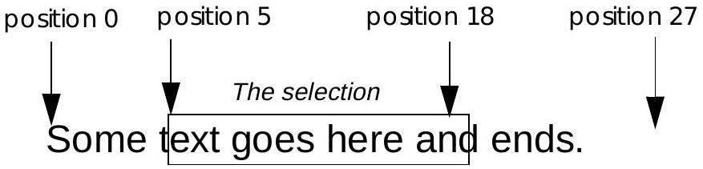
NOTE: All offsets are byte counts. In the case of characters, they are each one byte.
If the selection parameter in pgCut is a null pointer, the current selection in pg is used instead (which is usually want you want).
FUNCTION RESULT: The function result of pgRef is a newly created HERMES Paige object containing the copied text and associated text formatting. You can then pass this pg_ref to pgPaste, below.
draw_mode can be the values as described in Draw Modes under section 2.11:
draw_none, // Do not draw at all
best_way, // Use most efficient method(s)
direct_copy, // Directly to screen, overwrite
direct_or, // Directly to screen, "OR"
direct_xor, // Directly to screen, "XOR"
bits_copy, // Copy offscreen
bits_or, // Copy offscreen in "OR" mode
bits_xor // Copy offscreen in "XOR" mode
NOTES:
The pg_ref returned from pickup is a "real" HERMES Paige object, which means you need to eventually dispose of it properly using pgDispose.
Shapes from the source pg_ref are used to "clone" the resulting pg_ref from a copy or cut regardless of the selection range. For example, if the source pg_ref that gets copied contained a page_area shape with dimensions 10, 10, 580, 800, the resulting pg_ref will have the same pg_area shape. The same is true for vis_area and exclude_area.
CAUTION: If there is nothing to copy (no selection range exists), both pgCut and pgCopy will return MEM_NULL.
CAUTION: It is wise never to display the resulting pg_ref unless you first set a default graphics device to target the display. For example, doing a pgCopy then drawing to a "clipboard" window later could result in a crash. This can happen if the original window containing the copied pg_ref has been closed (rendering an invalid window attached to the copied reference). Hence, before drawing to such a "clipboard", use pgSetDefaultDevice. See Setting a device under section 3.4.
The pgCopy function is identical to pgCut except that no text is deleted, only a pg_ref is returned which is the copy of the specified text and formatting and no draw_mode is provided (because the source pg_ref remains unchanged).
HERMES Paige provides excellent error checking for out-of-memory situations with pgCopy. See chapter 26, Exception Handling.
The pgDelete function is the same as pgCut in every respect except that a "copy" is neither made nor returned. Use this function when you simply want to delete a selection range but not make a copy (such as a Clear command from a menu).
5.2 Pasting
(void) pgPaste (pg_ref pg, pg_ref paste_ref, long position, pg_boolean text_only, short draw_mode);
The pgPaste function takes paste_ref (typically obtained from pgCut or pgCopy) and inserts all of its text into pg, beginning at text offset position (which is a byte offset). The paste_ref's contents remain unchanged.
The position parameter, however, can be CURRENT_POSITION (value of -1) in which case the paste occurs at the current insertion point in pg. After the paste the insertion point advances the number of characters that were inserted from paste_ref.
If text_only is TRUE, only the text from paste_ref is inserted — no text formatting is transferred.
draw_mode can be the values as described in Draw Modes under section 2.11:
draw_none, // Do not draw at all
best_way, // Use most efficient method(s)
direct_copy, // Directly to screen, overwrite
direct_or, // Directly to screen, "OR"
direct_xor, // Directly to screen, "XOR"
bits_copy, // Copy offscreen
bits_or, // Copy offscreen, "OR" mode
bits_xor // Copy offscreen, "XOR" mode
NOTES:
If there is already selected text in pg (the target pg_ref), it is deleted before the paste occurs.
Only text and styles are affected in the target pg_ref — shapes remain unchanged.
TECH NOTE: pgPaste custom styles
I need to know when a custom style gets inserted into a particular pg_ref. That is, if a style is duplicated in an undo or clipboard context, I need to know when the style is inserted into the style table for the "real" pg_ref.
There are several ways to do this. Which method you choose depends on when you need to know, i.e. if you need to know the instant it occurs versus knowing somewhere in your app following a pgPaste or pgUndo.
By "instant it occurs" I mean when processing a style with one of the hooks, for instance. If that's what you need, one good way is to use the duplicate function. By mere virtue of getting called at all you know that HERMES Paige is adding that style for one reason or another.
If you need to find out if that style exists at any arbitrary time, one way is to use pgFindStyleInfo. This function searches all style change(s) in the text to find the first occurrence of a particular style. One useful feature in pgFindStyleInfo is that you can set up a "mask" to only compare certain specific fields in your style. I assume your custom style will contain some kind of unique value for you to identify it, in which case this function is probably exactly what you want.
Then there is the "hack" method which looks dangerous, but isn't really. This method is to look at the whole style info list directly, which should remain compatible with all future HERMES Paige versions and it is even portable between Windows and other platforms! This is done as follows:
paige_rec_ptr pg_rec; // actual struct inside pg_ref
style_info_ptr styles; // will be pointer to styles
long num_styles; // will be number of styles avail
pg_rec = UseMemory(pg); // do this to get paige struct
num_styles = GetMemorySize(pg_rec -> t_formats); // number of style_info
styles = UseMemory(pg_rec -> t_formats); // points to first style
/* At this point: styles = pointer to first style_info and num_styles contains number of styles. Hence, you can get next style as styles[1], ++styles, etc. To find your particular style, just walk through and look for it. */
// Once you're through, you MUST do:
UnuseMemory(pg_rec->t_formats);
UnuseMemory(pg);
5.3 Copying Text Only
text_ref pgCopyText (pg_ref pg, select_pair_ptr selection, short data_type);
FUNCTION RESULT: This function returns a memory allocation containing a copy of the text in pg, beginning at the specified offset as follows: if selection is non-null, it is used to determine the selection range (for information about select_pair structure, see section 4.1, Copying and Deleting). If selection is a null pointer, the current selection range is used.
NOTE: The memory_ref returned from pgCopyText will have a "record size" set to one byte. In other words, a GetMemorySize() will return the number of bytes copied (which might be different to the number of characters, since HERMES Paige can in principle handle multibyte characters).
The data_type parameter specifies which type of text to copy which can be one of the following:
typedef enum
{
all_data, // Return all data
all_text_chars, // All text that is writing script
all_roman, // All Latin ASCII chars
all_visible_data, // Return all visible data
all_visible_text_chars, // All visible text that is writing script
all_visible_roman // All visible Latin ASCII chars
};
If data_type is all_data, every byte in the specified range is copied; if all_text_chars, all single-byte text is copied (which excludes only custom characters that aren't really "text"); for all_roman, only ASCII characters of Latin script are copied (as opposed to some other script such as Chinese or Arabic).
The function result is typed as a text_ref, which is a memory allocation created by the HERMES Paige Allocation Manager.
NOTE: "Single byte text" in the above sense does not refer to single or double byte scripts such as Roman vs. Kanji. The all_text_chars data type will in fact include double-byte script. The only type excluded in this case is embedded graphics, controls, or some other customised text stream that really isn't text.
I got my text in a text_ref with pgcopyText, but there is no 0 at the end!
Can I simply add a zero at the end to create a zero-delimited string?
How do I know where the end is?
Point one: yes, but you must be careful since the memory_ref is only guaranteed to have allocated the number of bytes in the selection sent to pgCopyText. So if you want to append a zero, you should use AppendMemory, then put in the value.
memory_ref the_text;
the_text = pgCopyText(pg, &the_selection, all_data);
/* put a zero on the end so the parser doesn't walk off the end of the text */
AppendMemory(the_text, sizeof(pg_char), true);
UnuseMemory(the_text);
Point two: you can find the size of the text with GetMemorySize(), which will return the number of "records", which, in this case, will be the number of characters. Alternatively, you know the number of characters going into pgCopyText by knowing the selection range(s).
6 Undo and Redo
HERMES Paige provides a variety of functions to fully support several kinds of "undo" for most situations. HERMES Paige provides a convenient method of building custom undos which can be incorporated into your own application as well.
6.1 Concept of Undo
The concept of HERMES Paige "undo" support is as follows: Before you do anything to an HERMES Paige object that you want to be undoable, call pgPrepareUndo if you are about to do a pgCut, pgDelete, pgPaste, or any style, font or paragraph formatting change. The function result can then be given to pgUndo which will cause a reversal of what was performed.
For setting up an undo for pgCut or pgDelete, pass undo_delete for the verb parameter and a null pointer for paste_ref, for setting up an undo for pgPaste, pass undo_paste for the verb and the pg_ref you intend to paste from in paste_ref. For formatting changes (setting different fonts and styles or paragraph formats), pass undo_format for verb and null pointer for paste_ref.
6.2 Prepare Undo
To implement these features you must make the following function call prior to performing something that is undoable:
(undo_ref) pgPrepareUndo (pg_ref pg, short verb, void PG_FAR *insert_ref);
FUNCTION RESULT: This function returns a special memory allocation which you can give to pgUndo (below) to perform an Undo.
The verb parameter defines what you are about to perform, which can be one of the following:
typedef enum
{
undo_none, // Null undo ("can't undo")
undo_typing, // Undo key entry except bksp and forward delete
undo_backspace, // Undo backspace key
undo_delete, // Undo clear/cut/delete
undo_fwd_delete, // Undo forward delete
undo_paste, // Undo paste/insert
undo_format, // Undo text style, para format, or font
undo_insert, // Undo some other form of insertion
undo_page_change, // Undo page area change
undo_vis_change, // Undo vis area change
undo_exclude_change, // Undo exclusion area change
undo_doc_info, // Undo setDocInfo change
undo_embed_insert, // Undo embed_ref insertion
undo_app_insert // Undo insert with position parameter
};
About to perform means that you are about to do something you wish to be undoable later on. This includes performing a deletion, insertion, or text formatting change of any kind.
6.3 The insert_ref Parameter
For undo_paste, insert_ref must be the pg_ref you intend to paste (the source "scrap"); for undo_insert, insert_ref must be a pointer to the number of bytes to be inserted.
The undo_app_insertverb is identical to undo_insert except you must specify the insert location (undo_insert assumes the current text position). To do so, insert_ref must be a pointer to an array of two long words, the first element should be the text position to be inserted and the second element the insertion size, in bytes.
For undo_typing, undo_backspace and undo_fwd_delete, insert_ref should be the previous undo_ref you received for any pgPrepareUndo — or NULL if none.
NOTE:insert_ref, in this case, is an undo_ref — not a pointer to one — so you must coerce the undo_ref as (void PG_FAR *).
For all other undo preparations, insert_ref should be NULL.
Insert 100 bytes
If you are about to insert, say, 100 bytes, you would call pgPrepareUndo as follows:
long length;
length = 100;
pgPrepareUndo(pg, undo_insert, (void PG_FAR *) &length);
/* The following function inserts a key into pg and returns the undo_ref that can be used to perform "Undo typing". The last_undo is the previous undo_ref, or MEM_NULL if none. */
undo_ref insert_width_undo (pg_ref pg, pg_char the_key, undo_ref last_undo)
{
undo_reffunction_result;
if (the_key >= ' ') // if control char
{
if(the_key == FWD_DELETE_CHAR)
function_result = pgPrepareUndo(pg, undo_fwd_delete, (void PG_FAR *) last_undo);
else
function_result = pgPrepareUndo(pg, undo_typing, (void *) undo);
}
else if (the_key == BACKSPACE_CHAR)
function_result = pgPrepareUndo(pg, undo_backspace, (void *) undo);
pgInsert(pg, (pg_char_ptr) &the_key, sizeof(pg_char), CURRENT_POSITION, key_insert_mode, 0, best_way);
return function_result;
}
For undo_paste, insert_ref must be the pg_ref you are about to paste (same as before).
For all other undo verbs, insert_ref is not used (so can be NULL).
6.4 Additional Undo verbs
undo_page_change can be used before changing the page shape, undo_vis_change before changing the visual area, and undo_exclude_change before changing the exclusion area.
The undo_doc_infoverb can be given before changing anything in pg_ref's doc_info. For example, you could do “Undo Page Setup” with this undo verb.
The undo_embed_insertverb can be used before inserting an embed_ref (see chapter on Embedded Objects). Note, unlike undo_insert and undo_app_insert, the insert_ref parameter should be NULL for undo_embed_insert.
Undoing "Containers"
When you use undo_page_change, HERMES Paige will set up an undo (and restore upon redo) both "container" rectangles and the associated refcons. You can therefore perform a full Undo Container Change.
6.5 Performing the Undo
To perform the actual Undo operation, pass an undo_ref to the following:
(undo_ref) pgUndo (pg_ref pg, undo_ref ref, pg_boolean requires_redo, short draw_mode);
The ref parameter must be an undo_ref obtained from pgPrepareUndo.
If requires_redo is TRUE, pgUndo returns a new undo_ref which can be used for a "Redo".
For example, if the undo_ref passed to this function performed an "Undo Cut," and requires_redo is given as TRUE, the function will return a new undo_ref which, if given to pgUndo again, would perform a "Redo Cut." Undo/Redo results can be toggled back and forth this way virtually forever.
draw_mode can be the values described in Draw Modes under section 2.11:
draw_none, // Do not draw at all
best_way, // Use most efficient method(s)
direct_copy, // Directly to screen, overwrite
direct_or, // Directly to screen, "OR"
direct_xor, // Directly to screen, "XOR"
bits_copy, // Copy offscreen
bits_or, // Copy offscreen, "OR" mode
bits_xor // Copy offscreen, "XOR" mode
Generally, if you want the HERMES Paige object to re-draw, pass best_way for draw_mode.
NOTES
pgUndo returns a new undo_ref, which is a completely different allocation to the undo_ref you passed to it. It is your responsibility to dispose all undo_refs.
When an Undo is performed, it does not matter what the selection point (or selection range) is in pg at the time — pgUndo will restore whatever selection range(s) existed at the time the undo_ref was created. For example, if the user performs an action for which you created an undo_ref, such as a Paste, and then he selects some other text or clicks at a different location, pgUndo still works correctly, given that the original insertion point for the Paste is recorded in the undo_ref.
6.6 Disposing undo_refs
Once you are through using an undo_ref, dispose it by calling the following function:
(void) pgDisposeUndo (undo_ref ref);
The ref parameter must be a valid undo_ref (received from pgPrepareUndo or pgUndo); or, ref can be MEM_NULL (in which case pgDisposeUndo() does nothing).
NOTES
MEM_NULL is allowed intentionally, so that you can blindly pass your application's last "undoable" operation that can be set initially to MEM_NULL.
There are a few cases where you should not dispose an undo_ref — see following.
Disposing the Previous Prepare-Undo
If you are implementing single-level undo support (user can only undo the last operation), you would normally need to dispose the "old" undo_ref (the one returned from the previous pgPrepareUndo()) before preparing for the next undo. For undo_typing, undo_fwd_delete, and undo_backspace, you must not dispose the "old" undo_ref — these are the lone exceptions to the "dispose-old-undo" rule.
The reason for this is that you give HERMES Paige the "old" undo_ref as the insert_ref parameter; for undo_typing, undo_backspace, and undo_fwd_delete, the undo_ref given in insert_ref is either disposed or returned back to you as the function result.
Never dispose the "previous" undo_ref when preparing for any of these "character" undos (undo_typing, undo_backspace and undo_fwd_delete). In all other cases, it is OK to dispose the previous undo_ref.
6.7 Undo Type
short pgUndoType (undo_ref ref);
This returns what type of undo_ref will perform.
FUNCTION RESULT: The function returns one of the undo verbs listed above under pgPrepareUndo, or a negative complement of a verb.
If the undo_ref is intended for a redo (returned from pgUndo, the verb will be its negative complement. For example, if pgUndoType() returns undo_paste, a call to pgUndo() would essentially perform a "Redo Paste".
A good use for this function is to set up a menu item for the user to indicate what can be undone.
NOTE
If you want to record more information about an Undo operation than the undo verbs listed above, use pgSetUndoRefCon, of which an explanation follows.
6.8 Undo RefCon
(void) pgSetUndoRefCon (undo_ref ref, long refCon);
(long) pgGetUndoRefCon (undo_ref ref);
These two functions allow you set (or get) a long reference inside an undo_ref.
The ref parameter must be a valid undo_ref; for pgSetUndoRefCon, refCon can be anything. pgGetUndoRefCon returns whatever has been set in ref.
6.9 Customising Undo
HERMES Paige has a low-level hook for which you can use to implement modified undo actions, or you can completely customise an undo regardless of its complexity. For more information, see chapter 27, Customising HERMES Paige.
6.10 Multilevel Undo
Your application can theoretically provide multiple-level Undo support by simply preparing a "stack" of undo_refs returned from pgPrepareUndo. Given that each undo_ref is independent of the next (i.e. there are no data structures within an undo_ref that depend on other undo_ref s or even pg_refs), an application can keep as many of these around as desired to achieve "Undo of Undo" and "Undo of Undo of Undo," etc.
Supporting a multilevel Undo (being able to undo the last several operations) simply involves "stacking" the undo_refs returned from pgPrepareUndo.
CAUTION
When you set up for "Undo Typing" (be it for a regular insertion, backspace or forward delete), HERMES Paige might return the same undo_ref that was given to pgPrepareUndo, and/or it might delete the previous undo_ref passed to the insert_ref parameter. In this case, make sure you check for this situation and handle it.
Example
/* The following code places consecutive undo_refs into an array so multi-level "Undo" can be supported. While we only show stacking a maximum of 16, it can of course be bigger. */
undo_ref stacked_refs[16];
short stack_index = 0; // Begins with "no undos".
/* We call "PrepareUndo" from several places in the program. The verb is the undo_verb to be performed. */
void PrepareUndo(pg_ref pg, short_verb)
{
undo_ref new_undo, previous_undo;
previous_undo = MEM_NULL; // Assume no previous undo.
if (verb == undo_typing || verb == undo_fwd_delete || verb == undo_backspace)
if (stack_index > 0) // There is a previous undo.
if (pgUndoType(stacked_refs[stack_index - 1] == verb))
otherparam = stacked_refs[stack_index - 1];
new_undo = pgPrepareUndo(pg, verb, (void PG_FAR *))
previous_undo;
// Check to see if HERMES Paige returned the same undo_ref.
if(!previous_undo || new_undo != previous_undo_
++stack_index;
stacked_refs[stack_index - 1] = new_undo;
}
7 CLIPBOARD SUPPORT
HERMES Paige provides a certain degree of automatic support for the external clipboard, regardless of platform.
7.1 Writing to the Clipboard
void pgPutScrap(pg_ref the_scrap, pg_os_type native_format, short scrap_type);
This function writes the appropriate data to the external clipboard for other applications to read (including your own application). The data to be written is contained in the_scrap; usually, the_scrap would have been returned earlier from pgCopy() or pgCut().
The scrap_type parameter indicates the preferred format within pg to write to the clipboard. If scrap_type is pg_void_scrap (value of zero), HERMES Paige will write whatever format(s) are appropriate, including its own native type.
If scrap_type is non-zero, it must be one of pg_native_scrap (the HERMES Paige native format), pg_text_scrap (ASCII text), or pg_embed_scrap (the contents of an embed_ref).
For pg_embed_scrap, only embed_mac_pict (for Macintosh) and embed_meta_file (for Windows) are supported, and only the first embed_ref found within the_scrap is written to the clipboard.
The native_format parameter should contain a platform-appropriate identifier for a native HERMES Paige format. For the Macintosh platform, pg_os_type is an OSType parameter; for the Windows platform, pg_os_type is a WORD parameter (Win16) or int parameter (Win32). Note that the value you place in native_format depends upon the runtime platform, as follows:
Windows only
You must first register a new format type by calling RegisterClipboardFormat(), then use that format type for every call to pgPutScrap() and pgGetScrap(). The name of this format type can be arbitrary; however, to remain consistent we recommend the name used by the custom control, "HERMES Paige".
NOTES
IMPORTANT! You must call OpenClipboard() before calling pgPutScrap(), then call CloseClipboard() after this function has returned. HERMES Paige can't open the clipboard for you because it can't assume there is a valid HWND available within its structure.
All data from the clipboard is copied, i.e. the data within the pg_ref is not owned by the clipboard.
Macintosh only
For Macintosh, a pg_os_type is identical to OSType. The name of this format type can be arbitrary; however, to remain consistent we recommend the name used by the custom control, paig.
All Platforms
For both Macintosh and Windows platform, the clipboard is cleared before any data is written. If it is successful, the data can be read from the clipboard by calling pgGetScrap(), below.
This function checks the external clipboard for a recognisable format and, if found, returns a new pg_ref containing the data; the pg_ref can then be passed to pgPaste. This function will work for both Macintosh and Windows-based applications.
The globals parameter must be a pointer to the HERMES Paige globals structure (same structure used for pgNew()).
The native_format parameter should contain the same native format type identifier that was given to pgPutScrap(). For example, if running on a Macintosh, the native_format might be paig. On a Windows machine, native_format would be the value returned from RegisterClipboardFormat().
The def_embed_callback parameter is an optional function pointer to an embed_ref callback function. The purpose of providing this parameter is to initialise any embed_refs read from the clipboard to use your callback function. If def_embed_callback is NULL it will be ignored (and the default callback used by HERMES Paige will be placed into any embed_refs read).
NOTE (Windows)
IMPORTANT: You must call OpenClipboard() before calling pgGetScrap(), then call CloseClipboard() after you are through processing the data. HERMES Paige can't open the clipboard for you because it can't assume there is a valid HWND available within its structure.
Function Result
If a format is recognized on the clipboard, a new pg_ref is returned containing the clipboard data. If no format(s) are recognized, MEM_NULL is returned.
NOTE
It is your responsibility to dispose the pg_ref returned from this function.
7.3 Format Type Priorities
Windows
HERMES Paige will check the clipboard for format types it can support in the following priority order:
HERMES Paige native format (taken from native_format parameter).
Text (CF_TEXT).
Metafile (CF_METAFILEPICT)
Bitmap (CF_BITMAP)
If none of the above formats are found, pgGetScrap() returns MEM_NULL.
Macintosh
HERMES Paige will check the clipboard for format types it can support in the following priority order:
HERMES Paige native format (taken from native_format parameter).
Text (TEXT).
Picture (PICT).
If none of the above formats are found, pgGetScrap returns MEM_NULL.
This function returns TRUE if there is a recognisable format in the clipboard. No data is read from the clipboard — only the data availability is returned.
The native_format should be the appropriate clipboard format type for the HERMES Paige native format (see pgPutScrap() above).
This function is useful for controlling menu items, e.g. disabling "Paste" if nothing is in the clipboard.
NOTE (Windows)
IMPORTANT: You should call OpenClipboard() before calling pgScrapAvail(), then call CloseClipboard() after this function has returned.
8 STYLE BASICS
HERMES Paige maintains three separate text formatting runs (series of text formatting changes): styles (bold, italic, super/subscript, etc.), fonts (Helvetica, Times, etc.) and paragraph formats (indentations, tabs, justification, etc.).
Each of these three formats can be changed separately; any portion of text can be a combination of each of these formats. Setting each of those is described in detail in chapter 30, Advanced Styles. This chapter, Style Basics, describes the easiest, quickest, and simplest way to set the style, font and paragraph format you want.
NOTE
Unlike a Windows font that defines the whole composite format of text, the term font as used in this chapter generally refers only to a typeface, or typeface name. HERMES Paige considers a font to simply be a specific family such as Candara, Consolas, Corbel, etc., while distinguishing other formatting properties such as bold, italic, underline, etc. as the text style.
8.1 Simplified Fonts and Styles
The simplest way to change the text in a pg_ref to different fonts, style or color is to use the high-level utility functions provided with HERMES Paige version 3.0. These utilities provide a "wrapper" around the lower-level HERMES Paige functions that change styles, fonts and text colors.
The source code to the wrapper has also been provided for your convenience, so you can alter them as necessary to fit your particular application. Or, you can examine them as reference material as the need occurs to apply more sophisticated stylization to your document.
Installing the Wrapper
All the functions listed in this section can be installed by including the source file pgHLevel.c in your project and pgHLevel.h as its header file. These functions can be called from both Macintosh and Windows platforms and should work with all compilers that support standard C conventions.
NOTE
If your application requires more sophistication than provided in this high-level wrapper, and/or if you cannot use the wrapper for any reason, please see chapter 30, Advanced Styles.
8.2 Selection Range
Most of the functions in this chapter require a selection range, select_pairs and CURRENT_SELECTION.
The selection range defines the range of text that should be changed, or if you pass a null pointer the current selection range (or insertion point) in pg is changed.
typedef struct
{
long begin; // Beginning offset of some text portion
long end // Ending offset of some text portion
}
select_pair
typedef select_pair PG_FAR *select_pair_ptr;
The begin field of a select_pair defines the beginning text offset and the end field defines the ending offset. Both offsets are byte offsets, not character offsets. Text offsets in HERMES Paige are zero-indexed (i.e., the first offset is zero).
This function changes the text in pg to the specified font_name.
If selection_range is a null pointer, the text in pg currently selected is changed (or, if nothing is selected, the font is applied to the next key insertion).
If selection_range is not null, it must point to a select_pair record defining the beginning and ending text offsets to apply the font. (See also section 8.2, Selection Range).
If redraw is TRUE the changed text is redrawn if there was a selected range affected.
NOTE
Only the font is affected in the composite style of the specified text; i.e., the text will retain its current point size and its other style attributes, with only the font family changing.
This function returns the font name that is applied to the text currently highlighted in pg (or, if nothing is highlighted, the font that applies to the current insertion point is returned).
The font name is returned in font_name. If, however, the text is selected and the text range has more than one font, pgGetFontByName returns FALSE and font_name is not certain.
This function changes the text point size to the new size specified.
If selection_range is a null pointer, the text in pg currently highlighted is changed (or, if nothing is highlighted, the point size is applied to the next key insertion).
If selection_range is not null, it must point to a select_pair record defining the beginning and ending text offsets to apply the size. (See also section 8.2, Selection Range).
If redraw is TRUE, the changed text is redrawn if there was a selected range affected.
NOTE
Only the text size is affected in the composite style of the specified text, i.e. the text will retain its current font family and its other style attributes; only the point size changes.
Prototype (same for both Mac and Windows)
#include "pgHLevel.h"
pg_boolean pgGetPointsize (pg_ref pg, short PG_FAR *point_size);
This function returns the point size that is applied to the text currently selected in pg (or, if nothing is selected, the point size that applies to the current insertion point is returned).
The point size is returned in *point_size (which must not be a null pointer). However, if the text is highlighted and the text range has more than one size, pgGetPointsize returns FALSE and *point_size is not certain.
8.5 Setting/Getting Styles
Setting easy styles
Prototype (same for Mac and Windows)
#include "pgHLevel.h"
void pgSetStyleBits (pg_ref pg, long style_bits, long set_which_bits, select_pair_ptr selection_range, pg_boolean_redraw);
This function changes the text style(s) to the new style(s) specified. "Styles" refers to text drawing characteristics such as bold, italic, underline, etc.
The style(s) to apply are represented in style_bits, which can be a composite of any of the following values:
The set_which_bits parameter specifies which of the styles specified in style_bits to actually apply; the value(s) you place in set_which_bits should simply be the bits (as defined above) that you want to change.
The purpose of set_which_bits is to distinguish between a style you choose to force to "off" versus a style you choose to remain unchanged.
For example, suppose you want to change all the selected text to boldface but leave the other styles of the text unchanged. To do so, you would simply pass X_BOLD_BIT in both style_bits and set_which_bits.
However, suppose you want to force the selected text to strictly bold (forcing all other styles off). In this case, you would pass X_BOLD_BIT in style_bits and 0xFFFFFFFF (or X_ALL_STYLES ) in set_which_bits.
Also note for "plain" text (forcing all styles off), pass X_PLAIN_TEXT for style_bits and X_ALL_STYLES for set_which_bits.
If selection_range is a null pointer, the text in pg currently selected is changed (or, if nothing is selected, the style(s) are applied to the next key insertion).
If selection_range is not null, it must point to a select_pair record defining the beginning and ending text offsets to apply the style(s). (See also section 8.2, Selection Range).
If redraw is TRUE and a selected range is affected, the changed text is redrawn.
NOTE
Only the specified style attributes will affect the text, i.e. the selected text will retain its font family and point size, and all other style attributes that are not specified in set_which_bits.
NOTE (Macintosh)
The first six style definition bits are identical to QuickDraw's style bits. You might find it convenient to simply pass the QuickDraw style(s) to this function.
Getting Style Example
#include "pgHLevel.h"
/* The following code sets the text currently selected in pg to bold-italic but leaves all other styles in the text alone. The text gets re-draw with the changes if we had a highlight range.*/
long style_bits = X_BOLD_BIT | X_ITALIC_BIT;
pgSetStyleBits(pg, style_bits, style_bits, NULL, TRUE);
/* The following code sets the text currently selected in pg to bold-italic but does NOT leave the other styles alone (forces text to bold-italic and turns off all other styles). The text gets re-drawn with the changes if we had a highlight range. */
long style_bits = X_BOLD_BIT | X_ITALIC_BIT; pgSetStyleBits(pg, style_bits , X_ALL_STYLES, NULL, TRUE);
// The following code changes all the selected text to "plain"
pgSetStyleBits(pg, X_PLAIN_TEXT, X_ALL_STYLES, NULL, TRUE);
Prototype (both Mac and Windows)
#include "pgHLevel.h"
void pgGetStyleBits (pg_ref pg, long PG_FAR *style_bits, long PG_FAR *consistent_bits);
This function returns the style(s) that are applied to the text currently highlighted in pg (or, if nothing is highlighted, the style(s) that apply to the current insertion point are returned).
The style(s) are returned in *style_bits (which must not be a null pointer); the value of *style_bits will be a composite of one or more of the style bits as defined in pgSetStyleBits (above).
The *consistent_bits parameter will also get set to the style(s) that remains consistent throughout the selected text; if a style bit in consistent_bits is set to a "1", that corresponding bit value in *style_bits is the same throughout the selected text.
For example, if *style_bits returns with all 0's, yet *consistent_bits is set to all 1's, the selection is purely "plain text" (no styles are set). However, if *style_bits returned all 0's but *consistent_bits was not all 1's, the text is not "plain text," rather the bits that are 0 in *consistent_bits reveal that style is not the same throughout the whole selection.
NOTE: The consistent_styles parameter must not be a null pointer.
pgSetTextColor changes the foreground colour of text in pg to the specified color; pgSetTextBKColor changes the background colour of text in pg to the specified color.
If selection_range is a null pointer, the text in pg currently highlighted is changed (or, if nothing is highlighted, the color is applied to the next key insertion).
If selection_range is not null, it must point to a select_pair record defining the beginning and ending text offsets to apply the color. (See also section 8.2, Selection Range).
If redraw is TRUE and a selected range was affected, the changed text is redrawn.
NOTE
Only the text colour is affected in the specified text, i.e. the text will retain its current font family, point size and its other style attributes.
pgGetTextColor returns the foreground colour that is applied to the text currently highlighted in pg (or, if nothing is highlighted, the colour that applies to the current insertion point is returned); pgGetTextBKColor returns the text background colour.
The colour is returned in *color (which must not be a null pointer). However, if the text is highlighted and the text range has more than one size, the function returns FALSE and *color is not certain.
8.7 Style Examples
Setting styles (Windows)
/* The following code shows an example of setting a new point size, a new font and new style(s) taken from a "LOGFONT" structure. All new text characteristics are applied to the text currently highlighted (or they are applied to the NEXT pgInsert if no text is highlighted). Carefully note that we do not "redraw" the text until the last function is called, otherwise we would keep "flashing" the refresh of the text. */
#include "Paige. h"
#include "pgUtils.h"
#include "pgHLevel.h"
LOGFONT log_font; // got this from "ChooseFont" or whatever
long style_bits, set_bits; // used for pgSetStyleBits
// Set font (by name)
pg SetFontByName(pg_log_font.lfFaceName, NULL, FALSE);
// Set point size
pg SetPointSize(pg, pgAbsoluteValue((long)log_font.lfHeight, NULL, FALSE);
// Set style attributes:
style_bits = set_bits = 0;
if (log_font.lfWeight == FW_BOLD)
style_bits |= X_BOLD_BIT;
if (log_font.lfItalic)
style_bits |= X_ITALIC_BIT;
if (log_font.lfUnderline)
style_bits |= X_UNDERLINE_BIT;
if (log_font.lfStrikeOut)
style_bits |= X_STRIKEOUT_BIT;
// Before setting the styles, check if we actually have "plain text":
if (style_bits == X_PLAIN_TEXT)
set_bits = X_ALL_STYLES;
else
set_bits = style_bits;
// Note, this time we pass "TRUE" for redraw because we are done:
pgSetStyleBits(pg, style_bits, set_bits, NULL, TRUE);
Handling font menu (Macintosh)
#include "pgHLevel.h"
/* The following code assumes a "Font" menu (which lists all available fonts), a "Style" menu (containing Plain, Bold, etc.) and a "Point" menu (with 9, 12, 18 and 24 point values). Each example assumes its respective menu has been selected by user and "menu_item" is the item selected. */
/* For font menu: */
Str255 font;
GetItem(FontMenu, menu_item, font);
pgSetFontByName(pg, font, NULL, TRUE);
/* For style menu: */
long style_bits, set_bits;
switch (menu_item)
{
case PLAIN_ITEM:
style_bits = X_PLAIN_TEXT;
set_bits = X_ALL_STYLES;
break;
case BOLD_ITEM:
style_bits = set_bits = X_BOLD_BIT;
break;
case ITALIC_ITEM:
style_bits = set_bits = X_ITALIC_BIT;
break;
case UNDERLINE_ITEM:
style_bits = set_bits = X_UNDERLINE_BIT;
break;
case OUTLINE_ITEM:
style_bits = set_bits = X_OUTLINE_BIT;
break;
case SHADOW_ITEM:
style_bits = set_bits = X_SHADOW_BIT;
break;
}
pgSetStyleBits(pg, style_bits, set_bits, NULL, TRUE);
// Setting point size
short pointsize;
switch (menu_item)
{
case PT9_ITEM:
pointsize = 9;
break;
case PT12_ITEM:
pointsize = 12;
break;
case PT18_ITEM:
pointsize = 18;
break;
case PT24_ITEM:
pointsize = 24;
break;
}
Changing the paragraph format applied to text range(s) requires a separate function call since paragraph formats are maintained separate from text styles and fonts.
To set one or more paragraphs to a different format, call the following:
This function is almost identical to pgSetStyleInfo or pgSetFontInfo except a par_info record is used for info and mask.
The other difference is that pgSetParInfo will always apply to at least one paragraph: even if the selection "range" is a single insertion point, the whole paragraph that contains the insertion point is affected.
The selection and draw_mode parameters are functionally identical to the same parameters in pgSetStyleInfo (see "Changing Styles" and "Draw Modes"), except whole paragraphs are changed (even if you specify text offsets that do not fall on paragraph boundaries). (For more information, vide section 8.2, Selection Range, and chapter 10, All About Selection).
For detailed information on par_info records—and what fields you should set up—see "par_info".
NOTE
If you want to set or change tabs, it is more efficient (and less code) to use the functions in chapter 9, Tabs and Indents.
This function returns paragraph information for a specific range of text.
If selection is a null pointer, the information that is returned applies to the current selection range in pg (or the current insertion point); if selection is non-null, pointing to select_pair record, information is returned that applies to that selection range (for information about select_pair pointer under pgGetStyleInfo, see section 5.1, Copying and Deleting).
Both info and mask must both point to par_info records; neither can be a null pointer. When the function returns, both info and mask will be filled with information you can examine to determine what style(s), paragraph format(s), or font(s) exist throughout the selected text, and/or which do not.
If set_any_mask was FALSE, all the fields in mask that are set to nonzero indicate that the corresponding field value in info is the same throughout the selected text; all the fields in mask that are set to zero indicate that the corresponding field value in info is not the same throughout the selected text.
For example, suppose after calling pgGetParInfo, mask.spacing has a nonzero value. That means that whatever value has been set in info.spacing is the same for every paragraph in the selected text. Hence, if info.spacing is 12, then every character is spaced the same.
On the other hand, suppose after calling pgGetParInfo, mask.spacing is set to zero. That means that some of the characters in the selected text match the spacing in info and some do not. In this case, whatever value happens to be in info.spacing is not certain.
Essentially, any non-zero value in mask is saying, "Whatever is in info for this field is applied to every character in the text," and any zero in mask is saying, "Whatever is in info for this field does not matter because it is not the same for every character in the text."
You want to pass FALSE for set_any_mask to find out what paragraph formats apply to the entire selection (or not).
TABLE #3: POSSIBLE RESULTS WHEN SET_ANY_MASK IS SET TO FALSE
info
mask
results
12
-1
All paragraphs have spacing of 12
12
0
Some paragraphs have spacing of 12
Setting set_any_match to TRUE is used to determine if only a part of the text matches a given paragraph format. This is described in "Obtaining Current Text Format(s)". The par_info structure is described in "par_info".
9 TABS AND INDENTS
9.1 Tab Support
One of the elements of a paragraph formats is a list of tab stops. Although you could set tabs (or change tabs) using pgSetParInfo, some additional functions have been provided exclusively for tabs to help save on coding:
void pgSetTab (pg_ref pg, select_pair_ptr selection, tab_stop_ptr tab_ptr, short draw_mode);
This function sets a new tab that applies to the specified selection.
The selection parameter is used in the same way as other functions use a select_pair parameter: if it is a null pointer, the current selection in pg is used, otherwise the selection is taken from the parameter (for information about pgSetParInfo regarding select_pair records, see section 8.2, Selection Range).
The draw_mode is also identical to all other functions that accept a draw_mode parameter. draw_mode can be the values as described in Draw Modes under section 2.11:
draw_none, // Do not draw at all
best_way, // Use most efficient method(s)
direct_copy, // Directly to screen, overwrite
direct_or, // Directly to screen, "OR"
direct_xor, // Directly to screen, "XOR"
bits_copy, // Copy offscreen
bits_or, // Copy offscreen, "OR" mode
bits_xor // Copy offscreen, "XOR" mode
The tab_ptr parameter is a pointer to the following record (tab must not be a null pointer):
typedef struct
{
long tab_type; // Type of tab
long position; // Tab position
long leader; // Tab leader (or null)
long ref_con; // Can be used for anything
}
The tab_type field can be one of the following:
typedef enum
{
no_tab, // none (used to delete)
left_tab, // left tab
center_tab, // centre tab
right_tab, // right tab
decimal_tab // tab on decimal point
}
The position field in a tab_stop defines the tab's position, in pixels. However, a tab's pixel position is relative to either the left edge of pg's page_area, or to the left edge of the window (see section 9.3, Tab Base).
If leader is nonzero, the tab is drawn with that value as a "leader" character. HERMES Paige assumes that the character has simply been coerced to a numeric value, which will therefore imply whether the leader character is a single ASCII byte (leader < 256), or a double byte (leader > 256).
For example, if the leader is a single ASCII byte for a "." (hexadecimal 2E), the value placed in leader should be 0x0000002E. If leader is a double-byte character, such as the Kanji with hexadecimal value 802E, then the leader value should be set to 0x0000802E, etc.
my_tab.leader = '-';
A leader is the character placed before a tab, like this
01234 5 6789
ABC -[TAB]DEFG
The ref_con field can be used for anything.
Deleting a Tab
You can delete a tab by calling pgSetTab with a tab record of type no_tab where the position field set to the exact position of the existing tab you wish to delete.
Changing a Tab
If you want to change a tab's position (location relative to the tab base), you must delete the tab and add a new one (see previous subsection, Deleting a Tab).
If you want to change anything else (such as the tab type or leader), simply call pgSetTab with a tab record whose position is identical to the one you wish to change.
NOTES:
The maximum number of tab settings per paragraph is 32.
Tab settings affect whole paragraphs. They are in fact part of the paragraph formatting.
TECH NOTE: Tabs setting different for different lines
I am displaying information in Paige with each block of info occupying 2 lines of text. I would like to have tab stops set differently for the first and second line.
It depends on what you mean by "line."
If each line ends with a CR (carriage return), HERMES Paige considers each one a "paragraph" and thus you can simply change the paragraph formatting to be different for each line.
However, if both of your lines are one continuous string of text that just word-wraps into two lines, it is virtually impossible to apply two different sets of tab stops.
This is because tabs are, by definition, a paragraph format and a paragraph is simply text that ends with a CR, no matter how many lines it might have.
I will assume you have CR-terminated lines ("paragraphs"). To apply different tab stops to the second line, you need to simply use the tab setting function(s) as given in the manual. of course you need to know at least one of the text positions in the line you need to change (for example, you need to know that line number 2 starts at the 60th character, or the $72 \mathrm{nd}$ character, etc.); you also need to insert the text line first before you can apply the tab-stop changes (unlike text styles, paragraph styles require that you have a "paragraph" for which to apply the style change).
9.2 Changing / Getting Multiple Tabs
Get Tab List
This provides a way to look at all the tabs within a section of text:
The selection parameter operates in the same way it does for pgGetParInfo (see "Obtaining Current Text Format(s)" for information about pgGetStyleInfo and pgGetParInfo).
The tabs and tab_mask parameters for pgGetTabList are memory allocations which you must create before calling this function. When the function returns, tabs will be set to contain an array of tab_stop records that apply to the selection range and tab_mask will be set to contain an array of longs containing non-zeros for every tab that is consistent (the same) throughout the selection.
For example, supposing that the specified selection contained 3 tabs, when pgGetTabList returns, tabs would contain all three tab_stop records and tab_mask would contain 3 long words (each corresponding to the tab in tabs). If the corresponding long word in tab_mask is zero, that tab is inconsistent (not the same) and/or does not exist throughout the entire selection range.
The tab_mask, however, can be a MEM_NULL if you don't require a "consistency report." The tabs parameter, however, must be a valid memory_ref.
The screen_offset parameter should either be a pointer to a long or a null pointer. When the function returns, the variable pointed to by screen_offset will get set to the tab base value (the position, in pixels, against which tabs are measured—see section 9.3, Tab Base). If screen_offset is a null pointer, it is ignored.
NOTES
To learn how to create the allocations passed to tabs and tab_mask, and how to access their contents, see chapter 25, The Allocation Manager.
Calling this function forces the tabs memory allocation to contain sizeof(tab_stop) record sizes. Hence, the result of GetMemorySize(tabs) will return the number of tab_stop records. Similarly, the tab_mask is forced to a record size of sizeof(long), so GetMemorySize(tab_mask) will return the same number.
If no tabs exist at all, pgGetTabList will set your tabs and tab_mask allocation to a size of zero.
The above function provides a way to apply multiple tabs all at once to a specified selection.
The selection parameter operates the same as all functions that accept a select_pair.
draw_mode can be the values as described in Draw Modes under section 2.11:
draw_none, // Do not draw at all
best_way, // Use most efficient method(s)
direct_copy, // Directly to screen, overwrite
direct_or, // Directly to screen, "OR"
direct_xor, // Directly to screen, "XOR"
bits_copy, // Copy offscreen
bits_or, // Copy offscreen, "OR" mode
bits_xor // Copy offscreen, "XOR" mode
The tabs and tab_mask parameters must be memory allocations that you create. The tabs allocation must contain one or more tab stop records; the tab_mask allocation must have an identical number of long words, each long corresponding to the tab element in tabs. For every entry in tab_mask that is nonzero, that corresponding tab is applied to the selection range; for every tab_mask entry that is zero, that tab is ignored.
For example, if you set up the tabs allocation to contain 3 tab_stop records, and the tab_mask had three longs of 1, 0, 1, then the first and third tab would be applied to the selection range; the second tab would not be applied.
However, tab_mask can be MEM_NULL if you simply want to set all tabs unconditionally.
NOTES
To learn how to create the allocations passed to tabs and tab_mask, and how to access their contents, see chapter 25, The Allocation Manager.
The maximum number of tab_stops applied to one paragraph is 32.
When setting multiple tabs, any current tab settings are maintained — they do not get "deleted". However, a tab_stop does get replaced if a new tab contains the same exact position.
9.3 Tab Base
Tab positions (the pixel positions specified in the position field of a tab_stop record) are considered relative to some other position and not absolute. HERMES Paige supports three "tab base" values defining the relative position for which to place tabs. If the base value is positive or zero, HERMES Paige uses that value as the tab base. If the base value is negative, the tab base implies one of the following:
#define TAB_BOUNDS_RELATIVE -1 // relative to page_area bounds
#define TAB_WRAP_RELATIVE -2 // relative to current line wrap edge
The difference between TAB_BOUNDS_RELATIVE and TAB_WRAP_RELATIVE depends on what kind of wrap shape (page_area) that exists in the HERMES Paige object. TAB_BOUNDS_RELATIVE means tabs are always relative to the entire bounding area (enclosing rectangle) of the page_area, regardless of the shape, while TAB_WRAP_RELATIVE measures tabs against the leftmost edge of the specific portion of the text line for which the tab is intended.
Setting/Changing Tab Base
(void) pgSetTabBase (pg_ref pg, long tab_base);
(long) pgGetTabBase (pg_ref pg);
To set (or change) the tab base, call pgSetTabBase and provide the base value in tab_base, which can be a positive number or zero (in which case, tabs are relative to that pixel position), or a negative number (either TAB_BASE_RELATIVE or TAB_BOUNDS_RELATIVE).
To get the current tab base, call pgGetTabBase and the base currently used by pg will be the function result.
NOTE: The default tab base in a new pg_ref is zero (tabs are relative to pixel position 0).
The four illustrations to follow show examples of how tab positions are measured against the tab base value (the tab base value is stored in pg_ref and can be changed with the functions shown above).
Figure 4 ("TAB BASE = 0") shows a tab measurement with a tab base of zero, while Figure 5 ("TAB BASE = 16") shows a tab base of 16, in which case all tabs are relative to 16 pixels from the left of the window. In both cases, the window's left origin is assumed to be at coördinates (0, 0).
Figures 6 ("TAB BASE = TAB_BOUNDS_RELATIVE") and 7 ("TAB BASE = TAB_WRAP_RELATIVE") both measure tabs against the left side of page_area, except that, where a line of text exists, TAB_WRAP_RELATIVE is measured against the edge of page_area. If page_area is a single rectangle, both of the latter two tab base modes are identical.
Figures 4 – 7
The following are some illustrations of different tab base values:
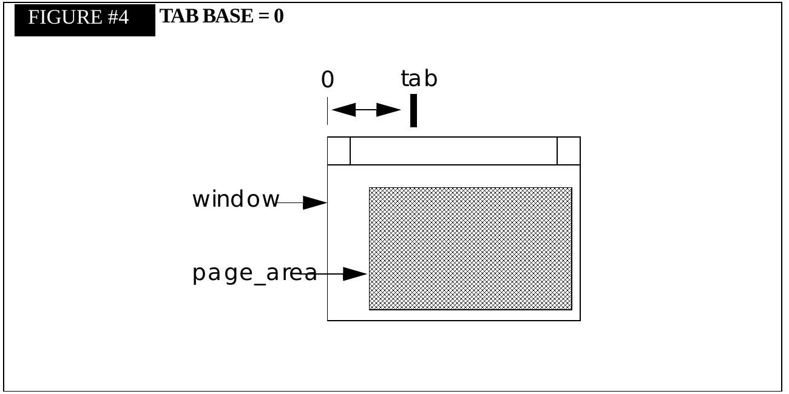
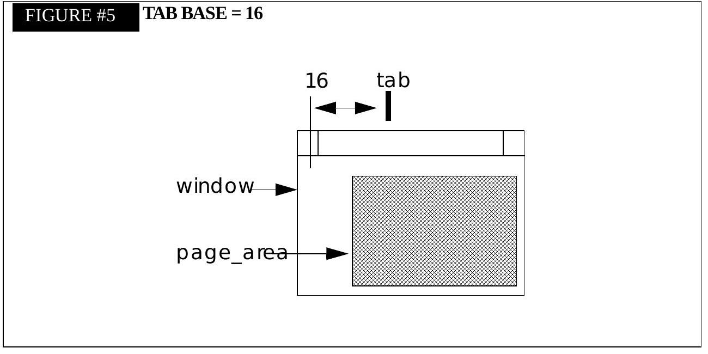
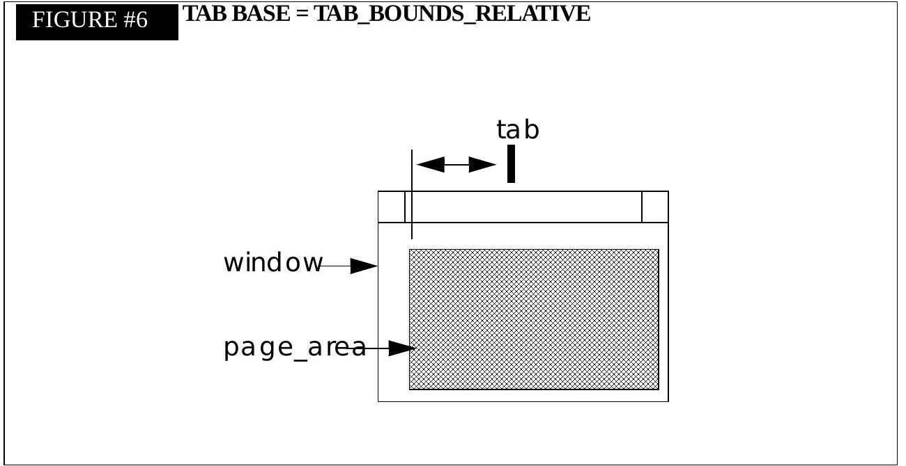
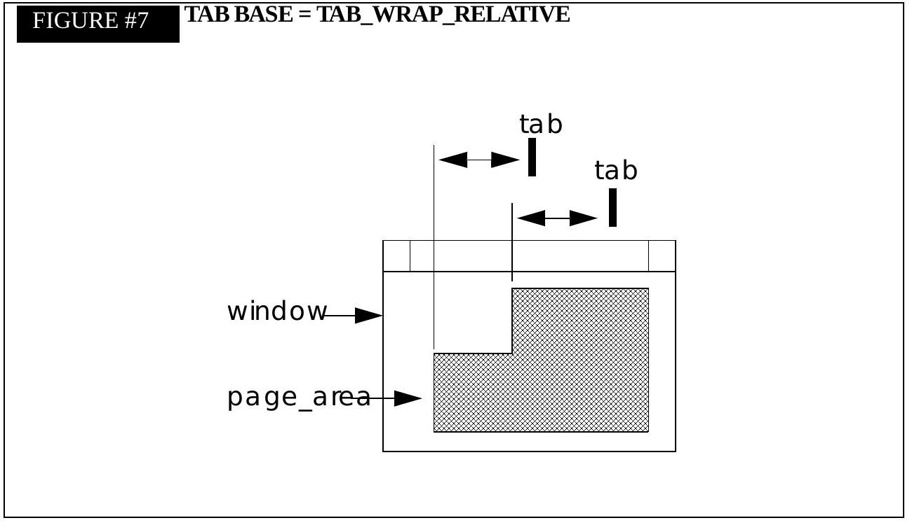
9.4 Indentation Support
Set Indents
One of the elements of a paragraph format is a set of paragraph indentations (left, right, and first-line indents). Although you could set these using pgSetParInfo, some additional functions have been provided exclusively for indents to help save on coding:
The function above changes the indentations for the text range specified.
The selection parameter operates in the same way it does for pgGetParInfo. For information about selection ranges, see section 8.2, Selection Range, and for information about pgSetStyleInfo and pgSetParInfo, see "Changing Styles" ).
draw_mode can be the values as described in Draw Modes under section 2.11:
typedef enum
{
draw_none, // Do not draw at all
best_way, // Use most efficient method(s)
direct_copy, // Directly to screen, overwrite
direct_or, // Directly to screen, "OR"
direct_xor, // Directly to screen, "XOR"
bits_copy, // Copy offscreen
bits_or, // Copy offscreen in "OR" mode
bits_xor, // Copy offscreen in "XOR" mode
bits_emulate_copy // Copy "fake" offscreen
bits_emulate_or // "Fake" offscreen in "OR" mode
bits_emulate_xor // "Fake" offscreen in "XOR" mode
};
The indents and mask parameter must point to the following structure (neither pointer can be null):
typedef struct
{
long left_indent; // Left margin (indent)
long right_indent; // Right margin (indent)
long first_indent; // First-line indent
}
pg_indents, PG_FAR *pg_indents_ptr;
The mask parameter should contain nonzero fields for every indent you wish to change in indents.
NOTE: "nonzero" means that you should fill the field with -1 (so all bits are set to ones).
Indentations are pixel positions relative to a text line's maximum left and maximum right, as follows: the left_indent is the distance from the leftmost edge of a line (which will be the page_area's left edge for that line); the right indent is the distance from the rightmost edge (which will be the page_area's right edge). Note that this is a positive number, not a negative inset. The first_line_indent is relative to the left_indent. Note that only the first_line_indent should ever be negative (in which case the first line of the paragraph hangs to the left of the left indent).
When indents are changed, they apply to whole paragraphs.
Get Indents
To obtain the current indent settings of a selection range, call the following:
(void) pgGetIndents (pg_ref pg, select_pair_ptr selection, pg_indents_ptr indents, pg_indents_ptr_mask, long PG_FAR *left_screen_offset, long PG_FAR *right_screen_offset);
The selection parameter operates in the same way it does for pgGetParInfo (see “Obtaining Current Text Format(s)" for information about pgGetStyleInfo and pgGetParInfo).
The indents and mask parameters should point to a pg_indents record (described above); neither parameter can be a null pointer.
FUNCTION RESULT: When this function returns, indents will be set to the indentation values found in the selection range, and mask will have every field that is consistent (the same) throughout the range to nonzero.
If left_screen_offset and right_screen_offset are non-null, pgGetIndents will set the variables to which they point to the relative left position and right position, respectively, against which the indents are measured. The usual reason you will need to have this information is to draw a "ruler" showing indents, in which case you will need to know the relative edges to draw each indentation. This is particularly important if your page_area is non-rectangular (because the relative edges can change from line to line).
NOTE
The left_screen_offset and right_screen_offset values will include the scrolled position of the HERMES Paige object, if any (see chapter 11, All About Scrolling).
10 All About Selection
An HERMES Paige object's text can be selected either by the user or directly by your application.
10.1 Up and Running with Selections
Selection by the user is accomplished with pgDragSelect; this has already been covered in detail (see section 2.13 Blinking Carets and Mouse Selections with regards to pgDragSelect).
Additional support functions are provided, however, to set selections directly and/or to obtain both simple selections (insertion points or a selection pair of offsets) as well as complex selections (discontinuous selections).
10.2 Simple Selections
A simple selection is either a single insertion point or a pair of text offsets which implies a single range. This includes vertical selections that contain only two points (top-left and bottom-right text positions). To set a simple selection, call the following:
(void) pgSetSelection (pg_ref pg, long begin_sel, long end_sel, short modifiers, pg_boolean show_hilite);
The selection range in pg will be set to begin_sel to end_sel, which are byte offsets; the lowest offset is zero and the highest offset is pgTextSize(pg). If begin_sel is the same as end_sel, a single insertion is implied.
The modifiers parameter is identical to the modifiers passed to pgDragSelect (for a list of bits you can pass for modifiers, see section 2.15, Blinking Carets and Mouse Selections). This parameter controls how the text is selected, i.e., extended selection, vertical selection, word selection, etc.
If should_draw is TRUE, a new highlight region is computed and drawn. If should_draw is FALSE, nothing on the screen changes (but pg will internally change its selection).
NOTE: If you want to select all text, pass an arbitrary-but-huge number for end_sel. HERMES Paige will adjust large numbers to be equal to the current text size.
To obtain the current selection (assuming it is a simple selection), call the following:
(void) pgGetSelection (pg_ref pg, long PG_FAR *begin_sel, long PG_FAR *end_sel);
The current selection range is returned in *begin_sel and *end_sel. Either parameter can be a null pointer if you don't want the result.
If the selection range is discontinuous, you will receive the first selection pair.
NOTE:pgSetSelection will not affect the style of text. It merely highlights the text and gets the internal range within HERMES Paige so that other functions can operate thereon.
10.3 Discontinuous Selections
A discontinuous selection can be accomplished with pgDragSelect and setting the appropriate bit in the modifiers parameter (in which case, every new verb of mouse_down will start a new selection pair). You can also accomplish this from your app with multiple pgSetSelection calls and the appropriate bit set in modifiers.
To set a discontinuous selection from your app all at once, however, you can use the following:
(void) pgSetSelectionList (pg_ref pg, memory_ref select_list, long extra_offset, pg_boolean show_hilight);
The select_list parameter must be a memory allocation containing one or more select_pair records (for information about select_pair, see section 8.2, Selection Range).
The offset_extra parameter is an amount to add to each selection pair within select_list; if you want to apply the select_list as-is, pass zero for extra_offset.
If should_draw is TRUE, the new selection is drawn.
FUNCTION RESULT: This function returns a newly created memory allocation containing one or more select_pair records which represent the entire selection in pg.
If for_paragraph is TRUE, the selection pairs will be paragraph-aligned; otherwise, they will be character-aligned (if you want to know what paragraphs fall in the selection range(s), the distinction must be made).
CAUTION: If there is no selection range, e.g. only a caret, and for_paragraph is FALSE, this function will return MEM_NULL (zero).
You will know how many select_pair records are contained in the function result by calling GetMemorySize() on the function result—see chapter 25, The Allocation Manager.
NOTE: It is your responsibility to dispose the memory allocation returned from this function.
10.4 Additional Selection Support
Extending the selection
(void) pgExtendSelection (pg_ref pg, long amount_ext, short modifiers, pg_boolean show_hilite);
FUNCTION RESULT: The above function extends the current selection by amount_ext; the new extension follows the attributes in modifiers if appropriate (for example, the selection could be extended by whole words or paragraphs).
Negative values in amount_ext extend to the left (extend the beginning selection backwards); positive numbers extend to the right (extend the ending selection forwards).
The modifiers can generally be a combination of:
#define EXTEND_MOD_BIT 0x0001 // Extend the selection
#define WORD_MOD_BIT 0x0002 // Select whole words only
#define PAR_MOD_BIT 0x0004 // Select whole paragraphs only
#define LINE_MOD_BIT 0x0008 // Select whole lines only
#define DIS_MOD_BIT 0x0020 // Enable discontiguous selection
#define STYLE_MOD_BIT 0x0040 // Select whole style range
#define WORD_CTL_MOD_BIT 0x0080 // Select "words" delimited by control chars
#define NO_HALF_CHARS_BIT 0x0100 // Click does not go left/right on half-chars
These are explained in Modifiers under section 2.15. Vertical selection cannot be extended using the modifiers. Using that modifier in combination with the others will cause unpredictable results.
If show_hilite is TRUE, the new highlight is drawn; if FALSE, the appearance does not change.
NOTE: If the current selection is discontinuous, only the last (ending) selection pair is affected by this function.
Handling mouse & key combinations for selection (Mac)
NOTE: This code does not handle shift-clicks and option-clicks in the same way as the demo. The point of this code is that you can change the key combinations for your own uses. Consult the demo for other ways of handling this.
#include "Paige.h"
#define LEFT_ARROW 0x1C
#define RIGHT_ARROW 0x1D
#define UP_ARROW 0x1E
#define DOWN_ARROW 0x1F
#define BACKSPACE_CHAR 0x08
#define RETURN_CHAR 0x0D
#define ENTER_CHAR 0x03
#define TAB_CHAR 0x09
#define LF_CHAR 0x0A
#define HOME_KEY 0x01
#define END_KEY 0x04
static int scroll_to_cursor(pg_ref my_pg);
static int key_doc_proc(EventRecord *event);
static int is_an_arrow(char key);
extern pg_globals paige_rsrv;
extern undo_ref last_undol
// This is the keydown proc
static int key_doc_proc(pg_ref my_pg, EventRecord *event)
{
char the_key;
short modifiers;
pg_ref my_pg;
the_key = event -> message & charCodeMask;
}
Next we parse the event record. We have the record before going into pgInsert and can change the keys around or do other things before we send the key into the pg_ref. In this case, we intercept the HOME_KEY and the END_KEY and scroll the pg_ref to the top and bottom:
Then we check to see if they are characters that HERMES Paige would normally handle and if so, we insert them into the pg_ref. When pgInsert contains the key_insert_mode or key_buffer_mode in the insert_mode parameter, it responds as we would expect when arrow keys are entered, i.e., by moving the insertion point, by handling backspace, by deleting previous characters, etc.
We don't need to use pgExtendSelection.
HERMES Paige automatically handles extending the selection by holding down the shift key while using arrow keys if the EXTEND_MOD_BIT is set during pgInsert. key_buffer_mode will keep calling the events as long as HERMES Paige is receiving keystrokes, making keyboard text insertion very fast. HERMES Paige won't cycle through the event loop until the keystrokes are paused.
// Here are the modifiers changing the selection
modifiers = 0;
if (event -> modifiers & shiftKey)
modifiers |= EXTEND_MOD_BIT;
if (event -> modifiers & optionKey)
modifiers |= WORD_MOD_BIT;
if (the_key == ENTER_CHAR)
{
event -> message = LF_CHAR;
the_key = LF_CHAR;
}
if (the_key >= ' ' || the_key < 0 || the_key == TAB_CHAR || the_key == RETURN_CHAR || the_key == LF_CHAR || the_key == BACKSPACE_CHAR || is_an_arrow(the_key))
{
short verb_for_undo;
DisposeUndo(my_pg, last_undo);
if (the_char == paige_rsrv.bs_char)
verb_for_undo = undo_backspace;
else
verb_for_undo = undo_typing;
last_undo = pgPrepareUndo(my_pg, verb_for_undo, (void PG_FAR*) last_undo);
pgInsert(my_pg, (pg_char_ptr &the_key, sizeof(pg_char), CURRENT_POSITION, key_insert_mode, 0, best_way);
if (the_key == BACKSPACE_CHAR)
pgAdjustScrollMax(my_pg, best_way);
scroll_to_cursor(my_pg);
}
return FALSE; // to be returned
Number of selections
(pg_short_t) pgNumSelections (pg_ref pg);
This returns the number of selection pairs in pg. A result of zero implies a single insertion point; a result of one implies a simple selection, and likewise for higher numbers.
Caret & Cursor
(pg_boolean) pgCaretPosition (pg_ref pg, long offset, rectangle_ptr caret_rect);
FUNCTION RESULT: This returns a rectangle in caret_rect representing the "caret" corresponding to offset. If offset equals CURRENT_POSITION (value of 1), the current insertion point is used. If the current selection in pg is in fact a single insertion, the function returns TRUE; if it is not, caret_rect gets set to the top-left edge of the selection and the function returns FALSE.
NOTE: If you specify some other position besides CURRENT_POSITION, this implies a single insertion point; thus, the function will always return TRUE.
(void) pgSetCursorState (pg_ref pg, short cursor_state); (short) pgGetCursorState (pg_ref pg);
These two functions let you set the cursor (caret) to a specified state or obtain what state the caret is in.
typedef enum
{
dont_draw_cursor, // Do nothing
toggle_cursor, // Toggle cursor based on timer
show_cursor, // Show cursor
hide_cursor, // Hide cursor
deactivate_cursor, // Cursor is no longer active
update_cursor, // Redraw cursor per current state
restore_cursor, // Turn cursor back on (chiefly Windows usage)
}
NOTE: Except for very unusual applications, you should generally only use this function with force_cursor_off and force_cursor_on.
To obtain the current cursor state, call pgGetCursorState, which will return either TRUE (cursor is currently ON) or FALSE (cursor is currently OFF).
NOTE:The function result (TRUE or FALSE) of pgGetCursorState has differing usages in HERMES Paige for Windows and for Macintosh. For Windows, the result implies whether or not the System caret is actively blinking within the pg_ref. For Macintosh, the result implies whether or not the caret is visible at that instant while it is toggling during pgIdle().
The high byte of position_verb can modify the meaning of the values shown above; the high byte should either be equal to zero or to EXTEND_CARET_FLAG.
The following is a description for each value in position_verb:
home_caret — If EXTEND_CARET_FLAG is set, the text is selected from the beginning of the document to the current position; if EXTEND_CARET_FLAG is clear, the caret moves to the beginning of the document.
doc_bottom_caret — If EXTEND_CARET_FLAG is set, the text is selected from the current position to the end of the document; if EXTEND_CARET_FLAG is clear the caret advances to the end of the document.
begin_line_caret — If EXTEND_CARET_FLAG is set, the text is selected from the current position to the beginning of the current line; if EXTEND_CARET_FLAG is clear the caret moves to the beginning of the line.
end_line_caret — If EXTEND_CARET_FLAG is set, the text is selected from the current position to the end of the current line; if EXTEND_CARET_FLAG is clear the caret moves to the end of the line.
next_word_caret — If EXTEND_CARET_FLAG is set, the text is selected from the current position to the beginning of the next word; if EXTEND_CARET_FLAG is clear the caret moves to the beginning of the next word.
previous_word_caret — If EXTEND_CARET_FLAG is set, the text is selected from the current position to the beginning of the previous word; if EXTEND_CARET_FLAG is clear the caret moves to the beginning of the previous word.
If show_caret is TRUE then the caret is redrawn in its new location; otherwise, the caret does not visibly change.
10.5 Selection shape
It is possible to create a selection by specifying a shape. This next function returns a list of select_pairs when given a shape.
FUNCTION RESULT: This function will place a list of selection pairs in selections that contain all the text that intersects the_shape. What gets put into selections is an array of select_pair records, similar to what is returned from pgGetSelectionList.
The memory_ref passed to selections must be a valid memory allocation (which you must create).
It is also possible to determine the selection shape.
This function sets the selection range(s) in pg to all characters that intersect the specified shape.
For example, if the select_shape was one large rectangle expanding across the entire document, then every character would be selected; if the shape were smaller than the document, then only the characters that fit within that shape—whether wholly or partially—would be selected.
If show_hilite is TRUE, the new selection region is drawn.
For information about shapes and individual characters and insertion point, see "Text and Selection Positions". For information about highlighting see section 2.17, Activate/Deäctivate.
Activate/Deactivate with shape of selection still showing
Macintosh
This function can be used to draw the selection area around text when it is deactivated.
void Do_Activate(Boolean Do_An_Activate)
{
pg_ref my_pg;
if (!(my_pg = Get_pgref_from_window(WPtr_Untitled1))) return;
if(Do_An_Activate // Handle the activate
{
// Update the scrollbar values
// -----------------------------
// Turn on the selection hilites
pgSetHiliteStates(my_pg, activate_verb, no_change_verb, TRUE);
}
else // Handle the deactivate
{
// Turn off the scroll bars here
// -----------------------------
// Turn off the selection hilites
pgSetHiliteStates(my_pg, deactivate_verb, no_change_verb, TRUE);
outline_hilite(my_pg);
/* do this if you want to draw an outline around the selected text if the window is deactivated, as in MPW or the HERMES Paige demo */
} // End IF
}
/* If you want the feature of drawing the line around the selected text when the window is deactivated, you can use this snippet from the HERMES Paige demo */
#include "pgTraps.h" // This draws xor-hilight outline
static void outline_hilite(pg_ref the_pg)
{
shape_ref outline_shape;
outline_shape = pgRectToShape(&paige_rsrv, NULL);
if (pgGetHiliteRgn(the_pg, NULL, NULL, outline_shape))
{
pg_scale_factor scale_factor;
RgnHandle rgn;
rectangle vis_r;
Rect clip;
PushPort(WPtr_Untitled1);
PushClip();
pgAreaBounds(the_pg, NULL, &vis_r);
RectangleToRect(&vis_r, NULL, &clip);
ClipRect(&clip);
rgn = NewRgn();
pgGetScaling(the_pg, &scale_factor);
ShapeToRgn(outline_shape, 0, 0, &scale_factor, rgn);
PenNormal();
PenMode(patXor);
SET_HILITE_MODE(50);
FrameRgn(rgn);
DisposeRgn(rgn);
PopClip();
PopPort()
}
pgDisposeShape(outline_shape);
}
11 All about scrolling
Scrolling an HERMES Paige object is handled differently than previous DataPak technology, with a wider feature set.
11.1 The ways to scroll
An HERMES Paige object can be scrolled in one of four ways: by unit, by page, by absolute position, or by a pixel value.
Scrolling by unit generally means to scroll one text line increment for vertical scrolling, and some predetermined distance for horizontal scrolling.
Scrolling by page means to scroll one visual area's worth of distance (clicking the "grey" areas of the scroll bar).
Scrolling by absolute position means the document scrolls to some specified location (such as the result of dragging a "thumb").
Scrolling by pixel means to move the position up or down by an absolute pixel amount; generally, this method is used if for some reason all of the above methods are unsuitable to your application.
For scrolling by a unit, page or absolute value, when an HERMES Paige object is scrolled vertically, an attempt is always made to align the results to a line boundary (so a partial line does not display across the top or bottom).
11.2 How HERMES Paige Actually Scrolls
In reality, neither the text nor the page rectangle within an HERMES Paige object ever "moves". Whatever coördinates you have set for an HERMES Paige object's page_area (shape in which text will flow) remains constant and do not change; the same is true for the vis_area and exclude_area.
The way an HERMES Paige object changes its "scrolled" position, however, is by offsetting the display and/or the relative position of a "mouse click" when you call pgDragSelect or any other function that translates a coördinate point to a text location. The scrolled position is a single vertical and horizontal value maintained within the pg_ref; these values are added to the top-left coördinates for text display at drawing time, and they are added to the mouse coördinate when click/dragging.
This could be important information if your application needs to implement some other method for scrolling, because all you would need to do is leave HERMES Paige alone (do not call its scrolling functions) and offset the display yourself (pgDisplay will accept a horizontal and vertical value to temporarily offset the display). Realise that nothing every really moves; lines are always in the same vertical and horizontal position unless your app explicitly changes them.
NOTE: Class library users — when implementing an HERMES Paige-based document, you are generally better off letting HERMES Paige handle it own scrolling. If at all possible, do not implement scrollView classes that attempt to scroll by changing the window origin.
11.3 The scroll
pgScroll
void pgScroll (pg_ref pg, short h_verb, short v_verb, short draw_mode);
Scrolls the HERMES Paige object by a single unit, or by a page unit. A unit and page unit is described in section 11.5, Scroll Values. In short, pgScroll scrolls a specified h_verb and v_verb distance.
The values to pass in h_verb and v_verb can each be one of the following:
typedef enum
{
scroll_none, // Do not scroll
scroll_unit, // Scroll one unit
scroll_page, // Scroll one page unit
scroll_home, // Scroll to top of document
scroll_end // Scroll to end of document
}
scroll_verb
Because HERMES Paige will scroll the text some number of pixels, a certain amount of "white space" will result on the top or bottom for vertical scrolling, or on the left or right for horizontal scrolling. Hence, the draw_mode indicates the drawing mode HERMES Paige should use when it refreshes the "white space" areas; normally, the value given for draw_mode should be best_way.
On the other hand, while a value of draw_none will disable all drawing and visual scrolling completely, the text contents will still be "moved" by the specified amounts. In other words, were the HERMES Paige document to be scrolled one page down (using pgScroll) but with draw_none given for draw_mode, nothing would change on the screen until the application redisplayed the HERMES Paige text contents. In this case, the refreshed screen would appear to be scrolled one page down. The "draw nothing" feature for scrolling is therefore used only for special cases, in which an application wants to "move" the visual contents up or down without yet drawing anything.
draw_mode can be the values as described in Draw Modes under section 2.11:
draw_none, // Do not draw at all
best_way, // Use most efficient method(s)
direct_copy, // Directly to screen, overwrite
direct_or, // Directly to screen, "OR"
direct_xor, // Directly to screen, "XOR"
bits_copy, // Copy offscreen
bits_or, // Copy offscreen in "OR" mode
bits_xor // Copy offscreen in "XOR" mode
Responding to WM_HSCROLL and WM_VSCROLL events (Windows)
case WM_HSCROLL:
{
switch(wParam)
{
case SB_PAGEDOWN:
pgScroll(pg, -scroll_page, scroll_none, best_way);
break;
case SB_LINEDOWN:
pgScroll(pg, -scroll_unit, scroll_none, best_way);
break;
case SB_PAGEUP:
pgScroll(pg, scroll_page, scroll_none, best_way);
break;
case SB_LINEUP:
pgScroll(pg, scroll_unit, scroll_none, best_way);
break;
case SB_THUMBPOSITION:
{
short cur_h, cur_v, max_h, max_v;
pg getScrollValues(pg, &cur_h, &cur_v, &max_h, &max_v);
pgSetScrollValues(pg, LOWORD(lParam), cur_v, TRUE, best_way);
break;
}
}
UpdateScrollbars(pg, hWnd);
}
case WM_VSCROLL:
if (pg)
{
switch (wParam)
{
case SB_PAGEDOWN:
pgScroll(pg, scroll_none, scroll_page, best_way);
break;
case SB_LINEDOWN:
pgScroll(pg, scroll_none, scroll_unit, best_way);
break;
case SB_PAGEUP:
pgScroll(pg, scroll_none, scroll_page, best_way);
break;
case SB_LINEUP:
pgScroll(pg, scroll_none, scroll_unit, best_way);
break;
case SB_TOP:
pgScroll(pg, scroll_none, scroll_home, best_way);
break;
case SB_BOTTOM:
pgScroll(pg, scroll_none, scroll_end, best_way);
break;
case SB_THUMBPOSITION:
case SB_THUMBTRACK:
{
short cur_h, cur_v, max_h, max_v;
pgGetScrollValues(pg. &cur_h, &cur_v, &max_h, &max_v);
pgSetScrollValues(pg, &cur_h, LOWORD(lParam), TRUE, best_way);
break;
}
}
updateScrollbars(pg, hWnd);
}
return 0;
pgScrollToView
(pg_boolean) pgScrollToView (pg_ref pg, long text_offset, short h_extra, short v_extra, short align_line, short draw_mode);
Scrolls an HERMES Paige object so a specific location in its text is visible. Canonically, this function is used to automatically scroll to the "current line," although it could also be used for a number of other purposes (such as find/replace) to show specific text location.
The location in pg's text is given in text_offset; pg will scroll the required distance so the character at text_offset is at least h_extra pixels from the left or right edge of the view area and v_extra pixels from the top or bottom edge. Whether the distance is measured from the top or bottom, or left or right depends in the value of h_pixels and v_pixels; if h_extra is positive, the character must scroll at least pg pixels from the left, otherwise the right edge is used. For v_extra, a positive number uses the top edge and a negative number uses the bottom edge.
The text_offset parameter can be CURRENT_POSITION (value of -1), in which case the current insertion point is used to compute the required scrolling, if any.
FUNCTION RESULT: The function returns "TRUE" if scrolling occurred.
The draw_mode indicates how the text should be updated. The value given is identical to the display_modes described for pgDisplay; it should be noted that a value of zero will cause the text not to update at all, which technically could be used to simply "offset" the HERMES Paige object contents without doing a physical scroll at all.
Scroll to cursor position (Windows)
// ScrollToCursor forces a scroll to the current insertion point (if any)
void ScrollToCursor(pg_ref, pg, HWND hWnd)
{
short state1, state2;
pg GetHiliteStates(pg, &state1, &state2;
if (state1 == deactivate_verb || state2 == deactivate_verb)
return;
if (!pgNumSelections(pg))
{
pgPaginateNow(pg. CURRENT_POSITION, FALSE);
if (pgScrollToView(pg, CURRENT_POSITION, 32, 32, TRUE, best_way))
UpdateScrollbars(pg, hWnd);
}
else
UpdateScrollbars(pg, hWnd);
}
Scroll to cursor position (Macintosh)
// ScrollToCursor is called to "autoscroll" to the insertion point
short ScrollToCursor(doc_rec *doc)
{
short old_h_value;
if(!pgNumSelections(doc -> pg))
{
old_h_value = GetCtlValue(doc -> h_ctl);
if (pgScrollToView(doc -> pg, CURRENT_POSITION, 32, TRUE, best_way))
{
UpdateScrollbarValues(doc);
update_ruler(doc, old_h_value);
return TRUE;
}
UpdateScrollbarValues(doc);
return FALSE;
}
TECH NOTE: Can't scroll past end of text
I've noticed that I cannot scroll vertically past the end of the text in the window. So if the HERMES Paige document is empty, it is not possible to scroll vertically at all. I need to be able to scroll vertically until the bottom part of the 640x480 workspace is visible, even if the user has not yet typed any text. How do I do that?
You need to force your pg_ref to be fixed height, not "variable". When you do pgNew, the default document mode is "variable", meaning that the bottom of the last text line is considered the document's bottom.
A "fixed" height document is one whose page shape itself (not the text) determines the document's bottom. From your description of the app, I think this is what you want.
To do so, you need to set BOTTOM_FIXED_BIT and MAX SCROLL_ON_SHAPE in the pg_doc_info's attributes field. You do this right after pgNew, like this:
This will tell HERMES Paige to scroll to the bottom of your page area regardless of how much (or how little) text there is.
Of course doing this you must now make sure your page shape is exactly whatt you want, e.g. 640x480 (which you said it is).
This "bonus" on this is that you will never have to worry about scrolling; i.e. you won't need to constantly adjust the scrollbar max values once they are set up because HERMES Paige will only look at the page area's bottom. EXCEPTION: when you resize window you'll need to adjust (see answer below).
TECH NOTE: Smaller window/bad rectangle
If I resize my window to be "small", scroll to the far right and far bottom edges of the workspace, then resize the window to be "large", I am left with the bottom right corner of the workspace in the upper left corner of the screen. What I need to be able to do is to have HERMES Paige adjust the scrolled position so that the bottom right corner of the workspace is in the bottom right corner of the screen. How do I do that?
There is actually an HERMES Paige function for this exact situation:
PG_PASCAL (pg_boolean) pgAdjustScrollMax (pg_ref pg, short draw_mode);
What this does is the following:
Checks current scrolled position, and:—
If you are now scrolled too far by virtue of having resized the window, HERMES Paige will scroll the doc to "adjust."
Hence, you don't wind up with the situation you described. The function result is TRUE if it had to adjust (had to scroll).
However, I haven't tried this yet on a "fixed height" doc (per my suggestion above), but I can't think of why it shouldn't work.
Where this function should fit in the scheme of things is:
After resize, resize the pg_ref (pgGrowVisArea or whatever you do), then:—
Call pgAdjustScrollMax.
If there's nothing to "fix" in the scrolling, HERMES Paige won't do anything.
TECH NOTE: Vertical scrolling behaves strangely
In the demo & in my application as well since I extracted scrolling code from the demo, vertical scrolling behaves strangely. As the text approaches the bottom of the window the current position indicator moves up rather than down. When the current input position reaches the bottom of the visible portion of the window and the window automatically scrolls up to create extra visible space below the input position, the current position indicator on the scrollbar moves down. I would expect it to move up to reflect the fact that the current position is no longer at the bottom of the window.
I'm not sure how else this could ever work, at least in relation to how the demo sets up the document.
First, the reason the indicator moves "up" as you approach the bottom is that HERMES Paige is adding a whole new, blank page. So let's say you start with one page and approach the bottom and the indicator shows $90 \%$ of the document has scrolled down. Suddenly HERMES Paige appends a new page, so now the doc has 2 pages. In this case the scrolled position is no longer 90%, but rather 50%, so naturally the indicator has to move UP.
Following the 90-to-50% indicator change, if the document then auto-scrolls down by virtue of typing, then of course the indicator moves DOWN. This sequence is exactly as you described, which is "correct" in every respect due to the way the document has been created by the demo.
If this is too disconcerting you can work around it in a couple of ways. The first way is not to implement "repeater shapes" the way the demo is doing it, but instead just make one long document. You do this by not setting the V_REPEAT_BIT in pg_doc_info. The end result will be less noticeable with the scrōll indicator (might move a tiny bit but won't jump so far) because HERMES Paige will just add a small amount of blank space instead of a whole page.
If you still want "repeater" shapes to get the page-by-page effect as in the demo, then the only workaround is to display something to the user that shows why the indicator has moved so much. For example, you could display "Page 1 of 1" and "Page 1 of 2" etc. So, when HERMES Paige inserts a new blank page, it might be obvious to user why the indicator jumps if "Page 1 of 1" changes to "Page 1 of 2".
TECH NOTE: Scrolling doesn't include picture at bottom of document
I have implement pictures anchored to the document (where text wraps around them). However, if I have a picture below the last line of text, I can't ever scroll the document down to that location. How do I fix this?
I looked over your situation with HERMES Paige exclusion areas (pictures). HERMES Paige actually does support what you need.
In Paige.h you will notice the following definition near the top of the file:
#define EX_DIMENSION_BIT Ox00000100 /* Exclude area is included as width/height */
When you call pgNew, giving EX_DIMENSION_BIT as one of the attribute flags tells HERMES Paige to include the exclusion area as part of the "document height"—which I believe is exactly what you want.
The reason for this attribute—and the reason HERMES Paige does not automatically include an embedded objects anchored to the page—is because it cannot make that assumption, but in many cases (such as your own), setting EX_DIMENSION_BIT tells HERMES Paige to go ahead and assume that.
TECH NOTE: How do I make HERMES Paige scroll to the right when using word wrap
I am building a line editor, which expands to the right, very much like a C source code editor. But my right margin is the right side of the text. How do I get it to scroll correctly?
I think the reason you're having a problem is that HERMES Paige can only go by what is set in the document bounds (the "page area") to determine what the width of the document is.
Hence, the answer lies somewhere in forcing the pg_ref's page area to expand as text expands to the right. At thât time HERMES Paige will adjust its maximum scroll values, its clipping area, etc.—assuming you set the page area using the high-level functions in Paige.h.
The real trick is to figure out how wide the text area is. I'll create some examples of how you determine the current width of a no-wrap document. See section 24.12, Getting the Maximum Text Bounds.
11.4 Scroll Parameters
Set Scroll Params
(void) pgSetScrollParams (pg_ref pg, short unit_h, short unit_v, short append_h, short append_v);
Sets the scroll parameters for pg as follows: unit_h and unit_v define the distance each scrolling unit shall be. This means if you ask HERMES Paige to scroll pg by one unit, horizontal scrolling will advance unit_h pixels and vertical scroll will advance unit_v pixels.
However, unit_v can be set to zero, in which case "variable" units apply. What occurs in this case (i.e., with unit_v equal to zero) is a scrolling distance of whatever is applicable for a single line.
For example, if the line immediately below the bottom of the visual area is 18 pixels, a scrolling down of one unit will move 18 pixels; if the next line is 12 pixels, the next down scrolling would be 12 pixels, and so on.
append_h and append_v define extra "white" space to allow for horizontal maximum and vertical maximum, respectively.
For example, suppose you create an HERMES Paige document whose total "height" is 400 pixels. Normally, the scrolling functions in HERMES Paige would not let you scroll beyond that point. The append_v value, however, is the amount of extra distance you will allow for scrolling vertically: if the append_v were 100, then a 400-pixel document would be allowed to scroll 500 pixels.
If you create a new pgRef and do not call pgSetScrollParams, the defaults are as follows: unit_h = 32, unit_v = 0, append_h = 0, append_v = 32.
(void) pgGetScrollParams (pg_ref pg, short PG_FAR *unit_h, short PG_FAR *unit_v, short PG_FAR *append_h, short PG_FAR *append_v);
Returns the scroll parameters for pg. These are described above for pgSetScrollParams..
11.5 Scroll Values
Getting scroll indicator values
(short) pgGetScrollValues (pg_ref pg, short PG_FAR *h, short PG_FAR *v, short PG_FAR *max_h, short PG_FAR *max_v);
This is the function you call to get the exact settings for scroll indicators.
On the Macintosh, for example, you would call pgGetScrollValues and set the vertical scrollbar's value to the value given in *v and its maximum to the value in *max_v. The same settings apply to the horizontal scrollbar for *h and *max_h.
Note that the values are shorts. HERMES Paige assumes your controls can only handle ±32 K; hence, it computes the correct values even for huge documents that are way larger than a scroll indicator could handle.
FUNCTION RESULT: The function returns "TRUE" if the values have changed since the last time you called pgGetScrollValues. The purpose of this Boolean result is to not slow down your app by excessively setting scrollbars when they have not changed.
NOTE: The values returned from pgGetScrollValues are guaranteed to be within the ± range of an integer value. That means if the document is too large to report a scroll position within the confines of 32K, HERMES Paige will adjust the ratio between the scroll value and the suggested maximum to accommodate this limitation to most controls.
CAUTION:pgGetScrollValues can return "wrong" values if a major text change has occurred (such as a large insertion, or deletion, or massive style and font changes) but no text has been redrawn.
The reason scroll values will be inaccurate in these cases is because HERMES Paige has not yet recalculated the new positions of text lines - pwhich normally occurs dynamically as it displays text - bso it has no idea that the document's text dimensions have changed.
To avoid this situation, the following rules should be observed:
A common scenario that creates the "wrong" scroll value is importing a large text file (without drawing yet, for speed purposes), then attempting to get the scrollbar maximum to set up the initial scrollbar parameters, all before the window is refreshed. To avoid this situation, it is generally wise to force-paginate the document following a massive insertion if you do not intend to display its text prior to getting the scroll values.
Always call pgGetScrollValuesafter the screen has been updated following a major text change, and never before. Normally, this is not a problem because most of the text-altering functions accept a draw_mode parameter which, if ≠ 0, tells HERMES Paige to update the text display. There are special cases, however, when an application has reasons to implement large text changes yet passes draw_none for each of these; if that be the case, the screen should be updated at least once prior to pgGetScrollbarValues, OR the document should be repaginated using pgPaginateNow.
Logical Steps
The following pseudo instructions provide an example for any HERMES Paige platform when determining the values that should be set for both horizontal and vertical scrollbars:
if (I just made a major text change and did not draw)
pgPaginateNow(pg, CURRENT_POSITION, FALSE);
if (pgGetScrollValues(pg, &h, &v, &max_h, &max_v)) returns "TRUE" then
I should change my scrollbar values as:
Set horizontal scrollbar maximum to max_h
Set horizontal scrollbar value to h
Set vertical scrollbar maximum to max_v
Set vertical scrollbar value to v
else
Do nothing.
Update scrollbar values (Windows)
void UpdateScrollbars (pg_ref pg, HWND hWnd)
{
short max_h, max_v;
short h_value, v_value;
if (pgGetScrollValues(pg (short far *) &h_value, short far, (short far *) &max_h, short far *) &max_v));
{
if max_v < 1)
max_v = 1; // For Windows I don't want scrollbar disappearing
SetScrollRange (hWnd, SB_VERT, 0, max_v, FALSE);
SetScrollRange (hWnd, SB_HORZ, 0, max_h, FALSE);
SetScrollPos (hWnd, SB_VERT, v_value, TRUE);
SetScrollPos (hWnd, SB_HORZ, h_value, TRUE);
In my application I need to scroll to certain characters or styles in the document. I noticed, however, that the visual location of these special characters are often "wrong", so when I attempt to scroll to these places I do not wind up at the correct place.
Regarding the scrolling issues, you've touched upon a classic problem that I have been handling with support for years and years. "To Paginate or Not To Paginate, that is the question", pace Shakespeare.
When dealing with potentially large word-wrapping text, the editor must avoid repaginating the whole document at all costs; otherwise, performance is major dog-slow.
Most of our users that have graduated from TextEdit (Macintosh) or EDIT controls (Windows) are limited in their document size and never understand this problem, because TextEdit maintains an array of line positions at all times. That's because it doesn't handle a lot of text so it can get away with it. Our text engines, on the other hand, support massive documents, changing point sizes, irregular wrapping and who knows what else. Hence, to learn the exact document height at any given time, HERMES Paige must calculate every single word-wrapping line to come up with a good answer.
To avoid turning into a major dog, HERMES Paige (and its predecessors) elect to repaginate only at the point they display. There are several good reasons for this, the most important one being a typical HERMES Paige-based app applies all kinds of inserts, embedding, style changing and the like before displaying; if HERMES Paige decided to repaginate each time you set a selection or inserted a piece of text or made any changes whatsoever, it would become unbearably slow.
The reason I'm explaining all of this is so you understand WHY your document behaves the way it does with regards to scrolling. Your problem is simply: you have not yet drawn the part of the document that you will scroll to, hence it is unpaginated, hence the "wrong" answer from pgGetScrollvalues. That is also why auto-scroll-to-cursor works a wee bit better, because the auto-scroll forces a redisplay, which forces a paginate, which forces new information about the doc's height which can then return the "right" answer.
Put simply, pgGetScrollValues has insufficient information about the whole doc if a part of the doc is "dirty" and undisplayed. That's why forced paginate fixes the problem. That's also why the "wrong" answer from pgGetScrollValues is intermittent—your doc won't always be "dirty" every time you call the function, and also sometimes HERMES Paige's best-guess in this case is correct anyway.
So yes, pgPaginateNow (see section 24.3, Paginate Now) is the best approach; I would call it every time before getting the scrollbar info. The problem with your current logic—paginating afterpgGetScrollValues—is that the document hasn't been computed yet for pgGetScrollValues, so it might return FALSE, thinking that the document is unchanged. Remember, pgPaginateNow isn't that bad since it won't do anything unless the document really needs it.
But, you should pass CURRENT_POSITION for the paginate_to parameter— that will help performance a bit.
Setting scroll values
(void) pgSetScrollValues (pg_ref pg, short h, short v, short align_line, short draw_mode);
This function is the reverse of pgGetScrollValues. It provides a way to do absolute position scrolling, if necessary.
For example, you would use pgSetScrollValues after the "thumb" is moved to a new location. As in pgGetScrollValues, the values are shorts, but HERMES Paige computes the necessary distance to scroll. (Because of possible rounding errors, however, after you have called pgSetScrollValues you should immediately change the scroll indicator settings with the values from a freah call to pgGetScrollValues.
Handling scrolling with mouse (Macintosh)
/* ClickScrollBars gets called in response to a mouseDown event. If mouse is not within a control, this function returns FALSE and does nothing. Otherwise, scrolling is handled and TRUE is returned. */
int ClickScrollBars (doc_rec *doc, EventRecord *event)
{
Point start_pt;
short part_code;
ControlHandle the_control;
start_pt = event -> where;
GlobalToLocal(&start_pt);
if (part_code = FindControl(start_pt, doc-> w_ptr, &the_control))
{
scrolling_doc = doc;
if (part_code == inThumb)
{
long max_h, max_v;
long scrolled_h, scrolled_v;
long scroll_h, scroll_v;
short v_factor, old_h_position;
if (TrackControl(the_control, start_pt, NULL))
{
old_h_position = GetCtlValue(doc -> h_ctl);
pgSetScrollValues(doc -> pg, GetCtlValue(doc -> h_ctl), GetCtlValue(doc -> v_ctl), TRUE, best_way);
UpdateScrollbarValues(doc);
update_ruler(doc, old_h_position);
}
else
TrackControl(the_control, start_pt, (ProcPtr) scroll_action_proc);
}
return (part_code != 0);
}
Maximum scroll value
Adjustments may be needed after large deletions; if so, call the following function.
This tells HERMES Paige that pg might need some adjustment after a large deletion or text size change.
For example, suppose you had a document in 24-point text, scrolled to the bottom. User changes the text to 12 point, resulting in a scrolled position way too far down! If you call pgAdjustScrollMax, this situation is corrected (by scrolling up the required distance).
If draw_mode ≠ 0, actual physical scrolling takes place (otherwise the scroll position is adjusted internally and no drawing occurs). draw_mode can be the values as described in Draw Modes under section 2.11:
draw_none, // Do not draw at all
best_way, // Use most efficient method(s)
direct_copy, // Directly to screen, overwrite
direct_or, // Directly to screen, "OR"
direct_xor, // Directly to screen, "XOR"
bits_copy, // Copy offscreen
bits_or, // Copy offscreen in "OR" mode
bits_xor // Copy offscreen in "XOR" mode
FUNCTION RESULT: The function returns TRUE if the scroll position changed.
void pgScrollPixels (pg_ref pg, long h, long v, short draw_mode);
FUNCTION RESULT: This function scrolls pg by h and v pixels; scrolling occurs from the current position (i.e., scrolling advances plus or minus from its current position by h or v amount(s).
If draw_mode ≠ 0, actual physical scrolling takes place (otherwise the scroll position is adjusted internally and no drawing occurs).
HERMES Paige will not scroll out of range — the parameters are checked and HERMES Paige will only scroll to the very top or to the maximum bottom as specified by the document's height and the current scroll parameters.
NOTE: You should only use this function if you are not using the other scrolling methods listed above.
FUNCTION RESULT: The above function returns the current (absolute pixel) scroll position. The vertical scroll position is placed in scroll_pos -> v and the horizontal position in scroll_pos -> h.
The positions, however, are always zero or positive: when HERMES Paige offsets the text to its "scrolled" position, it subtracts these values.
Forcing Pixel Alignment
In some applications, it is desirable always to scroll on "even" pixel boundaries, or some multiple other than one.
For example, in a document that displays grey patterns or outlines, it can be necessary to always scroll in a multiple of two pixels, otherwise the patterns can be said to be out of "alignment."
To set such a parameter, call the following:
(void) pgSetScrollAlign (pg_ref pg, short align_h, short align_v);
The pixel alignment is defined in align_h and align_v for horizontal and vertical scrolling, respectively.
For either parameter, the effect is as follows:
if the value is zero, the current alignment value remains unchanged.
if the value is one, scrolling is performed to the nearest single
pixel (i.e., no "alignment" is performed)
if the value is two or more, that alignment is used.
For example, if align_v is two, vertical scrolling would always be in multiples of two pixels; if three, alignment would always be a multiple of three pixels, etc.
NOTES:
The current scrolled position in pg is not changed by this function. You must therefore make sure the scrolled position is correctly aligned or else all subsequent scrolling can be constantly "off" of the desired alignment. It is generally wise to set the alignment once, after pgNew, while the scrolled positions are zero.
The default alignment after pgNew is one.
You do not need to set scroll alignment after a file is opened (with upgraded); scroll alignment is saved with the document.
Getting Alignment
(void) pgGetScrollAlign (pg_ref pg, short PG_FAR *align_h, short PG_FAR *align_v);
This function returns the current scroll alignment. The horizontal alignment is returned in *align_h and vertical alignment in *align_v.
Both align_h and align_v can be NULL pointers, in which case they are ignored.
11.7 Performing Your Own Scrolling
Because certain environments and frameworks support document scrolling in many different ways, a discussion here that explains what actually occurs inside an HERMES Paige object that is said to be "scrolled" might prove helpful.
When HERMES Paige text is "scrolled," a pair of long integers inside the pg_ref is increased or decreased which defines the extra distance, in pixels, that HERMES Paige should draw its text relative to the top-left of the window.
This is a critical point to consider for implementing other methods of scrolling: the contents of an HERMES Paige document never actually "move" by virtue of pgScroll, pgSetScrollParams or pgSetScrollValues. Instead, only two long words within the pg_ref (one for vertical position and one for horizontal position) are changed. When the time comes to display text, HERMES Paige temporarily subtracts these values from the top-left coördinates of each line to determine the target display coördinates; but the coördinates of the text lines themselves (internally to the pg_ref) remain unchanged and are always relative to the top-left of the window's origin regardless of scrolled position.
Similarly, when pgDragSelect is called (to detect which character(s) contain a mouse coördinate), HERMES Paige does the same thing in reverse: it temporarily adds the scroll positions to mouse point to decide which character has been clicked, again no text really changes its position.
Considering this method, the following facts might prove useful when pgScroll needs to be bypassed altogether and/or if your programming framework requires a system of scrolling:
A pg_ref that is "scrolled" is simply a pg_ref whose vertical and horizontal "scroll position" fields are nonzero; at no time does text really "scroll." HERMES Paige temporarily subtracts these scroll positions from the display coördinates of each line when it comes time to draw the text.
The "scroll position" values can be obtained by calling pgScrollPosition.
The "scroll position" can be set directly by doing a UseMemory(pg_ref), changing Paige_rec_ptr -> scroll_position, then UnuseMemory(pg_ref).
The "scroll positions" are always positive, i.e. as the document scrolls from top to bottom or from left to right, the scroll positions increase proportionally by that many pixels.
The simplest way to understand a pg_ref's "scroll position" is to realise that HERMES Paige only cares about the scroll position when it draws text or processes a pgDragSelect().
When pgScroll is called, all that really happens is the screen pixels within the vis_area are scrolled, the scroll positions are changed to new values, then the text is redrawn so the "white space" fills up.
If draw_none is given to pgScroll, all that occurs is the scroll positions are changed (no pixels are scrolled and no text is redrawn).
A call to pgGetScrollValues merely returns the value from the scroll position members (with the values modified as necessary to achieve ≤16-bit integer result and adjusted to match what the application has defined as a "scroll unit").
11.8 Alternate Scrolling
Scrolling a pg_ref "normally", using pgScroll() and similar functions, the top-left coördinates of the document are changed internally. However, rather than changing the window origin itself, HERMES Paige handles this by remembering these scroll values, and offsetting the position of text at the time it draws its text.
Using this default scrolling method, HERMES Paige assumes that the window origin never changes and that the visual region is relatively constant.
This method, however, can be troublesome within frameworks that require a document to scroll in some other way, especially by changing the window origin. Additionally, certain aspects of these frameworks are difficult to disable and are therefore rendered unfriendly to the HERMES Paige environment.
Most applications that require a different method of scrolling feel they are required to bypass HERMES Paige's scrolling system completely. While this may be workable, the app suddenly looses all scrolling features in HERMES Paige. For instance, aligning to the top and bottom of lines can be lost; HERMES Paige's built-in suggestions of where to set scrollbars is lost, etc.
Furthermore, developers that need to bypass HERMES Paige's scrolling suffer a loss in performance. For example, such an application might need to have an exact "document height", and it might thus continuously need to change the HERMES Paige shapes region and vis_area.
The purpose of the features and functions in this section is to provide additional support to scroll many different ways.
External Scrolling Attribute
A flag bit has been defined that can help applications that want to do their own scrolling:
#define EXTERNAL_SCROLL_BIT 0x00000010
If you include this bit in the flags parameter for pgNew(), HERMES Paige will assume that the application's framework will be handling the document's top-left positioning in relation to scrolling.
What this means is if you create the pg_ref with EXTERNAL_SCROLL_BIT, you can continue to use all the regular HERMES Paige scrolling functions without actually changing the relative position of text (i.e., you can control the position of text and the view area yourself while still letting HERMES Paige compute the document's maximum scrolling, its current scroll position and the amount you should scroll to align to lines).
For example, using the default built-in scrolling methods (without EXTERNAL_SCROLL_BIT set), calling pgScroll() will move the display up or down by some specified amount; calling pgGetScrollValues() will return how far the text moved. However, if EXTERNAL_SCROLL_BIT is set, calling pgScroll() will change the scroll position values stored in the pg_ref yet the text display itself remains unaffected. But calling pgGetScrollValues() will correctly reflect the scroll position values (the same as it would using the default scrolling method).
Hence, with EXTERNAL_SCROLL_BIT set you can still use all of the HERMES Paige scrolling functions—yet you can adjust the text display using some other method.
Changing Window Origin
NOTE: The term "window origin" in this section refers to the machine-specific origin of the window where the pg_ref is "attached;" it does not refer to the "origin” member of the graf_device structure.
The only problem with changing the window's origin that contains a pg_ref is after you have changed the origin, HERMES Paige's internal vis_area is no longer valid.
Using the default HERMES Paige scrolling system, an application would have to force new vis_area shapes into the pg_ref every time the origin changed. However, this is inefficient. The following new function has been provided to optimise this situation:
If the window in which pg lives has changed its top-left origin for the purpose of moving its view area in relation to text, you should immediately call this function.
By "view area in relation to text" is meant that the window origin has changed to achieve a scrolling effect.
You would not call this function if you simply wanted the whole pg_ref to move, both vis_area and page_area. The intended purpose of pgWindowOriginChanged is to inform HERMES Paige that your app has changed the (OS-specific) window origin to create a scrolled effect, hence the vis_area needs to be updated.
The original_origin should contain the normal origin of the window, i.e. what the top-left origin of the window was initially when you called pgNew(). The new_origin should contain what the origin is now.
Note that the original_origin must be the original window origin at the time the pg_ref was created, not necessarily the window origin that existed before changing it to new_origin. Typically, the original origin is (0, 0).
However, original_orgin can be a null pointer, in which case the position (0, 0) is assumed. Additionally, new_origin can also be a null pointer, in which case the current scrolled position (stored inside the pg_ref) will be assumed as the new origin.
HERMES Paige will take the most efficient route to update its shape(s) to accommodate the new origin. Text is not drawn, nor are the scrolled position values (internal to the pg_ref) changed. All that changes is the vis_area coördinates so any subsequent display will reflect the position of the text in relationship to the visual region.
The above functions are documented elsewhere in this manual, but they are listed again to encourage their use even when customising HERMES Paige scrolling. If you create the pg_ref with EXTERNAL_SCROLL_BIT, you can begin using all the functions above without actually changing the relative position of text (i.e., you can control the position of text and the "view" area yourself while still letting HERMES Paige compute the document's maximum scrolling, its current scroll position and the amount you should scroll to align to lines).
Additional Support
void pgScrollUnitsToPixels (pg_ref pg, short h_verb, short v_verb, pg_boolean add_to_position, pg_boolean window_origin_changes, long PG_FAR *h_pixels, long PG_FAR *v_pixels);
This function returns the amount of pixels that HERMES Paige would scroll if you called pgScroll() with the same h_verb and v_verb values. In other words, if you are doing your own scrolling but want to know where HERMES Paige would scroll if you asked it to, this is the function to use.
However, this function also provides the option to change the internal scroll values in the pg_ref, and/or to inform HERMES Paige that you will be changing the window origin.
Note that if you created the pg_ref with EXTERNAL_SCROLL_BIT, you can change the scroll position values inside the pg_ref but the text itself does not "move." This will allow your application's framework to position the text by changing the window origin, etc., but you can still have HERMES Paige maintain the relative position(s) that the document is scrolled.
Upon entry, h_verb and v_verb should be one of the several scroll verbs normally given to pgScroll().
If add_to_position is TRUE, HERMES Paige adjusts its internal scroll position (which does not affect visual text positions if EXTERNAL_SCROLL_BIT has been set in the pg_ref). If FALSE, the scroll positions are left alone.
If window_origin_changes is TRUE, HERMES Paige assumes that the new scroll position, by virtue of the h_verb and v_verb values, will change the window origin by that same amount. In other words, passing TRUE for this parameter is effectively the same as calling pgWindowOriginChanged() with coördinates that reflect the new origin after the scroll positions have been updated.
When this function returns, *h_pixels and *v_pixels will be set to the number of pixels that HERMES Paige would have scrolled had you passed the same h_verb and v_verb to pgScroll().
Physical Drawing/Scrolling Support
pg_region pgScrollViewRect (pg_ref pg, long h_pixels, long v_pixels, shape_ref update_area);
This function will physically scroll the pixels within pg's vis_area by h_pixels and v_pixels; negative values cause the image to move up and left respectively.
When the function returns, if update_area is not MEM_NULL it is set to the shape of the area that needs to be updated.
The high byte of position_verb can modify the meaning of the values shown above; the high byte should be either zero or set to EXTEND_CARET_FLAG.
The following is a description for each value in position_verb:
home_caret — If EXTEND_CARET_FLAG is set, the text is selected from the beginning of the document to the current position; if EXTEND_CARET_FLAG is clear the caret moves to the beginning of the document.
doc_bottom_caret — If EXTEND_CARET_FLAG is set, the text is selected from the current position to the end of the document; if EXTEND_CARET_FLAG is clear the caret advances to the end of the document.
begin_line_caret — If EXTEND_CARET_FLAG is set, the text is selected from the current position to the beginning of the current line; if EXTEND_CARET_FLAG is clear the caret moves to the beginning of the line.
end_line_caret — If EXTEND_CARET_FLAG is set, the text is selected from the current position to the end of the current line; if EXTEND_CARET_FLAG is clear the caret moves to the end of the line.
next_word_caret — If EXTEND_CARET_FLAG is set, the text is selected from the current position to the beginning of the next word; if EXTEND_CARET_FLAG is clear the caret moves to the beginning of the next word.
previous_word_caret — If EXTEND_CARET_FLAG is set, the text is selected from the current position to the beginning of the previous word; if EXTEND_CARET_FLAG is clear the caret moves to the beginning of the previous word.
If show_caret is TRUE then the caret is redrawn in its new location, otherwise the caret does not visibly change.
NOTE: This function is simply a portable way to physically scroll the pixels within a pg_ref — no change occurs to the scroll position internal to the pg_ref, nor does the window origin or the vis_shape change in any way.
void pgDrawScrolledArea (pg_ref pg, long pixels_h, long pixels_v, co_ordinate_ptr original_origin, co_ordinate_ptr new_origin, short draw_mode);
This function will draw the pg_ref inside the area that would exist (or already exists) after a pixel scroll of pixels_h and pixels_v.
For example, if you (or your framework) has already scrolled the document by, say, -60 pixels, a call to pgDrawScrolledArea(pg, 0, -60, …) will cause the document to update within the region that exists by virtue of such a scroll.
NOTE: This function fills the would-be update area of a scroll but does not actually scroll anything.
However, optional parameters exist to inform HERMES Paige about window origin changes; if you have changed the window origin since the last display, and have not told HERMES Paige about it yet, you can pass the original and new origin in original_origin and new_origin parameters, respectively. These parameters do the same exact thing as on pgWindowOriginChanged() — except if they are null pointers in this case, they are ignored.
void pgLastScrollAmount (pg_ref pg, long *h_pixels, long *v_pixels);
This function returns the amount of the previous scrolling action, in pixels.
The "scrolling action" would have been any HERMES Paige function that has changed the pg_ref's internal scroll position. That includes pgScroll and pgScrollUnitsToPixels() if applicable, inter alia.
By "previous scrolling" is meant the last function call that changed the scroll position. For example, there could have been 1,000 non-scrolling functions since the last scrolling change, but pgLastScrollAmount() would only return the values since the last scrolling.
11.9 Draw Scroll Hook & Scroll Regions
An application could repaint the area uncovered by a scroll with the draw_scroll hook:
This function gets called by HERMES Paige after the contents of a pg_ref have been scrolled; the update_rgn shape contains the area of the window that has been uncovered (rendered blank) by the scrolling.
However, an unintentional anomaly exists with this method: the update_rgn contains a shape that represents the entire bounding area of the scrolled area. This presents a problem if the scrolled area is non-rectangular.
For example, an application might have a "Find..." dialogue box in front of the document. If a word is found, causing the document to scroll, the uncovered document area is non-rectangular (the region is affected by the intersection of the Find window).
The basic problem is that HERMES Paige cannot convert a non-rectangular, platform-specific region into a shape_ref.
The paige_rec structure (provided as the pg parameter in the above hook) contains the member .port, which contains a member called scroll_rgn. The scroll_rgn will be a platform-specific region handle containing the actual scrolled region.
For example, if draw_scroll is called, pg -> port.scroll_rgn would be a RgnHandle for Macintosh and an HRGN for Windows. In both cases, if you were to fill that region with something, it would conform to the exact scrolled area, rectangular or not.
As a rule, to avoid problems with non-rectangular scrolled area(s), use pg -> port.scroll_rgn instead of the update_rgn parameter.
12 ALL ABOUT SHAPES
12.1 Up and Running With Shapes
The quickest way to get "Up and Running" with shapes is to see "Up and Running Shapes”. This shows how to get a document up within rectangles to display and/or edit.
This chapter provides more details should you wish to provide your users with more complex shapes.
12.2 Basic shape areas
As mentioned in several places in this document, an HERMES Paige object maintains three basic shape areas.
The exact description and behavior for each of these shapes is as follows:
vis_area — The "viewable" area of an HERMES Paige object. Stated simply, anything that HERMES Paige displays that is even one pixel outside the vis_area gets clipped (masked out). Usually, the vis_area in an HERMES Paige object is some portion (or all) of a window's content area and remains unmoving and stationary. (See Figure 8 infra).
page_area — The area in which text will flow. For the simplest documents, the page_area can be considered a rectangle, or "page" which defines the top-left position of text display as well as the maximum width. For example, if you wanted to create a document representing an 8" wide page, you simply specify a page_area that is 8 inches wide. Hence, text will wrap within those boundaries.
The page_area may or may not be the same size as the vis_area, and may or may not align with the vis_area's top-left position. In fact, a large document on a small monitor would almost always be larger than the vis_area (see Figure 8).
exclude_area - An optional area of an HERMES Paige object which text flow must avoid. An good example of implementing an exclude_area would be placing a picture on a document which text must wrap over (or wrap around from left to right). The easiest way to do this would be to build an exclude_area that contains the picture's bounding frame, resulting in the forced avoidance of text for that area.
All three shapes can be changed dynamically at any time. Changing the page_area would force text to rewrap to match the new shape; changing the exclude_area would also force text to rewrap in order to avoid the new areas.
If you are specifically implementing "containers", see chapter 14, Containers Support, for an easier path.
If you are implementing any kind of exclusion shapes, see chapter 15, Exclusion Areas.
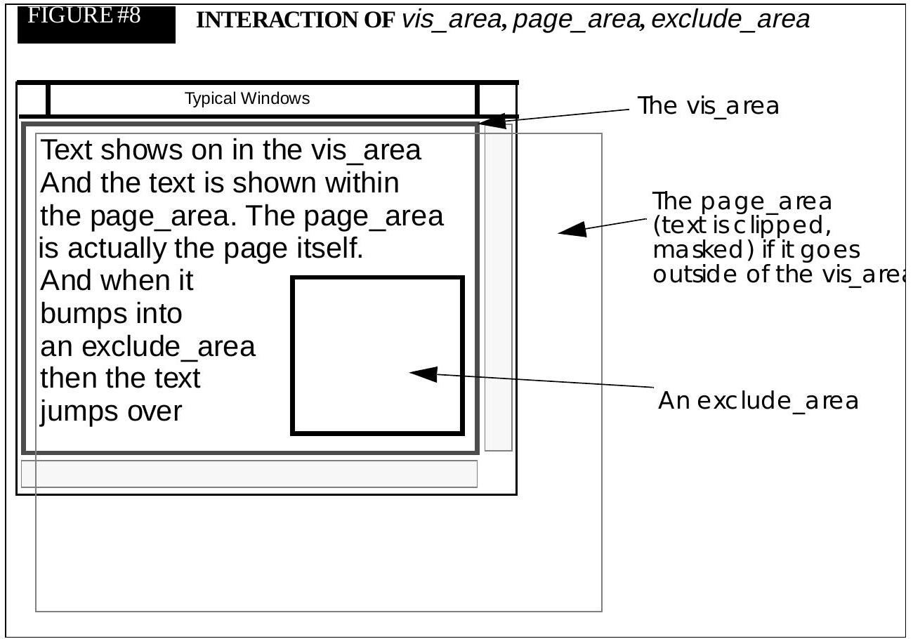
As stated, the simplest documents are rectangles; however, the page_area can be non-rectangular. A good example of this would be columns in which text must flow from one column to the other. In this case, the page_area would look similar to what is shown in Figure 9 infra.
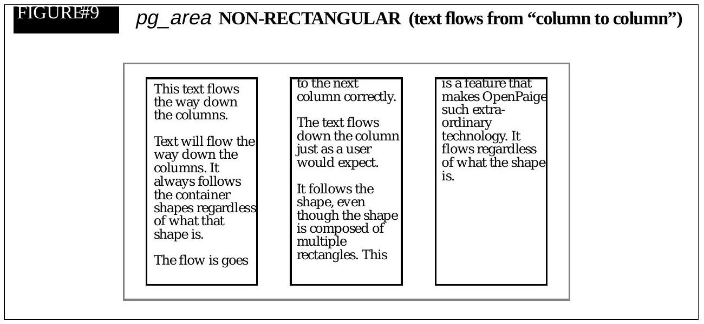
12.3 Coordinates & Graphic Structures
For purposes of cross-platform technology, HERMES Paige defines its own set of structures to represent screen positions (coordinates) and shapes. Except for machine-specific source files, no reference is made to, say, Macintosh “QuickDraw” structures.
The main components ("building blocks") of shapes are the following record structures:
Rectangle
typedef struct
{
co_ordinate top_left; // Top-left of rect
co_ordinate bot_right; // Bottom-right of rect
}
rectangle, *rectangle_ptr;
Co_ordinate
typedef struct
{
long v; // vertical position
long h; // horizontal position
}
co_ordinate;
12.4 What's Inside a Shape
Shapes are simply a series of rectangles. A very complex shape could theoretically be represented by thousands of rectangles, the worst-case being one rectangle surrounding each pixel.
All shape structures consist of a bounding rectangle (first rectangle in the array) followed by one or more rectangles; the bounding rectangle (first one) is constantly updated to reflect the bounding area of the whole shape as the shape changes.
Hence, the shape structure is defined simply as:
typedef rectangle shape; // Also a "shape", really
typedef rectangle_ptr shape_ptr;
A shape is maintained by HERMES Paige, however, as a memory_ref to a block of memory that contains the shape information. In the header it is defined as:
typedef memory_ref shape_ref; // Memory ref containing a "shape"
12.5 Rules for Shapes
The following rules apply to shapes with respect to the list of rectangles they contain:
If rectangle edges are connected exactly (i.e., if two edges have the same value), they are considered as "one" even if such a union results in a non-rectangular shape (see Figure 10).
If rectangle edges are not connected, they are considered separate "containers;" even if they overlap. (Overlapping would result in overlapping text if the shape definition was intended for the area where text is drawn).
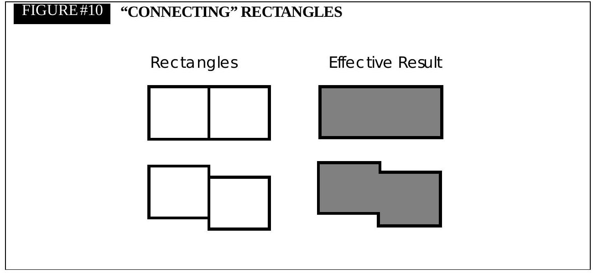
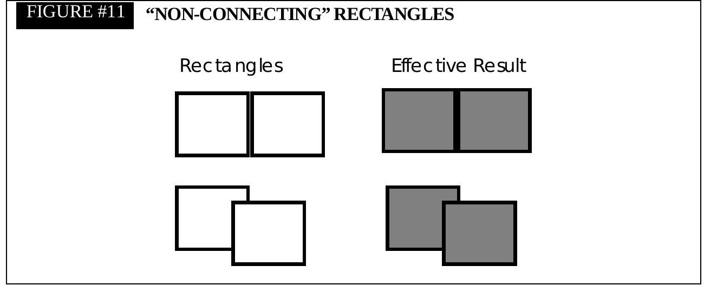
12.6 Building Shapes
Placing data into the shape_ref is the subject of discussion in this section. However, you will not normally manipulate the shape_ref data directly.
Creating new shapes
The easiest way to create a new shape is to use the following function:
This returns a new shape_ref (which can be passed to one of the "area" parameters in pgNew). The globals parameter must be a pointer to the same structure given to pgMemStartup() and pgInit().
The rect parameter is a pointer to a rectangle; this parameter, however, can be a null pointer in which case an empty shape is returned (shape with all sides = 0).
Setting a Shape to a Rectangle
If you have already created a shape_ref, you can "clear" its contents and/or set the shape to a single rectangle by calling the following:
The rectangle pointed to by rect is added to the rectangle list in the_shape, combining it with other rectangles if necessary. When a rectangle is added, pgAddRectToShape first explores all existing rectangles in the_shape to see if any of them can "merge" with rect (see section 12.5, Rules for Shapes). If none can be combined, rect is appended to the end of the list.
If the_shape is empty, the_shape gets set to the dimensions of rect (as if you had called pgSetShapeRectsupra).
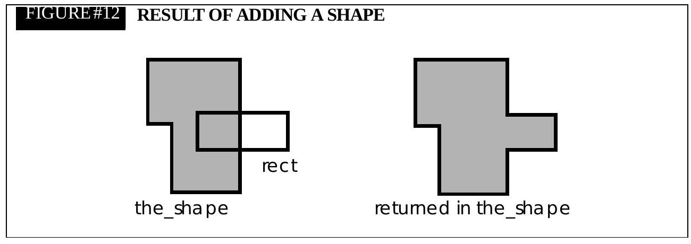
Disposing a Shape
To dispose a shape, call:
(void) pgDisposeShape (shape_ref the_shape);
Rect to Rectangle
Two utilities exist that make it easier to create HERMES Paige rectangles:
RectToRectangle converts Rect r to rectangle pg_rect. The pg_rect parameter must be a pointer to a rectangle variable you have declared in your code.
RectangleToRect converts pg_rect to r; also, if offset is non-null the resulting Rect is offset by the amounts of the coordinate (for example, if offset.h and offset.v were (10, 5) the resulting Rect would be the values in pg_rect with left and right amounts offset by 10 and top and bottom amounts offset by -5.
NOTE (Macintosh): Since a Mac Rect has a ±32 K limit for all four sides, HERMES Paige rectangle sides larger than 32 K will be intentionally truncated to about 30 K.
NOTE: You must#include "pgTraps.h" in any code that calls either function above.
12.7 Manipulating shapes
Moving shapes
(void) pgOffsetShape (shape_ref the_shape, long h, long v);
Offsets (moves) *the_shape by h (horizontal) and v (vertical) distances. These may be negative. Positive numbers move to the right horizontally and down vertically as appropriate.
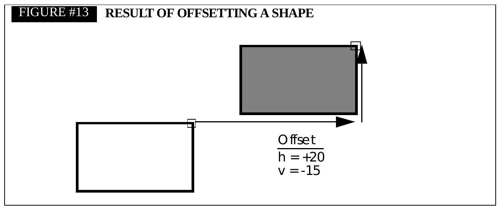
Shrinking or expanding shape
(void) pgInsetShape (shape_ref the_shape, long h, long v);
Insets (shrinks or expands) *the_shape by h and v amounts. Positive numbers inset the shape inwards and negative numbers expand it.
pgPtInShape returns "TRUE" if point is within any part of the_shape (actually, the rectangle number is returned beginning with #1). The point is temporarily offset with offset_extra if offset_extra is non-null before checking if it is within the_shape (and the offset values are checked in this case, not the original point).
If scaling is non-NULL, the_shape is temporarily scaled by that scale factor. For no scaling, pass NULL.
Also, each rectangle is temporarily inset by the values in inset_extra if it is non-NULL. Using this parameter can provide extra "slop" for point-in-shape detection. Negative values in inset_extra enlarge each rectangle for checking and positive numbers reduce each rectangle for checking.
NOTE: For convenience, the_shape can be also be MEM_NULL, which of course returns FALSE.
Checks to see if a rectangle is within the_shape. First, offset_extra, if non-null, moves rect by the amount in offset_extra.h and offset_extra.v, then checks if it intersects any part of the_shape. The result is TRUE if any part of rect is within the shape, FALSE if it is not. If the_shape is empty, the result is always FALSE.
Actually, a "TRUE" result will really be the rectangle number found to intersect, beginning with 1 as the first rectangle.
NOTE: A result of TRUE does not necessarily mean that rect doesn't intersect with any other rectangle in the_shape; rather, one rectangle was found to intersect and the function returns.
If sect_rect is not MEM_NULL, it gets set to the intersection of rect and the first rectangle in the_shape found to intersect it.
Sets result_shape to the intersection of shape1 and shape2. All shape_ref parameters must be valid shape_refs, except result_shape can be MEM_NULL (which you might want to pass just to check if two shapes intersect). Additionally, result_shape cannot be the shape shape_ref as shape1 or shape2 or this function will fail.
If either shape1 or shape2 is an empty shape, the result will be an empty shape. Also, if nothing between shape1 and shape2 intersects, the result will be an empty shape.
FUNCTION RESULT: The function result will be TRUE if any part of shape1 and shape2 intersect (and result_shape gets set to the intersection if not MEM_NULL), otherwise FALSE is returned and result_shape gets set to an empty shape (if not MEM_NULL).
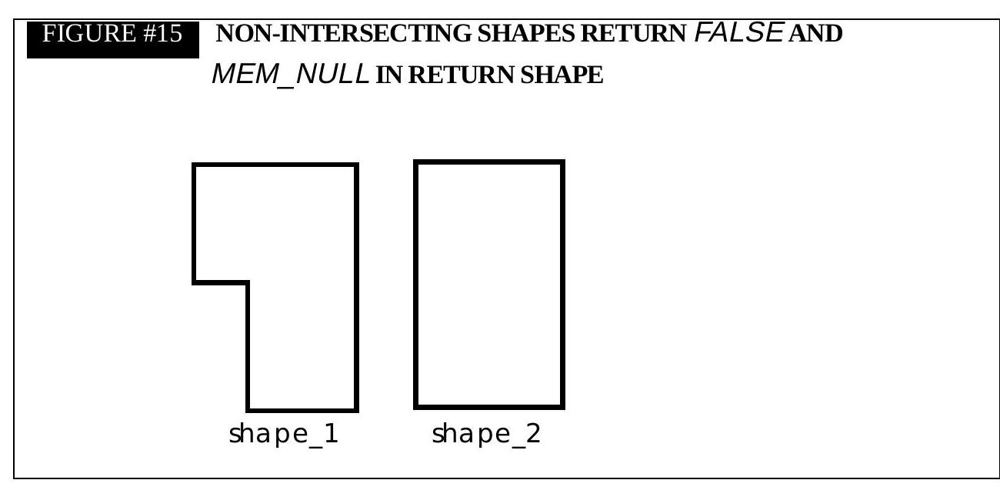
FUNCTION RESULT: Neither shape1 nor shape2 are altered by this function.
FUNCTION RESULT: This function places the difference in result_shape between shape1 and shape2.
Unlike pgSectShape, result_shape cannot be MEM_NULL; however, it can be the same shape_ref as shape1 or shape2.
The "difference" is computed by subtracting all portions of shape1 from shape2, and the geometric difference(s) produce result_shape. If shape1 is an empty shape, result_shape will be a mere copy of shape2; if shape2 is empty, result_shape will be empty.
FUNCTION RESULT: This function will erase the_shape (by filling it with the background colour of the device in pg).
The scale_factor parameter defines scaling, if any; for no scaling, pass zero for this parameter. If you want scaling, see section 16.2, Scaling a HERMES Paige Object.
If offset_extra is non-null, the_shape is temporarily offset by offset_extra -> h and offset_extra -> v amounts before the erasure occurs.
If vis_bounds is non-null, then only the parts of the_shape that intersect with vis_bounds get erased; otherwise, the whole shape is erased (see illustration infra).
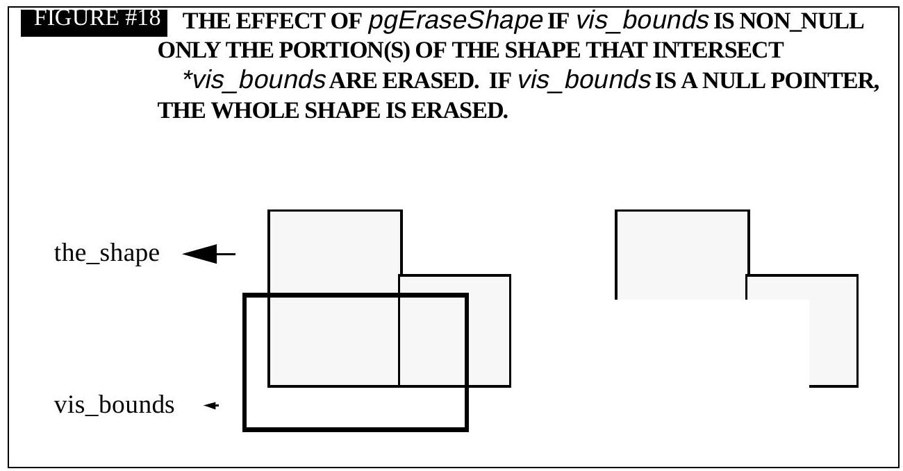
Moving a Shape in a pg_ref
(void) pgOffsetAreas (pg_ref pg, long h, long v, pg_boolean offset_page, pg_boolean offset_vis, pg_boolean offset_exclude);
This function "moves" the page area and/or visual area and/or the exclusion area of pg. If offset_page is TRUE, the page area is moved; if offset_vis is TRUE the visual area is moved; if offset_exclude is TRUE the exclusion area is moved.
Each area is moved horizontally and vertically by h and v pixels, respectively. What occurs is h gets added to the left and right sides of all rectangles enclosed in the shape while v gets added to top and bottom. Hence the shape is moved left or right, up or down with negative and positive values, respectively.
NOTE: The contents of pg are not redrawn.
12.8 Region Conversion Utilities
void ShapeToRgn (shape_ref src_shape, long offset_h, long offset_v, pg_scale_factor PG_FAR *scale_factor, short inset_amount, rectangle_ptr sect_rect, RgnHandle rgn);
This function sets region rgn to src_shape. In addition, the region is offset by offset_h and offset_v amounts. If scale_factor is non-NULL, the resulting region is scaled by that scaling factor (see chapter 16, Scaling).
Each rectangle added to the region is inset by inset_amount (inset_amount is added to the top and left and subtracted from right and bottom).
If sect_rect is non-NULL, every rectangle in the shape is first intersected with sect_rect and the intersection (only) is output to the region.
NOTE: You must#include "pgTraps.h" to use this function.
NOTE (Windows):RgnHandle is typedefed in pgTraps.h and is the same as HRGN.
CAUTION: Converting huge complex shapes to a region can be slow.
Picture Handle to Shape (Macintosh only)
The following function is available only for Macintosh that takes a picture and produces a shape that encloses the picture's outside edges:
#include "pgTraps.h"
(void) PictOutlineToShape (PicHandle pict, shape_ref target_shape, short accuracy)
Given a picture in pict and a shape_ref in target_shape, this function sets target_shape to surround the outside bit image of the picture.
The accuracy parameter can be a value from 0 to 7 and indicates how "accurate" the shape should be: 0 is the most accurate (but consumes the most memory) and 7 is the least accurate (but consumes the least memory). The accuracy value actually indicates how many pixels to skip, or "group" together in forming the image. If accuracy = 0, the image is produced to the nearest pixel — which theoretically can mean that a rectangle is produced for every pixel surrounding the image (which is why so much memory can be consumed).
The picture does not need to be a bitmap image, and it can be in colour (the image is produced around the outside edges of all nonwhite areas for colour).
NOTE: Large, complex images can not only consume huge amounts of memory but can take several seconds to produce the image, so use this function sparingly!
NOTE: You must#include "pgTraps.h" to use this function.
12.9 Page Area Background Colours
HERMES Paige will support any background colour (which your machine can support) even if the target window's background colour is different.
The page area (area text draws and wraps) will get filled with the specified colour before text is drawn; hence this features lets you overlay text on top of non-white backgrounds (or, if desirable, will also let you overlay white text on top of dark or black backgrounds).
Note that this differs from the bk_color value in style_info. When setting the style_info background, HERMES Paige will simply turn on that background colour only for that text. Setting the general background colour (using the functions below) sets the background of the entire page area.
COLOUR TEXT AND TEXT BACKGROUND
NOTE: For information about setting text colour and text background colour, see section 8.6, Setting/Getting Text Colour, and "Changing Styles" .
HERMES Paige will also recognise which colour is considered "transparent". Normally, this would be the same color as the window's normal background colour, typically "white."
"Transparent" is simply the background colour for which HERMES Paige will not set or force. Defining which color is transparent in this fashion lets you control the background colour(s) for either the entire window and/or a different colour for the window versus the pg_ref's page area.
12.10 Transparent Colour
The colour that is specified as "transparent" effectively tells HERMES Paige: "Leave the background alone if the page area's background is the transparent colour."
For most situations, you can leave the transparent colour as its default — white.
Here is an example, however, where you might need to change the transparent color. Suppose that your whole window is always blue but you want HERMES Paige to draw on a white background. In this case, you would set the transparent colour to something other than "white" so HERMES Paige is forced to set a white background. Otherwise, HERMES Paige will not change the background at all when it draws text since it assumes the window is already in that colour.
To change the page area background colour, call pgSetPageColor. The new background colour will be copied from the color parameter.
To obtain the current page colour, use pgGetPageColor and the background colour of pg is copied to *color.
After changing the background, subsequent drawing will fill the page area with that colour before text is drawn.
NOTE:pgSetPageColor does not redraw anything.
12.12 Getting/Changing the Transparent Colour
The "transparent colour" is a global value, as a field in pg_ref. Hence, all pg_refs will check for the transparent colour by looking at this field.
If you need to swap different transparent colours in and out for different situations, simply change pg_globals -> trans_color to the desired value.
NOTE: Usually the only time you need to change the transparent colour to something other than its default (white) is the following scenario: Non-white background colour for the whole window, but white background for a pg_ref's page area. In every other situation it is safe to leave the transparent colour in pg_globals alone.
This function fills pg's page area with the current page background color of pg.
The fill is clipped to the page area intersected with the shape given in the vis_area parameter. However, if vis_area is a null pointer, then the vis_area in pg is used to intersect instead.
NOTE: You do not normally need to call this function: HERMES Paige fills the appropriate areas(s) automatically when it draws text. This function exists for special situations where you want to "erase" the page area.
12.14 HERMES Paige Background Colours
The purpose of this section is to provide some additional information about HERMES Paige "background" colours and their relationship to the window's background colour.
First, let's clarify the difference between three different aspects of background:
Page background colour is the colour that fills the background of your page area. The "page area" is the specific area in the pg_ref in which text flows, or wraps. This is not necessarily the same colour as the window's background colour. For instance, if the page area were smaller than the window that contained it, the page background would fill only the page area, while the remaining window area would remain unchanged.
Window background colour is the background colour of the window itself. This can be different than the window's background colour.
Text background colour is the background colour of text characters, applied as a style (just as italic, bold, underline, etc. is applied to text characters). Text background colour applies only to the text character itself. This can be different from both window background and page background.
12.15 Who/What Controls Colors
When creating new HERMES Paige objects, the page area background colour is purely determined by the def_bk_color member of HERMES Paige globals. Afterwards, this colour can be changed by calling pgSetPageColor().
The window background colour is purely controlled by your application and no HERMES Paige functions alter that colour.
Text background is controlled by changing the bk_color member of style_info, and that color applies only to the character(s) of that particular style.
12.16 What is "trans_color" in HERMES Paige globals?
The purpose of pg_globals.trans_color is to define the default WINDOW background. Since HERMES Paige is a portable library, the trans_color member is provided as a platform-independent method for HERMES Paige to know what the "normal" background colour is.
HERMES Paige uses trans_color only as a reference. Essentially, trans_color defines the colour that would appear if HERMES Paige left the window alone, or the colour that would be used by the operating system if the window were "erased".
The value of trans_color becomes the most significant when you have set the page and/or text color to something different to the window color, because HERMES Paige compares the page and text colors to trans_color to determine whether or not to ERASE the background.
Its reasoning is, "... If the background color I am to draw is not the "normal" background color [trans_color], then I need to force-fill the background.”
Conversely, "... If the background color I am to draw is the same as trans_color, then I don't have to set anything special”.
Herein is most of the difficulty that HERMES Paige users encounter with background colors: they set the window to a non-white background, yet they usually leave pg_globals.trans_color alone. This is OK as long as trans_color and the page area colour are different.
But if you want the page background and window background to be the same, make sure pg_globals.trans_color is the same as the page background color. The general rules are:
Always set pg_globals.trans_color to the same value as the window's background color. Do this regardless of what the page area background color will be.
The only time you need to change pg_globals.trans_color is when/if you have changed the window's background color to something other than what is already in pg_globals.trans_color.
Setting page and/or text colour has nothing to do with the window's real background colour. These may or may not be the same, and HERMES Paige only knows if they match the window by comparing them to trans_color.
To make the page area AND the window backgrounds match each other, you must set pg_globals.trans_color, pgSetPageColor() and the window background colour to the same colour value.
13 PAGINATION SUPPORT
Although HERMES Paige does not provide full pagination features as such, several powerful support functions and features exist to help implement page breaks, columns, margins, etc.
For custom text placement not covered in this chapter and for custom pagination features such as widows and orphans, keep with next paragraph, etc. see chapter 37, Advanced Text Placement.
13.1 HERMES Paige "Document Info"
In every pg_ref, the following structure is maintained:
typedef struct
{
long attributes; // Various attributes (see below)
short page_origin; // What corner = origin
pg_short_t num_pages; // Number of "real" pages
short exclusion_inset; // Amount to inset exclusion area when clipping
short scroll_inset; // Amount to inset vis area when scrolling
short caret_width_extra; // Width of the caret
long repeat_slop; // Minimum remaining before repeat
short minimum_widow; // Minimum window (lines) NOTE SPELLING!
short minimum_orphan; // Minimum orphan (lines)
co_ordinate repeat_offset; // Amount of "gap for repeater shapes
rectangle print_target; // App can use as printed page size
rectangle margins; // Applied page margins
rectangle offsets; // Additional offsets of doc, 4 sides
long max_chars_per_line; // Optional max characters per line, or zero
long future[PG_FUTURE]; // Reserved for future
long ref_con; // App can store whatever
}
pg_doc_info, PG_FAR *doc_ptr;
NOTE: Some of the fields in pg_doc_info are currently unsupported, some of them are defined in Paige.h but not included above (but exist for future enhancements and extensions).
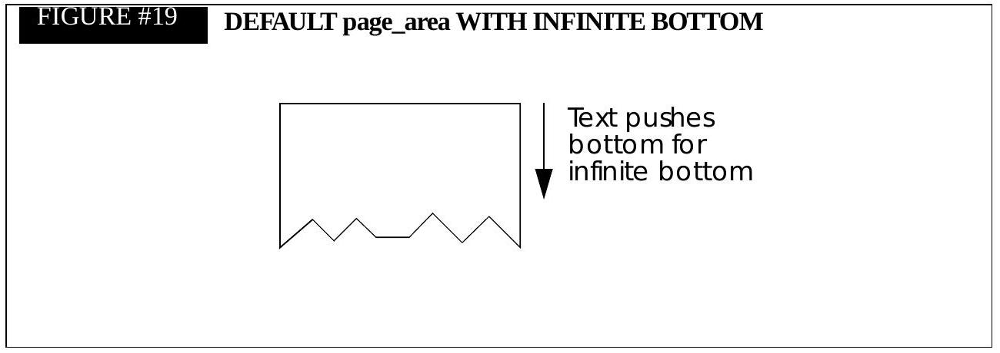
The fields that are currently supported are as follows:
attributes — defines special characteristics for the page_area shape. The attributes field applies only to the page_area shape (not vis_area or exclude_area), and it is a set of bits which can be any of the following:
#define V_REPEAT_BIT 0x00000001 // Shape repeats vertically
#define H_REPEAT_BIT 0x00000002 // Shape repeats horizontally
#define BOTTOM_FIXED_BIT 0x00000004 // Shape's bottom does not grow
#define NO_CONTAINER_JMP_BIT 0x00000010 // Can't jump containers
#define MAX_SCROLL_ON_SHAPE 0x00000020 // Maximum scroll is on shape
#define NO_CLIP_PAGE_AREA 0x00000040 // Page area does NOT clip text
#define WINDOW_CURSOR_BIT 0x00000400 // Keep cursor in window view
#define COLOR_VIS_BIT 0x10000000 // Page colour covers whole vis_area
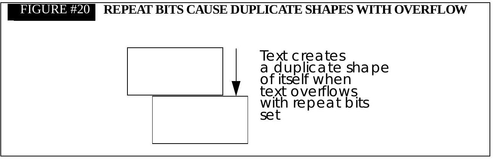
V_REPEAT_BIT or H_REPEAT_BIT — causes the page_area to "repeat" itself when text overflows the bottom (see section 13.3, Repeating Shapes).
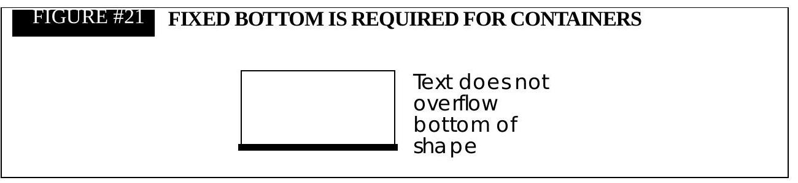
BOTTOM_FIXED_BIT — forces the page_area's bottom to remain the same (otherwise, the bottom is considered infinite or "variable" as text grows or shrinks).
NOTE: This bit should be set for implementing "containers." See chapter 14, Containers Support.
NO_CONTAINER_JMP_BIT — causes text to stay within one rectangle of the shape unless a container break character is encountered. (The usual purpose of setting this mode is for "form" documents and other matrix formats in which text can't leave a "cell" unless explicitly tabbed to do so).
MAX_SCROLL_ON_SHAPE — causes HERMES Paige to compute the maximum vertical scrolling values by the bottom-most rectangle in the page area (as opposed to the bottom-most text position).
NOTE: This bit should be set for implementing "containers." See chapter 14, Containers Support.
NO CLIP_PAGE_AREA — causes text drawing to be clipped to the page area. Normally, text is only clipped to the vis area. If this bit is set, it is clipped to the intersection of vis area and page area.
NOTE: You generally want this bit set for "containers" and/or non-rectangular wrap shapes.
Each attribute is said to be "on" if the bit is set. The default, after pgNew, is all zeros (all clear).
NOTE: If either "repeat" bit is set, BOTTOM_FIXED_BIT attribute is implied (and assumed) even if BOTTOM_FIXED_BIT is clear. This is because a shape cannot "repeat" unless the bottom is unchangeable.
WINDOW_CURSOR_BIT — causes the caret to stay within the vis_area regardless of where the document scrolls.
COLOR_VIS_BIT — informs HERMES Paige that the page background colour is one and the same as the window's background colour. Setting this bit causes all "erased" areas to be painted with the page colour. Usually you want to set this bit to avoid "flashing" during scrolling if your window's background is non-white and it is the same as the page background color.
repeat_slop — defines the minimum amount of vertical space, in pixels, remaining at the end of a document before the page shape repeats (new page “appended”). Used for repeating shapes only.
exclusion_inset — defines the amount to inset each exclusion rectangle for clipping. For example, if exclusion_inset were -1, each exclusion rectangle would be expanded 1 pixel larger before being subtracted from the clipped text display.
caret_width_extra — defines the width of the caret, in pixels. The default is 1.
scroll_inset — defines the amount to inset the vis_area when scrolling. For example, if scroll_inset were 1, a call to pgScroll()would visually scroll the vis_area minus 1 pixel on all four sides.
minimum_widow — defines the minimum number of lines that can exist at the end of a page, otherwise the paragraph breaks to the next page.
minimum_orphan — defines the minimum number of lines that can exist at the beginning of a new page, otherwise the whole paragraph breaks to the new page.
repeat_offset — defines the distance or "gap" to place between repeated shapes (see section 13.3, Repeating Shapes).
num_pages — contains the current "number of pages," which is really the number of times the shape will repeat itself if the whole document was displayed.
NOTE: This is not necessarily the number of physical pages that should be printed!
Repeating shapes can have "blank" pages due to the slop value on a nearly-filled page causing a new repeat. For correct printing, see pgPrintToPage.
ref_con — Can contain anything you want.
TODO: Currently, page_origin, print_target and margins fields are not supported but are provided for future enhancements and extensions.
TECH NOTE: Continuous document
The example demos had spacing above the document that I couldn't get rid of. I'm interested in some of the "multimedia" features of HERMES Paige, but I want a "streaming" document (no margins/headers/footers spaces). How do I get rid of the spacing so that all of the document is one long stream of data?
By "spacing" I assume you mean the white space between page breaks. We simply chose to implement the demo this way, with the "repeating shape" feature in HERMES Paige. Using this implementation, the pages show exactly as they will appear when printed, i.e. with all the paper margins in each side including top/bottom.
Some developers like to implement documents that way, yet some prefer the method that you mention (as one continuous "page"). To do one continuous page, one simply does not implement the "repeating shape,"; non-repeating shapes is actually the default mode. You can examine non-repeating shapes in our "Simple Demo" for Macintosh
For information on page breaks in a continuous document see technical note Artificial page breaks.
TECH NOTE: Relationship of page_area, vis_area and clipping regions clarified
I am having difficulty setting the appropriate attributes to make my document behave in a certain way...[etc.].
It is important to understand the relationship between the vis_area, page_area, and the various attribute bits in a pg_ref thăt might affect the behavior of both shapes (by attribute bits is meant the value(s) originally given to the flags parameter for pgNew and/or new attribute settings given in pgSetAttributes) and/or the attributes set in pg_doc_info.
The most essential difference between a pg_ref's page area versus vis_area is the page_area is the "container" in which text will wrap, while its vis area simply becomes the document's clipping region.
Generally, the vis_area remains constant and unchanging, whereas the page_area, particularly its bottom, can change dynamically as text is inserted or deleted, depending on the attribute flags that are set in the pg_ref. The following is the expected behaviour of the page_area when different attribute flags are set in the pg_ref:
Table 4: Expected behaviour of page_area attributes
ATTRIBUTE BITS
page_area BEHAVIOUR
CLIPPING
no bits set (default)
Bottom grows/shrinks dynamically as text is inserted or deleted (see notes below).
All drawing is clipped to intersection of vis_area and the window's current clip region.
BOTTOM_FIXED_BIT
Bottom remains constant, never changes regardless of the text content
All drawing is clipped to intersection of vis_area, page_area and the window's current clip region.
NO_WINDOW_VIS_BIT
No effect
Same as above except window's clip region is not included in the clip region
EX_DIMENSION_BIT (pgNew() flag)
No effect visually, but the total height of the doc's contents include the exclusion area shape (otherwise the exclusion area is not considered part of the document's dimensions).
No effect visually
COLOR_VIS_BIT
No additional effect (but vis_area is erased with the background colour)
No effect visually
V_REPEAT_BIT
Shape automatically repeats when text fills to its bottom, achieving multiple page effect.
Each repeating shape intersects with clip region
NO_CLIP_REGION
No effect
No clipping is set at all (the application must set the clipping area)
NOTES
On default behaviour (when no attributes have been set):
In the default mode, the page_area's bottom is said to grow dynamically to enclose the total height of text. In this case, the bottom of the page_area originally given to pgNew is essentially ignored; the page area's top, however, is not ignored, as that defines the precise top position of the first line of text.
When the page area's bottom is said to "grow" dynamically in the default mode, the shape itself does not actually change, rather HERMES Paige temporarily pretends its bottom matches the text bottom when it paginates or displays. Although the page_area appears to "grow," any time you might examine the page area shape, its bottom would not be changed from the original dimensions (to get document's bottom, use pgTotalTextHeight instead).
NO_WINDOW_VIS_BIT works only in the Macintosh version and has no effect in the Windows version.
To obtain the current document info settings for pg, call pgGetDocInfo, and a copy of the document info record will be placed in *doc_info.
To change the document info, call pgSetDocInfo and pass a pointer to the new information. HERMES Paige will copy its contents in pg.
If inval_text is TRUE, HERMES Paige marks all the text in pg as "not paginated," forcing new word-wrap calculations the next time it paginates the document (which will normally be the next time the contents of pg are drawn).
draw_mode can be the values as described in Draw Modes under section 2.11:
typedef enum
{
draw_none, // Do not draw at all
best_way, // Use most efficient method(s)
direct_copy, // Directly to screen, overwrite
direct_or, // Directly to screen, "OR"
direct_xor, // Directly to screen, "XOR"
bits_copy, // Copy offscreen
bits_or, // Copy offscreen in "OR" mode
bits_xor, // Copy offscreen in "XOR" mode
bits_emulate_copy // Copy "fake" offscreen
bits_emulate_or // "Fake" offscreen in "OR" mode
bits_emulate_xor // "Fake" offscreen in "XOR" mode
};
13.3 Repeating Shapes
If V_REPEAT_BIT or H_REPEAT_BIT is set in the attributes field of pg_doc_info, the page_area shape will "repeat" itself each time text overflows the bottom. For V_REPEAT_BIT, the shape repeats itself vertically; for H_REPEAT_BIT, the shape repeats itself horizontally (see Figure 15).
However, the shape itself does not physically grow. Instead, HERMES Paige displays the shape repeatedly down the screen, one page at a time. Hence, if you changed page_area to some other shape while one of the repeat bits were on, then all repeating shapes will change to the new shape.
The simplest application of the repeat bits is to provide a page rectangle (in original page_area), then as the document grows multiple "pages" are added.
Note that the term page is used here to describe a logical section of a document: the original shape does not really need to be a page rectangle, rather it could be a set of columns or any non-rectangular shape. In any event, the entire shape repeats itself each time text fills it up.
For such a feature, if you require a "gap" (page break area), you can do so by setting repeat_offset in pg_doc_info to a non-zero value. This is the amount, in pixels, to add between repeated shapes. Note that repeat_offset is a co_ordinate. This means you can specify both a vertical and horizontal displacement for repeated shapes (a horizontal displacement + vertical displacement would cause a "staircase" effect).
If the shape is to repeat vertically, each occurrence of the shape falls below the last one; for horizontal repeating, each occurrence falls to the right of the last one. The "gap" (repeat_offset), however, is added to the appropriate corresponding sides:
repeat_offset.v always displaces the repeating shape vertically and repeat_offset.h always displaces horizontally, regardless of whether V_REPEAT_BIT or H_REPEAT_BIT is set.
The purpose of the repeat_slop field is to append a repeated shape before text actually fills the entire shape.
For example, many applications prefer a new "page" to become available when text is almost filled to the bottom of the last page. The value you place in repeat_slop is used for this purpose, and is used by HERMES Paige as follows: once the bottom of text + repeat_slop ≥ the shape's bottom, the shape is repeated.
NOTES
Only the text bottom is measured against the shape, not the right or left sides. Even if you set H_REPEAT_BIT, a shape only repeats when text BOTTOM + repeat_slop hits or surpasses the shape's bottom.
Only one of H_REPEAT_BIT or V_REPEAT_BIT should ever be set at a time (the shape will not repeat both ways).
I am doing my word processor similar to MS Word. I put in a page break and draw my line dividing the pages. But when I go to print, HERMES Paige draws a single page, the text does not break to the next page.
The only real problem is if a pg_ref has no repeating shapes (or containers), a page break char has no place to "jump." Well, then during printing—just before pgPrintToPage—all one needs to do is set repeating shapes, then print. When printing is done, restore non-repeating shapes. That will cause HERMES Paige to work "correctly."
But when you want to go to page view mode, you should then switch to repeating shapes, just as the above note does for printing. That will help solve your problem.
Note that in a long document, anything exceeding 10 pages, finding a page will require pagination which the user wili probably notice. This is why word includes a "Paginate Now" menu item in the menu! You will probably want to paginate once and then I believe pgFindPage should work more quickly. If you don't allow HERMES Paige to paginate, it can't know which character is the top of the page! HERMES Paige (and all other word processors that display WYSIWYG pages) will have to repaginate to find the positions of the first character on the page. HERMES Paige currently performs many tricks and second guessing on when and how to calculate those positions.
Please note that HERMES Paige cannot make the same assumptions as Word on when to perform those calculations. We must sometimes rely on the developer to know when to perform the pagination.
13.4 Repeating shapes examples
In Figure 13, the initial page_area shape contains text which is within the bounds of the shape. Once text overflows the bottom, the shape is repeated and placed at repeat_offset.v pixels down and repeat_offset.h pixels across.
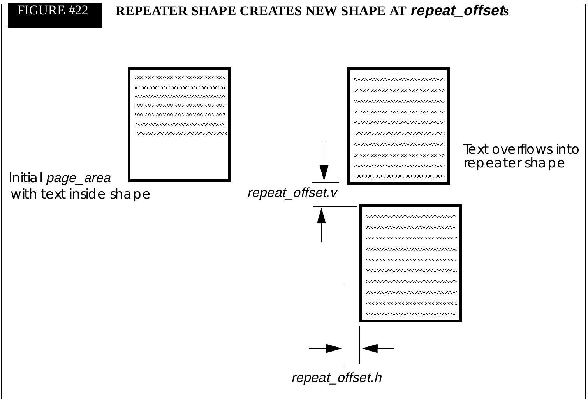
The next illustration shows what happens when repeat_stop is nonzero. In this example, repeat_stop's value is added to the bottom of the text and, if the result overflows the shape's bottom, the shape is repeated. This provides an 'extra page' to get added before the text completely fills the page shape.
Figure 23. The shape when text gets below the repeat_stop value.
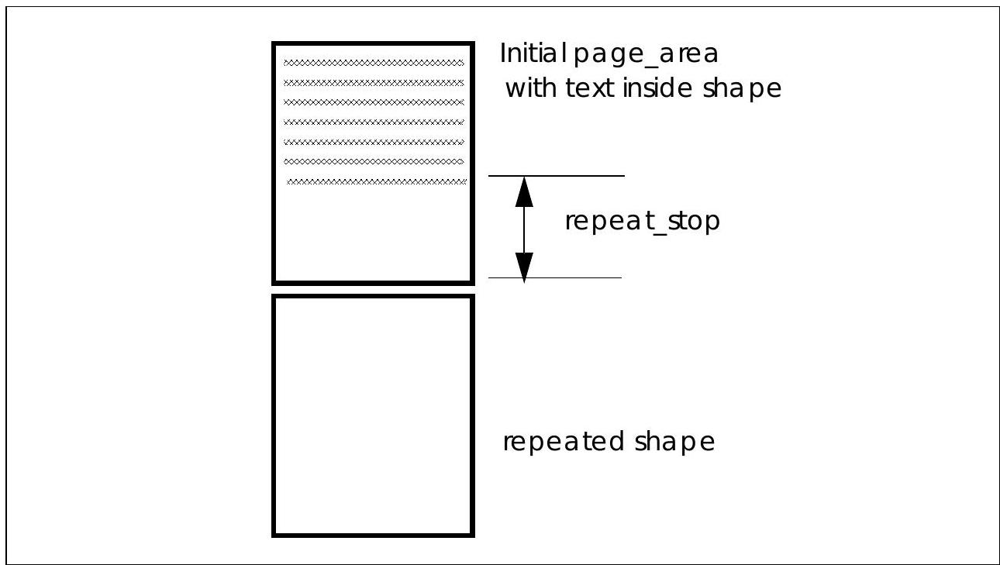
A repeating shape can actually be any shape and does not need to be a "page" rectangle. Figure 17 shows an example of "columns" repeating for each "page."
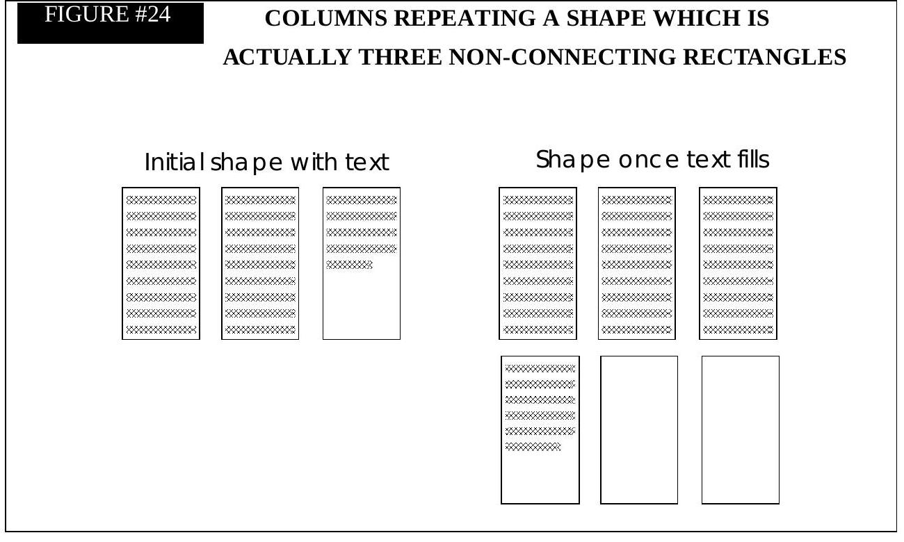
13.5 Shape Repeat Deletions
Repeated shapes will "delete" themselves if text shrinks above the repeated shape.
For example, if text filled up "page 1" causing a "page 2" to be created, deleting all the text will effectively delete "page 2."
13.6 Widows and Orphans
HERMES Paige supports "widow and orphan" control, to a certain extent. When lines are computed to flow within repeating shapes (multiple "pages"), whenever pg_doc_info.minimum_widow is non-zero, HERMES Paige will force a whole paragraph to the next page if its number of lines on the bottom of the page are equal to or less than minimum_widow.
Similarly, if pg_doc_info.minimum_orphan is non-zero, the whole paragraph is forced to the next page if its number of lines already breaking to the next page are less than or equal to minimum_orphan.
13.7 Header & Footer Support
While HERMES Paige does not directly support "headers and footers," a number of functions are provided to implement them more easily.
Page modify hook
This "hook" allows an application to temporarily modify the top, left, right and bottom margins of a "page" before pagination occurs. This is useful for header/footer/footnote support since temporary "exclusion" areas can be tailored for any specific page—and without actually modifying the exclusion shape itself.
PG_PASCAL (void) page_modify_proc) (paige_rec_ptr pg, long page_num, rectangle_ptr margins);
The above is the prototype for page_modify. This is a general HERMES Paige hook (not a style hook). When this gets called, page_num will indicate a zero-indexed page number and margins will point to a "rectangle" that represents four margins.
HERMES Paige calls this hook for every page that it "paginates." Note that the margins rectangle is not actually rectangle, rather it represents four margin values to add to the top or left, and/or subtract from bottom or right. Normally, these values will be zero (no extra margins); but if you wanted to remove, say, 16 pixels of space from the bottom of the page, you would set margins -> bot_right.v to 16.
Each time this function is called, all four "margins" are cleared to zero (the default). Hence if your function does nothing, the page remains the original size.
This hook is also very useful for alternating "gutters," i.e. extra space on the right side for odd pages and the same extra space on the left side for even pages, etc.
CAUTION: The top and bottom of the page can be modified randomly, i.e. each page can be different. Modifying left and/or right sides, however, must result in the same width for all pages. For example, you should not modify the left or right sides of page 1 but leave page 2's left or right side alone; it is OK to alternate sides as they are modified as long as the distance between left and right edges remain the same.
The above function is useful for drawing a pg_ref to any arbitrary location; the text will move (and optionally wrap) to a specified target location regardless of where its "normal" coordinates exist.
PURPOSE: Since most applications that implement headers and footers use pg_refs for a "header" or "footer", this new function exists for header/footer utilities.
If target_pg is not null, the drawing occurs to the graphics device attached to that HERMES Paige record; otherwise the drawing occurs to the device attached to pg. Note there are two usual ways to obtain a paige_rec_ptr: the first is from a low-level hook, in which case the paige_rec_ptr is usually one of its parameters. The second way is to do UseMemory(pg_ref) and then UnuseMemory(pg_ref) when you are done using the paige_rec_ptr.
The target_box parameter is a pointer to a rectangle which defines bounding "box" in which to draw the text. This rectangle defines the top-left position of the drawing as well as the clipping region. Text will not rewrap into this shape; rather, it repositions its text to align with the box's top-left coordinate, and target_box also becomes the clipping region.
The wrap_rect parameter is a pointer to an optional, temporary "page rect" for the text to wrap. If this is a null pointer, the page_area is used within pg (the source pg_ref).
The draw_mode is identical to all other functions that accept a drawing mode.
HERMES Paige supports several other page finding and setting commands. These are closely aligned with printing. These are shown in sections 16.6, Computing Pages , and 16.7, Skipping Pages. Custom page display techniques are described in section 16.9, Display Proc.
14 CONTAINERS SUPPORT
HERMES Paige has some built-in support for this purpose by providing several functions to insert, delete and change a list of rectangles that constitute page_area, as well as the ability to attach an application-defined reference to each "container" of the shape.
The term container is used to describe a rectangular portion of the page_area. For an application to support page-layout text containers, the typical method is to build the page_area (the shape in a pg_ref in which text will flow) with the desired series of rectangles.
14.1 Setting Up for "Containers"
By default, a pg_ref will not necessarily handle containers the way you might expect without first setting the appropriate values in pg_doc_info.
Before using any of the functions below, you should set at least the BOTTOM_FIXED_BIT and MAX_SCROLL_ON_SHAPE bits using pgSetDocInfo.
These bits are not set by default, so you should set them soon after pgNew and before inserting or displaying a pg_ref with "containers". For more information about pgSetDocInfo see section 13.2, Getting/Setting Document Info.
The purpose of BOTTOM_FIXED_BIT is to keep the last rectangle from "growing" along with text.
MAX_SCROLL_ON_SHAPE is optional, but will usually be what you want. Normally, HERMES Paige will assume the maximum vertical scrolling position is the same as the bottom-most text position. In a "containers" application, however, that is often undesirable since a document can contain many "empty" containers. By setting MAX_SCROLL_ON_SHAPE, HERMES Paige will find the bottom-most page area rectangle for computing maximum vertical scrolling.
14.2 Setting and Maintaining "Containers"
Number of containers
(pg_short_t) pgNumContainers (pg_ref pg);
Returns the number of "containers" currently in pg. This function actually returns the number of rectangles in the page area. Initially, after pgNew, the answer will be however many rectangles were contained in the initial page_area shape, which will be at least one rectangle.
Inserting containers
(void) pgInsertContainer (pg_ref pg, rectangle_ptr container, pg_short_t position, long ref_con, short draw_mode);
This makes a copy of the rectangle pointed to by container and inserts it into pg's page_area. Consequently, text will flow within the new shape now including the container rectangle, hence a new "container" is inserted.
Assuming that the current page area shape is a series of rectangles, from 1 to n, the new rectangle is inserted after the rectangle number in the position parameter. However, if position is zero, the new container is inserted at the beginning (becomes first rectangle in the shape). If position is pgNumContainers(pg), it is inserted as the very last rectangle.
You can also "attach" any long-word value (such as a pointer or some other reference) to the new "container" by passing that value in ref_con. Consequently, you can access this value at any time using pgGetContainerRefCon (see Container refCon under section 14.2).
draw_mode can be the values as described in Draw Modes under section 2.11:
typedef enum
{
draw_none, // Do not draw at all
best_way, // Use most efficient method(s)
direct_copy, // Directly to screen, overwrite
direct_or, // Directly to screen, "OR"
direct_xor, // Directly to screen, "XOR"
bits_copy, // Copy offscreen
bits_or, // Copy offscreen in "OR" mode
bits_xor, // Copy offscreen in "XOR" mode
bits_emulate_copy // Copy "fake" offscreen
bits_emulate_or // "Fake" offscreen in "OR" mode
bits_emulate_xor // "Fake" offscreen in "XOR" mode
};
NOTE: The position parameter is not checked for validity! Make sure it is within the boundaries between 0 and pgNumContainers(pg) or a crash can result. (Also note that the other container functions given here require that the range be between 1 and pgNumContainers; only in pgInsertContainer can position be zero).
Returns the "container" rectangle defined by the position parameter. This can be any of the rectangles contained in pg's page area, from 1 to pgNumContainers(pg). The rectangle is copied to the structure pointed to by the container parameter.
If include_scroll is TRUE, the container returned will be in its "scrolled" position (as it would appear on the screen). If include_scale is TRUE, the container returned will be scaled to the appropriate dimensions (based on the scaling factor in pg).
range-checking on position is not performed. Make sure it is a valid rectangle number.
The application-defined reference that is "attached" to container position is returned from pgGetContainerRefCon; you can also set this value using pgSetContainerRefCon.
Range-checking on position is not performed. Make sure it is a valid rectangle number.
NOTE: HERMES Paige does not know what you have set in ref_con, hence if you have set some kind of memory structure it is your responsibility to dispose of it before pg Dispose.
14.3 Changing Containers
(void) pgRemoveContainer (pg_ref pg, pg_short_t position, short draw_mode);
Deletes the rectangle of the page_area given in position. This value must be between 1 (first rectangle) and pgNumContainers(pg). Range-checking on position is not performed.
CAUTION: Never delete the last (and only) "container." HERMES Paige does not check for this situation, and by deleting the only container you will essentially have no area for the text to flow!
CAUTION: If you have set a ref_con value attached to the container to be deleted, it is gone forever after calling this function. It is your responsibility to do whatever is appropriate prior to deleting the container, such as disposing any memory structures involved with the refCon value, etc.
(void) pgReplaceContainer (pg_ref pg, rectangle_ptr container, pg_short_t position, short draw_mode);
Replaces container defined in position with the rectangle given in container. Note that only the rectangle in the page area is replaced; the refCon value will remain intact—unless you change it with pgSetContainerRefCon.
This is the function to use to change a container's dimensions, be it dragging, resizing, etc.
(void) pgSwapContainers (pg_ref pg, pg_short_t container1, pg_short_t container2, short draw_mode);
The two containers defined by container1 and container2 "trade places." This function is therefore useful for "bring to front" and "send to back" features.
The associated refCon values for container1 and container2 are also reversed; i.e., both rectangles and attached refCons are swapped.
CAUTION: Range-checking is not performed. Ensure that container1 and container2 are valid rectangle numbers, between 1 and pgNumContainers(pg).
Note
draw_mode can be the values as described in Draw Modes under section 2.11:
typedef enum
{
draw_none, // Do not draw at all
best_way, // Use most efficient method(s)
direct_copy, // Directly to screen, overwrite
direct_or, // Directly to screen, "OR"
direct_xor, // Directly to screen, "XOR"
bits_copy, // Copy offscreen
bits_or, // Copy offscreen in "OR" mode
bits_xor, // Copy offscreen in "XOR" mode
bits_emulate_copy // Copy "fake" offscreen
bits_emulate_or // "Fake" offscreen in "OR" mode
bits_emulate_xor // "Fake" offscreen in "XOR" mode
};
14.4 "Clicking" and Character Support
Point within container
(pg_short_t) pgPtInContainer (pg_ref pg, co_ordinate_ptr point, co_ordinate_ptr inset_extra);
Returns the container rectangle containing point, if any.
If inset_extra is non-NULL, every rectangle in the page area is first inset by inset_extra -> h and inset_extra -> v values before it is checked for containing point. Negative inset values expand the rectangle outwards, and positive numbers shrink the rectangle.
The usual purpose of inset_extra is to detect a certain amount of "slop" when looking for a mouse-click within a container. For example, if you want a container-click detection within four pixels of each container's edges, pass inset_extra as a pointer to a co_ordinate of (-4, -4).
FUNCTION RESULT: If no container contains point, zero is returned. Otherwise, the container number is returned (which will always be between 1 and pgNumContainers(pg)).
NOTE: Both scrolled position and scaling are taken into consideration by this function. In other words, container rectangles will be checked as they appear on the screen.
Character within container
(pg_short_t) pgCharToContainer (pg_ref pg, long offset);
Returns the container number, from 1 to pgNumContainers(pg), containing the specified text offset. The offset parameter is relative to the start of all text and is a byte offset; it must be between 0 and pgTextSize(pg).
However, offset can also be CURRENT_POSITION (#defined as -1) which will return the container number for the current insertion point (or the starting selection point if there is a highlight range).
Returns the text offset of the first character that exists in container number position. This function is useful to locate the first character within a container.
However, it is possible that the container has no text at all (text is not large enough to fill all containers), in which case the function result will be -1.
The position parameter must be between 1 and pgNumContainers(pg).
CAUTION: Range-checking is not performed!
TECH NOTE: Containers v. Repeating Shapes
How expensive is containers support in general, compared to repeating shapes?
Repeating shapes are light-years faster, because they don't really "repeat," at least not physically. All a repeating shape does is repeat its display. If you have, say, a single-rect shape, if it is repeating that shape remains a single rect even if the doc repeats a million times.
Containers, on the other hand, consist of a physical array of rectangles. So that's one big difference—if a single rect repeats 100 times, the "containers" method will have 100 rectangles; a repeating shape of course has just one.
"Repeating" is fastest because HERMES Paige only has to consider one rectangle—and relative positions thereof. On the other hand, when computing word-wrapping within containers, HERMES Paige must continuously walk through allrects to see which ones intersect the text line, etc. So the processing is much more extensive in this case.
The general rule is: If your shape, regardless of its complexity, must literally "repeat" in its exact form, then use repeating shapes. If your shape does not necessarily repeat as-is—or if the reoccurrence of the shape can be slightly different than the previous occurrence, then you are forced to use containers.
15 EXCLUSION AREAS
An HERMES Paige "exclusion" area is typically used for page layout features in which text will wrap around one or more rectangles, including complex shapes (which are also a series of small rectangles).
15.1 Setting & Maintaining Exclusions
As in HERMES Paige's "container" support in the previous chapter, several functions are provided to insert, delete and change the series of rectangles in the exclude shape of an HERMES Paige object.
Number of exclusions
(pg_short_t) pgNumExclusions (pg_ref pg);
Returns the number of exclusion rectangles currently in pg. This function actually returns the number of rectangles in the exclude area. Initially, after pgNew, the answer will be however many rectangles were in your exclude_area shape, if any.
Unlike pgNumContainers, it is possible (and often likely) to have zero exclusion rectangles, so this function can legitimately report zero.
Inserting exclusion
(void) pgInsertExclusion (pg_ref pg, rectangle_ptr exclusion, pg_short_t position, long ref_con, short draw_mode);
This makes a copy of the rectangle pointed to by exclusion and inserts it into pg's exclude_area. Consequently, text will flow around (will avoid) the new shape now including the exclusion rectangle.
If position is zero, the new exclusion is inserted at the beginning (becomes first rectangle in the shape). If position is pgNumExclusions(pg), it is inserted as the very last rectangle.
It is possible that the current exclusion area in pg is empty or does not exist; for example, you might have passed a null pointer for exclude_area in pgNew. This function will recognise that situation and will work correctly, building an initial exclude_area if necessary. However, in this situation, the only valid position for insertion is zero.
You can also "attach" any long-word value (such as a pointer or some other reference) to the new exclusion rectangle by passing that value in ref_con. Consequently, you can access this value at any time using pgGetExclusionRefCon (see "Exclusion refCon").
CAUTION: The position parameter is not checked for validity! Make sure it is within the boundaries between 0 and pgNumExclusions(pg) or a crash can result.
(void) pgInsertExclusionShape (pg_ref pg, pg_short_t position, shape_ref exclude_shape, short draw_mode);
Inserts an entire shape into the exclusion area of pg. The list of rectangles within exclude_shape is inserted after rectangle number position; if position is zero, the shape is inserted at the beginning. If position is pgNumExclusions(pg), the shape is inserted at the end.
If no exclusion area exists in pg prior to this function, the result is essentially the same as pgSetAreas to change or set a new exclusion area.
The contents of exclude_shape are copied, therefore you can dispose exclude_shape any time after calling this function.
NOTE: Associated ref_con values for all new rectangles will be initialised to zero.
Note
draw_mode can be the values as described in Draw Modes under section 2.11:
typedef enum
{
draw_none, // Do not draw at all
best_way, // Use most efficient method(s)
direct_copy, // Directly to screen, overwrite
direct_or, // Directly to screen, "OR"
direct_xor, // Directly to screen, "XOR"
bits_copy, // Copy offscreen
bits_or, // Copy offscreen in "OR" mode
bits_xor, // Copy offscreen in "XOR" mode
bits_emulate_copy // Copy "fake" offscreen
bits_emulate_or // "Fake" offscreen in "OR" mode
bits_emulate_xor // "Fake" offscreen in "XOR" mode
};
Returns the exclusion rectangle defined by the position parameter. This can be any of the rectangles contained in pg's exclusion area, from 1 to pgNumExclusions(pg). The rectangle is copied to the structure pointed to by the exclusion parameter.
If include_scroll is TRUE, the rectangle returned will be in its "scrolled" position (as it would appear on the screen). If include_scale is TRUE, the rectangle returned will be scaled to the appropriate dimensions (based on the scaling factor in pg ).
Warnings
Range-checking on position is not performed. Make sure it is a valid rectangle number.
Unlike containers, it is possible to have zero exclusion rectangles. You must not call this function if pgNumExclusions = 0.
The application-defined reference that is "attached" to exclusion rectangle position is returned from pgGetExclusionRefCon; you can also set this value using pgSetExclusionRefCon.
Warnings
Range-checking on position is not performed. Make sure it is a valid rectangle number.
HERMES Paige does not know what you have set in ref_con; hence if you have set some kind of memory structure it is your responsibility to dispose of it before pgDispose.
15.4 Changing Exclusion Rectangles
Removing exclusions
(void) pgRemoveExclusion (pg_ref pg, pg_short_t position, short draw_mode);
Deletes the rectangle of the exclusion area given in position. This value must be between 1 (first rectangle) and pgNumExclusions(pg). Range-checking on position is not performed.
NOTE: Unlike containers, it is acceptable to delete the last and only exclusion rectangle.
CAUTION: If you have set a ref_con value attached to the exclusion rectangle to be deleted, it is gone forever after calling this function. It is your responsibility to do whatever is appropriate prior to deleting the exclusion, such as disposing any memory structures involved with the refCon value, etc.
(void) pgReplaceExclusion (pg_ref pg, rectangle_ptr exclusion, pg_short_t position, short draw_mode);
Replaces exclusion rectangle defined in position with the rectangle given in exclusion.
NOTE: Only the rectangle in the exclusion area is replaced; unless you change it with pgSetExclusionRefCon, the refCon value will remain intact.
This is the function used to change an exclusion rectangle's dimensions, be it dragging, resizing, etc.
Swapping exclusions
(void) pgSwapExclusions (pg_ref pg, pg_short_t exclusion1, pg_short_t exclusion2, short draw_mode);
The two exclusion rectangles defined by exclusion1 and exclusion2 "trade places". This function is therefor useful for "bring to front" and "send to back" features.
The associated refCon values for exclusion1 and exclusion2 are also reversed, i.e. both rectangles and attached refCons are swapped.
CAUTION: Range-checking is not performed. Make sure exclusion1 and exclusion2 are valid rectangle numbers, between 1 and pgNumExclusions(pg).
Note
draw_mode can be the values as described in Draw Modes under section 2.11:
typedef enum
{
draw_none, // Do not draw at all
best_way, // Use most efficient method(s)
direct_copy, // Directly to screen, overwrite
direct_or, // Directly to screen, "OR"
direct_xor, // Directly to screen, "XOR"
bits_copy, // Copy offscreen
bits_or, // Copy offscreen in "OR" mode
bits_xor, // Copy offscreen in "XOR" mode
bits_emulate_copy // Copy "fake" offscreen
bits_emulate_or // "Fake" offscreen in "OR" mode
bits_emulate_xor // "Fake" offscreen in "XOR" mode
};
15.5 "Clicking" Exclusion Rectangles
(pg_short_t) pgPtInExclusion (pg_ref pg, co_ordinate_ptr point, co_ordinate_ptr inset_extra);
Returns the exclusion rectangle containing point, if any. It is safe to call this function even if there are no exclusion rectangles (in which case pgPtInExclusion will always return zero).
If inset_extra is non-NULL, every rectangle in the exclusion area is first inset by inset_extra -> h and inset_extra -> v values before it is checked for containing point.
Negative inset values expand the rectangle outwards, and positive numbers shrink the rectangle.
The usual purpose of inset_extra is to detect a certain amount of "slop" when looking for a mouse-click within an exclusion area. For example, if you want a click detection within four pixels of each exclusion's edges, pass inset_extra as a pointer to a co_ordinate of -4, -4.
FUNCTION RESULT: If no exclusion contains point, or if no exclusion area exists, zero is returned. Otherwise, the exclusion rectangle number is returned (which will always be between 1 and pgNumExclusions(pg)).
NOTE: Both scrolled position and scaling are taken into consideration by this function. In other words, rectangles will be checked as they appear on the screen.
15.6 Drawing Exclusion Contents
If your exclusion rectangle(s) contain some type of graphic image you need to draw, the recommended method for doing this is to use the page_proc hook. HERMES Paige calls this "hook" function after drawing each page of text; this is explained in chapter 27, Customising HERMES Paige.
15.7 Attaching Exclusions to Paragraphs
Any exclusion rectangle can be "attached" to the top of a paragraph. First, create the exclusion rectangle, then call the following function:
void pgAttachParExclusion (pg_ref pg, long position, pg_short_t index, short draw_mode)
The exclusion rectangle is represented by index; this is a value from 1 to pgNumExclusions(pg).
The paragraph is represented by the position parameter; this is a text position into the document, and the paragraph to which the exclusion rectangle attaches is the paragraph which contains the position.
NOTE: The text position does not need to be the exact position of a paragraph beginning, rather it can be anywhere within the paragraph (before the carriage return).
The exclusion rectangle, however, "attaches" to the top line of the paragraph regardless of the text position given.
After this function is called, the exclusion rectangle will constantly and dynamically align to the top line of the paragraph even as the text is changed or deleted. If the paragraph is deleted, the exclusion rectangle will still exist but will remain stationary and attached to no paragraph.
Otherwise, the exclusion rectangle is no different than any other exclusion rectangle—text will wrap around the rectangle appropriately, even if that text is part of the paragraph to which the exclusion is attached.
Notes and Warnings
Only the vertical position of the exclusion rectangle is aligned to the paragraph; its horizontal position will remain unchanged.
Do not attach more than one exclusion rectangle to the same paragraph or unexpected erroneous results will occur.
draw_mode can be the values as described in Draw Modes under section 2.11. The document will redraw in its entirety if any draw_mode but draw_none is selected; otherwise, the document will not redraw at all.
typedef enum
{
draw_none, // Do not draw at all
best_way, // Use most efficient method(s)
direct_copy, // Directly to screen, overwrite
direct_or, // Directly to screen, "OR"
direct_xor, // Directly to screen, "XOR"
bits_copy, // Copy offscreen
bits_or, // Copy offscreen in "OR" mode
bits_xor, // Copy offscreen in "XOR" mode
bits_emulate_copy // Copy "fake" offscreen
bits_emulate_or // "Fake" offscreen in "OR" mode
bits_emulate_xor // "Fake" offscreen in "XOR" mode
};
Determining the Attached Paragraph
To determine if an exclusion rectangle is currently attached to a paragraph, call the following function:
long pgGetAttachedPar(pg_ref pg, pg_short_t exclusion);
The exclusion rectangle in question is represented by exclusion; this can be any value from 1 through pgNumExclusions(pg).
This function returns the text position of the paragraph to which the exclusion is attached, if any.
If the exclusion is attached to no paragraph, the function returns -1.
16 SCALING, PRINTING & DISPLAYING
16.1 Scaling
An HERMES Paige object can be scaled, which is to say enlarged or reduced by a specified amount.
Scaling, however, must be equal for both vertical and horizontal dimensions.
The scaling factor is maintained by HERMES Paige using the following record:
The origin field supra contains the origin point to compute scaling. Generally, this should be the top-left point of your overall page_area (text flow area). The purpose of the origin value is for HERMES Paige to know what scaling is relative to, or stated more simply, what is the top-left point of the entire area that is being scaled.
The scale field is a long whose high-order and low-order words define a numerator and denominator. Stated as a formula, the scale value is computed as:
high word of (scale) / low word of (scale)
Hence, if scale is 0x00020001, scaling is 2-to-1 (2 / 1); if scale is 0x00010002, then scaling is 1-to-2 (1 / 2), etc.
If the scale value is zero, that is interpreted as no scaling (same as 1 / 1).
16.2 Scaling a HERMES Paige Object
(void) pgSetScaling (pg_ref pg, pg_scale_ptr scale_factor, short draw_mode);
This sets the scaling for pg. The scale_factor parameter must be a pointer to a pg_scale_factorsupra; it cannot be a null pointer. From that moment on, pg will display and edit in the specified scaled amount.
The scaling factor of pg is returned in the pg_scale_factor pointed to by scale_factor (which cannot be null).
Notes
HERMES Paige makes a copy of your scale_factor, so it does not need to remain static.
On Macintosh only, scaling text may be inaccurate for environments that do not support Color QuickDraw.
draw_mode can be the values as described in Draw Modes under section 2.11. If draw_mode is not draw_none, the text is redrawn in the new scale.
-
typedef enum
{
draw_none, // Do not draw at all
best_way, // Use most efficient method(s)
direct_copy, // Directly to screen, overwrite
direct_or, // Directly to screen, "OR"
direct_xor, // Directly to screen, "XOR"
bits_copy, // Copy offscreen
bits_or, // Copy offscreen in "OR" mode
bits_xor, // Copy offscreen in "XOR" mode
bits_emulate_copy // Copy "fake" offscreen
bits_emulate_or // "Fake" offscreen in "OR" mode
bits_emulate_xor // "Fake" offscreen in "XOR" mode
};
16.3 Scaling and Vis Areas
A scaled pg_ref normally does not scale its vis_area. If the attribute flag scale_vis_bit has been set in the pg_ref, the vis_area is scaled, otherwise the vis_area remains unscaled.
Fig. 25 needs redrawn!
SCALE_VIS_BIT is usually set when one or more pg_refs are components of a larger document, not the whole document itself. For example, an object-oriented drawing program using HERMES Paige to show text objects would probably want to set SCALE_VIS_BIT to achieve the rendering as shown in the bottom part of the above example.
A general word-processor window, however, would probably not want SCALE_VIS_BIT; instead, it may be more desirable to leave the vis_area alone, as shown in the top part of the above example.
The three functions above will scale a long, a co_ordinate and a rectangle, respectively.
For pgScaleLong, the scale_factor is only the "scale" part of a complete pg_scale_factor and the origin is the appropriate origin position. The value to scale must be pointed to by value and the value will be scaled when the function returns.
For pgScalePt, the pt parameter gets scaled by the scaling factor in scale_factor; for pgScaleRect, the rect parameter is scaled by scale_factor. For both pgScalePt and pgScaleRect, amount_offset should be a pointer to the amount the document is "scrolled", or a null pointer if this does not matter.
Usually, amount_offset should be a negative compliment of pgScrollPosition(&offset), as:
This function is similar to pgScaleRect except the scaled result of src_rect is placed in target_rect. In addition, src_rect is temporarily offset before being scaled by offset_extra amounts (unless offset_extra is a null pointer).
TECH NOTE: Scaling a point inside a shape
I was looking through the manual and can't seem to find any function that scales a whole shape. Am I missing something?
You are right, HERMES Paige does not have a "scale shape" function, probably because it does not need one internally. That is because nothing inside an HERMES Paige document is ever really "scaled," it's all an illusion (only the drawing itself is scaled; all shapes and text positions remain the same at all times).
HERMES Paige locates a mouse point in a scaled document by "reverse scaling" the mouse point. By that I mean it scales the co_ordinate in question the opposite amount that the document is (apparently) scaled.
It's fairly easy to reverse-scale something. All you do is negate the current scale factor, for example:
This brings up an interesting point. Although I can see that your function to find a point in a scaled shape will work, perhaps a much faster method is to reverse-scale the point instead of scaling the whole shape, then just find the point without the non-scaled shape.
16.5 Printing Support
IMPORTANT: Do not confuse "pages" in the context of printing with "paging" for repeating shapes. These are two different concepts entirely. Printed pages are simply sections of text; "pages" of repeating shapes are simply repeating display of the same shape, and in fact, might not contain text at all. A printed page and repeating shape page are not necessarily the same dimensions. See section 13.3, Repeating Shapes.
"Printing" for HERMES Paige is simply an alternate method of displaying its text offset and pinned neatly to a specified "page" rectangle. In itself it knows nothing about printing or printer devices.
The following function is intended to handle most printing requirements:
(long) pgPrintToPage (pg_ref pg, graf_device_ptr target, long starting_position, rectangle_ptr page_rect, short draw_mode);
The target parameter is an optional pointer to a graphics device other than pg's default device (see section 3.4, Graphic Devices).
The starting_position parameter is the text offset, in bytes of the first text that should be printed (this is a zero-indexed number).
The function will draw as much text that can completely fit inside page_rect, starting with starting_position in pg, and drawing the first line relative to page_rect's top-left. No text will be drawn that does not completely fit vertically inside page_rect, hence no "half lines" will exist at page_rect's bottom. Horizontal fitting is not checked—see note below.
The effective result of this function is that a "page" of text is drawn to some specified device.
The draw_mode parameter should generally be set to best_way, direct_or or bits_emulate_or.
Highlighting and the "caret" is suppressed when the text is drawn by this function and the current vis_area is ignored (it is temporarily replaced with the dimensions of page_rect).
FUNCTION RESULT: The function returns the next text position following the last line printed. If no more text is available (all text fit from starting_offset to end of document), zero is returned.
To print consecutive pages, you would print the first page with starting_offset = 0, then call pgPrintToPage again with starting_offset = function result, and continue doing so until the function result is zero.
During the time pgPrintToPage is being executed, pg's attribute flags will have PRINT_MODE_BIT set.
NOTES:
Text is not automatically rewrapped to page_rect even if page_rect is a different width than pg's page_area. Whether or not the lines will spill off to the right is also not checked. It is therefore your responsibility to make sure page_rect is wide enough and, if necessary, force pg to rewrap by changing the page_area first.
If you want to print in a "scaled" state, simply set pg to the desired scaling then print the pages.
Printing in Windows
HERMES Paige printing for Windows is similar to Macintosh in the sense that drawing is temporarily redirected to some device other than the application document window.
When calling pgPrintToPage, you need to set up a graf_device (a multipurpose output device for platform-independent drawing) and pass a pointer to that record in the target parameter.
To create the graf_device, use:
(void) pglnitDevice(pg_globals_ptr globals, generic_var the_port, long machine_ref, graf_device_ptr device);
The globals parameter must be a pointer to HERMES Paige globals (same structure given to pgInit() and pgNew()). Pass MEM_NULL to the_port. For Windows, this would normally be type HWND but in this case there isn't any window associated with the device.
Pass the Device Context handle in machine_ref. This should be the HDC that you will be "printing" to.
After calling pgInitDevice() you then pass the graf_device structure to pgPrintToPage() as the target parameter.
Once you are completely through using the graf_device, you must call the following:
The globals parameter must point to the same HERMES Paige globals as before; the device parameters must be a pointer to the graf_device previously initialised with pgInitDevice.
Notes
pgCloseDevice only disposes memory structures created by HERMES Paige. The Device Context is not affected.
When creating a graf_device in this fashion, the Device Context given to pgInitDevice must remain valid until you are completely through drawing to the device (and consequently call pgCloseDevice).
Printer Resolution
If you create a graf_device for printing per the instructions above, you do not need to do anything special with regard to the resolution of the target print device. The pgInitDevice() function will resolve all resolution issues and pgPrintToPage() should render the image correctly.
Sample to print on the Macintosh
Here is an example of printing a pg_ref to a standard Macintosh print driver. Note that you must first create a graf_device for HERMES Paige to accept the print driver as the current "port". This example shows how to do that as well:
void print_pg_doc(pg_ref pg, THPrint print_rec)
{
Rect page_rect;
rectangle pg_page;
graf_device pg_port;
long print_offset;
int cancel;
short page_num;
TPPrPort print_port;
TPrStatus p_status;
page_rect = (**print_rec) prInfo.rPage;
RectToRectangle(&page_rect, &pg, page);
// print page rectangle
print_port = PrOpenDoc(print_rec, NULL, NULL);
pgInitDevice(&paige_rsrv, print_port, 0, &pg_port);
// Makes graf_device
cancel = FALSE;
print_offset = 0;
page_num = 1;
while (page_num && (!cancel))
{
prOpenPage(print_port, NULL); // Prints a "page"
print_offset = pgPrintToPage(pg, &pg_port, print_offset, &pg_page, best_way);
PrClosePage(print_port);
if (print_offset) // If more to print, next offset non-zero
++page_num;
else
page_num = 0; // This way we break the loop
cancel = (PrError() == iPrAbort);
}
PrCloseDoc(print_port);
if (!cancel)
PrPicFile(print_rec, NULL, NULL, NULL, &p_status);
pgCloseDevice(&paige_rsrv, &pg_port); // Disposes graf_device
TECH NOTE What do I need to do about higher resolution coördinate systems?
I noticed that the coordinate system is in pixels. How do we handle coordinates in for high resolution printing? Are we limited to a 1/8" granularity?
In Windows, HERMES Paige handles printing resolution by checking the capabilities of the device context you provide. Assuming you have set up a graf device (per examples shown in the Programmer's Guide), the device resolution is determined and stored within the grafdevice structure. Then when you call pgPrintToPage(), HERMES Paige will scale the image to match the printer's resolution.
Usually, you don't need to do anything special for printing the maximum resolution since HERMES Paige handles the difference(s) automatically between the screen and printer.
TECH NOTE Scaled Printing
[Using Windows version], I am trying to print an HERMES Paige document scaled to something other than 100%. I do this by setting HERMES Paige scaling but it has no effect, the document always prints 100%.
The reason scaling doesn't get reflected when you print is that HERMES Paige overrides the scaling you have set to the screen intentionally.
This is because it has to scale everything to match the printer's resolution, hence it temporarily changes the scaling factor.
The work-around is to trick HERMES Paige into thinking the printer's resolution is something else. The scaling will reflect the printer's resolution + whatever you want. This is possible to do as long as you change the resolution in the graf_deviceafter you initialise it (see below).
For example, suppose you are printing to a 300 DPI device. Let's say you want to reduce the printed image by 50%. All you do is set the resolution to the grafdevice to 300/2=150 DPI. In this case, HERMES Paige will scale only half the size it should for 300 DPI, which would render your output 50% reduced.
The printer resolution is in the graf device.resolution field, and this value is a long word whose high/low words are the horizontal and vertical resolutions (dots per inch).
Example
void print (HDC out_dc)
{
graf_device print_port;
rectangle page_rect;
long offset, print_x, print_y;
pgInitDevice(&pg_globals, MEM_NULL, out_dc, &print_port);
// Get print resolution
print_y = GetDeviceCaps(out_dc, LOGPIXELSY);
print_x = GetDeviceCaps(out_dc, LOGPIXELSX);
// I want 50% reduction, so put the resolution at 1/2 the norm:
print_y /= 2;
print_x /= 2;
print_dev -> resolution = print_x;
print_dev -> resolution <<- 16;
print_dev -> resolution |= print_y;
FUNCTION RESULT: This function returns the number of "pages" that would print with page_rect.
In other words, if page_rect were passed to pgPrintToPage and the whole document were printed, pgNumPages will return how many passes would be made (which implies how many pages would print).
NOTES
This function only works if you have the exact same settings in pg that will exist when pgPrintToPage is called, i.e., scaling factor, page_area size, etc.
Using this function for large documents will consume a lot of time. This is because HERMES Paige has to determine the exact number of pages by paginating every line of text according to the page rectangle you have specified.
16.7 Skipping pages
(long) pgFindPage (pg_ref pg, short page_num, rectangle_ptr page_rect;
FUNCTION RESULT: This function will return a text offset that you could pass to pgPrintToPage to print page number page_num, assuming a page rectangle page_rect.
In other words, the following question is answered by this function: if you called pgPrintToPage page_num times using page_rect, what text offset would be returned?
In essence, you could use this function to "skip" pages by computing the offset in advance without printing.
When printing in the Windows environment, the printer font(s) do not always match the screen font(s) in terms of character placement and width. Per Microsoft's technical notes, if the application prefers that print quality take precedence over screen quality, yet WYSIWYG character placement is equally important, the recommended method is to render the screen image to match the (eventual) printed page. HERMES Paige provides the following function to accomplish this:
Calling this function causes all subsequent wordwrapping and character placement in pg to match the printed result. The device parameter should be the printer HDC you will be using to print the document. Please note that in this case, device is an HDC and not a graf_device.
The appropriate time to call pgSetPrintDevice() is immediately after pgNew(), and any time after the user has changed the print device or printing attributes.
FUNCTION RESULT: If the new print device is not the same as the previous device within the pg, TRUE is returned.
NOTE: It is your responsibility to delete the printer DC. HERMES Paige will not delete the DC even if you set it to something else or destroy the pg_ref.
CAUTION: If you use this feature, the printer DC must remain valid until the pg_ref is destroyed, or until another device is set. Or, you can clear the existing DC from the pg_ref by passing MEM_NULL for the "device".
NOTES:
This function changes the way the text appears on the screen, not the printer. Its one and only purpose is to force the screen rendering to match the printing as close as possible.
You should not use this function if the quality of the screen rendering is more important than the printed quality.
-
generic_var pgGetPrintDevice (pg_ref pg);
This function returns the existing printer DC stored in pg, previously set by pgSetPrintDevice(). If no DC exists, MEM_NULL is returned.
16.9 Display Proc
(void) pgDrawPageProc (paige_rec_ptr pg, shape_ptr page_shape, pg_short_tr_qty, pg_short_t page_num, co_ordinate_ptr vis_offset, short draw_mode_used, short call_order);
The purpose of pgDrawPageProc is to give the app a chance to draw "page stuff" such as grey outlines around page margins, and/or in the demo's case, it draws outlines around containers. Other ornaments can be drawn such as floating pictures—the demo uses this function to draw picts that are anchored to document (as opposed to picts embedded into text).
pgDrawPageProc is actually the default procedure for the draw_page_proc, see "draw_page_proc".
This function only gets called from pgDisplay and/or from internal display following a ScrollRect. It is not called when typing/display of keyboard inserts. The function is called after all text is drawn and just before returning to the app.
If called from pgDisplay, the clip region is set to the vis_area of pg. If called from pgScroll the clip is set to the scrolled "white" space.
This function can appear more complex than it is when you have irregular page_area shapes and/or repeating shapes. But all that is happening is that pgDrawPageProc gets called once for each "page" regardless of how many rects are inside your page_area shape.
Assume the simplest case: a pg_ref with a single rectangle for page_area and nonrepeating (i.e. one long rectangular document). In this case, pgDrawPageProc is called ONCE after drawing text in pgDisplay (see param description below).
Assume the next most simple case, which is a single rect page area but V_REPEAT_BIT set. In this case, pgDrawPageProc gets called for n number of times, where n is the number of "repeats" that appear in the vis_area.
But here's what might be confusing: pgDrawPageProc always gets called once only if non-repeating shape, and n times if repeating, regardless of how many "containers" you have (how many rects comprise the page_area shape). If you have multiple rects such as columns or containers, it is up to yourpgDrawPageProc to do whatever it needs to, say, draw an outline around each rect. The fact that pgDrawPageProc might get called more than once depends purely on V_REPEAT_BIT being set or not.
If you imagine page_area as being one thing, i.e. a "page," then pgDrawPageProc makes the most sense.
Stated simply, if you had one huge monitor that showed 3 "pages" (3 occurrences of shape repeat), pgDrawPageProc gets called 3 times. It doesn't matter how complex the shape or how many columns/containers, etc.
The meaning of each parameter in pgDrawPageProc() is as follows:
page_shape - is a pointer to the first rectangle in the page_area shape. This will literally be a used pointer to the page_area's first rect (a shape is a series of rectangles). The rect(s) are unaltered (they are unchanged as you set them in the pg_ref, i.e. the are neither "scrolled" nor scaled).
r_qty — contains number of rects that page_shape points to.
NOTE: This is not how many "repeating occurrences" exist for repeating shape mode, rather how many physical rects page_shape points to. This will always be at least 1. For simple docs, it will be 1 (rect); for a three-column doc it will probably be 3, and so on. For example, if your page shape had three rects representing columns, the "column rects" could be accessed as page_shape[0], page_shape[1], and page_shape[2]. Simply stated, page_shape for r_qtyrects represents the unscaled/unscrolled/original page_area of pg.
page_num — contains the logical "page" number for which the function is intended, the first page being "1". This is a logical number, not a physical rect element (r_qty might only be "1" but page_num could be 900). Note that this parameter makes more sense if you have repeating shapes, otherwise it is always "1". As mentioned above, if the doc has repeating shapes, HERMES Paige makes repetitive calls to pgDrawPageProc for as many shape-repeats as will fit in the vis_area. Also note that page_num can be literally interpreted as "page number" as it represents the nth repeat of the shape. That also means that if the doc is scrolled to, say, page 100, the first call to pgDrawProc will probably be 100—not "1". Lastly, note that page_shape points to the samerects for every repetitive call to pgDrawPageProc.
vis_offset — the amount you would need to "offset" each rect in page_shape to achieve the correct visual screen position for page number page num. As stated above, page_shape points to unscrolled rect(s). Suppose you wanted to use pgDrawPageProc to draw page margins. Because the doc might be scrolled and/or because the "page" might be the nth repeating of the shape, you can't just do FrameRects—you need to offset each rect by vis_offset amount. This amount also includes the repeat element, i.e. it is supplied to you with extra amounts based on page_num. Hence, all rects in page_shape offset by vis_offset are physical screen locations for page_num.
draw_mode_used — the draw_mode that was used by HERMES Paige just before it called pgDrawPageProc. The intended purpose of this is to let an app know if it did a bitmap draw of text. There are future cases where an extension will need to know that for optimisation.
EXAMPLE: Background picts that get drawn directly into the offscreen bitmap along with text—have already been drawn before pgDrawPageProc gets called. Hence, it would be useful for the app to know this so that it would not draw picts unless draw_mode_used was non-bitmap.
call_order — tells you how many times pgDrawPageProc has been called so far in this display loop. For example, if you call pgDisplay for a doc that has repeating shape, pgDrawPageProc might get called 2 or 3 times (one for each "page"). The call_order parameter gives you info regarding this. If zero, it is the first call of several; if positive and non-zero, it is the nth call but there will be at least one more; if negative, it is being called for the last time. One thing I use this for is drawing floating picts—I don't want to draw pictures until pgDrawPageProc is being called for the LAST time.
17 HERMES Paige IMPORT EXTENSION (for "RTF" and other types)
The HERMES Paige import extension provides high-level functionality for importing ASCII files, other HERMES Paige files and Rich Text Format (RTF) files. Although it is designed as a C++ framework, files can be imported from straight C if necessary.
17.1 Installation
NOTE: The installation procedure mentions the directory, pgtxr.
If you are installing the importer for the Macintosh platform and/or for Win16 or Win32 and are not using MFC, simply add the following files from the pgtxr directory to your project:
Minimum configuration (import ASCII text only)
pgimport.cpp
pgdeftbl.c
Native HERMES Paige File Import (in addition to above)
pgnative.cpp
RTF File Import (in addition to Minimum Configuration)
pgrtfdef.c
pgrtfimp.cpp
Header Files
If you will be importing files using C++:
#include "pgtxrcpp.h"
If you will be importing only from straight C:
#include "pgtxr.h"
17.2 Importing Files (from C++)
CUSTOM CONTROL USERS: There are (intentionally) no control messages that support the HERMES Paige Import extension. Use the method shown below; also, see section 17.9, Importing to the HERMES Paige Custom Control.
Loading a file with this extension can be accomplished in a few easy steps:
Start with an existing pg_ref or HERMES Paige control as the target document to receive the import. This may be a, empty document or a document which already has text (in which case the file contents will be inserted at the current insertion point).
To import from a disk file, open the file you wish to import. To import from memory, allocate the memory and fill its contents with the appropriate file data. If you are starting with a Macintosh Handle or Windows HGLOBAL you can convert it to a memory_ref by calling HandleToMemory().
Create a new object (with new keyword) of the appropriate type for the file. (If you aren't sure about what type of file you just opened, see section 17.3, Determining File Type. Currently, we support raw text files, RTF files, and files in HERMES Paige's native format. The following is an example of creating an appropriate import object:
#include "pgTxrCPP.h"
PaigelmportObject filter;
// To import a plain ASCII text file:
filter = new PaigelmportFilter();
// To import an RTF file:
filter = (PaigelmportObject) new PaigeRTFImportFilter();
// To import an HERMES Paige file:
filter =(PaigelmportObject) new PaigeNativeImportFilter();
Call the initialisation member function pgInitImportFile(). This function is defined as follows:
pg_error pglnitlmportFile (pg_globals_ptr globals, pg_file_unit fileref, memory_ref memory_unit, file_io_proc read_proc, long first_position, long last_position);
This function prepares for importing a file, setting up whatever is necessary for the file's native format. A file can be imported from a physical file, or from memory. This is differentiated by the value(s) you pass in the function parameters, as follows:
globals - A pointer to your HERMES Paige globals. Custom control users can get a pointer to the HERMES Paige globals as follows:
Getting the pg_ref from the control by sending a PG_GETPGREF message, and
Calling the HERMES Paige API, pgGetGlobals().
fileref - If importing from a file on disc, this parameter must be a reference to the opened file (the refNum for Macintosh or a file handle for Windows). If importing from memory, fileref should be zero. MFC users on Windows should note that the fileref parameter must be a "real" HFILE (or NULL if importing from memory), not some other MFC-generated class member that you may assume is a file handle.
memory_unit — If importing from a file on disc, this parameter must be MEM_NULL. If importing from memory, this must be a memory_ref (see chapter 25, The Allocation Manager). Importing from memory requires that memory_unit contains the same information in the same format as it would if it were a disk file.
read_proc — This is an optional I/O function to be used instead of the default low-level reading function. Refer to the HERMES Paige Programmer's Guide for information about custom I/O functions. For reading a standard file from disk or memory, pass NULL for this parameter.
first_position, last_position — These two values indicate the beginning and ending file positions to import, respectively. The first_position can be zero or some other byte offset into the file to begin reading. If last_position is unknown (or if you want to read the file whole), pass UNKNOWN_POSITION for last_position. Otherwise, the file will be imported from byte offset first_position to, but not including the byte at last_position. FUNCTION RESULT: If this function is successful, zero is returned, otherwise an error code is returned.
To read the file and insert its contents into an HERMES Paige document, call the member function, pgImportFile():
pg_error pgImportFile (pg_ref pg, long pg_position, long import_flags, pg_boolean keep_selection, short draw_mode)
pg — The target document. Custom control users: obtain the pg_ref by sending a PG_GETPGREF message.
pg_position — The text position (in the HERMES Paige document) to receive the insertion. If this value is CURRENT_POSITION, the file will be imported to the current insertion.
import_flags — A set of bits defining which item(s) to import, which can be any or all of the data types shown below. (Note, setting these bits causes that data item to import only if supported by the importer).
If APPLY_PAGE_DIMENSIONS is set, the pg_ref's page shape is changed per the import information (if such information is supported). For example, when importing an RTF file, setting APPLY_PAGE_DIMENSIONS will apply the page size(s) found in the RTF information. If this bit is not set, the page area remains unchanged. If IMPORT_CACHE_FLAG is set, the file is opened in "paging" mode, i.e. its text is not read all at once; rather, its text sections are read as needed. This is particularly useful for opening very large files.
NOTE:IMPORT_CACHE_FLAG is only supported for HERMES Paige and ASCII text files. (See 2.0b release notes, "Huge File Paging”)
keep_selection — If TRUE, the selection point in the text does not advance, otherwise the selection point in the document advances by the number of bytes that were imported.
draw_mode — If non-zero, the document is redrawn showing the new data contents; otherwise, nothing is redrawn.
FUNCTION RESULT: If this function is successful, zero is returned, otherwise an error code is returned.
Delete the object, or if you want to import another file, repeat steps 4 through 5.
Import File Example
#include "pgTxrCPP.h"
/* This function imports a file into a pg_ref, first creating an object for the appropriate file type. If all is well, the document is re-drawn and NO_ERROR is returned. */
pg_error ImportFile (pg_ref pg, pg_filetype filetype, long feature_flags, long file_begin, pg_file_unit f_ref)
{
PaigeImportObject filter;
pg_globals_ptr globals;
long flags;
pg_error result = NO_ERROR;
if (!(flags = feature_flags))
flags = IMPORT_EVERYTHING_FLAG;
globals = pgGetGlobals(pg);
switch (filetype)
{
case pg_text_type:
filter = new PaigeImportFilter();
break;
case pg_rtf_type:
filter = (PaigeImportObject) new
PaigeRTFImportFilter();
break;
case pg_paige_type:
filter = (PaigeImportObject) new
PaigeNativeImportFilter();
break;
default:
return (pg_ERROR) BAD_TYPE_ERR;
}
if((result = filter -> pgInitImportFile
17.3 Determining File Type
There might be cases where the file type is unknown and/or you want to verify that a file is truly the type that you expect. There is a function you can call to determine the type:
pg_filetype pgDetermineFileType (pg_file_unit fileref, file_io_proc io_proc, long starting_position)
NOTE: Calling this function examines the appropriate contents of a file looking for a signature recognized by one of the support file import classes. The actual file contents are examined to determine the type.
fileref — An opened file reference (the "refNum" for Macintosh or file handle for Windows).
io_proc — The low-level function to perform I/O. This is described in the HERMES Paige Programmer's Guide. Except for implementing very special features, usually you should pass NULL for this parameter.
starting_position — Indicates the file position you will (eventually) begin importing.
This function will always return one of the following types:
#include "pgTxr.h"
enum
{
pg_unknown_type, // Unknown file type
pg_text_type, // Standard ASCII text
pg_rtf_type, // Rich text format
pg_paige_type, // Standard HERMES Paige file type
}
NOTE: An unrecognised file will usually return as pg_text_type because a text file is considered to be practically anything. For this reason, pgDetermineFileType() will first check for pg_rtf_type and pg_paige_type before deciding it is simply a text file.
17.4 Determining the Feature Set
You can determine what data type(s) are supported by the importer if you examine object -> feature_bits immediately after creating the import object. This member will be initialised to some combination in list shown on the following page:
IMPORT_TEXT_FEATURE Can import raw text
IMPORT_TEXT_FORMATS_FEATURE Can import styled text
IMPORT_PAR_FORMATS_FEATURE Can import paragraph formats
IMPORT_PAGE_INFO_FEATURE Can import page dimensions
IMPORT_CONTAINERS_FEATURE Can import containers
IMPORT_HEADERS_FEATURE Can import headers
IMPORT_FOOTERS_FEATURE Can import footers
IMPORT_FOOTNOTES_FEATURE Can import footnotes
IMPORT_EMBEDDED_OBJECTS_FEATURE Can import supported embed_refs
IMPORT_PAGE_GRAPHICS_FEATURE Can import page-layour graphics
IMPORT_CACHE_FLAG Can disc-page the file
Example
PaigeImportObject filter;
filter = (PaigeImportObject) new PaigeRTFImportFilter();
if (!(filter -> feature_bits & IMPORT_EMBEDDED_OBJECTS_FEATURE))
AlertUser("Any pictures in document will be lost. Open anyway?")
17.5 Cross-Mapping Font Tables
The HERMES Paige importer extension provides a default mapping table for font names when you import a file generated from another platform. For any font name that is imported, if a match is found in the table then the suggested substitute name is used; if no match is found, the default font name (defined in HERMES Paige globals) is used instead. The assumption is that the font name won't exist in the target platform.
You can override the defaults in one of two ways:
Substitute your own pointer to a font mapping table (see below). You can substitute your own table after the PaigeImportFilter object is created. For example:
Override the font mapping member function. The function that maps font substitution can be overridden if you subclass the desired import structure. The font mapping function is declared as:
virtual void pgMapFont (font_info_ptr font, long importing_os, long current_os);
-
Upon entry, "font" is the font_info pointer in question. The importing_os and current_os define the platform of the importing file and the current (runtime) platform, respectively. These platform definitions will be one of the following:
-
To substitute a font, simply change font -> name before returning from the function.
CAUTION: The font name, by default, is a pascal string (first byte is its length). If you replace it with a cstring you must set font->environs to NAME_IS_CSTR.
If you want no font mapping at all, set the object's member "font_cross_table" to NULL after creating it.
Font Table Format
The font mapping table is a table of null-terminated text strings. Each entry (delimited by a null character) is ordered in ascending alphabetical order, the last entry is terminated with \ff (see default tables below). Each entry contains a font name (with possible asterisk * wildcard) followed by a substitute name in square brackets [].
EXAMPLE 1:
"WingDings[Zapf Dingbats]\0"
If the imported font name is "WingDings" then substitute "Zapf Dingbats".
EXAMPLE 2:
"Times*[Times]\0"
If imported font's first five characters are "Times" then substitute "Times". (Hence, both “Times New Roman” and “Times Roman” would be subtitled with “Times”).
static pg_char cross_font_table[] =
{
"Avant Garde[Arial]\0"
"Bookman[Times New Roman]\0"
"Chicago[FixedSys]\0"
"Courier[Courier New]\0"
"Geneva[MS Sans Serif]\0"
"Helvetica[Arial]\0"
"Monaco[Courier New]\0"
"Helvetic*[Arial]\0"
"New York[MS Serif]\0"
"Palatino[Arial]\0"
"Symbol[WingDings]\0"
"Times[Times New Roman]\0"
"Zapf Chancery[Script]\0"
"Zapf Dingbats[WingDings]\0"
"\ff"
};
17.7 Character Mapping
The importing mechanism will also map ASCII characters > 0x7F. If you wish to override the defaults you should subclass the import class and override the following function:
virtual void pgMapChars (pg_char_ptr c hars, long num_chars, long file_os, long current_os);
This function gets called after each block of text is imported. Upon entry, chars points to the block of text and num_chars defines the number of bytes. The file_os and current_os define the platform of the importing file and the current (runtime) platform. The possible values for these will be one of the following:
You can also override the character mapping by substituting your own character mapping table. The character mapping table is a series of unsigned characters, each entry representing consecutive characters from 0x80 to 0xFF.
For example, if the first three bytes being imported were 0x80, 0x81, and 0x82, the following character mapping table would cause 0xAA, 0xBB, and 0xCC to be inserted into the HERMES Paige document:
An entry in the mapping table of null (zero value character) denotes that the character is not available in the current platform. If so, the unknown_char member in paige_globals is used.
To substitute your own mapping table, first create the import object then change object -> character_table.
CUSTOM CONTROL USERS: There are (intentionally) no control messages that support the HERMES Paige Import extension. Use the method shown below; also, see section 17.9, Importing to the HERMES Paige Custom Control. If you need to import a file from a non-C++ environment—or if you want to import a file from a single line of code—you can do so by calling the following function:
pg_error pgImportFileFromC (pg_ref pg, pg_filetype filetype, long feature_flags, long file_begin, pg_file_unit f_ref)
This function imports a file of type filetype into pg. The filetype parameter must be one of the following:
pg_text_type, // Standard ASCII text
pg_rtf_type, // Rich text format
pg_paige_type // Standard HERMES Paige file type
The feature_flags parameter indicates which data type(s) you want to import, which can be any of the following bit settings:
The file_begin parameter indicates the first file position to begin reading.
The f_ref parameter must be a reference to an opened file (refNum for Mac, file handle for Windows).
If this function is successful, the contents of the file are inserted into the current position of pg and the document is redrawn and NO_ERROR (0) is returned. Otherwise the appropriate error code will be returned.
17.9 Importing to the HERMES Paige Custom Control
There is no message-based support in the custom control to import a file using the methods shown in this document; the lack of message-based importing is an intentional omission to allow optional compiling of the import classes independent of the control. To import a file into the custom control, you may simply obtain the pg_ref using the PG_GETPGREF message.
However, importing a file into a control can cause an out-of-sync situation with scrollbar positions, pagination, etc., so you should always send the following message immediately after importing a file:
SendMessage(hwnd, PG_REALIZEIMPORT, wParam, 0);
The PG_REALIZEIMPORT message informs the control that you have imported a file and that it should make any adjustments necessary to reflect those changes.
If wParam is TRUE the control repaints itself.
17.10 The PaigeImportFilter: Overrideables
class PaigeImportFilter
{
public:
pg_char_ptr font_cross_table; // Table of cross-fonts
pg_char_ptr character_table; // Table of cross-chars
// Overrideable member functions (higher level):
virtual pg_error pgVerifySignature(void);
virtual pg_error pgPrepareSignature(void);
virtual pg_boolean pgReadNextBlock(void);
virtual pg_error pgImportDone();
virtual void PG_FAR * pgProcessEmbedData (memory_ref ref, long embed_type);
virtual void pgMapFont (font_info_ptr font, long importing_os, long current_os);
virtual void pgMapChars (pg_char_ptr chars, long num_chars, long file_os, long current_os);
};
NOTE: All of the class definitions are not shown. Only the members of potential interest and usefulness are given. For a complete description of this class, see pgtxrcpp.h.
Member-by-Member Description
font_cross_table — A pointer to the font mapping table. See section 17.5, Cross-Mapping Font Tables.
character_table — A pointer to the character mapping table (for characters > 0x7F). See section 17.7, Character Mapping.
pg_error pgVerifySignature() — Called to verify if the file about to be imported contains valid contents for the supported type. For example, pgVerifySignature() for the RTF class checks for the existence of the keyword \rtf at the start of the file to verify if it is truly an RTF file or some other format. If the file is valid, NO_ERROR should be returned, otherwise return BAD_TYPE_ERR.
pgPrepareImport() — Called to make any preparations for importing the file. No actual file transfer is performed, but this function should be used to initialise private members to perform the first "read". There are no parameters to this function. The values taken from the application's call to pgInitImportFile() will have been placed into the appropriate member values before pgPrepareImport() is called.
pg_boolean pgReadNextBlock() — Called to import (read) the next block of text. A "block of text" means a block of one or more characters that are rendered in the same consistent format.
For example, if the incoming text contained "Bold_Plain_Italic", the import class must consider Bold_, Plain_ and Italic_ as three separate blocks. The first time pgReadNextBlock() gets called, the text Bold_ would be returned; the next time Plain_ is returned, and so forth.
Most of the text and format information must be placed in the "translator" member of the class; this member is a record defined as follows:
struct pg_translator
{
memory_ref data; // Data transferred (read) or to-transfer (write)
memory_ref stylesheet_table; // Contains list of possible style sheets
long bytes_transferred; // Number of bytes in buffer
long total_text_read; // Total transferred to-moment
style_info format; // Style(s) and charcter format of text
par_info par_format; // Paragraph format(s) of the text
font_info font; // Font applied to this text
pg_doc_info doc_info; // General document information
unsigned long flags; // Attributes of last transfer
pg_boolean format_changed; // Set to TRUE - format has changed
pg_boolean par_format_changed; // Set to TRUE - para has changed
pg_boolean font_changed; // Set to TRUE - font has changed
pg_boolean doc_info_changed; // Set to TRUE if document info has changed
Imported text bytes are inserted into the translator.datamemory_ref (using the appropriate HERMES Paige Allocation Manager calls). The byte size returned is assumed to be GetMemorySize(translator.data). Note, to implement special features, it is acceptable to return zero bytes for each call. Your function will be called repeatedly until you return FALSE.
For the best examples of pgReadNextBlock() consult the source code files for each import class.
FUNCTION RESULT: If there are no more bytes to transfer, return FALSE. Note that you can return FALSE even if the current function called transferred one or
more bytes, yet end-of-file comes after that position. A result of FALSE indicates that pgReadNextBlock() should not be called again.
pgImportDone() — Called when importing has completed. This function essentially balances pgPrepareImport(). Anything you allocated previously in pgPepareImport() should be disposed.
void PG_FAR * pgProcessEmbedData (memory_ref ref, long embed_type);
Called when the import class has read data that is intended for an embed_ref. (For version 1.02b of the import extension, this function only gets called by the RTF importer.)
Upon entry, ref contains the data read from the file and embed_type is the type of embed_ref that will be inserted. Note that the data in refis not an embed_ref; rather, it is raw, binary data read from the file. The purpose of pgProcessEmbedData() is to convert that binary data into whatever form necessary to be successfully inserted as an embed_ref.
FUNCTION RESULT: This function must return the appropriate data type for a subsequent creation and insertion of an embed_ref. Note, however, that the class that calls this function assumes that the memory_refref is either no longer valid, or the same memory_ref is returned as the function result (with its contents altered, for instance).
In other words, the assumption is made that the ref parameter has been converted into something else appropriate for the embed type, and that new data element is returned as the function result.
For example, if the embed_type were embed_meta_file, the appropriate function result might be to create a new HMETAFILE, set the bitstream data from ref into the new metafile HANDLE, dispose the embed_ref and return the new HMETAFILE.
Default Function
The default function (when using the RTF import class) processes embed_mac_pict and embed_meta_file; if the type is embed_mac_pict, the memory_ref is converted to a Handle and returned as the function result. If the type is embed_meta_file, the contents of the memory_ref are converted to a new HMETAFILE and the memory_ref is disposed.
See source code for the default function in pgImport.cpp.
pgMapFont(), pgMapChars()
These are called to cross-map fonts and characters between platforms. See sections 17.5, Cross-Mapping Font Tables and 17.7, Character Mapping, for a detailed description.
17.11 RTF Import Overridables
There are some lower-level member functions in PaigeRTFImportFilter class that you can override to process unsupported key words:
class PaigeRTFImportFilter: public PaigeImportFilter
{
public;
virtual void ProcessInfoCommand (short command, short parameter);
virtual void UnsupportedCommand (pg_char_ptr command, short parameter);
}
ProcessInfoCommand(short command, short parameter);
ProcessInfoCommand() gets called by the RTF class when a "document information" key word is recognised but not processed. Upon entry, the command parameter will be equivalent to one of the values shown in the table below.
The value in parameter will be the numerical appendage to the keyword, if any. For example, the key word dy23 would result in a command value of 5 (for dy) and a parameter value of 23.
1 author
2 buptim
3 creatim
4 doccomm
5 dy
6 edmins
7 hr
8 id
9 keywords
10 min
11 mo
12 nextfile
13 noofchars
14 nofpages
15 nofwords
16 operator
17 printtim
18 revtim
19 sec
20 subject
21 title
22 verno
23 version
24 yr
UnsupportedCommand (pg_char_ptr command, short parameter
UnsupportedCommand() gets called by the RTF class when a key word is encountered that is not understood. The purpose of this overridable member function is to get access and process RTF tokens that are not normally supported.
Upon entry, command is a null-terminated string that contains the literal command (minus the \ prefix); the value in parameter will be the numerical appendage to the keyword, if any. For example, the key word bonus99 would result in a command string of bonus\0 and a parameter value of 99).
17.12 Processing Tables
Since HERMES Paige does not support the concept of "tables" directly, importing a table from an RTF file results in a tab-delimited text stream which represents each cell of the table. If your application requires more extensive implementation of tables, there are specific functions in the RTF importing class which you may override to implement them differently.
Table Processing Member Functions
void BeginTableImport();
This function is called when a table is recognized in the RTF input stream, but no data has been processed. The purpose of BeginTableImport() is to prepare whatever structure(s) are necessary to process the table.
NOTE: The RTF class contains a private variable, doing_table, which must be set to TRUE at this time. Otherwise, the remaining table functions will never be called.
Default Implementation
Only table_cell, cell_setright and table_row_end are processed; all other key words are ignored. For table_cell, a tab character is imported; for cell_setright, a paragraph tab position is set; for table_row_end, a carriage return is imported.
The class member doing_table is set to TRUE.
pg_boolean ProcessTableCommand (short command, short parameter);
This function is called for all table-type RTF key words. Upon entry, command contains the table keyword (below) while parameter contains the appended parameter to the keyword, if any.
For example, the RTF key word cellx900 indicates a cell's right position, in this case 900 (measured in TWIPS). The command value given to this function would be cell_setright, and parameter would be 900.
FUNCTION RESULT: A result of "TRUE" implies that the current text and formatting should be inserted into the main document, otherwise the current text and formatting is buffered and the next text and/or key words are read.
Table Key Words
The following values are defined in PGRTFDEF.H:
enum {
table_cell = 1, // Data that follows is next cell
cell_setright, // Set cell's right side
cell_border_bottom, // Cell's bottom has border
cell_border_left, // Cell's left has border
cell_border_right, // Cell's right has border
cell_border_top, // Cell's top has border
cell_first_merge, // First table in range of cells to be merged
cell_merge, // Contents of cell are merged with preceding cell
cell_shading, // Cell is shaded */
enter_table,
table_row_end, // End current row of cells
table_border_bottom, // Table's bottom has border
table_border_horizontal, // Table's content has horizontalborder
table_border_left, // Table's left has border
table_border_right, // Table's right has border
table_border_vertical, // Table's content has vertical border
table_border_top, // Table's top has border
table_spacing, /* Half the space between cells in twips */
table_header, /* Data that follows is table header */
table_keep_together,
table_position_left, /* Position table to left */
table_center, // Centre-align table
table_left, // Left-align table
table_right, // Right-aligh table
table_height // Indicates total height of table
};
pg_boolean InsertTableText ();
This function is called if text (cell contents) is processed while in table mode. This function will never get called unless doing_table is TRUE and one or more characters other than key words are read.
This function will also never overlap text formats, i.e. InsertTableText() gets called every time the character or paragraph style changes.
Upon entry, all information regarding the text and its format can be found in the translator member of the class:
translator.data - A memory_ref contains the text
translator.bytes_transferred - Number of characters in translator.data
translator.format - Current text format (style_info)
translator.par_format - Current paragraph format (par_info)
translator.font - Current font (font_info)
FUNCTION RESULT: A result of "TRUE" implies that the current text and formatting should be inserted into the main document; otherwise, the current text is discarded (and never inserted into the main document).
NOTE: A result of FALSE would be necessary if you are processing the text into a target that is not the main document (such as a graphic picture).
Default Implementation
The doing_table member is cleared to FALSE, then TRUE is returned.
pg_boolean EndTableImport();
This function is called when the end of the table is reached. The purpose of EndTableImport() is to terminate the table.
FUNCTION RESULT: If TRUE is returned, any pending text and formatting will be inserted into the main document, otherwise existing text and formatting will be discarded.
NOTE: This function must clear doing_table to FALSE.
18 HERMES Paige EXPORT EXTENSION (FOR "RTF" AND OTHER TYPES)
The HERMES Paige export extension provides high-level functionality for saving files to non-HERMES Paige formats. Version 1.03b supports HERMES Paige format, ASCII text format, and Rich Text Format (RTF). Although the export extension is a C++ framework, it can be called from straight C programs if necessary.
18.1 Installation
NOTE: The installation procedure mentions the directory, pgtxr.
18.2 Macintosh and Windows Users
Simply add the following files from the pgtxr directory to your project:
Minimum configuration (export ASCII text only):
pgexport.cpp
pgdeftbl.c
Native HERMES Paige File Export (in addition to above)
pgnative.cpp
RTF File Export (in addition to Minimum Configuration)
pgrtfdef.c
pgrtfexp.cpp
If you will be exporting files using C++:
#include "pgtxrcpp.h"
If you will be exporting only from straight C:
#include "pgtxr.h"
18.3 Exporting Files (from C++)
NOTE:Exporting, in many cases, is synonymous to saving. We use the term "export" only to distinguish it from earlier methods of saving HERMES Paige files (such as pgSaveDoc); from an implementation viewpoint, however, your application can respond to Save and Save As by "exporting" a file.
Exporting a file with this extension can be accomplished in a few easy steps:
To export to a disk file, create and open the file you wish to export. To export to memory, allocate an empty memory_ref (using MemoryAlloc).
NOTE: You can discover the recommended file type (Macintosh) or file extension (Windows) by examining the file_kind member of the export class — see section 18.5, File Type and Extension).
Create a new object (with new keyword) of the appropriate type for the file. Currently we support raw text files, RTF and HERMES Paige files. The following is an example of creating an appropriate export object:
#include "pgTxrCPP.h"
PaigeExportObject filter;
// To export a plain ASCII text file:
filter = new PaigeExportFilter();
// To export an RTF file:
filter = (PaigeExportObject) new PaigeRTFExportFilter();
// To export a HERMES Paige file:
filter = (PaigeExportObject) new PaigeNativeExportFilter();
Call the initialisation member function, pgInitExportFile(). This function prepares for exporting a file, setting up whatever is necessary to write file's native format. A file can be exported to a physical file, or to memory, differentiated by the value(s) you pass in the function parameters. The pgInitExportFile() function is defined as follows:
FUNCTION RESULT: If this function is successful, zero is returned, otherwise an error code is returned.
Call the member function, pgExportFile(). This exports the data from a pg_ref to the file (or memory_ref) specified in pgInitExportFile(). The pgInitExportFile() function is defined as follows:
pg_error pgExportFile (pg_ref pg, select_pair_ptr range, long export_flags, pg_boolean selection_only);
-
FUNCTION RESULT: If this function is successful, zero is returned; otherwise, an error code is returned.
Delete the object; alternatively, repeat steps 3 through 4 if you want to export another file.
pgInitExportFile() - Parameters
globals - A pointer to your HERMES Paige globals. Custom control users: You can get a pointer to the HERMES Paige globals as follows:
Get the pg_ref from the control by
sending a PG_GETPGREF message, and
Call the HERMES Paige API, pgGetGlobals().
fileref - If exporting to a disk file, this parameter must be a reference to the opened file (the refNum for Macintosh, or a file handle for Windows). If exporting to memory, fileref should be zero. If using the Microsoft Foundation Classes on Windows, the fileref parameter must be a "real" HFILE (or NULL if exporting to memory), not some other MFC-generated class member that you may assume is a file handle.
memory_unit — If exporting to a disk file, this parameter must be MEM_NULL. If exporting to memory, this must be a memory_ref of zero byte size (see chapter 25, The Allocation Manager).
write proc — This is an optional I/O function to be used instead of the default lowlevel writing function. Refer to the HERMES Paige Programmer's Guide for information about custom I/O functions. For writing to standard file from disc or memory, pass NULL for this parameter.
first_position — This value indicates the beginning file position to write. The first_position can be zero or some other byte offset into the file to begin writing.
pgExportFile() - Parameters
pg - The source document. Custom control users: obtain the pg_ref by sending a PG_GETPGREF message.
range - The selection range (in the HERMES Paige document) to export. This parameter is ignored, however, if selection_only is FALSE (in which case the whole document is exported). If range is NULL and selection_only is TRUE, only the current selection range is exported. If range is NULL and selection_only is FALSE, the entire document is exported.
export_flags — A set of bits defining which item(s) to export, which can be any or all of the data types shown below.
NOTE: Setting these bits causes that data item to export only if supported by the exporter.
selection_only — If TRUE, the only current selection (or the selection specified in the range parameter) is exported. If range is NULL and selection_only is TRUE, only the current selection range is exported. If range is NULL and selection_only is FALSE, the whole document is exported.
FUNCTION RESULT: If this function is successful, zero is returned, otherwise an error code is returned.
Export File Example
#include "pgTxrCPP.h"
/* This function exports a file from a pg_ref, first creating an object for the appropriate file type. If all is well, NO_ERROR is returned. */
pg_error ExportFile (pg_ref pg, pg_filetype filetype, long feature_flags, select_pair_ptr output_range, pg_boolean use_selection, pg_file_unit f_ref)
{
PaigeExportObject filter;
pg_globals_ptr globals;
long flags, file_begin;
pg_error result = NO_ERROR;
if (!(flags = feature_flags))
flags = EXPORT_EVERYTHING_FLAG;
globals = pgGetGlobals (pg);
switch (filetype)
{
case pg_text_type:
filter = new PaigeExportFilter();
break;
case pg_rtf_type:
filter = (PaigeExportObject) new PaigeRTFExportFilter();
break;
case pg_paige_type:
filter = (PaigeExportObject) new PaigeNativeExportFilter();
break;
default:
return (pg_error)BAD_TYPE_ERR;
}
if (!output_range)
file_begin = 0;
else
file_begin = output_range -> begin;
if ((result = filter -> pgInitExportFile(globals, f_ref, MEM_NULL, NULL, file_begin)) == NO_ERROR)
result = filter -> pgExportFile(pg, output_range, flags, use_selection);
delete filter
return result;
}
18.4 Determining the Feature Set
You can determine what data type(s) are supported by the exporter if you examine object -> feature_bits immediately after creating the export object. This member will be initialised to some combination of the following:
#define EXPORT_TEXT_FEATURE 0x00000001L /* Can Export raw text */
#define EXPORT_TEXT_FORMATS_FEATURE 0x00000002L /* Can Export text formats */
#define EXPORT_PAR_FORMATS_FEATURE 0x00000004L /* Can Export paragraph formats */
#define EXPORT_PAGE_INFO_FEATURE 0x00000008L /* Can Export page dimensions */
#define EXPORT_CONTAINERS_FEATURE 0x00000010L /* Can Export containers */
#define EXPORT_HEADERS_FEATURE 0x00000020L /* Can Export headers */
#define EXPORT_FOOTERS_FEATURE 0x00000040L /* Can Export footers */
#define EXPORT_FOOTNOTES_FEATURE 0x00000080L /* Can Export footnotes */
#define EXPORT_EMBEDDED_OBJECTS_FEATURE 0x00000100L /* Can Export standard, supported embed_refs */
#define EXPORT_PAGE_GRAPHICS_FEATURE 0x00000200L /* Can Export graphics anchored to page */
#define EXPORT_HYPERTEXT_FEATURE 0x00000400L /* Can Export hypertext (or index, toc, etc. */
#define EXPORT_CACHE_FEATURE 0x00100000L /* Can Export cache method */
#define EXPORT_UNICODE_FEATURE 0x00200000L /* Can export UNICODE */
EXAMPLE:
PaigeExportObject filter;
filter = (PaigeExportObject) new PaigeRTFExportFilter();
if (!(filter->feature_bits & EXPORT_EMBEDDED_OBJECTS_FEATURE))
AlertUser("Any pictures in document will be lost. Save anyway?");
Resulting File Size
If exporting is successful, the physical end-of-file is set to the first position beyond the last byte written (if writing to a disk file). If exporting to memory, the memory_ref is set to the exact size that was saved.
18.5 File Type and Extension
For Windows development, it may be convenient to determine what type of file extension to create (e.g., ".txt”, “.rtf”, etc.); for Macintosh it may also be convenient to determine the default type ("TEXT", "RTF_", etc.). This might become increasingly important in the future if many export classes are developed.
Every export class will place the recommended file type or extension into the following member by its constructor function:
If running in a Windows environment, file_kind will be initialised to the recommended 3-character extension ("TXT", "RTF", etc.). If running in a Macintosh environment, file_kind will get set to the recommended 4-character file type.
18.6 Exporting from C
If you need to export a file from a non-C++ environment—or if you want to import a file from a single line of code—you can do so by calling the following function:
pg_error pgExportFileFromC (pg_ref pg, pg_filetype filetype, long feature_flags, long file_begin, select_pair_ptr output_range, pg_boolean use_selection, pg_file_unit f_ref);
This function exports a file of type filetype into pg. The filetype parameter must be one of the following:
pg_text_type, // Standard ASCII text
pg_rtf_type, // RTF format
pg_paige_type // Standard HERMES Paige file type
The feature_flags parameter indicates which data type(s) you want to export, which can be any of the following bit settings:
#define EXPORT_TEXT_FLAG 0x00000001 // Export raw text
#define EXPORT_TEXT_FORMATS_FLAG 0x00000002 // Export text formats
#define EXPORT_PAR_FORMATS_FLAG 0x00000004 // Export paragraph formats
#define EXPORT_PAGE_INFO_FLAG 0x00000008 // Export page info
#define EXPORT_CONTAINERS_FLAG 0x00000010 // Export container boxes
#define EXPORT_HEADERS_FLAG 0x00000020 // Export headers
#define EXPORT_FOOTERS_FLAG 0x00000040 // Export footers
#define EXPORT_FOOTNOTES_FLAG 0x00000080 // Export footnotes
#define EXPORT_EMBEDDED_OBJECTS_FLAG 0x00000100 // Export recognized embed_refs
#define EXPORT_PAGE_GRAPHICS_FLAG 0x00000200 // Export page-anchored pictures
#define EXPORT_STYLESHEETS_FLAG 0x00000400L // Export defined stylesheets
#define EXPORT_HYPERTEXT_FLAG 0x00000800 // Export hypertext links (or index, toc).
#define INCLUDE_LF_WITH_CR 0x02000000 // Add LF with CR if not already
#define EXPORT_CACHE_FLAG 0x04000000 // Export cached file
#define EXPORT_UNICODE_FLAG 0x08000000 // Write text as UNICODE
#define EXPORT_EVERYTHING_FLAG 0x00FFFFFF // Export everything you can
The file_begin parameter indicates the first file position to begin writing.
The output_range and use_selection parameters indicate the range of text to export: if use_selection is FALSE, output_range is ignored and the entire document is exported. If use_selection is TRUE, the selection specified in output_range is specified (or if NULL the current selection in pg is used).
The f_ref parameter must be a reference to an opened file ( refNum for Mac, file handle for Windows).
If this function is successful, the contents of the pg_ref are written to the file, the end-of-file mark is set and NO_ERROR (0) is returned.
18.7 The HERMES Paige Export Filter: Overridables
class PaigeExportFilter
{
pg_char file_kind[KIND_STR_SIZE]; // Recommended filetype
virtual pg_char_ptr pgPrepareEmbedData (embed_ref ref, long PG_FAR *byte_count, long PG_FAR *local_storage);
virtual void pgReleaseEmbedData (embed_ref ref, long local_storage);
virtual pg_error pgPrepareExport (void);
virtual pg_boolean pgWriteNextBlock (void);
virtual pg_error pgExportDone ();
NOTE: All of the class definitions are not shown. Only the members of potential interest and usefulness are given. For a complete description of this class, see pgtxrcpp.h.
Member-by-Member Description
file_kind — Contains the recommended file type (Mac) or file extension (Windows). This is initialised by the class constructor.
pgPrepareExport() — Called to make any preparations for exporting the file. No actual file transfer is performed, but this function should be used to initialise private members to perform the first "write". There are no parameters to this function. The values taken from the application's call to pgInitExportFile() will have been placed into the appropriate member values before pgPrepareExport() is called.
pg_boolean pgWriteNextBlock() — Called to export (write) the next block of text. A "block of text" means a block of one or more characters that are rendered in the same consistent format.
For example, if the outgoing text contained "Bold_Plain_Italic", the export class must consider Bold_, Plain_ and Italic_ as three separate blocks. The first time pgWriteNextBlock() gets called, the text Bold_ would be provided; the next time Plain_ is provided, and so forth.
The text and format information is placed in the translator member of the class; this member is a record as defined in the following example:
struct pg_translator
{
memory_ref data; // Data transferred (read) or to-transfer (write)
memory_ref stylesheet_table; // Contains list of possible stylesheets
long bytes_transferred; // Number of bytes in buffer
long total_text_read; // Total transferred to-moment
long cache_begin; // Beginning file offset (if cache enabled)
style_info format; // Style(s) and character format of text
par_info par_format; // Paragraph format(s) of the text
font_info font; // Font applied to this text
pg_doc_info doc_info; // General document information
pg_hyperlink hyperlink; // Hypertext link
pg_hyperlink hyperlink_target; // Target hypertext link
unsigned long flags; // Attributes of last transfer
pg_boolean format_changed; // Set to TRUE if format is different than last txr
pg_boolean par_format_changed; // Set to TRUE if par format different than last txr
pg_boolean font_changed; // Set to TRUE if font different than last txr
pg_boolean doc_info_changed; // Set to TRUE if document info changed since last txr
pg_boolean hyperlink_changed; // Set to TRUE if a hypertext link gets added
pg_boolean hyperlink_target_changed; // Set to true if hyperlink target changes
long par_format_verb; // Verb that indicates how to apply par_format
long par_format_mark; // Used with par_mark and verb
};
Text byte(s) are available in translator.data; the byte size can be determined with GetMemorySize(translator.data).
For each consecutive call to pgWriteNextBlock(), if format_changed, par_format_changed, or font_changed are TRUE then the text format, paragraph format or font is different than the last pgWriteNextBlock() call, respectively.
For the best examples of pgReadWriteBlock() consult the source code files for each import class.
FUNCTION RESULT: If TRUE is returned, pgWriteNextBlock() will get called again if there is any more text to export; if FALSE is returned, exporting is aborted.
pgExportDone() — Called after exporting has completed. This function essentially balances pgPrepareExport(). Anything you allocated previously inpgPepareExport()` should be disposed.
pg_error pgPrepareEmbedData() — Called to prepare embed_ref data to be exported. The purpose of this function is to make any data conversions necessary to provide a serialised, binary stream of data to be exported.
Upon entry, the ref parameter is the embed_ref that is about to be exported. This function needs to return a pointer to byte stream to transfer and the byte count of the byte stream should be stored in *byte_count.
The local_storage parameter is a pointer to a long word; whatever is placed in *local_storage will be returned in pgReleaseEmbedData(), below. The purpose of this parameter is to provide a way for pgPrepareEmbedData() to "remember" certain variables required to un-initialise the embed_ref data (for example, *local_storage might be used to save a HANDLE that gets locked, hence it can be unlocked when pgReleaseEmbedData() is called).
Default Function
The default pgPrepareEmbedData() function processes a Mac picture by locking the PicHandle and returning a de-referenced pointer to the PicHandle contents; if the runtime platform is Windows, a metafile is processed by returning the metafile bits.
pgReleaseEmbedData() is called to balance a previous call to pgPrepareEmbedData(). The purpose of this function is to deïnitialise anything that was done in pgPrepareEmbedData(), and it gets called after the embed_ref data has been exported.
Upon entry, the ref parameter is the embed_ref, the local_storage parameter will contain whatever value was set in *local_storage during pgPrepareEmbedData().
18.8 RTF Export Overrideables
The RTF export class is derived from PaigeExportFilter and has some RTF-specific functions that can be overridden as well as data members that may prove usefrul:
This member function is called to export document headers; the default function does nothing (since HERMES Paige does not directly support headers). To implement this feature (in terms of export), see section 18.10, Custom RTF Output.
pg_error OutputFooters ();
This member function is called to export document footers; the default function does nothing (since HERMES Paige does not directly support footers). To implement this feature (in terms of export), see section 18.10, Custom RTF Output.
pg_error OutputEmbed();
This member function gets called to export an embed_ref. Upon entry, the embed_ref to be exported is available as:
this -> translator.format.embed_object;
The default function handles the "supported" embed_ref types — embed_mac_pict and embed_meta_file. To implement exporting of other types, you need to override this function and handle the data transfer in some way that is appropriate.
OutputCustomParams();
This function gets called after all text and paragraph formatting attributes have been exported, but before any text has been exported for each call to pgWriteNextBlock(). The purpose of this function is to output additional formatting information.
For example, HERMES Paige 3.0 does not support paragraph borders, but if they were implemented by your application you might want to output border information when appropriate.
The default function does nothing; to write your own RTF data, see section 18.10, Custom RTF Output.
18.9 Lower-level Export Member Functions
Typically, to create new or custom export classes, you would override PaigeExportFilter (or a subclass thereof). When you do so, the following lower-level member functions are available to assist you in exporting data to the target file:
void pgWriteByte (pg_char the_byte);
This sends a single byte to the output file.
pgWriteNBytes (pg_char_ptr bytes, long num_bytes);
This sends to the output file; the bytes are taken from the bytes pointer.
void pgWriteDecimal (short decimal_value);
Sends an ASCII representation of decimal_value to the target file. For example, a binary value of -2 would be sent out as (ASCII) "-2". All leading zeros are suppressed (i.e., a value of 1 is sent as "1", not "000001").
void pgWriteHexByte (pg_char the_byte);
Sends a hex representation of the_byte to the target file. For example, a binary value of 0x0A would be sent out as (ASCII) "0A".
Sends the contents of the_str (a null-terminated string) to the output file. If prefix is non-zero, that byte is sent first before the contents of the string are sent; if suffix is non-zero, that byte is sent after the contents of the_str is sent.
18.10 Custom RTF Output
If you have derived a new class from PaigeRTFExportFilter, the following member functions are available to assist you with exporting custom RTF data:
void WriteCommand (pg_char_ptr rtf_table, short table_entry, short PG_FAR *parameter, pg_boolean delimeter);
WriteCommand will write an RTF token word, followed by an optional parameter value and character delimiter to the output file.
The table parameter should be a null-terminated string containing one or more token word entries, each entry separated by a single space character. The table_entry parameter must indicate which of these elements to write.
NOTES:
The first element is 1, not zero.
The "token" entries in this string have no significance to this function; rather, the nth element (table_entry) of the space-delineated table is merely written to the output file.
The token word must not contain any special command character — only ASCII characters less than 0x7B should be contained in this string, and the token word must terminate with a space character (the space character is not sent to the output). This function will automatically prefix the token word output with the RTF command character ("\").
If parameter is non-NULL, then the value in *parameter is appended to the output as an ASCII numeral. For example, if the token were bonus and *parameter contained a value of 3, the resulting output would be: \bonus3
If delimeter is TRUE, a single space character is output following the token word; otherwise no extra characters are output.
OutputCR outputs a hard carriage return. If unconditional is FALSE, the carriage return is not output unless no carriage returns have been output during the last 128 or more characters; if unconditional is TRUE, the carriage return is output notwithstanding the previously output characters.
short PointConversion (short value, pg_boolean convert_resolution, pg_boolean x10);
PointConversion converts value to points and/or decipoints (a decipoint is a tenth of a point). If convert_resolution is TRUE, the value given to this function is converted to points (1/72 of an inch or equivalently 1/12 of a pica) based on the current screen resolution setting. If x10 is TRUE, the resulting output is multiplied times 10 before being returned as the function result.
Hence, if value is a screen size value (for example, the pixel width of a graphic), passing TRUE for both convert_resolution and x10 would result in a true decipoint conversion.
19 PARAGRAPH BORDERS AND SHADING
19.1 Borders
A "paragraph border" is a frame drawn around one or more paragraphs and is part of the paragraph format (par_info) definition.
Paragraph borders are defined as four potential sides to a frame. Any one side may be drawn or not. Hence, a paragraph border can be defined to show only part of the frame (such as the bottom side), or two sides, or all four sides, etc.
Setting a Border
Borders are set by changing the "table" structure within the par_info structure, as shown below. Applying the par_info to the desired portion of the text will render the affected paragraphs with that border definition:
struct par_info
{
// various members in par_info
pg_table table; // Table and border info
// more members in par_info
};
The table member contains information for both tables and paragraph borders:
struct pg_table
{
// various members of pg_table
long border_info; // Borders for paragraph
// more members of pg_table
};
NOTE: The pg_table record, generally used for defining table formats, also contains the definition for the paragraph borders, if any. If table.table_columns is zero, border_info is applied to the whole paragraph; if table.table_columns is non-zero, border_info applies to frame of the table.
If par_info.table.border_info is zero, the paragraph has no borders. Otherwise, borders are defined by one or more of the following bit combinations:
#define PG_BORDER_LEFT 0x000000FF /* Left border */
#define PG_BORDER_RIGHT 0x0000FF00 /* Right border */
#define PG_BORDER_TOP 0x00FF0000 /* Top border */
#define PG_BORDER_BOTTOM 0xFF000000 /* Bottom border */
Each of the above definitions define 8-bit fields within a long word for each side of a border; which bits you should set in each 8-bit field depends upon the desired border effect.
In other words, the lowest-ordered byte defines the properties of the left border line; the second lowest byte defines the properties of the right border line; the next higher bytes define the properties of the top and bottom lines.
For each of these four 8-bit fields, the following properties can be set:
Lower three bits: define the width of the border line, in pixels. This may be any value between 0 and 0x07, inclusively. If the value is zero, no line is drawn; otherwise, a line is drawn 1 to 7 pixels wide.
Upper five bits: define additional characteristics for the line, as follows:
The following border definitions are also provided that represent commonly applied borders:
#define PG_BORDER_ALLGRAY 0x08080808 // All sides grey
#define PG_BORDER_ALLDOTTED 0x10101010 // All sides dotted
#define PG_BORDER_ALLDOUBLE 0x40404040 // All sides double
#define PG_BORDER_ALLSIDES 0x01010101 // All sides 1 pixel
#define PG_BORDER_SHADOWBOX 0x21012101 // Shadowbox all sides
Some of these definitions need to be combined. For example, to obtain a four-sided double border you would set par_info.table.border_info to:
PG_BORDER_ALLDOUBLE | PG_BORDER_ALLSIDES
To set a four-sided gray border you would use:
PG_BORDER_ALLGRAY | PG_BORDER_ALLSIDES
19.2 Paragraph Shading
Paragraph shading is an optional colour that will fill the background of a paragraph. Usually this shading applies to table formats, yet paragraph shading can be drawn for non-table paragraphs as well.
Shading set by changing the table structure within the par_info structure, as shown below. Applying the par_info to the desired portion of the text will render the affected paragraphs with that shading (colour) definition:
struct par_info
{
... various members in par_info ...
pg_table table; // Table and border info
... more members in par_info ...
};
The table member contains information for both tables and paragraph borders:
struct pg_table
{
// various members of pg_table
long border_shading; // Background shading
// more members of pg_table
};
NOTE: The pg_table record, generally used for defining table formats, also contains the definition for paragraph shading, if any. If table.table_columns is zero, border_shading is applied to the whole paragraph; otherwise, border_shading applies to default background shading of the table.
If border_shading is zero, no shading is applied; otherwise, border_shading represents a "red-green-blue" component using bitwise fields 0x00BBGGRR. The BB bits represent the blue component of the color, the GG bits represent the green component, and RR represents the red component.
NOTE: These bits are identical to the bits in a WindowsCOLORREF.
20 HERMES Paige HYPERTEXT LINKS
20.1 General Concept
A "hypertext link" is similar to a character style and can be applied to groups of characters anywhere in the document. However, its attributes are independent to the text and paragraph formats.
HERMES Paige maintains two hypertext link runs - a source run and target run.
The hypertext link source run generally contains all the visual links (e.g. displayed in a different colour, underlined, and expected to provide some type of response when the user clicks).
The target run generally contains "markers" for the source run links to locate. In actuality, the source and target runs are independent of each other and each run knows nothing about the other. It is therefore the responsibility of the application to provide logical "linking" between them.
Most of the functions and definitions are in pghtext.h; you should therefore add the following to your code:
#include "pghtext.h"
20.3 Contents of a Hypertext Link
Every hypertext link is stored as a record structure containing the following information:
Text range
The beginning and ending position of the link. This text range is maintained by HERMES Paige as the document is changed.
URL string
Link-specific information represented by a cstring. The HERMES Paige API refers to this mostly as the "URL" parameter, but in reality this is simply a string. Both source and target hypertext links each contain their own URL string; it is the application's responsibility to understand and/or parse its contents.
Display styles
Style(s) that define how the hypertext link should be drawn in various states. These styles are represented by HERMES Paige stylesheet ID(s). For each link created there are default stylesheets created; the application can override these defaults, hence displaying the links in any text style that HERMES Paige supports.
Note
This document makes reference to a "URL" member of the hypertext link record. The "URL" in this sense is merely a data string and is not to be confused with a genuine network locator address (although it can be used as such by an application).
20.4 Setting New Links
Setting Source Links
long pgSetHyperlinkSource (pg_ref pg, select_pair_ptr selection, pg_char_ptr URL, pg_char_ptr keyword_display, ht_callback callback, long type, long id_num, short state1_style, short state2_style, short state3_style, short draw_mode);
Purpose
Sets a new source hypertext link. A link is "set" by applying the attributes (defined by the other parameters in this function) to one or more characters in the document.
Parameters
pg — The pg_ref to receive the link.
selection — An optional range of text to apply the link. If selection is NULL, then current selection (highlighting) is used.
URL — An optional string that will get stored with the link. If NULL, no string is stored; otherwise, the URL parameter is considered a cstring of any length. The URL string can be accessed and/or changed later by your application if necessary.
keyword_display An optional string to insert that displays as the key word for the link. If this is NULL, the characters contained in the selection parameter become the "key word"; otherwise, the keyword_display parameter is inserted into the beginning of the specified selection and the character range of the link becomes the beginning of that insertion + the length of
keyword_display.
callback — Pointer to a callback function (which you provide) that is called when the hypertext link is clicked. If callback is NULL the default callback function is used.
type — An optional type variable. This value can be used by the application to distinguish between different types of links.
id_num — An optional unique ID value. This can be used for searching and connecting links. The typical use for id_num is to set this value to a number that exists in the same field for a target link. You can then call pgFindHyperlinkTargetByID().
state1_style through state3_style — Optional stylesheet IDs that define the display attributes for three different hypertext links states. If the parameter is zero, the default style is used (see below). The three "states" are actually arbitrary as the application generally should control the "state" of a link; at the lowest level, a "state" is simply the choice of display style to use any given moment.
draw_mode — The drawing mode to use. If draw_none, nothing redraws.
Function result
The function returns the id_num value (which will be whatever was passed in id_num).
Comments
All hypertext links must include at least one character in their selection in order to be valid. In other words, you must not apply a hypertext link to an empty selection (where selection begin == selection end). The single exception, however, is when the keyword_display parameter is a valid non-empty cstring. In this case, the "selection" range becomes the current selection's beginning + the length of keyword_display.
Default display states
State 1 (the initial state when the link is set) — Blue with underline.
State 2 — Red with underline.
State 3 — Dark gray (no underline).
Setting Target Links
long pgSetHyperlinkTarget (pg_ref pg, select_pair_ptr selection, pg_char_ptr URL, ht_callback callback, long type, long id_num, short display_style, short draw_mode);
Purpose
Sets a new target hypertext link. A link is "set" by applying the attributes (defined by the other parameters in this function) to one or more characters in the document. A target link differs from a source link mainly in the implementation from the application; essentially, both types of links contain the same kind of information.
Parameters
pg — The pg_ref to receive the link.
selection — An optional range of text to apply the link. If selection is NULL, then current selection (highlighting) is used.
URL — An optional string that will get stored with the link. If NULL, no string is stored; otherwise, the URL parameters are considered a cstring of any length. The URL string can be accessed and/or changed later by your application if necessary.
callback — Pointer to a callback function (which you provide) that is called when the hypertext link is clicked. If callback is NULL the default callback function is used. (NOTE: for target links you will usually want a NULL callback since clicking on a target link probably requires no special action).
type — An optional type variable. This value can be used by the application to distinguish between different types of links. For example, an index entry (to generate an index listing) would be different than a link to somewhere else in a document. For convenience there are some predefined types:
/* Hyperlink types */
#define HYPERLINK_NORMAL 0x00000001 // Hyperlink normal
#define HYPERLINK_INDEX 0x00000002 // Hyperlink is an index
#define HYPERLINK_TOC 0x00000004 // Hyperlink is TOC.
#define HYPERLINK_SUBJECT 0x00000008 // Hyperlink is target subject
#define HYPERLINK_SUMMARY 0x00000010 // Summary link (and all those > 0x10)
// BOG: eudora hyperlink support
#define HYPERLINK_EUDORA_ATTACHMENT 0x00000020 // hyperlink is an eudora attachment
#define HYPERLINK_EUDORA_PLUGIN 0x00000040 // hyperlink is an eudora plugin
#define HYPERLINK_EUDORA_AUTOURL 0x00000080 // hyperlink is an auto-generated url
=
NOTE: The RTF importer will set HYPERLINK_INDEX and HYPERLINK_TOC for index and table-of-contents entries where appropriate.
id_num An optional unique ID value. This can be used for searching and connecting links. The typical use for id_num is to initialise this value to a unique id_num that can be searched for. If you have created a source link to connect to this target, that same id_num can be placed in the target. Using the function pgFindHyperlinkTargetByID() allows you to find a link by the value in id_num. If the id_num parameter is zero, pgSetHyperlinkTarget initialises the target link id_num to a unique value (which does not exist in any other target link).
display_style — Optional stylesheet ID that defines the display attributes of the link. If the parameter is zero the default style is used (see below).
draw_mode — The drawing mode to use. If draw_none, nothing redraws.
Function result
The function returns the id_num value (which will be the unique number chosen for the target link if the id_num parameter was zero, or the value in id_num if it was nonzero).
NOTE: unlike setting a source link, setting a target link automatically assigns a unique ID value if id_num is zero. You can find this link in the document using pgFindHyperlinkTargetByID().
Comments
All hypertext links must include at least one character in its selection in order to be valid. In other words, you must NOT apply a hypertext link to an empty selection (where selection begin == selection end).
Default display
Target links display with a yellow background colour. You can turn this display off by setting the following attribute with pgSetAttributes2():
#define HIDE_HT_TARGETS
This value must be set with pgSetAttributes2() (note the "2").
Example
To turn off the default display so target links display in their own native style(s), you would do the following:
long flags;
flags = pgGetAttributes2(pgRef);
flags |= HIDE_HT_TARGETS;
pgSetAttributes2(pgRef);
20.5 The Callback Function
PG_PASCAL (void) ht_callback (paige_rec_ptr pg, pg_hyperlink_ptr hypertext, short command, short modifiers, long position, pg_char_ptr URL);
This is the function that gets called for various events (usually when a link is clicked). You need to provide a pointer to your own function that handles these events.
Parameters
pg — The paige_rec that owns the link.
hypertext — The internal hypertext link record (see structure below).
command — The value defining the event (see table below).
modifiers — The state of the mouse (where applicable). These will be set to the appropriate bits. For example if modifiers contained EXTEND_MOD_BIT, the application has performed a shift-click. This can be important to determine the nature of a mouse click within a link; typically you may not want to "jump" to a link if the user is performing a shift-click or control-click, etc.
position — The text position of the link (relative to the beginning of the document).
URL — The URL string contained in the link. This will contain the character string given to the URL parameter when the link was created (or the string that was set using other function calls). Note that the URL parameter will never be NULL; if you created the link with a NULL pointer for URL, the parameter at this time will be an empty cstring.
Comments
Do not try to use the URL data from the hyperlink parameter; use the URL parameter instead.
The hyperlink parameter points to a copy of the original record; it is therefore safe to alter (and even delete) the original (via the proper function calls) even from within this hook.
When responding to a hypertext link event you should call the default source callback function if you want the link display to change states. This function is called pgStandardSourceCallback(); when you do so, the link that has been clicked will change its display to state 2 and all other links in the document will change to state 1.
Example
PG_PASCAL (void) HyperlinkCallback (paige_rec_ptr pg, pg_hyperlink_ptr hypertext, short command, short modifiers, long position, pg_char_ptr URL)
{
// Call the standard callback first to get default behaviour:
pgStandardSourceCallback(pg, hypertext, command, modifiers, position, URL);
switch(command)
{
case hyperlink_mousedown_verb:
// etc
break;
}
}
Callback command values
hyperlink_mousedown_verb — Called when link is first clicked
hyperlink_doubleclick_verb – Called if link is double-clicked
hyperlink_mouseup_verb — Called when mouse is up
hyperlink_delete_verb — Called when link gets deleted
20.6 Hyperlink Record Struct
struct pg_hyperlink
{
select_pair applied_range; // Offset(s) of source
pg_char URL[FONT_SIZE + BOM_HEADER]; // String data
memory_ref alt_URL; // URL (if > FONT_SIZE -1)
ht_callback callback; // Callback function
short active_style; // Style to show
short state1_style; // Primary state style
short state2_style; // Secondary state style
short state3_style; // Style to show when invalid
long unique_id; // Unique ID used for searching
long type; // Type of link
long refcon; // App can keep whatever
};
The applied_range member contains the current text positions for the beginning and ending of the link. The URL member contains the URL string if it is < FONT_SIZE - 1. Otherwise, the string is inside alt_URL. The unique_id, type, and refcon members are optional values that can be used by the application for locating specific links.
20.7 Finding/Locating Links
Finding by URL Strings
long pgFindHyperlinkSource (pg_ref pg, long starting_position, long PG_FAR *end_position, pg_char_ptr URL, pg_boolean partial_find_ok, pg_boolean case_insensitive, pg_boolean scroll_to);
long pgFindHyperlinkTarget (pg_ref pg, long starting_position, long PG_FAR *end_position, pg_char_ptr URL, pg_boolean partial_find_ok, pg_boolean case_insensitive, pg_boolean scroll_to);
These functions can be used to perform a "search" that locates a specific link based on its URL string value. The pgFindHyperlinkTarget function searches for a target link while pgFindHyperlinkSource searches for a source link.
Parameters
starting_position — The text position to begin the search; this is a zero-indexed value.
end_position — Optional pointer to a long word. If this is non-null, the long word gets initialised to the text position following the link if found (the *end_position value remains unchanged if a match is not found).
URL — The string to search for (cstring).
partial_find_ok — If TRUE, a match is considered valid if URL matches only the first part of the link's URL. For example, if searching for Book, a match will be made on Book1 and Book2, etc.
case_insensitive — If TRUE, the comparison is not case-sensitive.
scroll_to — If TRUE, the document is scrolled to the found location.
Function result
If the link is found, the function returns the text position where the link begins (and if *end_offset is non-null it gets set to the link's ending position). If no match is found, the function returns -1.
Finding by "ID" Number
long pgFindHyperlinkSourceByID (pg_ref pg, long starting_position, long PG_FAR *end_position, long id_num, pg_boolean scroll_to);
long pgFindHyperlinkTargetByID (pg_ref pg, long starting_position, long PG_FAR *end_position, long id_num, pg_boolean scroll_to);
These functions can be used to perform a "search" that locates a specific link based on its value in id_num. The link's id_num is usually set when you set the original source or target link. The pgFindHyperlinkTargetByID function searches for a target link while pgFindHyperlinkSourceByID searches for a source link.
Parameters
starting_position — The zero-indexed text position to begin the search.
end_position Optional pointer to a long word. If this is non-null, the long word gets initialised to the text position following the link if found (the *end_position value remains unchanged if a match is not found).
id_num The value being searched for. The id_num member in the link is compared to the id_num parameter passed to this function. The link's id_num is usually set when you set the original source or target link.
scroll_to If TRUE, the document is scrolled to the found location. If the link is found, the function returns the text position where the link begins (and if *end_offset is non-null it gets set to the link's ending position). If no match is found, the function returns -1.
20.8 Changing Existing Links
void pgChangeHyperlinkSource (pg_ref pg, long position, select_pair_ptr selection, pg_char_ptr URL, ht_callback callback, short display_style, short draw_mode);
void pgChangeHyperlinkTarget (pg_ref pg, long position, select_pair_ptr selection, pg_char_ptr URL, ht_callback callback, short display_style, short draw_mode);
These two functions are used to change the attributes of an existing hypertext link; pgChangeHyperlinkSource() changes a source link and pgChangeHyperlinkTarget() changes a target link.
All parameters are completely identical to pgSetHyperlinkTarget() and pgSetHyperlinkSource() except for the additional position parameter — this specifies where the link is located, i.e. its character position in the text. (There are several ways to find the character position, not the least of which is simply getting the selection range from the pg_ref, assuming it is within a link). See also the various utility functions that return a text position of a link.
For each parameter that is non-zero, that value is changed to the value specified; otherwise, the current corresponding value remains unchanged.
For example, a non-null URL parameter changes the URL string, while a null pointer leaves the existing string unchanged.
20.9 Detecting Mouse Points
long pgPtInHyperlinkSource(pg_ref pg, co_ordinate_ptr point);
long pgPtInHyperlinkTarget(pg_ref pg, co_ordinate_ptr point);
These two functions are used to detect which link, if any, contain a point. Use pgPtInHyperlinkSource for detecting a point in a source link and pgPtInHyperlinkTarget for detecting one in a target link.
The point parameter is a point in screen coordinates (not scrolled and not scaled).
FUNCTION RESULT
If a link contains the point, its beginning text position is returned. If no link contains a point, point -1 is returned.
20.10 Changing Display State
void pgSetHyperlinkSourceState (pg_ref pg, long position, short state, pg_boolean redraw);
void pgSetHyperlinkTargetState (pg_ref pg, long position, short state, pg_boolean redraw);
These functions can be used to change the display state of a link; pgSetHyperlinkTargetState changes the display state of target links and pgSetHyperlinkSourceState changes the display state of source links.
Parameters
position — The text position of the link. Or, if position is -1 the state is applied to all the links of this type (i.e. all target links or all source links). For example, to force all source links to state 0 you could call pgSetHyperlinkSourceState(pg, -1, 0, TRUE).
state — One of three states ( 0,1 or 2 ). The state simply defines which of the three possible styles to display the link.
redraw — If TRUE the link(s) redraw their new state.
20.11 File I/O
There is no special function you need to call to read or write HERMES Paige hypertext links. However, after reading or importing a file with possible links you must reinitialise your callback function pointers, if any:
This function walks through all existing links, sets the callback function in the source links to source_callback and the callback function in target links to target_callback. Either function can be null, in which case the default callback is used.
20.12 Removing Links
void pgDeleteHyperlinkSource (pg_ref pg, long position, pg_boolean redraw);
void pgDeleteHyperlinkTarget (pg_ref pg, long position, pg_boolean redraw);
These functions remove a source link or target link, respectively.
Parameters
position — indicates which link to remove; this must be a text position that exists somewhere within the link.
redraw — if TRUE, the document is redrawn showing the change.
Note
Only the applied link and its displayed styles, etc. are removed; the text itself as it exists in the document is not changed. For example, if the word Book existed in the document and had a target hypertext link applied to it, removing the link simply means there is no longer any associated link to this word yet the word Book remains in the text, drawn in its normal (non-link) style.
20.13 Miscellaneous
pgGetSourceURL()
pg_boolean pgGetSourceURL (pg_ref pg, long position, pg_char_ptr URL, short max_size);
pg_boolean pgGetTargetURL (pg_ref pg, long position, pg_char_ptr URL, short max_size);
These functions return the contents of the URL string from a specific source or target link, respectively.
Parameters
position – The text position of the link.
URL — Pointer to a character buffer (to receive the string).
max_size — The maximum number of characters that can be received in the buffer, including the null terminator of the cstring.
Function result
If there is no link found at the specified text position, FALSE is returned (and no characters are copied into URL). Otherwise the string is set at URL (and truncated, if necessary, if the string size > max_size).
pgGetSourceID
long pgGetSourceID (pg_ref pg, long position);
long pgGetTargetID (pg_ref pg, long position);
These functions return the unique "ID" value in a specific source or target link, respectively.
position The text position of the link.
Parameters
position — The zero-indexed text position of the link.
Function result
The unique ID value, if any, belonging to the specified link is returned.
NOTE: a value of zero is returned if the link's id_num member is zero or if there is not a link associated to the specified position.
pgGetHyperlinkSourceInfo
pg_boolean pgGetHyperlinkSourceInfo (pg_ref pg, long position, pg_boolean closest_one, pg_hyperlink_ptr hyperlink);
pg_boolean pgGetHyperlinkTargetInfo (pg_ref pg, long position, pg_boolean closest_one, pg_hyperlink_ptr hyperlink);
These two functions return the actual hyperlink record for a specific source or target link, respectively.
Parameters
position — The zero-indexed text position of the link.
closest_one — If FALSE, the link must be found at the specified position; otherwise, the link is found nearest to, or to the right of the specified position.
hyperlink — Pointer to a pg_hypertext record. If the link is found, the record is copied to this structure.
Function result
FALSE is returned if no link is found at the specified position (or no link is found between the position and end of document when closest_one is TRUE).
These functions initialise a hypertext record to the defaults. Usually you won't need to call this function. It is mainly used for building hypertext links while importing files.
pgNewHyperlinkStyle
short pgNewHyperlinkStyle (pg_ref pg, pg_short_t red, pg_short_t green, pg_short_t blue, long stylebits, pg_boolean background);
This function creates a stylesheet that can be subsequently passed to a function that sets a new hypertext link.
Parameters
red, green, blue — define the R-G-B components of a colour ("black" is the result of red, green and blue all zeros). This colour is applied to the text if the background parameter is FALSE; otherwise, the colour is applied to the text background.
stylebits — Defines optional style(s) to apply to the text. This is a set of bits which can be a combination of the following:
background — If TRUE, the colour is applied to the text background; otherwise, the colour is applied to the text.
Function result
A new stylesheet ID is returned. If the exact stylesheet already exists its ID is returned instead (hence, you will not create duplicate styles). This stylesheet ID can be given to the function(s) that set new hypertext links.
pgScrollToLink
void pgScrollToLink (pg_ref pg, long text_position);
Function result
This function causes the document to scroll to the specified, zero-indexed text position.
Note
The text position does not necessarily contain a link; rather, this is a convenience function that forces the document to scroll to the location specified.
21 TABLES AND BORDERS
21.1 General
A table is tab-delimited text formatted as rows and columns of "cells." The formatting information itself is paragraph-based, while the text itself is internally maintains each cell as tab or CR-delimited text and each row is delimited by a CR.
At a very low level, table attributes are applied with pgSetParInfo(). Higher level functions, described in this document, provide methods to insert new tables and format existing ones.
Table attributes are part of par_info.table represented by the following record:
struct pg_table
{
long table_columns; // Number of columns (tables)
long table_column_width; // Default column width
long table_cell_height; // MINIMUM cell height
long border_info; // Borders
long border_spacing; // Extra spacing (for borders)
long border_shading; // Border background shading
long cell_borders; // Default borders around cells
long grid_borders; // Non-printable cell borders
long unique_id; // Unique table ID
long cell_h_extra; // Extra inset inside cells
};
Parameters
table_columns — Number of columns in the table. If this is zero, the paragraph is not a table.
table_column_width — The default width for each cell. If this is zero, cell widths are determined dynamically according to the width of the paragraph. For example, if the width of the paragraph after subtracting paragraph indents is 6 inches, a 6-column table will render 1" cells. Note that individual column widths can be altered after a table is inserted.
table_cell_height — The default height for a row. This is the minimum height for all rows. If zero, the height is determined by the height(s) of the text within the row.
border_info — Paragraph border information. If table_columns is zero, border_info defines the surrounding paragraph border lines (see section 19.1, Paragraph Borders).
border_spacing — The amount of extra spacing between border line(s) and the text, in pixels. This value is applied to paragraph borders.
border_shading — The background colour for the paragraph or table. If this is zero, the normal window colour is used. Otherwise, this is a 24-bit representation of an RGB value (see "RGB Values" infra).
cell_borders — The default border line(s) around each cell. This differs from border_info because it applies only to cells within a table.
grid_borders — The amount of extra spacing between border line(s) and the text, in pixels. This value is applied to paragraph borders. The default border line(s) to display around cells if no other borders are present. These cell borders are not drawn when the document is printed; they apply only to table cells.
unique_id — Used internally. The table_id is used to maintain unique paragraph records; do not alter this value.
cell_h_extra — Extra space, in pixels, between cells.
21.3 RGB Values
Border and cell shading is represented by the following bitwise settings in a long word:
0x00BBGGRR
The BB bits represent the blue component of the colour, the GG bits represent the green component, and RR represents the red component.
NOTE: These bits are identical to the bits in a Windows COLORREF.
21.4 Table Functions
NOTE: These functions are defined in pgTable.h.
Inserting New
void pgInsertTable (pg_ref pg, long position, pg_table_ptr table, long row_qty, short draw_mode);
Inserts a new table beginning at the text position specified. The position parameter can be CURRENT_POSITION.
Parameters
table is a pointer to a pg_table record defining all the table attributes.
row_qty indicates the desired number of rows. If this is zero at least one row is inserted.
draw_mode causes the text to redraw if nonzero.
NOTE: Since tables are a paragraph format, this function may insert carriage return(s) before and after the specified position so as more clearly to delimit the format run.
Changing Columns and Cells
void pgSetColumnWidth (pg_ref pg, long position, short column_num, short width, short draw_mode);
Changes the width of a specific column in a table.
Parameters
position indicates the text position of the table, which can also be CURRENT_POSITION. This value can be the position of any character within the table (i.e. it does not need to be the very beginning of the table or a cell). If the specified position is not part of a table, this function does nothing.
column_num The column defined by column_num gets set to the value in width; this is a zero-indexed number.
-
void pgSetColumnBorders (pg_ref pg, long position, short column_num, long border_info, short draw_mode);
Changes the cell border line(s) of a specific column in a table.
Parameters
position indicates the text position of the table, which can also be CURRENT_POSITION. This value can be the position of any character within the table (i.e. it does not need to be the very beginning of the table or a cell). If the specified position is not part of a table, this function does nothing.
column_num The column defined by column_num changes its cell borders to border_info; this is a zero-indexed number.
-
void pgSetColumnShading (pg_ref pg, long position, short column_num, long shading, short draw_mode);
Changes the cell shading (background color) of a specific column in a table.
Parameters
position indicates the text position of the table, which can also be CURRENT_POSITION. This value can be the position of any character within the table (i.e. it does not need to be the very beginning of the table or a cell). If the specified position is not part of a table, this function does nothing.
column_num The column defined by column_num changes its background colour to shading; this is a zero-indexed number.
-
void pgSetColumnAlignment (pg_ref pg, long position, short column_num, short alignment, short draw_mode);
Changes the cell text alignment ("justification") of a specific column in a table.
Parameters
position indicates the text position of the table, which can also be CURRENT_POSITION. This value can be the position of any character within the table (i.e. it does not need to be the very beginning of the table or a cell). If the specified position is not part of a table, this function does nothing.
column_num — The column defined by column_num changes its alignment to the value specified; columns are zero-indexed. Alignment values are the same as paragraph justification values (justify_left, justify_center, justify_right, justify_full).
-
pg_boolean pgIsTable (pg_ref pg, long position);
Returns TRUE if the specified position is within any part of a table.
Parameters
position can be CURRENT_POSITION.
-
pg_boolean pgPtInTable (pg_ref pg, co_ordinate_ptr point, pg_boolean non_focus_only, select_pair_ptr offsets);
Returns TRUE if the specified point is anywhere within a table.
Parameters
non_focus_only — value is ignored; pass FALSE for compatibility.
offsets — if non-NULL and the point is within a table, offsets -> begin and offsets -> end get set to the beginning and ending text position for the whole table. (If the point was not within any table, offsets is unchanged).
-
memory_ref pgTableColumnWidths (pg_ref pg, long position);
Returns a memory_ref containing the width(s) for each column. The memory size of the reference will be equal to the number of columns in the table.
Parameters
position indicates the text position of the table, which can also be CURRENT_POSITION. This value can be the position of any character within the table (i.e. it does not need to be the very beginning of the table or a cell). If the specified position is not part of a table, this function returns MEM_NULL.
-
void pgCellOffsets (pg_ref pg, long position, select_pair_ptr offsets);
Returns the text positions of the text contents of a specific cell.
Parameters
position indicates the text position of the table, which can also be CURRENT_POSITION. This value can be the position of any character within the table. If the specified position is not part of a table, this function does nothing; otherwise, offsets -> begin and offsets -> end will return with the beginning and ending of the contents of the cell containing the original position.
NOTE: If the cell contents are empty, offsets -> begin and offsets -> end will be equivalent.
-
void pgTableOffsets (pg_ref pg, long position, select_pair_ptr offsets);
Returns the text positions for the beginning and ending of the whole table.
Parameters
position indicates the text position of the table, which can also be CURRENT_POSITION. This value can be the position of any character within the table. If the specified position is not part of a table, this function does nothing; otherwise, offsets -> begin and offsets -> end will return with the beginning and ending of the whole table.
Inserting / Deleting Rows and Columns
void pgInsertColumn (pg_ref pg, long position, short column_num, tab_stop_ptr info, short draw_mode);
Inserts a new, empty column into the table that contains the text position specified.
Parameters
position can be CURRENT_POSITION; if it is not contained in a table, this function does nothing.
column_num — The new column is inserted before column_num (zero-indexed). To append a column to the far right side of the table, column_num should be equal to the current number of columns (see pgNumColumns ).
tab_stop.position — Column width, in pixels. (Zero = automatic widths).
tab_stop.type — Justification. Set to left_tab, center_tab, etc. Default cell borders.
tab_stop.leader — Default cell borders.
tab_stop.ref_con — Default background shading (zero for none).
=
void pgInsertRow (pg_ref pg, long position, long row_num, short draw_mode);
Inserts a new, empty row into the table that contains the text position specified.
Parameters
position can be CURRENT_POSITION; if it is not contained in a table, this function does nothing.
row_num — The new row is inserted before row_num (zero-indexed). To append a row to the bottom end of the table, row_num should be equal to the current number of rows (see pgNumColumns ).
-
void pgDeleteColumn (pg_ref pg, long position, short column_num, short draw_mode);
Removes a column (including its text contents).
Parameters
position — specifies a text position anywhere within a table and can be CURRENT_POSITION. If the position is not contained in a table, or if there is only one column, this function does nothing.
column_num — specifies the column to delete and must be between zero and pgNumColumns() - 1.
-
void pgDeleteRow (pg_ref pg, long position, long row_num, short draw_mode);
Removes a row (including its text contents).
PARAMETERS
position — specifies a text position anywhere within a table and can be CURRENT_POSITION. If the position is not contained in a table, or if there is only one row, this function does nothing.
row_num — specifies the row to delete and must be between zero and pgNumRows() - 1.
Miscellaneous
short pgNumColumns (pg_ref pg, long position);
Returns the number of columns in the table containing position. If position is not contained in a table, this function returns zero.
long pgNumRows (pg_ref pg, long position);
Returns the number of rows in the table containing position. If position is not contained in a table, this function returns zero.
NOTE: the total number of rows is returned for the whole table regardless of the position parameter. For instance, a 10-row column would cause pgNumRows() to return 10 whether the position is in the first row, middle row or last row, etc.
Changing "Row" Information
There are no row-specific functions for tables since a table "row" is really a paragraph. Hence, to change attributes to a row you should use pgSetParInfo() and make the desired changes.
For example, setting the justification value for a table row (paragraph) will cause each of the cells in that row to assume the justification. Setting paragraph borders or shading for the row will affect all the cells in that row, etc.
CAUTION: Do not alter the tab settings or tab quantity in a paragraph format applied to tables; the tab array is used to record column attributes. Also, do not alter the number of columns in the table record.
Getting Other Table Info
Table information is simply a member of par_info. To get information about a table that is not covered in one of the functions above, use pgGetParInfo().
22 FILE STANDARDS, INPUT, AND OUTPUT
NOTE: If you will only be saving files as HERMES Paige native format or RTF and will be including no customised file formatting, see chapters 17, HERMES Paige Import Extension, and 18, HERMES Paige Export Extension. Importing and exporting may be a simpler approach.
The HERMES Paige technology includes a file handling system to help implement the following:
Platform-independent file transfers — a proposed standard and function set that enables HERMES Paige software to read files saved by other C.P.O.S. as well as save or re-save files to be understood in reverse.
Upgrade/update independent file transfers — the proposed standard guarantees upward and even backwards compatibility for future enhancements to HERMES Paige with regards to file transfer. For example, every internal record structure, including style records, can theoretically be altered and enhanced, yet older files will still be loaded correctly and older software will even be able to read the newer files (eliminating, of course, any new feature set that was inherently saved).
Application-independent file transfers — diverse applications, even on the same platforms, are able to read file saved by other applications even if unknown elements have been saved. Using HERMES Paige's file transfer methods, application-specific data embedded in the file is simply "skipped" without any adverse consequences.
Subset of functions for app-specific saves — HERMES Paige makes it fairly easy to save and read your own data structures along with the HERMES Paige object data, all the while maintaining compatibility with each concept listed above.
Preserves HERMES Paige structures that have longs — If you roll your own I/O, HERMES Paige structures containing long words would get flipped around (backwards). For example, if you just slam an HERMES Paige struct to a file as a byte stream it won't work on the other end. Fortunately HERMES Paige's built-in I/O handler takes care of this problem. I strongly recommend you utilize the file "key" system provided. If special/custom I/O is required anywhere, take a look at the latest release notes regarding files—there are now ways to "roll your own" while still using HERMES Paige's system.
22.1 Up and Running
Since the information in this chapter can be somewhat complex in its entirety, the following example is provided for you to be "up and running" with file I/O by simply using the defaults.
/* DoSave saves the current pg_ref to a file. If file_stuff is not NULL a new file is to be saved (first-time saves and Save As) */
void DoSave (HWND hWnd, OPENFILENAME far *file_stuff)
{
int file_ref, far *f_ptr;
long position;
memory_ref file_map;
if ((file_ref = _lcreat(file_stuff -> lpstrFile, 0)) != -1
{
file_map = MemoryAlloc(&mem_globals, sizeof(int), 1, 0);
f_ptr = UseMemory(file_map);
*f_ptr = file_ref;
UnUseMemory(file_map);
position = 0;
pgSaveDoc(test_pg, &position, NULL, 0, NULL, file_map, 0);
DisposeMemory(file_map);
_lclose(file_ref);
}
}
Up and Running I/O Example (Mac)
/* In this file saving example, the ref_num parameter is a file reference created and opened using File OS functions. If there is a problem, an error result is returned. */
static OSErr save_file (pg_ref pg, short ref_num)
{
OSErr error;
file_ref filemap;
long file_position;
short *filemap_ptr;
filemap = MemoryAlloc(&mem_globals, sizeof(short), 1, 0);
filemap_ptr = UseMemory(filemap);
*filemap_ptr = ref_num;
UnuseMemory(filemap);
error;
}
file_position = 0;
error = pgSaveDoc(pg, \&file_position, NULL, 0, NULL, filemap, 0);
DisposeMemory(filemap);
return
NOTE
The "save" code is quite small. If you aren't saving anything special, writing a document is fairly straightforward.
Reading a document (Mac)
/* In this file reading example, the ref_num parameter is a file reference opened using File OS functions. The app assumes it is an HERMES Paige file (saved with the example above). If there is a problem, NULL is returned, otherwise a new pg_ref is returned. */
pg_ref read_file (short ref_num)
{
pg_ref pg;
OSErr error;
file_ref filemap;
long file_position;
short *filemap_ptr;
pg = pgNewShell(&paige_rsrv); // Creates empty HERMES Paige object
filemap = MemoryAlloc(&paige_rsrv.mem_globals, sizeof(short), 1, 0);
filemap_ptr = UseMemory(filemap);
*filemap_ptr= ref_num;
UnuseMemory(filemap);
file_position = 0;
// NOTE: You can also use HERMES Paige's PG_TRY, PG_CATCH here for exception handling
error = pgReadDoc(pg, \&file_position, NULL, 0, NULL, filemap);
if (error != noErr)
{
show_error(error);
pgDispose(pg);
pg = NULL;
}
DisposeMemory(filemap);
return pg;
}
Reading an HERMES Paige file on Windows
/* DoFileOpen opens an HERMES Paige file which has already been specified by user. */
void DoFileOpen (HWND hWnd, OPENFILENAME far *file_stuff)
{
int file_ref, far *f_ptr;
long position;
RECT view_area;
memory_ref file_map;
if ((file_ref = _lopen(file_stuff -> lpstrFile, OF_READ)) != -1)
{
file_map = MemoryAlloc(&mem_globals, sizeof(int), 1, 0);
f_ptr = UseMemory(file_map);
*f_ptr = file_ref;
UnuseMemory(file_map);
position = 0;
pgReadDoc(test_pg, &position, NULL, 0, NULL, file_map);
DisposeMemory(file_map);
_lclose(file_ref);
GetClientRect(hWnd, &view_area);
InvalidateRect(hWnd, &view_area, FALSE);
}
}
22.2 Saving a Document
If you want to "save" a pg_ref in the native, default format, call the following:
(pg_error) pgSaveDoc (pg_ref pg, long PG_FAR *file_position, pg_file_key_ptr keys, pg_short_t num_keys, file_io_proc write_proc, file_ref filemap, long doc_element_info);
This function writes all the information within pg to a specified file; the first byte is written to *file_position. When the function returns, *file_position will be updated to the next file location (hence, *file_position minus the position before the function is called = total byte size written to the file).
If the ending file position of all HERMES Paige data will not necessarily be the physical end-of-file, you must terminate the file properly.
The keys parameter is an optional pointer to a list of file keys known as file handlers. If this is a null pointer, all components of pg are written.
If the keys parameter is non-null, then num_keys must indicate how many items are in the list pointed to by keys, and pgSaveDoc only writes the components in the list of keys.
The write_proc is a pointer to a function that should do the physical I/O. However, this parameter can be a null pointer, in which case the standard file transfer function is used.
If write_proc is non-null, it must point to valid file_io_proc function — see section 34.5, The file_io_proc if you want to write your own io function.
The filemap parameter is a memory_ref allocation that contains machine-specific information referencing the physical file that is to be written to.
NOTE: The filemap must be a file reference to an opened file with write permission. The way to accomplish this is shown in the following function example (the f_ref parameter is a file reference obtained from FSOpen, or PBOpen, etc. for Macintosh or _lopen, etc. for Windows).
The doc_element_info parameter is used for identifying multiple pg_ref "documents" written to the same file. For a single document (or first in a series of pg_ref writes), doc_element_info should be zero.
CAUTION: If you intend to write any data following the HERMES Paige data, or if the physical end-of-file will not exactly match the ending file position after pgSaveDoc(), it is essential that you terminate the HERMES Paige file by calling pgTerminateFile(). Not doing so will result in unexplained crashes when the file is reöpened.
CAUTION: HERMES Paige does not set the physical end-of-file. In other words, if you created a file 1 megabyte in size and HERMES Paige wrote only 10 K of data, your physical file size will still be 1 megabyte. If appropriate you must truncate your file once all the data is saved.
How to create an HERMES Paige filemap
file_ref make_paige_filemap (short_f_ref)
{
file_ref ref_for_file; // will be function result
short *f_ptr; // needs to init the "filemap"
// creates an allocation, 2 bytes
ref_for_file = MemoryAlloc(&paige_rsrv.mem_globals, sizeof (short), 1, 0);
f_ptr = UseMemory(ref_for_file); // gets pointer to allocation *f_ptr_ref
// fill in file ref
UnuseMemory(ref_for_file); // unlock the application
return ref_for_file;
}
/* Once you have finished saving the file, you dispose the filemap as follows: */
DisposeMemory(filemap);
NOTE: For a complete understanding of memory allocations, as shown in the above examples, see chapter 25, The Allocation Manager.
If pgSaveDoc is successful, zero is returned (implying no I/O errors). If unsuccessful, the appropriate error code will be returned (see chapter 39, Error Codes).
Saving text only
The best/fastest way to save text only is to walk through each block of text and write the text to a file. (HERMES Paige maintains text as separate records, each record containing a piece of the whole document). The following is a brief example of how you can do this:
paige_rec_ptr pg_rec;
pg_char_ptr text;
text_block_ptr block;
long num_blocks, text_size;
pg_rec = UseMemory(pg); // First get pointer to "real" HERMES Paige record
num_blocks = GetMemorySize(pg_rec -> t_blocks); // = number of blocks
block = UseMemory(pg_rec -> t_blocks); // = first block
while (num_blocks)
{
text_size = GetMemorySize(block -> text);
text = UseMemory(block -> text);
/* At this point, text_size is number of text bytes and text is pointer to text; hence, you can save *text to a file for text_size bytes. */
UnuseMemory(block -> text);
++block;
--num_blocks;
}
UnuseMemory(pg_rec -> t_blocks);
UnuseMemory(pg);
Terminating the File
If the ending file position of all HERMES Paige data will not be the physical end-of-file, you must terminate the file properly using pgTerminateFile as shown below.
For example, if you were to call pgSaveDoc, then set the physical end-of-file to the ending file position, your file save is complete (you do not need to terminate the file in any other way). If, however, you were to call pgSaveDoc but you then wanted to write additional data of your own beyond that point, you would first have to call the following function:
This function writes a file key that specifies the logical end-of-file for the HERMES Paige document. Later, when the file is read with pgReadDoc, HERMES Paige will recognise this key as the logical end-of-file and discontinue reading any data beyond that position.
Upon entry, pg, file_position, and write_proc should all be the same parameters that were given to pgSaveDoc.
NOTES:
You do not need to call this function if the end of the HERMES Paige document and physical end-of-file is identical (but it does not hurt to do so).
The term "logical end of file" implies the end of the very last piece of data that can be read (later) by pgReadDoc. That includes all data written by pgSaveDoc and/or pgWriteKeyData.
When and if pgReadDoc encounters the logical end-of-file, the file offset returned by pgReadDoc will be positioned at the first byte after the end-of-file (which would have been the first byte written by your application if you wrote nonHERMES Paige data after this position).
22.3 Reading a Document
To read a document previously saved with pgSaveDoc, call the following:
In this function, pg must be a valid HERMES Paige object reference for which all data that is read can be placed; pg, however, can be completely empty. If it does contain data (text, styles, etc.), those items get replaced with data that is read from the file; items that are not processed from the file (i.e., data components not recognized or components that don't even exist in the file) will leave that component in pg unchanged.
NOTE: It may be helpful to know that a function exists to create a completely "empty" pg_ref for purposes of pgReadDoc — see section 34.15, A Quick and Easy Empty HERMES Paige Object.
When pgReadDoc is called, what occurs is as follows: a data component is read beginning at the specified file offset; the data component always includes a "header" that includes the data key as well as the data size. The file handler (pg_handler) is searched for that contains the data key and, if found, the file handler function is called to process the data. If a pg_handler is not found, a special "exception handler" is called which will be described later in this section, and then the data is skipped.
Each data component is handled in this way, one element at a time, until the end-of-file is reached.
NOTE: The "end-of-file" is not necessarily the physical end-of-file; rather, it is determined by the file position given to pgTerminateFile().
The file_position parameter must point to the first file offset to read, in bytes. The offset is zero-indexed, relative to the beginning of the file, and must be the same position given to pgSaveDoc() when the file was written.
If keys is a null pointer, pgReadDoc will try to process every data element it reads. If keys is non-null, it must be a pointer to a list of num_key keys; if such a list is given, pgReadDoc will only consider processing the keys that are in the list.
The read_proc is a pointer to a function that should do the physical I/O. However, this parameter can be a null pointer, in which case the standard file transfer function is used.
If read_proc is non-null, it must point to valid file_io_proc function — see section 34.5, The file_io_proc if you want to write your own I/O function.
The filemap parameter is a memory_ref allocation that contains a file reference, native to the runtime platform.
NOTE: The filemap must be a file reference to an opened file with at least read permission. The way to accomplish this is shown in the example above for pgSaveDoc.
If pgReadDoc is successful, zero is returned (implying no I/O errors). If unsuccessful, the appropriate error code will be returned (see chapter 39, Error Codes).
22.4 Verifying an HERMES Paige-formatted File
You can verify if a file is a true HERMES Paige file or not by calling the following:
(pg_error) pgVerifyFile (file_ref filemap, file_io_proc io_proc, long position);
Use this function to "test" any file to find out if it is truly an HERMES Paige file. Upon entry, filemap and io_proc must be the same parameters you would pass to pgReadDoc().
The position parameter specifies the file position, in bytes.
FUNCTION RESULT: If the function returns zero, the file is a valid HERMES Paige file. Otherwise the appropriate error code is returned (usually BAD_TYPE_ERR).
22.5 Do you need the remaining info?
The rest of this chapter explains the details of extending the HERMES Paige saving mechanisms to your own applications. If you are saving only the contents of a pg_ref, you do not need to read anything else in this chapter. If you are saving "custom" information, read on.
22.6 Saving Your Own Data Format
NOTE: There is nothing preventing you from writing and reading whatever you want before and after HERMES Paige transfers the contents of a pg_ref. Calling pgSaveDoc() simply serialises a stream of objects beginning at the file position you have specified, and there is nothing to prevent you from writing other data after that location. If you consider the composite stream of HERMES Paige data as one single "record" in a file, the concept of integrating your own data may be simplified.
On more than one occasion, an HERMES Paige user has asked how some particular data format can be forced using the HERMES Paige file mechanism, or how text can be saved as one continuous block of text, etc.
The answer is possibly non-intuitive, yet fairly simple once it is grasped:
If you have no reason to make HERMES Paige automatically read your custom data, just write the data before or after the HERMES Paige data and read it back the same way (see note supra).
If you want HERMES Paige to save the data for you and notify you when it reads it back, use pgWriteKeyData to save the structure, and then use a custom handler to read the structure (see example infra).
If you want HERMES Paige to write your data and notify you when it is read, the easiest way to go is to write the data with pgWriteKeyData and retrieve it with a read handler. If this method seems appropriate to your situation, the following sample code illustrates how this can be done:
void SaveMyData (some_arbitrary_struct *myData, long myDataSize, pg_file_key myFileKey)
{
/* First, save pg_refusing all the defaults. The "myFileRef" is a memory_ref containing the file reference specific to the machine. For Macintosh, the memory_ref contains the file refNum. For Windows, the memory_ref contains the integer result from OpenFile (or _lopen, etc.). */
long position;
position = 0; // We save file starting at first byte (but don't have to)
pgSaveDoc(pg, \&position, NULL, 0, NULL, myFileRef, 0);
pgWriteKeyData(pg, myFileKey, (void *)myData, myDataSize, myRefCon, NULL, &position, myFileRef);
}
Notes:
myRefCon represents any value you want to save as a reference. You will get this value handed back to you in the read handler (below).
MyFileKey can be any number >= CUSTOM_HANDLER_KEY. This value is used to identify the data item when the file is read later.
You can call a similar function as above multiple times. When the file is read, your read handler will get called for each occurrence of the data as it is read.
The Read Handler
To read the data structure(s) back, you first install a read handler:
HERMES Paige calls this function each time it reads data from the file that was saved as the_key (previously written as myFileKey in the example contained in the section preceding). You can ignore almost all of the parameters; the only two you probably care about are key_data (which holds the data that has been read from the file) and element_info (which points to "myRefCon" saved earlier).
Retrieving the data in the read handler: the data, as originally written to the file, will be contained in key_data. To get a pointer to the data, simply do:
ptr = UseMemory(key_data);
NOTE: be sure to do UnuseMemory after accessing the data in ptr. To learn how large the data is, do:—
data_size = GetMemorySize(key_data);
The Hybrid
Sometimes you need to save file data in some specific format, bypassing the HERMES Paige file I/O system altogether, yet you want HERMES Paige to save most of the pg_ref data items.
To do so, perform the following logic:
To save
Call pgSaveDoc in the normal way (if you need to save regular pg_ref items).
Call pgTerminateFile (which tells HERMES Paige there will be no more HERMES Paige-based data).
At this point the file position will be known (i.e. the next byte offset to write some additional data). Write this data in any way you choose.
To retrieve the data
Call pgReadDoc (if you used pgSaveDpc to save).
The file offset will return to you positioned on the first byte you originally wrote. Read the data in whatever method is appropriate.
NOTE: You can perform the "reverse," if necessary, by calling pgSaveDocafter you write your own data. This will still work so long as you provide the correct file position to pgSaveDoc to begin saving that same file position for pgReadDoc to begin reading.
HERMES Paige file mechanism provides some optional utilities to "compress" a series of numbers so your data transfer is smaller. You can certainly use your own instead of these.
These functions make data portable between platforms. This is because they resolve the saving and retrieving certain numbers between Macintosh and Windows which save those numbers backwards from each other. These function make those numbers portable.
By "series of numbers" is meant an array of longs or shorts, or consecutive fields in a record structure, etc.
For example, suppose you need to save a large record structure that consists mostly of zeros. Using the "pack" and "unpack" methods described below you can conserve a great deal of space.
#include "pgFiles.h"
(void) pgSetupPacker (pack_walk_ptr walker, memory_ref ref, long first_offset);
pgSetupPacker sets up a special record to begin packing or unpacking numbers. For "packing" numbers, you begin with a zero-size pg_ref and the packing functions append data to it; for unpacking, you begin with a memory_ref that already has packed data (or contains packed data read from a file) and retrieve the data with the unpacking functions (see below).
The walker parameter must be a pointer to a pack_walk record (defined in pgFiles.h). If you are packing/unpacking from a read or write handler, the ref parameter should be the key_datamemory_ref given to you when a read or write handler is called. Or, if you are using the pack/unpack functions outside of a read or write handler, ref must be a valid memory_ref with a record size of one byte and a memory size of zero for packing, or a valid memory_ref containing previously packed data for unpacking.
The first_offset parameter should be zero.
Once the pack_walk record is set up, you can use the functions given below.
NOTE: If packing numbers, once you are through, call pgFinishPack.
Packing
#include "pgFiles.h"
(void) pgPackNum (pack_walk_ptr out_data, short code, long value);
Adds a long or short numeric value to the packed data. The out_data parameter must point to an initialised pack_walk record previously set up with pgSetupPacker.
The code parameter should be short_data if packing an integer or long_data for packing a long. The value parameter is the numeric value to pack.
#include "pgFiles.h"
(void) pgPackNumbers (pack_walk_ptr out_data, void PG_FAR *ptr, short qty, short data_code);
Identical to pgPackNum except an array of numbers are packed. The ptr parameter must point to the first number in the array, the qty parameter indicates the number of elements in the array, and data_code must be short_data if the elements are integers or long_data if the elements are longs. All elements must be the same type (all must be either shorts or longs, not a mixture).
Returns a number that was previously packed. The in_data parameter must be a pointer to an initialised pack_walk record (using pgSetupPacker).
NOTE: Numbers must be unpacked in the same order as they were packed. However, pgUnpackNum will simply return zero(s) if you ask for more numbers than were packed.
#include "pgFiles.h"
(void) pgUnpackNumbers (pack_walk_ptr out_data, void PG_FAR *ptr, short qty, short data_code);
Identical to pgUnpackNum except an array of numbers are unpacked. The ptr parameter must point to the first number in the array to receive the numbers, the qty parameter indicates the number of elements in the array, and data_code must be short_data if the elements are integers or long_data if the elements are longs. All elements must be the same type (all must be either shorts or longs, not a mixture) and they must be the same type(s) that were originally packed. If more numbers are asked for than were packed, this function fills the extra array elements with zeros.
NOTE: You do not call pgFinishPack for unpacking—that function is only used to terminate data after using the "pack" functions.
Additional Pack/Unpack Utilities
#include "pgFiles.h"
(void) pgPackBytes (pack_walk_ptr out_data, pg_char_ptr the_bytes, long length);
Appends the_bytes data of size length to the packed data in out_data.
NOTE: The data is not actually "compressed" but is simply included in the data stream and can be retrieved with pgPackBytes or pgUnpackPtrBytes below.
It is OK to mix pgPackBytes with pgPackNum or pgPackNumbers as long as you retrieve the data in the same order that you packed it.
Unpacks data previously packed with pgPackBytes. The bytes are written to *out_ptr in the same order they were originally packed. It is your responsibility to make sure out_ptr can contain the number of bytes about to be unpacked. (If you aren't sure about the size of the unpacked data, or if the data might be arbitrarily huge, it might be better to use pgUnpackBytes below).
Identical to pgUnpackPtrBytes except the unpack data is placed in out_datamemory_ref. The memory_ref will be sized to hold the total number of unpacked
bytes. The advantage of using this method versus pgUnpackPtrBytes is that you do not need to know how large the data is.
"File paging" is a method in which large files are not read into memory all at once; rather, only the portion(s) that are needed to display are read dynamically as the user scrolls or "pages" through the document.
23.1 Paging HERMES Paige Files
Any file that has been saved with pgSaveDoc() (or with the custom control message PG_SAVEDOC) can be opened in "paging" mode by calling a different function instead of pgReadDoc():
This function is 100% identical to pgReadDoc() except that the document is set to disc-paging mode. This means that the text portion of the document is not loaded into memory all at once; rather, only the portions that are needed are loaded dynamically.
The parameter values should be completely identical to what you would pass to pgReadDoc(). However, the physical disc file must remain open for disc paging to be successful, and closed only after the pg_ref is finally disposed.
Not only should the file remain open, but the filemap parameter must also remain valid. For example, if filemap is a memory_ref (which it will be for the standard "open" function), that memory_ref and its content must remain intact until the pg_ref has been disposed.
If pgCacheReadDoc() returns without error, all portions of the document except for its text will have been loaded into memory; the text portions will be loaded as needed during the course of the user's session with this document.
Similarly, for tight memory situations, HERMES Paige will unload text portions as required (if they have not been altered) to make room for other allocations. This unloading process occurs transparently even if you have not enabled virtual memory.
NOTE: Calling pgDispose() does not close the file; your application must close the file after the pg_ref has been destroyed. If you need to obtain the original file reference, see "pgGetCacheFileRef()". If you are using your own file_io_proc, that file_io_proc must be available at all times until the document is disposed.
23.2 HERMES Paige Import Extension
If you are opening file(s) with the HERMES Paige import extension, instead of calling pgReadDoc(), file paging is enabled by setting the IMPORT_CACHE_FLAG bit in the import_flags parameter as explained in section 17.2, Importing Files (from C++).
Text file paging
You can set a raw ASCII text file for file paging by using the HERMES Paige import extension for ASCII text files. To enable file paging, set the IMPORT_CACHE_FLAG bit in the import_flags parameter.
Paging text files causes only the text that is required for displaying to be loaded into memory.
NOTE: You must keep the text file open until the document is disposed.
23.3 Custom Control
Use the message PG_CACHEREADDOC instead of PG_READDOC to enable disk paging.
NOTE:wParam and lParam are identical with both messages. The file must remain open, however, until the control window is closed.
23.4 Getting the File Reference
file_ref pgGetCacheFileRef (pg_ref pg);
This function returns the file, if any, that was given to pgCacheReadDoc(). Or, if you enabled file paging with the HERMES Paige import extension, the value returned from this function will be the original file reference given to the import class.
The usual reason for calling this function is to obtain the file reference before disposing the pg_ref so the file can be closed.
23.5 File Paging Save
pg_error pgCacheSaveDoc (pg_ref pg, long PG_FAR *file_position, const pg_file_key_ptr keys, pg_short_t num_keys, file_io_proc write_proc, file_ref filemap, long doc_element_info);
This function is identical to pgCacheReadDoc() except it should be called to save a file that is currently enabled for file paging (i.e., the document was previously opened with pgCacheReadDoc() or imported with the IMPORT_CACHE_FLAG bit).
Calling pgCacheSaveDoc() creates an identical file to pgSaveDoc() and accepts the same parameters to its function; the difference, however, is how it handles certain situations that might otherwise fail (for example, saving to the same file that is currently open for file paging).
It is safe to use pgCacheSaveDoc() even if the document is not enabled for file paging.
If this function is successful, the filemap parameter becomes the new file paging reference (the same as if you had reopened the file with pgCacheReadDoc()). It is therefore important that you close the previous file (if it was different) and that you do not close the new file just saved.
NOTE: Opening a file with pgCacheReadDoc() then re-saving to that same file with pgCacheSaveDoc() will only work correctly if the filemap parameter is exactly the same file_ref for both opening and saving.
23.6 Writing Additional Data
If you need to write additional data to an HERMES Paige file it is safe to do so after pgCacheSaveDoc() returns; or, if you are certain that the file being written is a different file than the original file given to pgCacheReadDoc(), it is safe to write data before and/or after pgCacheSaveDoc().
You may also call extra functions such as pgSaveAllEmbedRefs() and pgTerminateFile() in the same way they are used with pgSaveDoc().
23.7 HERMES Paige Export Extension
If you are saving file(s) with the HERMES Paige export extension, you can cause the same effect as pgCacheSaveDoc() by setting the EXPORT_CACHE_FLAG bit in the export_flags parameter—see chapter 18, HERMES Paige Export Extension.
24 MISCELLANEOUS UTILITIES
24.1 Require recalc
(void) pgInvalSelect (pg_ref pg, long select_from, long select_to);
The text from select_from to select_to in pg is invalidated, i.e., marked to require recalculation, new word wrap, etc.
Both parameters are zero-indexed byte offsets. No actual calculation is performed until pgPaginateNow is called (see section 24.3, Paginate Now) or the text (or highlighting) is drawn.
This function sets rgn to the "highlight" shape for the specified range of text.
The rgn parameter must be a valid shape_ref (which you create); when the function returns, that shape will contain the appropriate highlight region.
The text offsets that are used to compute the region are determined as follows: if range is not a NULL pointer, that selection pair is used; if range is NULL but select_list is not MEM_NULL, then select_list is used as a list of selection pairs (see below). If both are NULL, the current selection range in pg is used.
The select_list parameter, if not MEM_NULL, must be a valid memory_ref containing a list of select_pair records. Usually, a selection list of this type is used for discontinuous selections (see "Discontinuous Selections" for information about pgGetSelectionList and pgSetSelectionList).
FUNCTION RESULT:TRUE is returned if the resulting highlight region is not empty.
24.3 Paginate Now
(void) pgPaginateNow (pg_ref pg, long paginate_to, short use_best_guess);
The HERMES Paige object is forcefully "paginated" (lines computed) from the start of the document up to the text offset paginate_to.
If use_best_guess is TRUE, HERMES Paige does not calculate every single line, rather it makes a guess as to the document's height.
If the document is already calculated, this function does nothing.
NOTES:
On a large document, full pagination from top to bottom can take several seconds; be that as it may, it is the only guaranteed method to produce 100% accuracy on text height or line positions.
HERMES Paige automatically calls this function for you in most cases that require it.
24.4 Style Info
(pg_boolean) pgFindStyleInfo (pg_ref pg, long PG_FAR *begin_position, long PG_FAR *end_position, style_info_ptr match_style, style_info_ptr mask, style_info_ptr AND_mask);
FUNCTION RESULT: This function returns TRUE if a specific style—or portions thereof—can be found in pg.
Upon entry, begin_position must point to a text offset (i.e., a zero-indexed byte offset); when this function returns and a style is found, *begin_position will get set to the offset where the found style begins and *end_position to the offset where that style ends in the text.
Styles are searched for by comparing the fields in match_style to all the style_info records in pg as follows: Only the fields corresponding to the non-zero fields in mask are compared; before the comparison, the corresponding value in AND_mask is ANDed temporarily with the value in the style_info record in question. If all fields match in this way, the function returns TRUE and sets begin_position and end_position accordingly.
If match_style is a null pointer, the function will always return TRUE (it will simply advance to the next style). If mask is null, then all fields are compared (such that the whole style must match to be TRUE). If AND_mask is null, no ANDing is performed (and the whole field is compared).
24.5 Examine Text
pg_char_ptr pgExamineText (pg_ref pg, long offset, text_ref *text, long PG_FAR *length);
This function provides a way for you to examine text directly in an HERMES Paige object.
The offset parameter should be set to the absolute, zero-indexed byte offset you wish to return. The text parameter is a pointer to a text_ref variable which will get set to a memory_ref by HERMES Paige before the function returns. The length parameter must point to a long, which also gets set by HERMES Paige.
FUNCTION RESULT: A pointer is returned that points to the first character of offset; *text is set to the memory_ref for that text, which you must "unuse" after you are through looking at the text (see below); *length will get set to the text length of the pointer, which will be the number of characters to the end of the text block from which the text was taken (it won't necessarily be the remaining length of all text in pg).
// This shows getting the text at offset 123:
text_ref ref_for_text;
long_t length;
pg_char_ptr the_text;
the_text = pgExamineText(pg, 123, &ref_for_text, &t_length);
// ... do whatever with the text, then:
UnuseMemory(ref_for_text);
// .. otherwise it stays locked! */
TECH NOTE: Examining some text
I'd like to know how to fetch the text from an HERMES Paige document. I've read the manual and still don't get it. I've created an HERMES Paige document in a dialog so I can allow the user to enter more than 255 characters. Inserting text is no problem. How do I get it back out. A hint would be fine, a snippet of code would be marvelous.
Although some of the solutions below will work, the method above described is more for high-speed direct text access used for find/replace features, or spell checking, etc.
In your case, however, I think walking through the text blocks using pgExamineText might be unnecessarily complex. Just use the following function:
text ref pgCopyText (pg_ref pg, select_pair_ptr selection, short data_type;
/* See section "Copying Text Only" <!-- on page 5-109--> */
Given a specific selection of text in selection, this returns a memory_ref that has the text you want. Very simple. The data_type parameter should be one of the following:
enum
{
all_data, // Return all data
all_text_chars, // All text that is writing script
all_roman, // All Roman ASCII chars
all_visible_data, // Return all visible data
all_visible_text_chars, // All visible text that is writing script
all_visible_roman // All visible Roman ASCII chars
};
The one you want is probably all_data or all_text_chars.
If selection is NULL, the text returned will be the currently selected (highlighted) text; otherwise, it returns the text within the specified selection (which is probably what you want). This parameter should therefore point to a select_pair record which is defined as:
typedef struct select_pair
{
long begin; // beginning of selection
long end; // end of selection
};
To copy all text, begin should be zero and end should be pgTextSize(pg).
The function returns a text_ref which is a memory_ref. To get the text inside, do this:
Ptr text;
text = UseMemory(ref); /* .. where "ref" is function result */
Then when you're finished looking at the text, do:
UnuseMemory(ref);
Finally, to dispose the text_ref call DisposeMemory(ref).
This should be the way to go.
TECH NOTE: Examining text across the text blocks
I am using pgExamineText to access the text in the HERMES Paige object I am searching. This creates some problems because of the HERMES Paige text blocks.
It depends on what you are searching for. Under normal conditions, HERMES Paige always splits a block on a CR (carriage return) character (including the CR as its last character, which means it can't ever break in the middle of a line or word. And by "normal" conditions I mean a document composed of reasonably sized paragraphs where CRs exist at, say, every few hundred characters. If you have some mongo paragraph that goes for pages, the block gets split somewhere else with no other choice. Even then, however, it tries to break it at a word boundary and not in the middle.
Hence you might improve your searching by checking for CR at the end of the block—it would only be when you're searching on something that must cross a CR boundary would it be necessary to cross the block.
In any event, it also depends on how you are actually doing the search/compare. If you're using some black-box code that requires a continuous text pointer, then I see why you have a problem. But if you rolled your own, why can't you just increment to the next buffer with a new pgExamineText?
A second related issue has to do with non-case sensitive searches. To handle this I convert the find string & all the text in the HERMES Paige target to upper case (CtoUpper function) and search in the regular way.
Again, I am wondering if you're doing your own compare-character function versus calling someone's "compare" black box. I've written character compare searches many times, and to do case insensitive compares I simply convert the character from each pointer to upper case (in a separate variable) before comparing. Of course you can do all that at once by copying all of it to a buffer. I'm not sure which way is fastest.
… it appears that I need to allocate memory, move the text into it and work with the copy. It looks like MemoryDuplicate may be the way to go.
Maybe, but what would be a lot faster is to allocate a worst-case memory_ref, then use MemoryCopy. The reason this would be a lot faster is you wouldn't need to keep creating a memory_ref, rather you would just slam the text straight into your allocation for each block. And, the way HERMES Paige Allocation Manager works is that almost no SetHandleSize would ever occur.
If you want to concatenate two text blocks together in your memory_ref, you should first do MemoryCopy for the first one, then for the second you do:
For additional speed, if you elect to do the MemoryCopy method, you might consider bypassing pgExamineText and going directly to the block. You can do this using the same functions HERMES Paige uses (the offset parameter is the desired text offset):
NOTE: you need to include pgText.h which contains the lowlevel function prototype for pgFindTextBlock.
TECH NOTE: Things to know about text blocks
Text blocks are an important part of HERMES Paige. We have found that only by using text blocks can you get acceptable performance. In fact, these text blocks are around 2 K in size by default. If text was not put into blocks you would get performance like TextEdit when text exceeds small blocks. As you know, it comes to a crawl when the text is larger than about 5 K.
There are some important things you may want to know about text blocks however.
First of all, you should not look at the text using HandleToMemory, etc. HERMES Paige provides functions for getting a locked pointer to a chunk of text.
Second, you should not change the text by inserting directly into a block. You can exchange a character while in pgExamineText. But if you try and do any direct insertions, the block will be messed up, and all the subsequent styles will be wrong.
Third, HERMES Paige does its very best to break text blocks at a carriage return. If there is a carriage return within the block, HERMES Paige breaks there. If not, it simply breaks it at a convenient place. Therefore, you cannot be assured what the
last character is. You must use the length given you by pgExamineText. There is no character that you can check to know where the end of the text block is. HERMES Paige cannot assume you will want to use any particular character. No matter what character we might pick, someone will be using it in their data.
To access all the text, you simply walk through the blocks using pgExamineText.
24.6 Information About a Particular Character
(long) pgCharType (pg_ref pg, long offset, long mask_bits);
(pg_short_t) pgCharByte (pg_ref pg, long offset, pg_char_ptr char_bytes);
The two functions above will return information about a character.
FUNCTION RESULT: The function result of pgCharType will be a set of bits describing specific attributes of the character in pg at byte location offset.
The mask_bits parameter defines which characteristics you wish to know; this parameter should contain the bit(s) set, according to the values listed infra, that you wish to be "tested".
For example, if all you want to know about a character is whether or not it is "blank", you would call pgCharType and pass BLANK_BIT in mask_bits; if you wanted to know if the character was blank or if the character is a control character, you would pass BLANK_BIT | CTL_BIT, etc. Selecting specific character info bits greatly enhances the performance of this function.
The result (and mask) can contain one or more of the following bits:
#define BLANK_BIT 0x00000001 // Character is blank
#define WORD_BREAK_BIT 0x00000002 // Word breaking char
#define WORD_SEL_BIT 0x00000004 // Word select char
#define SOFT_HYPHEN_BIT 0x00000008 // Soft hyphen char
#define INCLUDE_BREAK_BIT 0x00000010 // Word break but include with word
#define INCLUDE_SEL_BIT 0x00000020 // Select break but include with word
#define CTL_BIT 0x00000040 // Char is a control code
#define INVIS_ACTION_BIT 0x00000080 // Char is not a display char, but arrow, bksp, etc
#define PAR_SEL_BIT 0x00000100 // Char breaks a paragraph
#define LINE_SEL_BIT 0x00000200 // Char breaks a line (soft CR)
#define TAB_BIT 0x00000400 // Char performs a TAB
#define FIRST_HALF_BIT 0x00000800 // First half of a multi-byte char
#define LAST_HALF_BIT 0x00001000 // Last half of a multi-byte char
#define MIDDLE_CHAR_BIT 0x00002000 // Middle of a multi-byte char run
#define CONTAINER_BRK_BIT 0x00004000 // Break-container bit
#define PAGE_BRK_BIT 0x00008000 // Break-repeating-shape bit
#define NON_BREAKAFTER_BIT 0x00010000 // Char must stay with char(s) after it
#define NON_BREAKBEFORE_BIT 0x00020000 // Char must stay with char(s) before it
#define NUMBER_BIT 0x00040000 // Char is numeric
#define DECIMAL_CHAR_BIT 0x00080000 // Char is decimal mark (for decimal tab)
#define UPPER_CASE_BIT 0x00100000 // Char is MAJUSCULE
#define LOWER_CASE_BIT 0x00200000 // Char is minuscule
#define SYMBOL_BIT 0x00400000 // Char is a symbol
#define EUROPEAN_BIT 0x00800000 // Char is ASCII-European
#define NON_ROMAN_BIT 0x01000000 // Char is not Roman script
#define NON_TEXT_BIT 0x02000000 // Char is not really text
#define FLAT_QUOTE_BIT 0x04000000 // Char is a typewriter quote
#define SINGLE_QUOTE_BIT 0x08000000 // Quote char is single ' quote
#define LEFT_QUOTE_BIT 0x10000000 // Char is a left quote
#define RIGHT_QUOTE_BIT 0x20000000 // Char is a right quote
#define PUNCT_NORMAL_BIT 0x40000000 // Char is normal punctuation
#define OTHER_PUNCT_BIT 0x80000000 // Char is other punctuation in multi-byte
/* Convenient char_info macro for any quote char in globals: */
#define QUOTE_BITS (FLAT_QUOTE_BIT | SINGLE_QUOTE_BIT | LEFT_QUOTE_BIT |RIGHT_QUOTE_BIT)
/* CharInfo/pgCharType convenient mask_bits */
#define NON_MULTIBYTE_BITS ( (FIRST_HALF_BIT | LAST_HALF_BIT))
#define WORDBREAK_PROC_BITS (WORD_BREAK_BIT | WORD_SEL_BIT |NON_BREAKAFTER_BIT | NON_BREAKBEFORE_BIT)
NOTE: When pgCharType is called, HERMES Paige calls the char_info function for the style assigned to the character at the specified offset.
If you need additional information about a character—or to obtain the character itself—use pgCharByte. This function will return the length of the character at byte location offset (remember that a character can be more than one byte). In addition to returning the length, the character itself will be copied to the buffer pointed to by char_bytes; make sure that this buffer contains enough space to hold a potential multi-byte character.
When calling pgCharByte, if the specified offset calls for a byte in the middle of a character, the appropriate adjustment will be made by HERMES Paige so the whole character is returned in char_bytes; the function result (length of character) will also reflect that adjustment. Hence, it will always return the whole character size even if offset indicates the last byte of a multi-byte character.
You can also use pgCharByte just to determine the length of a character: by passing a NULL pointer to char_bytes, pgCharByte simply returns the character size.
TECH NOTE: Control characters don't draw
HERMES Paige makes the assumption that all control characters (less than ASCII space) should be "invisible." Rightly or wrongly, this is the default behavior we chose to avoid drawing unwanted, garbage characters. Hence, if you insert a "command" char (ASCII 17) it will be drawn as a blank.
The correct workaround is to override HERMES Paige's default character handling in this one special case. This is not as difficult or complex as it may first seem and I will illustrate the exact code you need to implement:
Right after pgInit, you need to place a function pointer in HERMES Paige globals default style "hook" for getting character info. This function pointer will point to some small code that you will write (which I will show you). Let's suppose your HERMES Paige globals is called paigeGlobals and this (new) function you will write is called CommandCharInfo. Right after pgInit, you do this:
This sets CommandCharInfo as the "default" function for all future styles, and HERMES Paige calls that function to find out about a character of text. The CommandCharInfo function definition must look like the function example below. This function's main duty in life is to tell HERMES Paige that the command character is not blank, otherwise it just falls through and calls the standard charInfo function:
// This function can be used to override "get character info"
#include "defprocs.h" // You MUST INCLUDE this for function to compile
PG_PASCAL (long) CommandCharInfo (paige_rec_ptr pg, style_walk_ptr style_walker, pg_char_ptr data, long global_offset, long local_offset, long mask_bits)
{
if (data[local_offset] == 17) // If "command char"
return (mask_bits & (WORD_BREAK_BIT | WORD_SEL_BIT));
// otherwise, just call the standard HERMES Paige charInfo function:
return pgCharInfoProc(pg, style_walker, data, global_offset, local_offset, mask_bits);
}
For more information on char_info_proc, see char_info_proc.
Many applications that want to display the Command Character may want to display other special characters, so I thought you
might prefer including something like the attached code in your examples as an alternative to the above.
#include <Fonts.h>
PG_PASCAL (long) CommandCharInfo(paige_rec_ptr pg, style_walk_ptr style_walker, pg_char_ptr data, long global_offset, long local_offset, long bits)
{
switch(data[local_offset])
{
case commandMark:
case checkMark:
case diamondMark:
case appleMark:
return (bits & (WORD_BREAK_BIT | WORD_SEL_BIT));
}
return pgCharInfoProc(pg, style_walker, data, global_offset, local_offset, bits);
}
24.7 Finding The Boundaries (word, line or paragraph)
(void) pgFindWord (pg_ref pg, long offset, long PG_FAR *first_byte, long PG_FAR *last_byte, pg_boolean left_side, pg_boolean smart_select);
(void) pgFindCtIWord (pg_ref pg, long offset, long PG_FAR *first_byte, long PG_FAR *last_byte, short left_side);
(void) pgFindPar (pg_ref pg, long offset, long PG_FAR *first_byte, long PG_FAR *last_byte);
(void) pgFindLine (pg_ref pg, long offset, long PG_FAR *first_byte, long PG_FAR *last_byte);
NOTE: The term "find" in these functions does not imply a context search; rather, it refers to locating the bounding text positions at the beginning and ending of a section of text.
These function can be used to locate words, paragraphs, or lines.
For all functions, the offset parameter should indicate where to begin the search. This is a zero-indexed byte offset.
For pgFindWord, *first_byte and *last_byte will get set to the nearest word boundary beginning from offset.
NOTE:*first_byte can be less than offset, but *last_byte will always be equal to or greater than offset. If left_side is TRUE, the word to the immediate left is located if offset is not currently in the middle of a word.
For example, suppose the specified offset sat right after the word the and before a . (full stop). If left_side is FALSE, the "word" that is found would be . but if left_side is TRUE, the word found would be the.
The smart_select parameter tells pgFindWord whether or not to include trailing blank characters for the word that has been found. If smart_select is TRUE, then trailing blanks ("spaces") that follow the word are included. Example: If the text contained This is a test for find word, if smart_select is TRUE then finding the word test will return the offsets for test__ (where _ represent spaces).
The pgFindCtlWord function works exactly the same as pgFindWord except "words," in this case, are sections of text separated by control codes such as tab and CR. ("Control codes" is used here to explain this function, but in actuality a character is considered only a "control" char by virtue of what is returned from the char_info_proc—see “Customising HERMES Paige”.
The pgFindPar and pgFindLine return the nearest paragraph boundaries or the nearest line boundaries to offset, respectively.
24.8 Line and Paragraph Numbering
NOTE: The attribute bit COUNT_LINES_BITmust be set in the pg_ref for any of the following functions to work. This attribute can be set either by including it with other bits in the flags parameter for pgNew, or can be set with pgSetAttributes.
CAUTION: Constantly counting lines and paragraphs, particularly within a large document with word wrapping enabled and complex style changes can consume considerable processing time. Hence, the COUNT_LINES_BIT has been provided to enable line counting only for applications that truly need this feature.
Line Numbering
(long) pgNumLines (pg_ref pg);
Returns the total number of lines in pg. This function will return zero if COUNT_LINES_BIT has not been set in pg (see previous note).
NOTE: A "line" in an HERMES Paige object is simply a horizontal line of text which may or may not end with a CR or LF character. If word wrapping has been enabled, a line can terminate either because it word-wrapped or because it ended with CR.
CAUTION: This function may consume a lot of time if the document is relatively large and has not been paginated to the end of the document. This is because HERMES Paige cannot possibly know how many word-wrapping lines exist unless it computes every line in the document from beginning to end; even if word-wrapping is disabled, HERMES Paige must still count all the line breaks (CR characters) if text has recently been inserted.
NOTE: HERMES Paige will always take the fastest approach wherever possible, e.g. if the document has already been fully paginated this function will return a relatively instant response.
(long) pgOffsetToLineNum (pg_ref pg, long offset, pg_boolean line_end_has_precedence);
Returns the line number that contains offset text position. The line number is one-indexed (i.e., the first line in pg is 1). The offset parameter can be any position from 0 to pgTextSize(pg), or CURRENT_POSITION for the current insertion point.
This function will always return at least one line even if the document has no text (since an empty document still has one line, albeit blank).
If line_end_has_precedence is TRUE, then the line number to the immediate left of offset is returned in situations where that offset is on the boundary between two lines.
NOTE: The only time this happens is when the specified offset is precisely at the end of a word-wrapping line and there is another line below that.
For example, consider the insertion point within the following two lines:
This is a line of text in HERMES Paige and the insertion
|
point is sitting on the end of the line above.
NOTE: In the example above, the "|" point text offset could be interpreted to be the end of the first line or the beginning of the next line. Since HERMES Paige can't possibly know which one is desired, the line_end_has_precedence parameter has been provided. From the above example, if line_end_has_precedence is TRUE, the first line would be returned; otherwise, the second line would be returned.
(void) pgLineNumToOffset (pg_ref pg, long line_num, long *begin_offset, long *end_offset);
Returns the text offset(s) of line_num line. The line_num parameter is one-indexed (i.e., the first line of text is 1 and not 0).
The beginning text position of the line is returned in *begin_offset and the ending position is returned in *end_offset; both values will be zero-indexed (first position of text is zero). Either begin_offset or end_offset can be a null pointer, in which case it is ignored.
Paragraph numbering
(long) pgNumPars (pg_ref pg);
Returns the total number of paragraphs in pg. This function will return zero if COUNT_LINES_BIT has not been set in pg (see note at the top of this section).
NOTE: A "paragraph" in an HERMES Paige object is simply a block of text that terminates with a CR character (or CR/LF), or the last (or only) block of text in the document. This has nothing to do with word wrapping; in fact, if word wrapping has been disabled, lines and paragraphs are considered to be one and the same (since a line would only break on a CR character).
(long) pgOffsetToParNum (pg_ref pg, long offset);
Returns the paragraph number that contains offset text position. The paragraph number is one-indexed (i.e., the first paragraph in pg is 1). The offset parameter can be any position from 0 to pgTextSize(pg), or CURRENT_POSITION for the current insertion point.
This function will always return at least one paragraph even if the document has no text (since an empty document still has one "paragraph" albeit empty).
(void) pgParNumToOffset (pg_ref pg, long par_num, long *begin_offset, long *end_offset);
Returns the text offset(s) of par_num paragraph. The par_num parameter is one-indexed (i.e., the first paragraph of text is 1 and not 0).
The beginning text position of the paragraph is returned in *begin_offset and the ending position is returned in *end_offset; both values are zero-indexed (first position of text is zero). Either begin_offset or end_offset can be a null pointer, in which case it is ignored.
NOTE: The ending offset of a "paragraph" will be the position after its CR character (or the end of text if last or only paragraph in the document).
Returns the bounding rectangular area that encloses line_num line. The line number is one-indexed (first line in pg is 1 and not 0).
The bounding rectangle is returned in *bounds (which must not be a null pointer).
If want_scrolled is TRUE, the bounding rectangle will be offset to reflect the current scrolled position of pg, if any; if want_scaled is TRUE, the bounding rectangle will be scaled to pg's current scaling factor, if any.
NOTE: The width of the rectangle that is returned will be the width of the text in the line, which is not necessarily the width of the visible area nor is it necessarily the same as the document's page width; the line width can also be zero if the line is completely empty.
Returns the bounding rectangular area that encloses par_num paragraph. The paragraph number is one-indexed (first paragraph in pg is 1 and not 0).
The bounding rectangle is returned in *bounds (which must not be a null pointer).
If want_scrolled is TRUE, the bounding rectangle will be offset to reflect the current scrolled position of pg, if any; if want_scaled is TRUE, the bounding rectangle will be scaled to pg's current scaling factor, if any.
NOTE: The width of the rectangle that is returned will be the width of all composite lines within the paragraph, which is not necessarily the width of the visible area nor is it necessarily the same as the document's page width; the paragraph width can also be zero if the paragraph is completely empty.
TECH NOTE: Getting pixel height between lines
What's the best way to calculate the pixel height of the text between given startline and endline? (replacing TEGetHeight (endLine, startLine, macTE)).
The easiest approach depends on how you are currently determining the text location of these two "lines." In your question you mention copying the lines to another pg_ref. But how did you figure out where the boundaries are of these two lines?
I will assume that you already know the text offset position for the start of each line. In this case, you can simply use pgCharacterRect for each text position and subtract the first rectangle's top from the second rectangle's bottom, which would be the line height difference between them.
Another method which is not as fast (but is certainly faster than your chosen method of copying the text into a temporary pg_ref) is to make a temporary highlight region for the text range, then get the enclosing bounds rect for the highlight. To get a highlight region, use pgGetHiliteRgn (you also have to know the text positions for each line). The way this function works is that you first create a shape (using pgRectToShape(&pgm_globals, NULL)) and passing that shape to pgGetHiliteRgn. Then to get the "bounds" area of the shape, you use pgShapeBounds(shape, &rectangle).
24.9 Character type
(long) pgFindCharType (pg_ref pg, long char_info, long PG_FAR *offset, pg_char_ptr the_byte);
This function locates the first character in pg that matches char_info, beginning at byte offset *offset.
The char_info parameter should be set to one or more of the character info bits as explained for char_info_proc. See section 24.6, Information About a Particular Character.
For example, to search for a return character, you would pass PAR_SEL_BIT for char_info (which will locate a character that can break a paragraph).
If the_byte pointer is non-null, the character located, if any, gets placed into the buffer to which it points.
CAUTION: Given that characters in HERMES Paige can be more than one byte, you must be sure that the character found will fit into the buffer. If you aren't sure, then pass a null pointer for the_byte until you get the information about the character, then make another call to get the data.
FUNCTION RESULT: The complete character type is returned (all the appropriate char_info_proc bits will be set). The offset parameter will be updated to the byte offset for the character found. If the character in question was not found, this function will return *offset equal to the text size in pg.
24.10 Change counter
(long) pgGetChangeCtr (pg_ref pg);
(long) pgSetChangeCtr (pg_ref pg, long ctr);
HERMES Paige maintains a "changes made" counter which you can use to detect changes made to the object; for every change made (insertions, deletions, style changes, etc.), the change counter is incremented. Additionally, a pgUndo will decrement the counter.
This counter begins at zero when a new pg_ref is created; to get the counter, call pgGetChangeCtr. To set it, call pgSetChangeCtr with ctr as the new value.
TECH NOTE: When does change counter change?
I'm using this counter to tell myself whether I need to resave the document. Why is the count different from what I expect?
This counter is changed by HERMES Paige anytime it thinks it needs to be changed. It changes for everything. We use our own change counter in the demo to keep track of when we need to resave the document.
I suggest that you may want to keep your own change counter.
24.11 Text and selection positions
(void) pgTextRect (pg_ref pg, select_pair_ptr range, pg_boolean want_scroll, pg_boolean want_scaled, rectangle_ptr rect);
(void) pgCharacterRect (pg_ref pg, long position, short want_scrolled, short want_scaled, rectangle_ptr rect);
These functions can be used to compute outline(s) around one or more characters.
For pgTextRect, a rectangle is returned in rect that exactly encloses the text range in range. If want_scroll is TRUE, the rectangle is "scrolled" to the location where it would appear on the screen, otherwise it remains relative to pg's top-left of page_area. If want_scaled is TRUE, the rectangle is scaled to the scale factor set in pg.
To get the rectangle surrounding a single character, call pgCharacterRect which does exactly the same thing as pgTextRect, except in that you give it a single-byte offset.
(long) pgPtToChar (pg_ref pg, co_ordinate_ptr point, co_ordinate_ptr offset_extra);
FUNCTION RESULT: This function returns the (byte) offset of the first character that contains point. If offset_extra is non-null, the point is first offset by that much before the character is located.
24.12 Getting the Maximum Text Bounds
HERMES Paige computes the smallest rectangle that will fit around all text when you call:
Returns the smallest bounding rectangle pointed to in bounds that encloses all the text in pg. The bounds parameter must point to a rectangle and can't be a null pointer.
The dimensions of bounds essentially gets set to the top of the first line for the rectangle's top, the line furthest to the left and right for the rectangle's left and right sides, and the furthest line to the bottom for the rectangle's bottom.
If paginate is TRUE then HERMES Paige will repaginate the document if necessary to render the most accurate possible dimensions.
NOTE: When paginate is TRUE the pagination can be slower, but if you pass FALSE you won't always get an accurate measurement.
CAUTION: Paginating a large document can consume a lot of time. However, the only way HERMES Paige can possibly return exact dimensions is if every line has been calculated from top to bottom.
The doc_width in the above example would be the width of the widest text line (from the left margin to the right side of the last character).
TECH NOTE: Expanding the page_area as text is typed
I want to set an ever-expanding page_area that grows as the user types, but only if I need to. How and when should I do that with pgMaxTextBounds?
As for changing the page area of the pg_ref, yes, you should use pgSetAreas and/or pgSetAreaBounds—but only when it really changes and/or only when you physically want to expand it.
To answer your question as to when you figure out the doc width, I would not do it every key insertion (you are right, that would be very slow, particularly when text gets fairly large). The best way to detect the document's height has grown is to examine a field inside the pg_ref called overflow_size. This field gets set by HERMES Paige if and when one or more characters have flowed below the bottom of your page area.
For this feature to work, however, you need to set CHECK_PAGE_OVERFLOW with pgSetAttributes2(). By setting this attribute, HERMES Paige will check the "character overflow" situation after every operation that can cause text to change.
So after anything that might cause an overflow (which would notify the need to change the page rectangle), check overflow_size as follows:
long CheckOverflow(pg_ref pg)
{
paige_rec_ptr pg_rec;
long overflow_amt;
pg_rec = UseMemory(pg);
overflow_amt = pg_rec -> overflow_size;
UnuseMemory(pg);
return (overflow_amt);
}
In the above example, the function result is the number of character(s) that overflow the bottom of the page rectangle. If overflow_size is -1, the text overflows the bottom only by a single CR character (i.e. blank line).
24.13 Unique value
This function obtains a unique ID value unique within a pg_ref.
(long) pgUniqueID(pg_ref pg);
This simply returns a number guaranteed to be unique ("unique" compared to the previous response from pgUniqueID).
This function simply increments an internal counter within pg and returns that number, hence each response from pgUniqueID is "unique" from the last response. The very first time this function gets called after pgNew, the result will be 1.
The intended purpose of this function is to place something in a style_info or par_info record to make it "unique" so it will be distinguished from all other style runs in pg. Other than that, this function is rarely used by an application.
For example, if an application applied a customised style to a group of characters, as far as HERMES Paige is concerned that style might look exactly like the style(s) surrounding those characters; since HERMES Paige will automatically delete redundant style runs, customised styles generally need to place something in one of the style_info fields to make it "unique."
It is often necessary to split a long into two shorts. This is a cross-platform way of doing just that. The low word returns the least significant short, the high word returns the most significant.
pgRoundFixed — rounds the fixed number to the nearest whole (but is still a pg_fixed). For example, 0x00018000 will return as 0x00020000.
pgMultiplyFixed - multiplies two fixed decimal numbers (a fixed decimal is a long whose high-order word is the integer and low-order word the fraction. Hence, 0x00018000 = 1.5.
pgDivideFixed — divides fixed number fix1 into fix2 (a fixed decimal is a long whose high-order word is the integer and low-order word the fraction. Hence, 0x00018000 = 1.5).
pgFixedRatio - returns a fixed number which is the ratio of n : d (a fixed decimal is a long whose high-order word is the integer and low-order word the fraction). Hence, 0x00018000 = 1.5.
25 THE ALLOCATION MANAGER
This section deals exclusively with the Allocation Manager within HERMES Paige (the portion of software that creates, manages and disposes memory allocations).
25.1 Up and Running
The Allocation Manager used by HERMES Paige is full of features that have been requested by developers and used by HERMES Paige itself. All these features are available to you as a developer.
Like most of HERMES Paige, there are just some basics to know about the Allocation Manager to initially use it effectively.
These are:
To allocate a block of memory, you call a function that returns an "ID" code (not a pointer or an address).
Then to access that memory, you pass the "ID" code to a function which returns an address to that memory.
Once you are through accessing that memory, you report its "non-use" by calling another function.
"Reporting" to the allocation manager when you are accessing a memory block and when you are through makes virtual memory possible (blocks can be purged that are not in use).
Memory allocations do not have to be byte-oriented, rather they can be groups of logical records. For example, a memory allocation can be defined as a group of 100-byte records.
Simple example to allocate some memory and use it:
/* Allocation: */
memory_ref allocation;
allocation = MemoryAlloc(&mem_globals, sizeof(char), 100, 0);
/* Note: "mem_globals" is the pgm_globals field in the HERMES Paige globals, same struct given to pglnit and pgNew. The "allocation" result is not an address, but an "ID" code. To get the address, call: */
char *memory_address;
memory_address = UseMemory(allocation);
/* In the above, not only is the memory addressed returned but the memory is now locked and unpurgable. Thus it is important to "report" when you are through accessing it: */
UnuseMemory(allocation);
/* Tell Allocation Manager we are done. */
// Once you are completely through, dispose the allocation:
DisposeMemory(allocation);
25.2 Theory
Since HERMES Paige is intended to operate on multiple platforms, it became necessary to remove the majority of its code as far away from a specific operating system as possible.
An integral part of any computer OS is its memory management system. However, no two memory management designs are alike, and for this reason HERMES Paige's Allocation Manager works as follows:
HERMES Paige only creates memory allocations through high-level functions, far removed from the operating system. Among these functions are MemoryAllocate, MemoryDuplicate and MemoryCopy.
Regardless of platform, functions to allocate memory remain constant (the same function names and parameters are the same regardless of the OS).
To allow for virtual memory and debugging features, HERMES Paige must inform the Allocations Manager, as a rule, when it is about to access a block of memory and when it is through accessing that block. The purpose of this is threefold:
If no part of HERMES Paige is accessing a memory block, the Allocation Manager can "unlock" the block and allow it to relocate for maximum memory efficiency,
Blocks of memory can be temporarily purged if they are not being accessed.
Debugging features can be implemented: since the main software must "ask" for access to a block of memory, the Allocation Manager can check the validity of the block at that time (when running in "debug mode").
Since memory is never allocated directly, the Allocation Manager can provide additional features to a block of memory. Among the features that exist in HERMES Paige's Allocation Manager are logical record sizes (a block of memory can be an array of records, as opposed to bytes), nested "lock memory" capability (more than one function can "lock" a block from relocating or purging, in which case the block can not be free for relocation or purging until each "lock" has been "unlocked").
25.3 Memory Block References
As far as HERMES Paige (and your application) is concerned, when memory is allocated. the Allocation Manager does not return a memory address; rather, it returns an ID number called a memory_ref. You can consider a memory_ref as simply a long word whose value, when given later to the Allocation Manager, will identify a block of memory.
25.4 Access Counter
Frequent reference is made in this chapter to a memory reference's access counter.
Every block of memory created through the Allocation Manager has an associated access counter. This counter increments every time your program requests the block to become locked (non-relocatable and non-purgeable), and decrements for every request to unlock the block (making it re-locatable and purgeable). The purpose of this is to allow nested "lock/unlock" logic as opposed to a simple locked or unlocked state: using the access counter method, Allocation Manager will make a block relocatable or purgeable only when its access counter is zero. This provides protection against memory blocks moving "out from under" nested situations.
25.5 Logical v. Physical Sizes
Every allocation made through the Allocation Manager is considered to have two sizes: a logical size and a physical size. (For how this is implemented, see The extend_size parameter under section 28.8).
The physical size of a block is the actual amount of reserved memory that has been allocated, in bytes; the logical size, however, may or may not be the same amount and in fact is often smaller.
The physical size of an allocation might be, for example, $10 \mathrm{~K}$ but its logical size might be as small as zero. The purpose of the two-size distinction is speed and performance. Depending on the OS, physically resizing a block of memory can consume large amounts of time, particularly in tight situations where thousands of blocks require relocation or purging just to append additional memory to one block. For this reason, the Allocation Manager may elect to allocate a block larger (physical size) than what you have asked for but "tell" you it is a smaller size (logical size); then if you asked for that block to be extended to a large size, the extra space might already exist, in which case the
Allocation Manager merely changes its logical size without any need to expand the block physically.
Generally, it is a block's logical—not physical—size that your program should always work with.
25.6 Purged Blocks
All references in this chapter to purging and purged blocks imply virtual memory, in which a block's contents are saved to a scratch file so that the allocation can be temporarily disposed. Such allocations are not lost, rather they recover on demand by reloading from the scratch file. At no time does the Allocation Manager permanently dispose an allocation unless you explicitly tell it to do so.
25.7 Starting Up
The Allocation Manager must have already been started before Y was called. You need to make any function calls to initialise this portion of the software. To start HERMES Paige with the Allocation Manager and for details on pgMemStartup, see section 2.4, Software Startup.
CAUTION: You must not, however, use any functions listed below unless you have called pgMemStartup.
NOTE: You can theoretically use the Allocation Manager, by itself, without ever initialising HERMES Paige.
25.8 Allocating and Deällocating Memory
To allocate memory through the Allocation Manager, call one of the following:
(memory_ref) MemoryAlloc (pgm_globals_ptr globals, pg_short_t rec_size, long num_recs, short extend_size);
(memory_ref) MemoryAllocClear (pgm_globals_ptr globals, pg_short_t rec_size, long num_recs, short extend_size);
MemoryAlloc allocates a block of memory and returns a memory_ref that identifies that block; MemoryAllocClear is identical except in that it clears the block (sets all bytes to zero).
By allocation is meant a block of memory of some specified byte size that becomes reserved exclusively for your use, guaranteed to remain available until you deällocate that block (using DisposeMemory, below).
Both functions return a memory_ref, which is a reference ID to the allocation. You should neither consider a memory_ref to be an address nor a pointer. Rather, give this reference to the various functions listed below to get a pointer to the memory block, change its allocation size, make it purgeable or nonpurgeable, etc.
The memory_ref returned is always non-zero if it succeeds or MEM_NULL (zero) if it fails. The easiest way to check for failures is by using HERMES Paige's try/catch exception handling. See section 26.1, The TRY/CATCH Mechanism, and Creating a memory_ref under section 26.5.
The globals parameter must point to the mem_globals you gave to pgMemStartup. Or, if you have initialised HERMES Paige with pgInit() you can also access mem_globals through the HERMES Paige globals:
paige_globals.mem_globals;
The size of the allocation is determined by the formula rec_size * num_recs, where rec_size is a record size, in bytes, and num_recs is the number of such records in the block. Hence, you can create allocations that are considered arrays of records, if necessary.
For example, allocating a block of rec_size = 16 and num_recs = 100, the total byte size of the allocation would be 1600. The intended purpose of allowing a record size, as opposed to always creating blocks consisting of single bytes, is to provide high-level features of accessing record elements.
If you only want a block of bytes, without regard to any "record" size, simply create an allocation with a "record" size of 1.
A rec_size of zero is not allowed; a num_recs value of zero, however, is allowed.
The extend_size parameter
The purpose of the extend_size parameter is to provide the Allocation Manager with some insight, for performance purposes, as to how large the allocation might grow from subsequent SetMemorySize calls.
To understand this fully, a distinction between a memory_ref's "logical size" versus "physical size" must be clarified: when a memory_ref is initially created, its logical size is simply the size that was asked for (which is rec_size * num_recs). However, the actual size allocation can be greater than the logical size, which essentially provides an extra "buffer" that can be utilized to change the logical size later without the necessity to physically resize the allocation through OS calls.
A good example of this would be the allocation of a large string whose initial byte size begins at zero, yet it is expected to grow larger in size as time goes by, perhaps as large as 500 bytes in length. If such a memory allocation started at a physical byte size of zero, then it would become necessary (and very slow) to ask the OS to physically resize the allocation each and every time new byte(s) were appended.
However, if such an allocation were initially created with a 500-byte extend_size (but a logical size of zero), it would never need to physically resize unless or until the string grew larger than 500 bytes.
Hence, MemoryAlloc could create such an allocation whereby the physical size and logical size are different:
MemoryAlloc(&mem_globals, sizeof(byte), 0, 500);
The extend_size is therefore an enhancement tool, and should be set to a reasonable amount according to what the resizing forecast holds for that allocation. If the allocation will never be resized, extend_size should be zero.
NOTE: The value of extend_size does not necessarily imply future memory resizing will occur or will not occur, rather it is a performance variable only: the Allocation Manager will still resize a memory allocation even if extend_size is zero (although possibly slower than if extend_size were larger).
MemoryDuplicate returns a new memory_ref whose data content and record size is exactly the same as src_ref. In effect, this function returns a "clone" of src_ref, but it is a new, independent memory_ref.
MemoryCopy copies the contents of src_ref into target_ref.
MemoryCopy differs from MemoryDuplicate in that for MemoryCopy both src_ref and target_ref are allocations that already exist. MemoryDuplicate actually creates a new memory_ref for you, so it cannot already exist.
The logical size of target_ref can be any size, even zero, as MemoryDuplicate will change its size as necessary. Record sizes of each memory_ref, however, must match.
The access counters are not set, since the memory is allocated but not in use.
TECH NOTE: Practical difference between MemoryCopy and MemoryDuplicate
What is the difference really between MemoryCopy and MemoryDuplicate? Please do comment on the appropriate situation for using either.
I can clarify the difference in usage between MemoryCopy and MemoryDuplicate. It is very simple:
MemoryDuplicate is for obtaining a "clone" of a memory_ref.
MemoryCopy is to fill in a preëxistingmemory_ref with the contents of another.
In my own code, I am constantly wanting to copy contents of a memory_ref into one that I created earlier. One example of this is some routine that wants to keep copying a bunch of different memory_refs—to copy an array of "tabs" for instance. It would be a lot slower to create a memory_ref with MemoryDuplicate, then dispose it, then create it again, then
then keep copying different memory_refs into it.
25.10 Accessing Memory
Using memory
To obtain a pointer to a block of memory allocated from MemoryAlloc or MemoryAllocClear, call one of the following:
UseMemory and UseForLongTime takes a memory_ref in ref and returns a pointer to the memory block assigned to that reference. The ref's access counter is incremented, which means that the memory block is now guaranteed neither to relocate nor purge (see section 25.4, Access Counter).
The primary purpose of UseMemory is to tell the Allocation Manager that a particular block of memory is now "in use", in which case it is marked as unpurgeable and nonrelocatable.
UseForLongTime does exactly the same thing as UseMemory except in that the memory block is relocated in the optimum way, before locking, to avoid memory fragmentation. The purpose of using this function, as opposed to UseMemory, is for situations where you know the block will stay locked for quite a while and you don't want to cause unreasonable fragments.
NOTE: Don't use UseForLongTimetoo liberally because it is substantially slower than UseMemory (since the machine often needs to relocate the memory).
UseMemory and UseForLongTime calls can be nested, but each must be eventually balanced with UnuseMemory or else the block will remain in a locked state, which in turn can cause memory difficulties such as fragmentation and the inability to change the allocation size.
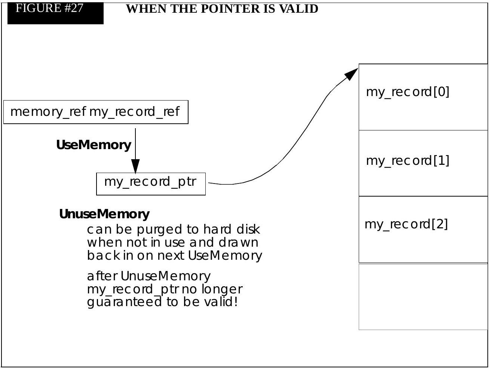
Unuse memory
Once you are finished using the pointer returned from UseMemory or UseForLongTime, call the following:
(void) UnuseMemory (memory_ref ref);
Essentially, UnuseMemory decrements ref's access counter. If its access counter goes to zero, the allocation is then free to relocate or purge.
It is therefore important that all UseMemory and UseForLongTime calls get eventually balanced with UnuseMemory, otherwise unwanted locked memory fragments will result.
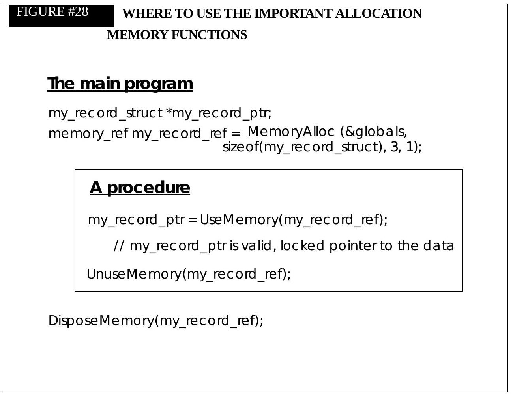
25.11 "Random-Access" Pointers
You can obtain a pointer to a specific "record" within a block of memory by calling the following:
(void PG_FAR*) UseMemoryRecord (memory_ref ref, long wanted_rec, long seq_recs_used, short first_use);
This function is similar to UseMemory except a pointer to a specified record of an allocation is returned.
The wanted_rec is the (zero-indexed) record number you need a pointer to. The record size (originally defined in rec_size for MemoryAlloc) determines which physical byte the resulting pointer will reference. For instance, if the record size were, 128 bytes, a UseMemoryRecord for wanted_rec of 10 would return a pointer to the 1280th byte.
The seq_recs_used parameter should indicate how many additional sequential records beyond wanted_rec record you want access to. The purpose of this parameter is for future Allocation Manager enhancements in which partial block(s) can be loaded into memory from a purged state. In such a case, UseMemoryRecord needs to know how many additional sequential records, besides wanted_rec, you would like to have loaded into memory if the allocation has been purged.
For example, suppose a block of memory consisting of 1000 records is temporarily purged (which really means its contents have been saved to a "scratch" file and the block currently does not physically exist in memory). Full access to all records would require the Allocation Manager to load the entire allocation (all 1000 records). UseMemoryRecord, however, could get away with loading only a few records within that allocation, but it needs to know how many sequential records you intend to access beyond wanted_rec.
If you want to use all records following wanted_rec, whatever that quantity might be, you can also pass USE_ALL_RECS (value of -1) for seq_recs_used.
If first_use is TRUE, the block's access counter is incremented (same thing as results from a UseMemory call); if first_use is FALSE, the access counter remains unchanged. The purpose of this parameter is for situations where you intend to randomly access many records from the same memory_ref within the same routine, but you essentially need only one UseMemory to lock the allocation; otherwise, you would need to balance every random access with UnuseMemory.
Thus, setting first_use to TRUE is essentially sending the Allocation Manager the message, "Please lock the allocation," then subsequent UseMemoryRecord calls with first_use as FALSE is like saying, "I know the allocation is already locked, so just give me another pointer."
An UnuseMemory call must eventually balance each UseMemoryRecord call that gave TRUE for first_use.
NOTE: HERMES Paige loads the whole allocation specified in UseMemoryRecord (does not do partial loads). However, to guarantee future compatibility, you should assume that all records in the allocation lower than wanted_rec and all records greater than wanted_rec + seq_recs_used are purged, not loaded, and therefore not valid should you attempt to access them with the same pointer.
25.12 "Quick Record"
If you simply want a copy of a single record from an allocation, call the following:
void GetMemoryRecord (memory_ref ref, long wanted_rec, void PG_FAR *record);
Record number wanted_rec (zero-indexed) in ref is copied to the structure pointed to by record. The access counter in ref is unchanged. Hence, GetMemoryRecord provides a way to get a single record without the need to balance UseMemory and UnuseMemory.
It is your responsibility to make sure record is sufficient size to hold a record from ref.
NOTE:GetMemoryRecord will work correctly regardless of the memory_ref's access counter state and regardless of whether or not the allocation has been purged.
25.13 Changing Allocation Sizes
Memory sizes
(void) SetMemorySize (memory_ref ref, long wanted_size);
(long) GetMemorySize (memory_ref ref);
SetMemorySize changes the logical size of ref to wanted_size. GetMemorySize returns the logical size of ref.
For both functions, the "size" is not a byte size, but rather a record quantity. A SetMemorySize(ref, 10) for an allocation whose record size is 500 bytes, the allocation is set to 5000 bytes, i.e. 10 * 50; SetMemorySize(ref, 10) for a 1-byte record size allocation would result in a logical byte size of 10, and so on.
If SetMemorySize fails for any reason, an HERMES Paige exception is raised (see chapter 26, Exception Handling).
GetMemorySize returns the current size of (i.e., number of records within) ref.
Changing the size of an allocation whose access counter is non-zero might fail! (A non-zero access counter means sufficient UnuseMemory calls have not been made to balance UseMemory calls, resulting in a locked allocation).
NOTE:GetMemorySize will work correctly regardless of the memory_ref's access counter state and regardless of whether or not the allocation has been purged.
GetMemoryRecSize returns the record size in ref (which will be whatever size you gave MemoryAlloc or MemoryAllocClear when the allocation was made). This function is useful for generic functions that need to know a memory_ref's record size.
GetByteSize returns the byte size of ref (as opposed to the number of records as in GetMemorySize). Essentially a memory_ref's byte size is its record size times number of logical records.
NOTE: Both functions above will work correctly regardless of the memory_ref's access counter state and regardless of whether or not the allocation has been purged.
TECH NOTE: A bigger or smaller record size
Can I make my record size bigger after it is allocated?
No. You can only change the number of records. You can create a new memory_ref and copy the old data into the new one using pgBlockMove.
25.14 Insert & Delete
(void PG_FAR*) InsertMemory (memory_ref ref, long offset, long insert_size);
(void PG_FAR*) AppendMemory (memory_ref ref, long append_size, pg_boolean zero_fill);
InsertMemory — inserts insert_size records into ref's allocation at record position offset, then returns a pointer to the first record inserted. The new record(s) are not initialised to anything—the allocation size is simply increased by insert_size and one or more record(s) is moved to make room for the insertion.
AppendMemory — does the same thing except the "insertion" is added to the end of the memory block: the allocation is increased by append_size and a pointer to the first record of the appendage is returned. If zero_fill is TRUE, the appended memory is cleared to zeros.
Both InsertMemory and AppendMemory assume record quantities, not byte sizes (i.e., InsertMemory for a ref whose record size is 100 will insert 200 bytes if insert_size = 2).
For both functions, the access counter in ref is incremented (or not) according to the following rules:
if ref's access counter is zero upon entry, the requested memory is inserted, the access counter is incremented by 1, and the allocation is set to its "used" state (locked, unpurgeable);
if the access counter is 1 upon entry, it is decremented to zero and unlocked, the requested memory is inserted, then the access counter is incremented and the allocation is set to its "used" state;
if the access counter is greater than 1, nothing occurs and the situation is considered illegal, generating an error if debugging has been enabled (see section 25.18, Debug Mode).
The reasoning behind these rules for the access counter when inserting memory is the common situation wherein multiple insertions need to occur within a loop. Since InsertMemory and AppendMemory allow an access counter of 1, each repetitive insertion can avoid the requirement of calling UnuseMemory.
CAUTION: For insertions with an access counter of 1, the pointer you had prior to InsertMemory or AppendMemory might be invalid after memory has been inserted (the block might relocate). Therefore, always update your pointer with whatever is obtained from the function result.
TECH NOTE: UnuseMemory after InsertMemory or AppendMemory
So do I need to do a UnuseMemory after these?
InsertMemory and AppendMemory really are the same as SetMemorySize to a larger number of records, then a (single) UseMemory. So you need to do a single UnuseMemory() after a series of repetitive inserts. In other words, if you called InsertMemory() or AppendMemory() 100 times, you only need to do oneUnuseMemory().
struct my_special_struct
{
short index_number;
}
for (i = 0, i < 100, i++)
{
my_new_record = InsertMemory(the_ref, i, sizeof(my_special_struct));
my_new_record.index_number = i;
}
UnuseMemory(the_ref);
Delete
(void) DeleteMemory (memory_ref ref, long offset, long delete_size);
DeleteMemory deletes delete_size records in ref beginning at offset. Both delete_size and offset are record quantities, not bytes.
The access counter is not changed by this function. However, the access counter must be zero when this function is called.
25.15 Purging Utilities
NOTE: All references in the Chapter to "purging" and "purged blocks" imply virtual memory, in which a block's contents are saved to a scratch file so that the allocation can be temporarily disposed. If the scratch file was not set up when the Allocation Manager was initialised, there will be no purging.
NOTE: The topic covered herein is not to be confused with "purging" resources on the Mac. Allocation Manager knows nothing about the Mac other than basic things about the file system. It handles its own "purging" without the Resource Manager.
An allocation is said to be "purged" when additional memory space needs to be freed, thus an allocation is saved to a "scratch" file and it is temporarily disposed.
Purge priorities
The priority for purging, i.e., what memory_refs should get purged first, can be controlled by calling the following:
(void) SetMemoryPurge (memory_ref ref, short purge_priority, pg_boolean no_data_save);
The ref allocation's purging priority is set to purge_priority. The purge_priority can be any number between 0 and 255, with 0 as the lowest priority (will get purged first above all others). The purge_priority parameter can also be NO_PURGING_STATUS (OXFF), in which case it will never be purged.
If no_data_save is TRUE, the contents of ref do not need to be saved to a scratch file when purged. Another way to state this is a ref with TRUE for no_data_save is known to have nothing in its contents of any value or consequence; thus, Allocation Manager can simply purge it without saving any of its contents.
An example of a memory_ref that could be set for no_data_save would be an "offscreen bitmap" buffer. After it is used to transfer an image, an application might not care if all its contents get temporarily disposed, because on the next usage whole new contents (new bits) will be created all over again anyway.
Notes
This function will still work regardless of ref's access counter state and regardless of whether or not it is purged.
A memory_ref whose access counter is nonzero will not be purged, even if its purge priority is zero.
Setting NO_PURGING_STATUS on a memory_ref that has already been purged will not take effect until it is unpurged. In other words, changing purge status does not automatically reload purged allocations—you still need to access its pointer (such as UseMemory) if you want its contents loaded into memory.
Purging memory
(pg_error) MemoryPurge (pgm_globals_ptr globals, long minimum_amount, memory_ref mask_ref);
MemoryPurge will purge memory_ref(s) until at least minimum_amount of memory (in bytes) has become available.
The globals parameter must be a pointer to the same structure given to MemoryAlloc (which is also the mem_globals field within the structure given to pgInit).
If mask_ref is non-null, that memory_ref is considered "masked" (protected) and will not be purged during this process.
All purgeable, unlocked allocations will be purged, one at a time and in the purge priority they are set for (lowest purge priorities are taken first) until minimum_amount of available space has been achieved.
If minimum_amount fails to become available, even after purging every eligible allocation, MemoryPurge will return an error (see chapter 39, Error Codes); if successful, the function result will be NO_ERROR (0).
The minimum_amount specified is for the total memory available, which means if there is already enough or nearly as much available as minimum_amount, very little will get purged.
Notes
The amount of "available memory" is based on what was given to pgInit for max_memory minus the total physical sizes of all existing memory_refs—see pgInit.
You normally do not need to call this function since MemoryPurge gets called for you as required for allocations and resizing blocks. The function has been provided mainly for freeing memory for objects that you are not allocating with the HERMES Paige Allocation Manager.
Even though this function might return no error (success), that still does not necessarily guarantee a block of minimum_amount can be allocated, because the available memory might not be contiguous.
GetGlobalsFromRef returns a pointer to pgm_globals located from an existing memory_ref. This function is useful for situations where you do not have access to the globals structure. Any valid, non-disposed memory_ref, locked or unlocked, purged or not, can be used for ref. For more information on getting pgm_globals_ptr see technical note, Get globals from pg_ref, paige_rec_ptr, etc..
HandleToMemory accepts Handleh and returns a memory_ref for that Handle.
FUNCTION RESULT: After this function is called, the Handle is now "owned" by the Allocation Manager, which is to say you should no longer access nor dispose that Handle. Access to the Handle's contents must thenceforth be made using the functions given above (UseMemory, UseMemoryRecord, etc.).
The mem_globals parameter must point to the same structure as given to MemoryAlloc.
The rec_size must contain the record size for the new memory_ref, which must be an even multiple of the original Handle. If unknown, then make rec_size = 1.
It does not matter if Handleh is locked or unlocked, but it should at least temporarily be unpurgeable.
MemoryToHandle performs the reverse: it returns a Handle built from memory_refref. Again, once this call is made, ref is no longer valid and must not be given to any Allocation Manager functions.
NOTE: The term Handle is typedefed from the Windows HANDLE, so the two terms are synonymous.
NOTE: These functions do not perform huge copies. Rather, they convert Handles to memory_refs and vice versa by appending some special information before and after the data contents, or removing this appendage. So it is generally safe to do HandleToMemory, MemoryToHandle under fairly tight situations that could not withstand the doubling of a Handle's size.
25.18 Debug Mode
There are two compiled versions of HERMES Paige software, one for "debug mode" and one or "non-debug" or runtime mode.
In debug mode, memory_refs are checked for validity, including the verification of appropriate access counters, each time they are given to one of the functions listed above. While this significantly reduces the speed of execution, it does aid substantially in locating bugs that would otherwise crash your system.
For example, calling SetMemorySize for an allocation that is currently "in use" (access counter nonzero) could fail and/or crash your program. Under debug mode, however, you would be warned immediately if an attempt to change the size of an allocation was made on a locked block.
Object Code Users (Macintosh)
There are two sets of Macintosh (or Power Mac) object code libraries: one for "debug" and the other for "non-debug." As a general rule, you should use the debug versions to develop your application, then switch to non-debug before release (non-debug runs much faster).
NOTE: Object code for "debug" mode is not supported on Windows. This is because Windows General Protection Mode can be used instead and is generally superior.
Source Code Users
Debug/non-debug is controlled by the following #ifdef in CPUDefs.h:
#define PG_DEBUG
If that #define exists, the source files are compiled in "debug" mode.
To run HERMES Paige debug libraries, you must include pgDebug.c in your project. When doing so, you can place a source-level debugger break at the location shown below; when the Allocation Manager detects a problem, the code will break at this spot.
NOTE: The error message string is a pascal string.
Debug Assert Messages
The debugger assert is simply a debugger break with one of the following messages:
Out of memory — Block of requested size cannot be allocated (or block cannot be resized). If virtual memory has been enabled, this will only happen if the block is so huge there is insufficient, contiguous memory available.
Purge file not open — Memory needs to be purged but "scratch" file doesn't exist or is closed.
Attempt to resize locked memory — Allocation is locked, yet a SetMemorySize has been attempted.
NIL memory_ref — memory_ref is a null pointer and/or an address inside of it is null.
Bogus memory_ref address — An address in a memory_ref is bad (would result in a bus error for Mac).
Internal damage in memory_ref — memory_ref's address OK but certain characteristics are missing (so it is assumed “damaged" or overwritten).
Overwrite error — last 1 of 4 bytes beyond the logical size of a memory_ref has been overwritten.
Access counter invalid for operation — access counter is illegal for given function. Examples:
SetMemorySize and access != 0 (illegal);
UnuseMemory and access counter == 0 (illegal);
DisposeMemory and access counter != 0 (illegal).
Bogus memory_ref — memory_ref given is not a memory_ref but some other address.
Operation on disposed memory_ref — memory_ref given has been disposed.
Error in purging — An allocation was writing to a scratch file and I/O error resulted (such as out of space).
Error in un-purging — Read error occurred while recovering a purged allocation from scratch file.
Attempt to access record out of range — UseMemoryRecord asking for a record beyond the size of the allocation.
Structure integrity failed — Structural damage has occurred to the style_info or par_info run. For example, a style run might (incorrectly) reference a style_info that does not exist.
25.19 Writing Your Own Purge Function
The standard purge function is a built-in part of the Allocation Manager that purges (disposes) memory that is not being used to make room for new allocations. The blocks to be purged are saved to a "temp" file so they can be resurrected later when asked to be used by HERMES Paige or by the application.
If necessary, you can replace the standard purge function with one of your own. To do so, first declare a function as follows:
PG_FN_PASCAL pg_error my_purge_proc (memory_ref ref_to_purge, pgm_globals_ptr mem_globals, short verb);
In the pgm_globals structure (same one passed to MemoryAlloc), the purge field contains a pointer to the purge function. What you need to do is place a pointer to your purge function, as defined above, into that field:
paige_rsrv.mem_globals.purge = my_purge_proc;
The paige_rsrv variable is the same structure given to pgInit, and mem_globals is the Allocation Manager subset (same one given to MemoryAlloc).
When the Allocation Manager purges memory, it locates memory refs that are purgeable and passes each of them, one at a time, to the purge function; additionally, when a memory_ref needs to be reloaded (unpurged), the purge function is called again to unpurge the data. The standard purge function handles this by saving the contents of the memory_ref to a temporary file, then setting the ref's byte size to sizeof(mem_rec); then when unpurging, the allocation is resized to the original size and data is read from the temp file.
The temporary file reference used by the standard purge function is stored in the purge_ref_con field in pgm_globals (see Memory globals under section 25.17).
In addition to purging and unpurging, the purge function is also called to initialise "virtual memory" and to completely dispose an allocation that is currently purged.
Whether the purge function is getting called to purge, unpurge, initialise or dispose an allocation depends on the verb parameter, which will be one of the following:
typedef enum
{
purge_init, // Initialise VM
purge_memory, // Purge the reference
unpurge_memory, // Unpurge the reference
dispose_purge // Purged ref will be disposed
};
For each verb, the purge function must perform the following:
purge_init — "Virtual Memory" must be set up. When purge_init is the reason for the function call, ref_to_purge will be NULL. The standard function initialises the temporary file (whose file reference will already be contained in mem_globals > purge_ref_con).
purge_memory — The ref_to_purge memory must be purged. The Allocation Manager will only call with purge_memory if the reference is not yet purged; i.e., it won't try to purge the same reference twice. The standard purge function saves ref_to_purge's data to the temporary file and sets the physical allocation size to sizeof(mem_rec).
unpurge_memory — The ref_to_purge memory must be unpurged. The Allocation Manager will only call with unpurge_memory if the reference has been purged; i.e., it won't try to unpurge the same reference twice. The standard purge function resets the physical size of ref_to_purge and loads the data from the temporary file.
dispose_purge — The ref_to_purge is already purged but is about to be disposed. The purge function does not dispose the memory; rather, it does whatever is necessary knowing that the purged allocation will be disposed forever. The standard purge function "deletes" the saved data on the temp file, and does nothing else.
FUNCTION RESULT: The purge function should return NO_ERROR (zero) if all was successful; otherwise it should return the appropriate error code per pgErrors.h.
Memory Globals
The following structure is used by the Allocation Manager (and is also a subset of pg_globals):
struct pgm_globals
{
short signature; /* Used for checking/debugging */
pg_short_t debug_flags; /* Debug mode, if any */
pg_handle master_handle; /* HANDLE for master list (Windows only) */
pg_handle spare_tire; /* Used to free up some memory in tight situations */
master_list_ptr master_list; /* Contains list of all active memory_refs */
size_t next_master; /* Next available space in master_list */
size_t total_unpurged; /* Total # of bytes allocated not purged */
size_t max_memory; /* Maximum memory (set by app) */
size_t purge_threshold; /* Amount extra to purge */
void PG_FAR *machine_var; /* Machine-specific generic ptr */
mem_debug_proc debug_proc; /* Called when a bug is detected */
purge_proc purge; /* Called to purge/unpurge memory */
free_memory_proc free_memory; /* Called to free up miscellaneous memory */
long purge_ref_con; /* Reference for purge proc */
memory_ref purge_info; /* Machine-based purge information */
memory_ref freemem_info; /* List of pg_ref(s) for cache feature (2.0) */
long next_mem_id; /* Used for unique ID's assigned to refs */
long current_id; /* ID to use for MemoryAlloc's */
long active_id; /* Which ID to suppress, if any, for purging */
long last_message; /* Last message in exception handling */
pg_fail_info_ptr top_fail_info; /* Current exception in linked list */
void PG_FAR * last_ref; /* Last reference - used by external failure
processing TRS/OITC */
pg_error_handler last_handler; /* Last app handler before Paige */
pg_error last_error; /* Last reported error */
#ifdef PG_DEBUG
memory_ref debug_check; /* Used for special-case debugging */
memory_ref dispose_check; /* Used for special-case debugging on DisposeMemory */
short debug_access; /* Used with above field */
#endif
void PG_FAR *app_globals; /* Ptr to globals for PAIGE, etc. */
long creator; /* For Mac file I/O */
long fileType; /* For Mac file I/O */
};
For more information on pg_globals, see section 3.8, Changing Globals. For more information on error codes, see chapter 39, Error Codes.
26 EXCEPTION HANDLING
26.1 The TRY/CATCH Mechanism
HERMES Paige provides a fairly straightforward method of detecting runtime errors (such as disk I/O errors, memory errors, etc.) without the requirement of checking every function result or excessive code.
This is accomplished by using a set of predefined macros: PG_TRY, PG_CATCH, and PG_ENDTRY.
Although this mechanism is patterned after exception handling in C++, you do not need to be using C++ to utilise HERMES Paige error detection features (nor are any C++ "header" files or libraries required).
Anywhere in your application that calls an HERMES Paige function that can fail for "legitimate" reasons, such as allocating memory or reading/writing files, you simply bracket your code as follows:
PG_TRY (&mem_rsrv)
{
/* ... make calls to HERMES Paige functions here such as allocating memory, or pgNew, or pgCopy, etc -- anything that can abort from an error. */
}
PG_CATCH
{
/* ... if any error causes HERMES Paige to abort a function, this part of your code is executed; otherwise this part is not executed. Hence you would do whatever is appropriate here such as an error alert to user. */
}
PG_ENDTRY;
{
/* ... code is executed here if no error; also it is executed here if the code under PG_CATCH does nothing to abort the program any further. */
}
The above example shows the simplest form of error detection: none of the code under PG_TRY is necessarily required to check for errors at all since anything fatal within HERMES Paige (such as out of memory or a disk error) will throw CPU execution into the first line of code under PG_CATCH. This is done automatically.
The parameter mem_rsrv after PG_TRY must be a pointer to the global structure given to pgMemStartup earlier (see "Software Startup" for information about pgMemStartup).
NOTE:PG_TRY, PG_CATCH, and PG_ENDTRY macros are automatically available by including Paige.h (the actual definitions for these exist in pgExceps.h which is #included in Paige.h).
26.2 Last Error
If your code executes under PG_CATCH that means HERMES Paige aborted something due to a fatal error. You can learn what the error code was by examining the memory globals (same structure given to PG_TRY) as follows:
mem_rsrv.last_error;
26.3 Nested TRY/CATCH
PG_TRY, PG_CATCH, and PG_ENDTRY can be "nested" throughout your application, in as many places as required. What literally occurs is that the CPU gets forced to the PG_CATCH that corresponds to the most recent PG_TRY; then if the code under PG_CATCH decides to abort that section of code, it can force an additional exception using pgFailure (given below), in which case the next most recent PG_CATCH (from some other place in your program, if any) gets executed. In short, TRY and CATCH can be effectively "daisy chained" in this fashion so any fatal error can cycle up through any level of nested subroutines - pall without the need to even check for errors!
26.4 Refinements
There are many situations where your code might need to "force" an exception after detecting additional errors while executing code between PG_TRY and PG_CATCH. There are also many situations where your PG_CATCH code needs to abort the entire
subroutine, returning control to some other part of the program. The following functions are available for this purpose:
(void) pgFailure (pgm_globals_ptr globals, pg_error error, long message);
This function forces unconditional execution to the code under PG_CATCH that belongs to the most recent PG_TRY. For example, if you use pgFailure while executing the code under PG_TRY, then the first line under PG_CATCH in that section will get executed; if you use pgFailure under PG_CATCH, then the first line under PG_CATCH belonging to the previous PG_TRY (somewhere higher up in your program) gets executed. You would most often use pgFailure when executing PG_CATCH to completely abort an operation.
The globals parameter must be a pointer to pgm_globals (same structure given in pgMemStartup). The error and message parameters are stored in globals -> last_error and globals -> last_message, respectively, and can be any value(s) appropriate.
This function can be used to force an exception if allocation parameter is a null pointer. The globals parameter must be a pointer to pgm_globals (same structure given in pgMemStartup).
What actually occurs when pgFailNIL is called is the following:
if (!allocation)
pgFailure(globals, NO_MEMORY_ERR, 0);
#include "pgSetJmp.h" // which is included in Paige.h
(void) pgFailError(pgm_globals_ptr globals, pg_error error);
This function can be used to force an exception if error parameter is non-zero. The globals parameter must be a pointer to pgm_globals (same structure given in pgMemStartup).
What actually occurs when pgFailError is called is the following:
if (error)
pgFailure(globals, error, 0);
#include "pgSetJmp.h" // which is included in Paige.h
(void) pgFailError(pgm_globals_ptr globals, pg_error acceptable_error, pg_error actual_error);
This function can be used to force an exception if actual_error parameter is non-zero and it does not equal acceptable_error. The globals parameter must be a pointer to pgm_globals (same structure given in pgMemStartup).
A typical use of this function is to force an exception for file I/O errors unless the error is nonfatal. For example, there might be some code that keeps reading a data file until end-of-file error occurs. In such a case, you would want to abort if an error was detected other than end-of-file error.
What actually occurs when pgFailNotError is called is the following:
if (error)
if (actual_error != acceptable_error)
pgFailure(globals, actual_error, 0);
#include "pgSetJmp.h" // which is included in Paige.h
(void) pgFailBoolean(pgm_globals_ptr pgm_globals_p, pg_boolean b);
This function can be used to force an exception if b is TRUE. The globals parameter must be a pointer to pgm_globals (same structure given in pgMemStartup).
What actually occurs when pgFailBoolean is called is the following:
if (b)
pgFailure(globals, BOOLEAN_EXCEPTION, 0);
26.5 Bridging to C++ Exceptions
If you are using C++ and its TRY/CATCH mechanism, you can "bridge" an HERMES Paige failure to the standard C++ exception handling by calling "Failure" (defined in C++ headers). Here's an example:
Let's take a simple but common example of using this method to detect insufficient memory when attempting to create a memory_ref. Here's how it would look (the
mem_globals variable is the same structure that you gave to pgMemStartup when you initialise HERMES Paige):
{
memory_ref SomeAllocation;
PG_TRY(&mem_globals)
{
SomeAllocation = MemoryAlloc(&mem_globals, 1, 100000, 0};
/* More code follows, but only gets executed if above allocation was successful. */ }
/* If above code succeeded, PG_CATCH does *NOT* get executed. */
PG_CATCH
{
/* If it gets here, your allocation failed! */
DisposeFailedMemory(&mem_globals);
CautionAlert( ... ) /* Alert user that attempt failed or whatevs */
}
PG_ENDTRY;
/* ^^ Must be given to balance PG_TRY statement */
When you execute the above code, by virtue of making the PG_TRY statement, HERMES Paige now knows that any failure to create memory should invoke the exception handler and jump to your PG_CATCH statement. Hence, if MemoryAlloc fails, the CPU is immediately forced to the line that contains PG_CATCH. At that place in your code you can do whatever to recover or alert the user or raise your own exception, etc.
The above example is the simplest of all cases since it only creates one memory_ref, hence, there really is nothing to "recover." It gets slightly more involved when you create, say, multiple memory_refs and you need to dispose the allocations that succeeded. One way to handle this is by setting them all to NULL so you know which ones succeeded in PG_CATCH:
{
memory_ref allocation1, allocation2, allocation3;
allocation1 = allocation2 = allocation3 = MEM_NULL;
/* ^^^ set all to zero ^^^ */
PG_TRY(&mem_globals)
{
allocation1 = MemoryAlloc(&mem_globals, 1, 100000, 0);
allocation2 = MemoryAlloc(&mem_globals, 1, 100000, 0);
allocation3 = MemoryAlloc(&mem_globals, 1, 100000, 0);
}
/* if ALL above code succeeded, PG_CATCH does not get executed */
PG_CATCH
{
/* if it gets here, ONE of the allocations failed! */
if (allocation1)
DisposeFailedMemory(allocation1);
if (allocation2)
DisposeFailedMemory(allocation2);
if (allocation3)
DisposeFailedMemory(allocation3);
}
{
PG_ENDTRY;
}
}
In the above example, PG_CATCH gets automatically executed upon the first failure of the three MemoryAllocs. At that time, we dispose only the memory_refs that are non-NULL (which means they were successfully created).
NOTE: We call DisposeFailedMemory instead of DisposeMemory. This is a special "dispose" that HERMES Paige provides for this case. It disposes the memory_ref regardless of its locked or "used" state so it doesn't jump into the low-level debugger.
Own error checking
The previous examples illustrate where HERMES Paige itself, by virtue of MemoryAlloc, automatically invokes the exception handler. There will be other cases, however, when you want to cause a similar exception for your own error checking (but you haven't called an HERMES Paige function). One example of this would be calling NewHandle and having it return NULL (this indicating it failed). Here's how to do that:
{
Handle h;
PG_TRY(&mem_globals)
{
h = NewHandle(100000);
pgFailNIL(&mem_globals, h);
/* Jump to PG_CATCH if h == nil */
}
// more code if above succeeds
PG_CATCH
{
/* if it gets here, NewHandle() failed */
}
PG_ENDTRY;
}
In the above, we use pgFailNIL, which checks for h being a null pointer and if so, throws an exception (causing PG_CATCH immediately to execute).
There are other pgFailxxx functions to raise an exception in other ways. Using pgFailure, for example forces an exception unconditionally (see pgSetJmp.h to see the various functions and/or the docs on this).
There is the possibility you might need to recover from a failed pgNew (also pgCopy would be same thing). You do this the same way as in my second example of creating allocations—except that, for a pg_ref, you call a special error-recovery dispose:
{
pg_ref MyNewPG;
pg_ref = MEM_NULL;
PG_TRY(&mem_globals)
{
MyNewPG = pgNew(.., ..);
}
/* If ALL above code succeeded, "PG_CATCH" does NOT get executed. */
PG_CATCH
{
/* If it gets here, then HERMES Paige did not succeed and raised an exception */
pgFailureDispose(MyNewPG);
}
PG_ENDTRY;
}
The function pgFailureDispose is called for situations like the above when none or only part of the pg_ref may have been created.
NOTE:pgFailureDispose can accept a "null" pg_ref, so if you initially set the pg_ref to MEM_NULL you can pass it to pgFailureDispose safely.
TECH NOTE: Get globals from pg_ref, paige_rec_ptr, etc.
So I am buried deep within a bunch of functions and I need to do a PG_TRY/PG_CATCH.
All I have is a pg_ref.
How do I get the globals I need for PG_TRY?
The availability of "memory globals" will generally depend on the kind of program you are developing.
In a regular application, you generally keep memory globals around as a static record that is accessible by any module of the program. Hence, the "availability" of globals is merely a matter of design, usually by including the necessary application header file. Example:
//Inside one of your application headers:
extern pg_globals pgm_globals mem_globals;
Hence, mem_globals is available anywhere you include the above header.
For certain circumstances where only a memory_ref (or a pg_ref) is available, however, you can also get the memory globals by calling GetGlobalsFromRef.
Suppose, for instance, all you had available is ref, where ref is a memory ref (or a pg_ref). You can get a copy of memory globals as follows:
Because of the workload involved, chapter 27 ("Customising HERMES Paige") is intentionally missing. The issue will be rectified but for now, users are referred to chap27.pdf in this directory.
28 Embedding Non-Text Characters
28.1 Inserting graphics & user items
DEFINITION: A non-text character is a graphic display embedded into the text stream of an OpenPaige document, such as a picture, box or special string (such as a page number, footnote, etc.). It is not an ASCII byte as such, but otherwise looks and behaves like an ordinary character. It can be clicked, deleted, cut, copied, and pasted.
The purpose of this chapter is to explain the built-in, high-level support for these special characters.
DISCLAIMER
There are several undocumented references in pgEmbed.h. If anything in that header file is not explained in this chapter, it is not supported. The purpose of these definitions is for possible future enhancement and/or custom development by DataPak Software, Inc.
Description
OpenPaige provides a certain degree of built-in support for graphic characters. For the Macintosh version, PicHandles (pictures) can be inserted into the text stream with practically no support required from your application. For the Windows version, meta files can be inserted in the same way.
For other graphic types and/or "user items" (custom characters), OpenPaige supports a variety of user-defined non-text character insertions; your application can then handle the display and other rendering through a single callback function.
All the functions documented in this chapter are prototyped in pgEmbed.h. You therefore need to include this header file to use the structures, functions and callbacks.
28.2 The embed_ref
The first step to embedding a non-text character is to create an embed_ref:
embed_ref pgNewEmbedRef (pgm_globals_ptr mem_globals, long item_type, void PG_FAR *item_data, long modifier, long flags, pg_fixed, vert_pos, long user_refcon, pg_boolean keep_around)
This function returns a special memory_ref that can be subsequently inserted into a pg_ref as a "character". Once you have created an embed_ref, call pgInsertEmbedRef() below.
mem_globals — must be a pointer to your memory globals (same structure that was also given to pgMemStartup and pgInit).
item_type — indicates the kind of object you want to create. This value can be any value shown in "Embed_Ref Types”.
item_data, modifiers — What you provide in item_data and modifiers depends on the item_type; these are also described in "Embed Reference Types."
flags — should be set to zero (with some unusual exceptions - "Special Cases").
vert_pos — Its purpose is to indicate a descent value for the object you will be inserting. By descent is meant the amount the item should be offset vertically below the baseline.
If vert_pos is positive, it is considered to be a percent of the item's total height. If vert_pos is negative, it is considered to be a pixel value. Carefully note that in both cases, vert_pos is a Fixed value — the high-order word is the whole part and the low-order word is the fraction.
For example, if vert_pos is 0x000A0000, the embed_ref will be offset 10% of its total height from the text baseline. If vert_pos is 0xFFFEFFFF (negative 0x00020000), the item will be offset 2 pixels below the text baseline, etc.
The following illustrations show a typical embed_ref's descent values for different vert_pos values:
The above shows the result of an embed_ref with vert_pos = 0 (no descent from baseline).
The above shows the result of an embed_ref with vert_pos = 50.00 (descent is 50% of height).
The above shows the result of an embed_ref with vert_pos = -3 (descent is 3 pixels)
user_refcon — is saved inside the embed_ref itself, and can be anything.
keep_around — indicates whether or not the embed_ref can be automatically disposed once it is no longer being used within any existing pg_ref. If this value is FALSE then OpenPaige is authorized to dispose of it once it is no longer being used by any pg_ref; a TRUE value tells OpenPaige it must never dispose it even if no pg_ref contains the embed_ref.
To understand the full meaning of keep_around, the deceloper should realise that an embed_ref can be "shared" by multiple positions in a document, and even between different documents. For example, if the user performs multiple copy/paste operations on a single embed_ref, OpenPaige won't actually duplicate the embed_ref; rather, it simply creates multiple pointers to its data.
However, once the last remaining shared copy of the reference is deleted, OpenPaige will dispose the memory_ref (if keep_around = TRUE). Normally, this is what you would want.
NOTE: If keep_around is FALSE you should never dispose the embed_ref (OpenPaige will dispose of it at the appropriate time). If keep_around is TRUE then you need to eventually dispose the reference with pgDisposeEmbedRef().
28.3 Inserting the embed_ref
pg_boolean pgInsertEmbedRef (pg_ref pg, embed_ref ref, long position, short stylesheet_option, embed_callback callback, long callback_refcon, short draw_mode);
This function inserts an embed_ref as a "character" into pg at the specified text location. The position parameter indicates the text offset (relative to zero) to insert the embed_ref; the position parameter can also be CURRENT_POSITION which causes the insertion to occur at the current insertion point.
stylesheet_option — is an optional stylesheet ID that gets automatically applied to the embed_ref "character". If you merely want to use whatever style applies to the text position, pass zero for stylesheet_option, otherwise you need to create a new stylesheet and provide that stylesheet ID.
callback — is a pointer to a function (in your application) that will be called for various occurrences; the purpose of this callback is to handle custom characters and/or to modify the default behavior of standard embed_refs. However, if you want OpenPaige to handle the embed_ref in the default way, pass NULL for callback.
NOTE: Only certain embed_ref types are supported with a "default behaviour", and therefore only those types will work correctly if you pass NULL for callback; see section 28.4, Embed Ref Types. below.
callback_refcon — value can be anything you want; this same value will be given to your callback function. If you have not supplied a callback function (callback = NULL), this parameter does not matter.
draw_mode — indicates whether or not to redraw the text after the embed_ref is inserted; the value you pass for this parameter is identical to all other OpenPaige functions that accept a draw_mode.
Notes and Cautions
Value callback_refcon given to pgInsertEmbedRef is not to be confused with user_refcon given to pgNewEmbedRef; they are entirely separate. The user_refcon given to pgNewEmbedRef is stored within the embed_ref itself, and the same embed_ref can exist as multiple copies throughout a document; the callback_refcon is specific to the insertion itself and can be different
for all occurrences of the embed_ref. The callback_refcon is stored in the style_info that is applied to the insertion, and is also passed to your callback function (if one exists).
The user_refcon will always be whatever value you passed to pgInsertEmbedRef() in the callback_refcon parameter except for EMBED_READ_DATA and EMBED_WRITE_DATA, in which case the user_refcon will be the original user_refcon value given to pgNewEmbedRef().
Do not insert the same embed_ref more than once unless you have created it with keep_around = TRUE. Otherwise, OpenPaige can dispose it prematurely and your program will crash. Once it has been inserted, however, it is OK to copy and paste that character to as many documents as memory permits.
Once the embed_ref has been inserted, OpenPaige "owns" its memory, i.e. you must not dispose of it as long as it exists in any pg_ref (and, if you passed FALSE for keep_around in pgNewEmbedRef(), you must not dispose of it at all, at any time).
The Style Sheet Option
Any embed_ref has the option to alter the style and/or font of the text it applies to.
For example, a string-type embed_ref (embed_alternate_char) will normally assume the style and font of the text where it was embedded; however, by passing a non-zero stylesheet_id number in stylesheet_option in pgInsertEmbedRef or pgSetEmbedRef, the style or font can be overridden.
A stylesheet_id is obtained by first creating a new style_info record and adding it to the pg_ref as a new style sheet (see chapter 31, "Style Sheets"). The stylesheet_id is then given to the stylesheet_option parameter, in which case the text for which the embed_ref applies will assume that style.
However, a style sheet applied to an embed_ref works slightly differently than normal styles: only the non-zero items in the style_info record of the stylesheet are applied.
For example, let us suppose that a new style sheet is created with every field in its style_info record set to zero except for the italic attribute. If this style sheet is applied to an embed_ref, the text is forced to italic but retains all other attributes (same point size as before, same font, etc.).
The following is an example of applying italic to an embed_ref; note that the embed_ref text retains all style and font characteristics except that it is italicised:
style_info new_sheet;
short stylesheet_id;
pgFillBlock(&new_sheet, sizeof(style_info), 0); // Fill with all zeros
style_info.styles[italic_var] = -1; // Set for italic
stylesheet_id = pgNewStyle(pg, &new_sheet, NULL);
// Now include in "stylesheet_option":
pgSetEmbedRef(pg, ref, NULL, stylesheet_id, 0, best_way);
If you want to change only the font in the embed_ref text, use the same example as above except omit changing the italic attribute and pass a font_info record instead of NULL for pgNewStyle.
28.4 embed_ref Types
The following table describes each possible embed_ref data type and what you should pass in the item_data and modifier parameters for pgNewEmbedRef(). The Support column indicates which OpenPaige platform supports the data type. All the items listed are supported to some extent; i.e., none of them require a callback function to render a default behavior.
NOTE:If the data type is not listed, there is no current OpenPaige support for the type. (You can, of course, support your own using the callback function.)
Table 5. embed_ref data types
Data Type
Support
*item_data parameter
modifier
Note(s)
embed_rectangle
all platforms
rectangle_ptr
pen size (pixels)
embed_oval
all platforms
rectangle_ptr
pen size (pixels)
embed_roundrectangle
all platforms
rectangle_ptr
round corner + pen size
1
embed_control
Macintosh only
ControlHandle
not used
2
embed_polygon
all platforms
memory_ref of polygon
pen size (pixels)
3
embed_mac_pict
Macintosh only
PicHandle
not used
embed_mac_vm_pict
Macintosh only
memory_ref of Pict data
not used
7
embed_meta_file
Windows only
metafile_ptr
not used
4
embed_alternate_char
all platforms
cstring (any size)
not used
5
embed_user_data
all platforms (limited)
pointer to data
data size (bytes)
6
embed_dynamic_string
all platforms
cstring (any size)
max size (bytes)
embed_user_box
all platforms (limited)
rectangle_ptr
pen size (pixels)
1
-
embed_roundrectangle — the low-order word of modifier is the pen size; the high-order word is the "rounded corner" value, e.g. FrameRoundRect(rect, value, value).
embed_user_box — The default behavior for embed_user_box is identical to embed_rectangle. To modify the default behaviour, use the callback function.
ControlHandle — is detached from any Window before it gets inserted.
data — is a memory_ref that must contain the following structure:
typedef struct
{
short width; // Width of polygon in pixels
short height; // Height of polygon in pixels
short rsrv; // (Here for future enhancement)
short num_points; // Number of points that follow
co_ordinate points[1]; // One or more points for the drawing
}
pg_poly_rec, PG_FAR *pg_poly_ptr;
width and height — members should contain the width and height of the bounding area of the polygon. The num_points member should contain the number of connecting points in the points[] member array.
points — are represented by a series of co_ordinate pairs; the first pair is a line, the second pair is another line, etc.
The points array must therefore be in PAIRS.
A Windows meta file must be represented by the following structure (pointed to by the item_data parameter);
-
struct metafile_struct
{
long metafile; // Metafile data (HANDLE if Windows)
long mapping_mode; // Mapping mode (Windows only)
short x_ext; // Original X-extent
short y_ext; // Original Y-extent
rectangle bounds; // Source bounding rect
};
-
metafile — The meta file HANDLE should be in the metafile member; the mapping mode for the meta file should be in mapping_mode. For most meta files the mapping mode is MM_ANISOTROPIC.
x_ext and y_ext — Members should contain the mapping mode-specific X and Y extents, respectively. You can also set these to zero (in which case the default width and height of the meta file will be used, taken from the bounds member). Most often, the mapping_mode and the x and y extents are taken from clipboard information.
bounds — Member defines the meta file's dimensions in screen coördinates.
The metafileHANDLE should be in the metafile member; the bounds member must define the bounding area of the metafile (the enclosing rectangle as the metafile was recorded).
embed_alternate_char and embed_dynamic_string — draw a whole string to represent a single "character".
The embed_dynamic_string, however, can be dynamically altered (changed or "swapped" with a different string) in the callback function for display and character measuring purposes.
embed_alternate_char and embed_dynamic_string — are treated as a single character and will therefore not wrap or word break in the middle.
embed_user_data — the item is considered custom (generally handled by your callback function), but OpenPaige will save and retrieve your data automatically when saving to files. The data is assumed to be a contiguous byte stream in *item_data.
item_data for embed_mac_vm_pict — must be a memory_ref containing the data from a PicHandle. This type behaves exactly the same as embed_mac_pict except that the memory_ref provides virtual memory to the picture.
28.5 The Callback Function
Any custom user type embed_ref, embed_refs that are not supported, or items that require modification(s) to the default behaviour will require a callback function. The callback function is a pointer to some code (that you write) that gets called for a number of occurrences:
PG_PASCAL (long) EmbedCallback (paige_rec_ptr pg, pg_embed_ptr embed_ptr, long embed_type, short command, long user_refcon, long param1, long param2);
Each embed_ref you have inserted can have its own callback function (or they can all share the same callback if you so choose). The callback is set by passing the function pointer to the "callback" parameter in pgInsertEmbedRef().
NOTE: For Windows 3.1, you need to set a callback function that has been created with MakeProcInstance().
Upon entry, pg is the OpenPaige record structure that owns the embed_ref; the embed_ptr parameter is a pointer to the embed_ref record structure infra, and embed_type is the data type (same one you gave to pgNewEmbedRef() when it was initially created).
command — indicates why the function is being called, and param1/param2 will contain different values depending on what value is in command (see "Command Messages” infra).
user_refcon — will be whatever value you passed to pgInsertEmbedRef() in the callback_refcon parameter except for EMBED_READ_DATA and EMBED_WRITE_DATA, in which case the user_refcon will be the original user_refcon value given to pgNewEmbedRef().
Command Messages
When the callback function is called, the value in command will be one of the values below. Depending on the command, param1 and param2 contain additional data. In each case, the embed_ptr will point to the embed_ref structure (see "The Embed Record").
EMBED_INIT — occurs during a pgReadDoc() function (file read). The purpose of this command is to initialize an embed_ref that has been read from a file (typically, to set a callback function specific to the associated text style). See pgInitEmbedProcs regarding the first pgReadDoc callback function.
Upon entry, param1 indicates the number of times EMBED_INIT has been sent to the callback function during pgReadDoc for this particular embed_ref. (Since the same embed_ref can be shared by many places in the text, your initialisation code might want to know this information so the embed_ref data is initialised only once). On the first callback for this embed_ref, param1 is zero.
The param2 will be a style_info pointer that is associated to the embed_ref.
The callback function result is ignored.
EMBED_DRAW — occurs when the embed_ref should be drawn.
param1 — Upon entry, this is a rectangle_ptr (an OpenPaige rectangle) that defines the exact drawing bounds of the embedded item (which includes scrolled position and scaling).
param2 — is a draw_points_ptr containing additional information for drawing (see draw_points_ptr in OpenPaige manual and/or in Paige.h).
The callback function result is ignored.
NOTE: On Windows, the device context that you should draw to can be obtained as follows:
Do not assume that OpenPaige is drawing to the current window (it can be drawing to a bitmap DC or a printer DC, etc.). When the callback is called, the above code is guaranteed to return a valid device context to use for drawing.
NOTE: On Macintosh, the GrafPort you should draw to is set as the current port before the callback is called. Do not assume that drawing will occur to the pg_ref window (it can occur to an offscreen bitmap port).
EMBED_MEASURE — occurs when OpenPaige wants to know the character width(s) of the embedded item.
Upon entry, param1 is a pg_embed_measure_ptr and param2 is not used. (See “The Measure Record”).
NOTE: This callback is only used to obtain the object's width. Its height must be initialized either before inserting the embed_ref or in response to EMBED_VMEASURE.
Before returning from this function, you should set the embed_ptr -> width to the embed_ref's width, in pixels.
NOTE: OpenPaige will determine the width automatically for embed types that are fully supported (requiring no callback).
The function result from the callback function is ignored.
EMBED_VMEASURE — occurs when OpenPaige wants to know the height of the embedded item.
Upon entry, param1 is the style_info_ptr that "owns" the embed_ref and param2 is not used.
Before returning from this function you should set the embed_ptr -> height to the embed_ref's height, in pixels.
NOTE: OpenPaige will determine the height automatically for embed types that are fully supported (requiring no callback).
The function result from the callback function is ignored.
EMBED_SWAP — occurs (only) when the item type is embed_dynamic_str. The callback function is used to "swap out" (substitute) a string of bytes with something else. For example, this type of embed_ref can be used to indicate a date or time, page number, or footnote, all of which might change dynamically.
Upon entry, param1 is a pointer to the existing string (or empty buffer), and param2 is a long value indicating the maximum number of bytes that can be put into the buffer. The job of the callback function, in this case, is to fill the buffer pointed to by param1.
The function result of this callback must be the number of bytes placed in *param1 (i.e., the string length).
EMBED_CURSOR - occurs when the mouse is on top of the embed_ref. The purpose of the callback is to let your application change the cursor, if desired.
NOTE: This callback will never occur unless you call pgPtInEmbed().
Upon entry, param1 will be a co_ordinate_ptr for the mouse point, and param2 is a rectangle_ptr to the enclosing bounds of the embed_ref.
The callback function result is ignored.
EMBED_MOUSEDOWN — occurs during a pgDragSelect() with mouse_down verb, when an embed_ref has been clicked.
Upon entry, param1 is a pointer to a pg_embed_click record with additional info (see "Click Record" infra).
The function result from the callback should be any non-zero value if you want to continue tracking the embed_ref like a control button, otherwise return zero. (By tracking like a control button is meant that OpenPaige will not try to drag-select surrounding characters, rather subsequent mouse movements will be passed to your callback function with EMBED_MOUSEMOVE and EMBED_MOUSEUP commands.
CAUTION: To achieve a "push-button control" effect, mouse-click behaviour may not appear to work correctly unless you include EMBED_CONTROL_FLAG in the flags parameter for pgNewEmbedRef(). See "Acting Like a Control" in this chapter.
EMBED_MOUSEMOVE — occurs during a pgDragSelect() with mouse_move given as the verb, if you returned non-zero from the previous callback for EMBED_MOUSEDOWN. The parameters are identical to EMBED_MOUSEDOWN.
CAUTION: To achieve a "push-button control" effect, mouse-click behavior may not appear to work correctly unless you include EMBED_CONTROL_FLAG in the flags parameter for pgNewEmbedRef(). See "Acting Like a Control".
EMBED_MOUSEUP — occurs during a pgDragSelect() with mouse_up given as the verb, if you returned non-zero from the previous callback for EMBED_MOUSEMOVE.
The parameters are identical to EMBED_MOUSEDOWN.
EMBED_DOUBLECLICK — occurs during a pgDragSelect() with mouse_down and modifier containing WORD_MOD_BIT (“double click"). The parameters are identical to the callback for EMBED_MOUSEDOWN.
EMBED_DESTROY — occurs when the embed_ref is about to be disposed. Upon entry, param1 and param2 are not used. The function result is ignored.
NOTE: You will not receive this message if you dispose your own embed_ref (e.g., made a call to pgEmbedDispose()). The only time you will receive this callback command is when OpenPaige disposes the embed_ref; this happens when the last occurrence an embed_ref has been deleted (and you gave FALSE for keep_around when the embed_ref was created).
CAUTIONS:
If you have created your own data and have placed it in embed_ptr -> data, you must first dispose it (if appropriate) then set that member to NULL. However, do not dispose the data if you gave that data to item_data and the data type is embed_user_data.
If the embed_ref data is not supported (i.e. fully custom), do not call the default callback function when command is EMBED_DESTROY.
Do not dispose the embed_ref itself. You should only dispose memory structures that you created.
EMBED_COPY — Occurs when a style_info containing an embed_ref is duplicated.
This callback only occurs for embed_refs that contain NOT_SHARED_FLAG (see “Special Cases”).
Upon entry, param1 and param2 are not used. The intended purpose of EMBED_COPY is to duplicate any memory structures you might have stored in the embed_ref.
EMBED_WRITE_DATA — Occurs when an embed_ref is saved during pgSaveDoc().
When OpenPaige saves an embed_ref to a file, all the "default" information is saved before this command is given to your callback. The intended purpose of EMBED_WRITE_DATA is for you to prepare any additional data that needs to be written to the file; this same data will then be retrieved when the file is read and issued to your callback as EMBED_READ_DATA.
Essentially, when you get the EMBED_WRITE_DATA command, you don't need to do anything unless there is extra data you have stored in the embed_ref that OpenPaige won't know about; all the other embed_ref contents are saved otherwise.
Upon entry, param1 is a memory_ref of zero byte size, and param2 is not used. To save any additional data associated to the embed_ref, insert the bytes into this memory_ref. When the function returns, OpenPaige will write GetMemorySize(param1) bytes to the file; later when the file is opened, these same bytes will be read from the file and given to your callback with EMBED_READ_DATA as the command.
When the callback returns, if the memory size of (memory_ref) param1 is zero, no extra data is saved.
The function result from the callback is ignored.
NOTE: The EMBED_WRITE_DATA callback will only occur once for each embed_ref. In other words, if multiple "shared" copies of the embed_ref exist in the document, you will only be asked to save extra data once.
EMBED_READ_DATA — Occurs when an embed_ref is read from a file during pgReadDoc(). This command will always get sent for every embed_ref that is read even if you saved no extra data (from EMBED_WRITE_DATA).
Upon entry, param1 is a pointer to the same data bytes, if any, that you saved when the command was EMBED_WRITE_DATA, and param2 is the byte count.
The function result from this callback is ignored.
NOTE: The EMBED_READ_DATA callback will only occur once for each embed_ref. In other words, if multiple "shared" copies of the embed_ref exist in the document, you will only be asked to process the data once.
28.6 Default Callback
You should always call the default function, pgDefaultEmbedCallback, from your callback code if you do not handle the command (some exceptions—see caution infra).
For example, you might create a callback function only for the purpose of changing the cursor when the mouse is over the embed_ref. In this case, you would not want to handle any other command; rather, you want the default handling. To do so, make a call to pgDefaultEmbedCallback().
pascal long MyCallback (paige_rec_ptr pg, pg_embed_ptr embed_ptr, long embed_type, short command, long callback_refcon, long param1, long param2);
{
if (i_dont_want_to_handle)
return pgDefaultEmbedCallback(pg, embed_ptr, embed_type, command, callback_refcon, param1, param2);
// else handle the command
}
CAUTION: Never call pgDefaultEmbedCallback() for EMBED_DESTROY if you have placed your own data in embed_ptr -> data. If you have not directly altered the data field in any way, it is OK to call the default.
28.7 Acting Like a Control
In many cases, user-defined embed_refs need to act like a "control". For example, once the user clicks in the embed_ref, the mouse needs to be "tracked" as if the embed_ref were a push-button control.
To make your embedded item behave this way, include the following value in the flags parameter for pgNewEmbedRef():
#define EMBED_CONTROL_FLAG 0x00100000 // Acts like a control
Creating embed_ref that acts like a "control"
/* This sample was taken from the Mac demo but can apply to ANY embed_ref inserted for any platform: */
static void insert_embedded_pict(doc_rec *doc, PicHandle picture)
{
embed_ref ref;
ref = pgNewEmbedRef(&mem_globals, embed_mac_pict, (void*) picture, 0, EMBED_CONTROL_FLAG, 0, 0, FALSE);
pgInsertEmbedRef(doc -> pg, ref, CURRENT_POSITION, 0, NULL, 0, best_way);
}
28.8 The Embed Record
struct pg_embed_rec {
short version; // Version of embedded
short reserved; // reserved
long type; // Type of item embedded
long width; // Drawing width, in pixels
long minimum_width; // Minimum width
long height; // Drawing height, in pixels
long descent; // Distance bottom is below text line bottom
long draw_flags; // Drawing attributes (see table below)
long modifier; // Extra data for certain objects
long empty_width; // Width of item when empty (applies to dynamic types).
long alignment_flags; // Alignment (subrefs only)
short top_extra; // Extra "whitespace" at the top
short bot_extra; // Extra "whitespace" at the bottom
short left_extra; // Extra "whitespace" at the left edge
short right_extra; // Extra "whitespace" at the right edge
void PG_FAR *data; // The item's data, if appropriate
memory_ref embed_represent; // Optional embed that represents unsupported type
memory_ref rtf_text_data; // Original preamble text from unsupported RTF import
union
{
pg_pic_embed pict_data; // Special picture data
pg_horiz_line line_info; // Special line data
pg_date date_info; // Date info
pg_time time_info; // Time info
pg_char alt_data[ALT_SIZE + BOM_HEADER]; // Alternate data (for ALT_SIZE or less chars)
pg_char book_data[BOOKMARK_SIZE];// Bookmark data
} uu;
long border_info; // Border control (revised for 3.01)
long border_color; // The border color
long shading; // Background color shading
style_info_ptr style; // The style associated to this item
long user_refcon; // What app put with this embed
long user_data; // App can also use this field
long style_refcon; // Refcon saved in styles
long lowlevel_index; // Used by low level functions
long used_ctr; // Count of shared access (maintained internally)
};
The above structure is what all embed_refs look like internally. Most of the fields are maintained by OpenPaige and you must neither alter them nor assume they are valid at any time, except as further elucidated.
The following fields can be altered (and in some cases need to be initialised) by your application:
width, height — Define the width and height of the object. The width member gets set in the callback function when the command is EMBED_MEASURE; if the item type is unsupported or custom, the height member must be initialised before inserting the embed_ref.
minimum_width — Define the minimum width (smallest size) allowed for the embed_ref. Your application needs to set this; otherwise, it is zero.
descent — Defines the distance the object should draw below the text baseline. You may alter this value for a descent other than the default.
top_extra through right_extra — Define optional extra white space on the top, left, bottom and right sides of the object. The default for each of these members is zero; if you want something else, you should modify them before inserting the embed_ref.
data - You may place whatever data your application requires into this member. However, please observe the following cautions:
Do NOT alter the data field directly for embed_user_data type or any of the supported types listed above.
If you place anything directly in the data member, do not call the default callback function when the command is EMBED_DESTROY.
You must dispose your own data, if appropriate. Letting OpenPaige handle it as a default can result in a crash.
28.9 The Measure Record
typedef struct
{
style_walk_ptr walker; // Style information
pg_char_ptr text; // "Text" pointer
long text_size; // "Text" size, in bytes
pg_short_t slop; // Extra amount for full-justify
long PG_FAR *positions; // Width locations of "text" bytes
short PG_FAR *types; // Character types
short scale_verb; // Whether or not to scale results
short measure_verb; // Measurement verb
long current_offset; // Current offset to measure
short call_order; // The call order
};
pg_embed_measure, PG_FAR *pg_embed_measure_ptr;
The measure record is passed as a pointer in param1 for EMBED_MEASURE commands. Usually, you won't need to use any of these values, but they are listed here for the sake of clarity.
28.10 The Click Record
typedef struct
{
t_select_ptr first_select; // Start of selection
t_select_ptr last_select; // End of selection
co_ordinate point; // Mouse point
rectangle bounds; // Frame around the item
short modifiers; // Modifiers from pgDragSelect
}
pg_embed_click, PG_FAR *pg_embed_click_ptr;
A pointer to the above structure is provided in param1 for EMBED_MOUSEDOWN, EMBED_MOUSEMOVE, EMBED_MOUSEUP, and EMBED_DOUBLECLICK commands.
The first_select and last_select members represent the current beginning and ending selection point(s) of the drag-select. (For EMBED_MOUSEDOWN these are typically the same). The point and modifiers members will contain the co_ordinate value and modifiers given to pgDragSelect(), respectively. The bounds member will contain the WYSIWYG bounding rectangle of the embed_ref that is being clicked.
28.11 Special Cases
The flags parameter for pgNewEmbedRef has been briefly mentioned earlier. Normally, the value for flags should be zero. There are two possible bit settings you can provide for this parameter for specific situations, as follows:
NOT_SHARED_FLAG — If this bit is set, the embed_ref's data is always duplicated for any copy/paste operation. Normally, when an embed_ref is copied in the text stream, its contents are not actually copied; rather, only a pointer to its reference is copied. In essence, only one "real" embed_ref exists in the document even though there could be many occurrences of the reference throughout the text stream.
However, this may be undesirable in situations where copied embed_ref(s) must be unique (as opposed to pointer "clones" of the original). If this is the case, set NOT_SHARED_FLAG.
EMBED_CONTROL_FLAG — If this bit is set, the embed_ref responds like a control (such as a button). Otherwise, the embed_ref acts like a character. Note that the only significant difference between a control and a character is the way OpenPaige highlights the embed_ref when it is clicked. As a "control", the entire embed_ref is selected from a single click.
NO_FORCED_IDENTITY — If this bit is set, when the embed_ref is inserted, OpenPaige scans the document for any embed_ref that matches its type, its width and height, and its user_refcon value. If such a match is found, the (new) embed_ref is discarded and the matching (older) embed_ref is used in its place.
The purpose of NO_FORCED_IDENTITY is to minimise the amount of memory used by repeated insertions of the same embed_ref type.
For example, suppose your application is designed to insert a mathematical symbol (that can't otherwise be represented by a text character). To achieve this, an embed_ref is created to draw the symbol and it is inserted in many different places. Normally (without NO_FORCED_IDENTITY set), OpenPaige will create a unique style_info record and embed_ref for every insertion. If NO_FORCED_IDENTITY is set, however, only one record of this symbol would exist even though it may be inserted and display in many different text positions.
28.12 Tips and Tricks
For all user items and custom or non-supported embed_refs, you must initialise at least the height of the embed_ref before you insert it. Otherwise, OpenPaige has no idea how tall the object is (but it will get the object's width from the callback function). To initialise the height, do the following:
pg_embed_ptr embedPtr;
embedPtr = UseMemory(ref); // where "ref" is the newly created embed_ref
embedPtr -> height = HeightOfMyItem;
UnuseMemory(ref);
NOTE: For supported types that require no special callback function, you do not need to initialise the height - OpenPaige initialises it for you. You would only need to change the height if you wanted something other than the default.
If you need to create a custom embed_ref that requires a block of data larger than a long word, the recommended choice is to use embed_user_data because OpenPaige will at least store the data, present a pointer to it for your callback, and save/read the data for files. This minimal support assumes that nothing in your data stream needs to be de-referenced, i.e., if you have pointers inside of pointers, OpenPaige has no way of knowing how to save them.
To create an embed_ref of type embed_user_data, pass a pointer to the data in item_data and the byte count in modifier; OpenPaige will then make a copy of the data (so you can then dispose the pointer, etc.).
CAUTION: If you let OpenPaige store the data, you should neither alter nor dispose it. Let the default callback function handle the dispose (see "The Callback Function”).
For all embed_refs (both supported items and custom/user items), OpenPaige normally keeps only one embed_ref around and creates pointers to the original when the text is copied/pasted. If this default behavior is unworkable for any particular feature, pass NOT_SHARED_FLAG for the flags field in pgNewEmbedRef() (see “Special Cases”).
28.13 Applying to Existing Text
In certain cases, you might want to apply an embed_ref to existing characters (as a "style") as opposed to inserting a new "character" by itself. One example of this would be to support hypertext links that apply to existing key words in the document; for such a feature, you will probably want to connect an embed_ref to an existing group of characters instead of inserting a new one. If this is the case, you should use the following function instead of pgInsertEmbedRef:
void pgSetEmbedRef (pg_ref pg, embed_ref ref, select_pair_ptr selection, short stylesheet_option, embed_callback callback, long callback_refcon, short draw_mode);
This function's parameters are identical to pgInsertEmbedRef(), except the embed_ref is applied to existing text as a style. Hence, the selection parameter can be a pointer to a range of characters, or NULL if you want to apply the reference to the current text selection.
NOTE: Relying on the default behaviour of the embed_ref in this case can render the text "invisible". This is because the text within the specified selection becomes literally a custom style and the standard text drawing function within OpenPaige will no longer get called for those characters.
You can handle this by setting a callback function that responds to EMBED_DRAW, at which time you can call the standard text drawing function (see "The Callback Function").
28.14 Non-sharing Embeds
By default, multiple occurrences of the same embed_ref are shared. For example, if you created a single embed_ref and inserted it as a character, subsequent copy/paste operations might duplicate the reference several times; yet, only one embed_ref is maintained by OpenPaige. Each copy is merely a pointer to the same (shared) memory.
In special cases, however, an application might need to force unique occurrences for each copy. For example, suppose the user is allowed to edit an embedded picture (such as changing its size or content). If multiple copies exist in the text, changing one of them would change the appearance of all—which may not be a desirable feature.
The work-around is to pass the following value in the flags parameter when pgNewEmbedRef() is called:
#define NOT_SHARED_FLAG0x00080000 // Embed_ref not shared
Setting flags to this value tells OpenPaige that for each copy/paste operation, the embed_ref needs to be newly created. Hence, each copy will be a unique reference and not shared.
28.15 File Saving
Unless you call the function below immediately after calling pgSaveDoc, embed_refs contained in a document do not automatically get saved to an OpenPaige file:
This function writes all embed_refs in pg to the file specified. The pg, io_proc, file_position and filemap are the same parameters you just gave to pgSaveDoc() for pg, write_proc, file_position, and filemap, respectively. The data_io_proc should be NULL (it is only used in very specialised cases).
This function is safe to call even if there are no embed_refs contained in pg (if that is the case, nothing gets written to the file).
The reason this function is separate, as opposed to OpenPaige saving embed_refs automatically, is that some OpenPaige developers will not be using the embed_ref extension, so the required library to handle this feature might not exist in every application.
For each embed_ref that is saved, the callback function will be called with EMBED_WRITE_DATA as the command.
The pgSaveAllEmbedRefs is to be used to save embed_refs already existing in pg; if you have embed_refs around that are not inserted anywhere, you need to save them discretely using the following function:
pg_error pgSaveEmbedRef (pg_ref pg, embed_ref ref, long element_info, file_io_proc io_proc, file_io_proc data_io_proc, long PG_FAR *file_position, file_ref filemap);
The above function is similar to pgSaveAllEmbedRefs except a single embed_ref is saved to the file. The element_info value can be anything, and that value is returned to a read handler when the data is read later. If this function is successful, zero (NO_ERROR) is returned.
NOTE: You do not need to call this function unless you need to save an embed_ref that you have kept around that isn't inserted into a document.
28.16 File Reading
Since OpenPaige can not make the assumption that the embed_ref extension library is available in all applications, you must tell the file I/O mechanism that an OpenPaige file being read might contain embed_refs. You do so by calling the following function at least once before calling pgReadDoc:
This initialises the embed_ref read handler so it can process any embed_ref within the text stream during pgReadDoc. You only need to call this function once, some time after pgInit and before the first pgReadDoc.
The callback parameter should be a pointer to a callback function that you want to set, as the default callback, for all embed_refs that are read. This function should either be NULL (for no callback) or a pointer to the same kind of function used for callback when inserting an embed_ref. The reason you need to provide this parameter when reading a file is the newly created embed_refs won't have callback functions (hence there would be no way to examine the incoming data). Additionally, OpenPaige sets the callback given in pgInitEmbedProcs to become the callback for all the embed_refs read from the file.
An embed_ref is read from the file and processed as follows:
The embed_ref is created and the default contents are read;
The callback function is called with EMBED_READ_DATA, giving your application a chance to append additional data that might have been saved;
OpenPaige walks through all the style_info records and attaches the embed_ref to all appropriate elements; for each style_info that contains the embed_ref, the callback is called once more with EMBED_INIT.
The init_proc is an optional function pointer that will be called after an embed_ref is retrieved during file reading; the primary purpose for this function is to initialise an embed_ref that is not attached to the document. Normally you won't need to use this callback function so just pass NULL; but if for some reason you have saved an embed_ref discretely (using pgSaveEmbedRef()) and it is not applied to any character(s), the init_proc might be the only way you can get called back to initialise the embed_ref data.
The init_proc gets called immediately after an embed_ref has been read from a file:
When init_read is called, the newly read embed_ref will be given in ref.
28.17 Additional Support
Checking the Cursor
embed_ref pgPtInEmbed (pg_ref pg, co_ordinate_ptr point, long PG_FAR *ext_offset, style_info_ptr associated_style, pg_boolean do_callback);
This function returns an embed_ref, if any, that contains point. If no embed_ref contains point, MEM_NULL (zero) is returned.
If text_offset is non-NULL and an embed_ref containing point is found, *text_offset is set to the text position for that ref. Likewise, if associated_style is non-NULL, then *associated_style is initialised to the style_info for that ref.
If do_callback is TRUE, the callback function for the embed_ref is called with EMBED_CURSOR command when and if the point is contained in an embed_ref. (See "The Callback Function" and EMBED_CURSOR command in "Command Messages").
embed_ref pgGetEmbedJustClicked (pg_ref pg, long drag_select_result);
Returns the embed_ref that was clicked during the last call to pgDragSelect. If no embed_ref was clicked from the last pgDragSelect, the function returns MEM_NULL (zero).
The drag_select_result should be whatever value was returned from the last call to pgDragSelect (which is actually how pgGetEmbedJustClicked knows which embed_ref was clicked).
Finding/Searching
embed_ref pgFindNextEmbed (pg_ref pg, long PG_FAR *text_position, long match_refcon, long AND_refcon);
This function does a search through all the embed_refs in pg and returns the first one that matches the criteria specified. The search begins at *text_position. If an embed_ref is found, it is returned and *text_position is set to the text offset for that ref. Otherwise, MEM_NULL is returned and *text_position is set to the end of the document.
For example, to search for an embed_ref starting at the document's beginning, set a long to 0 and pass a pointer to it as text_position.
Essentially, the function searches for the first occurrence of an embed_ref whose callback_refcon (the value given to pgInsertEmbedRef) matches match_refcon; the callback refcon value in the embed_ref is first ANDed with AND_refcon, then compared to match_refcon. If the comparison is equal, that embed_ref is considered a true match and it is returned.
For example, if you wanted to find the next embed_ref that had a 1 set for the low-order bit of the callback refcon, you would pass 1 for both match_refcon and AND_refcon.
If you simply want to find the first occurrence of any embed_ref, pass 0 for both match_refcon and AND_refcon.
To find an exact, specific embed_ref (per value in callback refcon), pass that exact refcon value in match_refcon and -1 for AND_refcon.
embed_ref pgGetExistingEmbed (pg_ref pg, long user_refcon);
Returns the embed_ref currently in pg, if any, that contains user_refcon. The user_refcon being searched for is the same value given to pgNewEmbedRef originally.
NOTE: The user_refcon is the value that was given to pgNewEmbedRef(), which can be different to the callback refcon.
If one is not found that matches user_refcon, this function returns MEM_NULL.
long pgNumEmbeds (pg_ref pg, select_pair_ptr selection);
Returns the total number of embed_refs contained in the specified selection of pg. If selection is a null pointer, the current selection is used.
Once you know how many embed_refs are present in the specified range of text, you can access individual occurrences using pgGetIndEmbed (infra).
embed_ref pgGetIndEmbed (pg_ref pg, select_pair_ptr selection, long index, long PG_FAR *text_position, style_info_ptr associated_style);
Returns the nth embed_ref within the specified selection. If selection is a null pointer, the current selection is used.
If text_positionis not a null pointer, then *text_position gets set to the (zero-indexed) text position of the embed_ref.
If associated_style is non-NULL, the style_info is initialised to the style the embed_ref is attached.
If the indexembed_ref does not exist, the function returns MEM_NULL (and neither *text_position nor *associated_style is set to anything).
NOTE: The index value is one-based, i.e. the first embed_ref is 1 (not zero).
28.18 Miscellaneous Support
long pgGetEmbedBounds (pg_ref pg, long index, select_pair_ptr index_range, rectangle_ptr bounds, short PG_FAR *vertical_pos, co_ordinate_ptr screen_extra);
This function returns the bounding dimensions of the embed_ref represented by index within the index_range; if index_range is NULL, the whole document is used.
The index is zero-based (first embed_ref in the document is zero). You can determine how many embed_ref exist by calling pgNumEmbeds().
This function returns the text position of the embed_ref (what character it applies to relative to the 0th char); the bounding rectangle of the ref is returned in *bounds and the *vertical_pos parameter returns the item's descent value (distance from baseline to bottom).
NOTE: Any or all of these parameters can be NULL if you don't need the information.
The rectangle returned in *bounds will be the enclosing box of the embed_refnot scrolled, i.e. where it would be on the screen, were pg's scroll position (0, 0). If screen_extra is non-NULL then it will be set to the amount of pixels you would need to offset the bounding rectangle in order to obtain the physical location of its bounds. Hence, if you offset *bounds by screen_extra -> h and screen_extra -> v you obtain the WYSIWYG rectangle.
long pgEmbedStyleToIndex(pg_ref pg, style_info_ptr embed_style);
Returns the index value of the embed_ref attached to embed_style, if any. This function is useful for obtaining an "index number" for an embed_ref where only the style_info is known. If no embed_ref exists for embed_style, zero is returned; otherwise assume the function result is the related index.
This index value can then be used for functions that require it such as pgGetEmbedBounds, pgGetIndEmbed, etc.
void pgSetEmbedBounds(pg_ref pg, long index, select_pair_ptr index_range, rectangle_ptr bounds, short PG_FAR *vertical_pos, short draw_mode);
This function changes the bounding dimensions and/or the baseline position (descent) of an embed_ref within a document.
The index parameter specifies which embed_ref to change (one-indexed), and index_range indicates the range of text to consider. If index_range is NULL the current selection is used.
For example, if the current selection contained two embed_refs, an index of 1 would indicate the first embed_ref within that selection and a 2 would indicate the second embed_ref. The physical order of embed_refs is the order in which they appear in the text (not necessarily the order they were inserted).
The bounds rectangle indicates the embed_ref's new width and height. Note that width and height are taken from the rectangle dimensions—the physical top-left location of the embedded object is not altered. If bounds is NULL the embed_ref dimensions remain unaltered.
The vert_pos parameter should point to a value that indicates the amount of descent, in pixels, that the embed_ref should be drawn relative to the text baseline. This is a positive value, i.e. a value of 3 will cause the embed_ref to draw three pixels below the text baseline.
The vert_pos parameter can also be NULL, in which case the object's descent remains unchanged.
If draw_mode is non-zero, the text in pg (including the changes to the embed_ref) is redrawn.
28.19 Undo Support
You can prepare for undoing an embed_ref insertion by calling pgPrepareUndo(), passing undo_embed_insert as the undo verb. You should do this just before inserting an embed_ref.
Otherwise, there is no specific undo support required for embed_ref (because after they are inserted, all the normal undo operations will work—undo for Cut, Paste, format changes, etc.).
28.20 Relationship to Style Info
OpenPaige stores embed_refs directly in the style_info record. The following style_info fields contain embed_ref information (from style_infostruct):
long embed_entry; /* App callback rfunction for embed_refs */
long embed_style_refcon; /* Used by embed object extension */
long embed_refcon; /* Used by embedded object extension */
long embed_id; /* Used by embedded object extension */
memory_ref embed_object; /* Used by embedded object extension */
The callback function is stored in embed_entry; embed_style_refcon is the callbackrefcon and embed_refcon is the user refcon (see refcon values for pgNewEmbedRef and for pgInsertEmbedRef).
The embed_id will contain a unique ID number generated by OpenPaige; this value has no direct meaning except that it is created to keep style_infos and embed_refs from running together.
The embed_ref itself is in embed_object.
28.21 Examples
Windows Example
The following is an example of inserting a metafile as a "character" into a pg_ref. It also shows how to prepare for an Undo.
/* This function embeds a meta file into the text. The x and y extents are given in x_ext and y_ext. Note, the x and y extents should be given in device units. The user_refcon param is whatever you want it to be for application reference. The callback param will become the embed callback, or NULL if you want to use the default. */
void InsertMetafile (pg_ref pgRef, HMETAFILE meta, int x_ext, int y_ext, long user_refcon, embed_callback callback)
{
metafile_struct metafile;
embed_ref ref;
void PG_FAR *the_data;
/* It is a good idea to fill struct with zeros for future compatibility. */
memset(&objData, '\O', sizeof(PAIGEOBJECTSTRUCT));
metafile. metafile = (long)meta;
metafile.bounds.top_left.h = metafile.bounds.top_left.v;
metafile.bounds.bot_right.h = x_ext;
metafile.bounds.bot_right.v = y_ext;
metafile.mapping_mode = MM_ANISOTROPIC;
metafile.x_ext = x_ext;
metafile.y_ext = y_ext;
the_data = (void PG_FAR *) &metafile;
ref = pgNewEmbedRef(&mem_globals, embed_meta_file, the_data, 0, 0, 0, user_refcon, FALSE);
pgInsertEmbedRef(pgRef, ref, CURRENT_POSITION, 0, callback, 0, best_way);
};
Macintosh Example
/* The following example shows inserting a PicHandle as a "character". The picture's descent (distance below baseline) is 20% of its height. We also prepare for an Undo. */
void InsertPicture (pg_ref pg, PicHandle picture)
{
embed_ref ref;
undo_ref undoStuff;
ref = pgNewEmbedRef(&mem_globals, embed_mac_pict, (void*) picture, 0, 0, (pg_fixed) 20<<16, 0, FALSE);
undoStuff = pgPrepareUndo(pg, undo_embed_insert, NULL);
pgInsertEmbedRef(pg, ref, CURRENT_POSITION, 0, NULL, 0, best_way);
}
A Custom embed_ref
This example shows how to create and manipulate a custom embed_ref. In this case we are creating a simple box for which we draw a frame, and we respond in some way if the user double-clicks in this box.
For purposes of demonstration, we also attach a data struct to the custom embed_ref. While this example doesn't do anything with that data, it shows how you would save and read your data to an OpenPaige file.
/* Insertion of a custom ref into a pg_ref "pg". Upon entry, width and height define the dimensions of the box; data is a pointer to some arbitrary data structure that gets attached to the ref (and eventually saved to the OpenPaige file) and dataSize is the size of that data. The callbackProc param is a pointer to our callback function (almost mandatory for any custom embeds). The refCon value becomes the callback refcon. */
void makeCustomRef (pg_ref pg, short width, short height, char *data, long dataSize, embed_callback callbackProc, long refCon)
{
embed_ref ref;
pg_embed_ptr embed_ptr;
/* Create a custom ref, but if we specify embed_user_data then OpenPaige will attach the data to the ref. */
ref = pgNewEmbedRef(&mem_globals, embed_user_data, (void*) data, dataSize, 0, 0, 0, FALSE);
/* The following code is vital for a "custom" user type since OpenPaige has no idea how tall our embed item is, nor does it know how wide it is: */
embed_ptr = UseMemory(ref); // Get the embed struct
embed_ptr -> height = height;
embed_ptr -> width = width;
UnuseMemory(ref);
// Insert the ref. (Also add pgPrepareUndo() here if desired).
pgInsertEmbedRef(pg, ref, CURRENT_POSITION, 0, callBackProc, refCon, best_way);
}
/* The following code is the callback function for the embed_ref. OpenPaige calls this with various "messages". */
PG_PASCAL (long) callBackProc (paige_rec_ptr pg, pg_embed_ptr embed_ptr, long embed_type, short command, long user_refcon, long param1, long param2)
{
memory_ref specialData;
Rect theBox;
char *extraBytes;
long result = 0 ; // Default function result
switch (command)
{
case EMBED_DRAW:
// In this example we frame the box.
// param1 is a rectangle_ptr of the box
RectangleToRect((rectangle_ptr)param1, NULL, &theBox);
FrameRect(&theBox);
break;
case EMBED_MOUSEDOWN:
case EMBED_MOUSEMOVE:
case EMBED_MOUSEUP:
case EMBED_DOUBLECLICK:
result = pgDefaultEmbedCallback(paige_rec_ptr pg, pg_embed_ptr embed_ptr, long embed_type, short command, long user_refcon, long param1, long param2);
if (command == EMBED_DOUBLECLICK)
HandleMyDoubleClick(pg, user_refcon);
// The "HandleMyDoubleClick() is whatever...
break;
case EMBED_DESTROY:
/* Important note: Since our embed_ref type is embed_user_data, we can let OpenPaige dispose the data. However if we attached our own data directly we would NOT call the standard callback, or we would crash! */
result = pgDefaultEmbedCallback(paige_rec_ptr pg, pg_embed_ptr embed_ptr, long embed_type, short command, long user_refcon, long param1, long param2);
break;
case EMBED_WRITE_DATA:
/* NOTE, since our embed type is embed_user_data, OpenPaige will save that data automatically, so we don't need to do anything for this message. But purely for the sake of demonstration we will save two extra bytes to the file to show how it is done: */
specialData = (memory_ref) param1;
SetMemorySize(specialData, sizeof(char) * 2);
extraBytes = UseMemory(specialData);
extraBytes[0] = myCustomChar1;
extraBytes[1] = myCustomChar2;
UnuseMemory(specialData);
break;
/* NOTE, since our embed type is embed_user_data, OpenPaige will read that data automatically, so we don't need to do anything for this message. But purely for the sake of demonstration we will read the two extra bytes from the file that we saved in EMBED_READ_DATA: */
extraBytes = (char*) param1; // Pointer to data
myCustomChar1 = extraBytes[0];
myCustomChar2 = extraBytes[1];
break;
default:
result = pgDefaultEmbedCallback(paige_rec_ptr pg, pg_embed_ptr embed_ptr, long embed_type, short command, long user_refcon, long param1, long param2);
break;
}
return result;
}
29 MAIL MERGING
"Mail merging" is a feature in which specific portions of text can be temporarily swapped with text from other sources. We are referring to it as "mail merge" because this feature is typically used to substitute special embedded symbols or fields within a document with data from a database for form letters, mailing labels, statements, etc.
29.1 How merging works
In OpenPaige, merging is essentially a custom style. For more about custom styles in general see "Creating a simple custom style" and "Customizing OpenPaige". Specifically, the merge feature is accomplished as follows:
A merge "symbol" is simply a specific style (set by the application) which is applied to a portion of text. It differs from other styles simply by the existence of a merge_proc other than the default (see point 2 below). Otherwise, such "symbols" can be any kind of characters, words or phrases the application wishes to embed in the text stream to convey "merge fields".
For the sake of discussion, we shall refer to this style attribute as a merge style.
A merge style must have the merge_proc function pointer set to an application-defined function (see "merge_proc").
By itself, a merge style does nothing and text set to a merge style remains unchanged until the application calls pgMergeText (below). OpenPaige will then call the appropriate merge_procs, at which time the application makes the decision for substituting text (or not).
When pgMergeText is called, the text for which all merge styles applied is temporarily pushed (saved) into an internal memory_ref within the OpenPaige object. Later, when the application wishes to revert from "merge mode", the document can be completely restored to its original state, prior to any text substitutions.
Sample merge text proc
This is called when the styles need to be initialized. Usually at the beginning of the program. This sets the merge style procs and user_id and the mask makes it so only the two desired procs, merge_text_proc and setup_insert, get set to our custom ones following:
void InitMergeStyles(pg_ref pg)
{
style_info style, mask;
pg_style_hooks style_functions;
pgInitStyleMask(&mask, 0);
style.user_id = STYLE_IS_MERGE;
mask.user_id = -1;
// The idea is to change only the styles that have pictures:
InitStyleProcsToDefaults(&style_functions); // Init standard procs first.
style_functions.merge = (pg_proc) merge_text_proc;
style_functions.insert_proc = (pg_proc) setup_insert;
pgSetStyleProcs(pg, &style_functions, &style, &mask, NULL, 0, STYLE_IS_MERGE, FALSE, draw_none);
}
Mail merge fields are inserted into text
/* This function inserts my "mail merge" fields into the text. I shall use only a couple of style hooks to make this work. */
void insert_merge_fields (doc_rec *doc)
{
style_info style, mask;
short index, size_of_fld;
Str255 name_of_fld;
for (index = 0; index < NUM_MERGE_FLDS; ++index)
{
GetIndString(name_of_fld, MERGE_STRINGS, index + 1);
size_of_fld = name_of_fld[0];
pgGetStyleInfo(doc -> pg, NULL, FALSE, &style, &mask);
pgInitStyleMask(&mask, 0);
// Set up everything I want in the style_info record:
style.user_id = STYLE_IS_MERGE;
style.class_bits |= (STYLE_IS_CUSTOM | GROUP_CHARS_BIT);
style.char_bytes = 0;
style.user_data = index;
mask.user_id = -1;
mask.user_data = -1;
mask.class_bits = -1;
mask.char_bytes = -1;
// Set desired function pointers:
style.procs.merge = (pg_proc) merge_text_proc;
style.procs.insert_proc = (pg_proc) setup_insert;
mask.procs.merge = (pg_proc) - 1;
mask.procs.insert_proc = (pg_proc) - 1;
pgSetStyleInfo(doc -> pg, (pg_char_ptr) &name_of_fld[1], size_of_fld, CURRENT_POSITION, data_insert_mode, 0, draw_none);
}
InvalRect(&doc -> w_ptr -> portRect);
DoAllUpdates();
}
Sample setup_insert hook for merging
/* This is the hook that gets called when OpenPaige saves off the next style to apply from the next insert. The reason I need this for merge "characters" is because I don't want the user to "type" or extend text if the caret sits on one of my merge styles. Hence, this function must remove my own hooks from the style so it becomes just a regular style. */
static pascal short setup_insert (paige_rec_ptr pg, style_info_ptr style, long position)
{
pgInitStyleProcs(&style -> procs);
// This sets all the standard procs
style -> class_bits = 0;
style -> user_data = style -> user_id = 0;
return TRUE;
/* Won't call me again (because I just nuked my own function ptr */
}
merge_text_hook
// This gets called by page to swap out text during pgMergeText.
static pascal short merge_text_proc (paige_rec_ptr pg, style_info_ptr style, pg_char_ptr text_data, pg_short_t length, text_ref merged_data, long ref_con)
{
short field_size
char *str_to_merge;
field_size = *merge_text[style -> user_data];
if (!merged_data)
return TRUE;
SetMemorySize (merged_data, field_size);
if (!field_size)
return TRUE;
str_to_merge = (char*) merge_text[style -> user_data];
++str_to_merge;
BlockMove(str_to_merge, UseMemory(merged_data), field_size);
UnuseMemory(merged_data);
return TRUE;
}
29.2 Merge mode
Assuming all your merge styles have been set up (all the desired merge areas have a merge_proc set in their style_info record), placing the OpenPaige object in "merge mode" is accomplished by calling the following:
(pg_boolean) pgMergeText (pg_ref pg, style_info_ptr matching_style, style_info_ptr mask, style_info_ptr AND_mask, long ref_con, short draw_mode);
For every style_info that matches a specified criteria (based on the contents of matching_style, mask and AND_mask as described below), has its merge_proc called, at which time text can be substituted in place of the text that currently exists for each style involved.
Before any text is substituted, however, the "old" text is saved temporarily within the OpenPaige object. This is intended to allow the application to "revert" to the original document at some later time.
Styles that are affected by this call (in which the merge_proc gets called) are determined on the following bases:
The fields in each style_info record in OpenPaige is compared to each field in matching_style if the corresponding field in mask is non–zero.
Before the comparison, the corresponding field in AND_mask is temporarily AND'd with the target style_info field in OpenPaige before it is compared.
If all fields that are checked in this way match exactly, the style is "accepted" and the merge_proc gets called.
Any of the three comparison styles — matching_style, mask and AND_mask can be null pointers to control the comparison procedure, in which case the following occurs:
If matching_style is null, then all styles in pg are considered "valid" with no comparisons made, hence all merge_procs are called.
If mask is null, all fields in each style are compared to matching_style (none are skipped).
If AND_mask is null, no AND occurs before the field comparisons (instead, the fields are compared as-is).
Using the various combinations of matching_style, mask and AND_mask, you can selectively "merge" various styles based on a nearly infinite set of criteria.
The ref_con parameter can be anything; this value gets passed to the merge_proc.
NOTE: The MERGE_MODE_BIT will be set in pg's attributes when the document has been "merged" in the above fashion.
You can check the attributes using pgGetAttributes.
FUNCTION RESULT: This function returns TRUE if anything merged at all; FALSE is returned if no text has been substituted from any merge_proc (hence the document remains unchanged).
NOTES
If you intend to revert to the original document using pgRestoreMergeinfra, you must not insert any new text or allow any kind of editing by the user until you revert. It is OK, however, to do multiple pgMergeText calls before reverting the document.
The original document is saved only once; subsequent pgMergeText calls will not save the merge styled text again. Hence, you can make multiple pgMergeText calls before reverting, then pgRestoreMerge will revert the document to its state before the first merge.
Even if you intend not to revert the text, you need to call pgRestoreMerge anyway, otherwise a memory leak can result.
Restore merge
(void) pgRestoreMerge (pg_ref pg, pg_boolean revert_original, short draw_mode);
This function "reverts" pg to its original state, prior to the first pgMergeText call if revert_original == TRUE.
If revert_original == FALSE, the previous text that has been saved within pg is simply disposed and the document is not reverted. The purpose of this parameter is to allow a document to "convert" to a merged state, but to keep it that way.
If draw_mode is non–zero, pg is re–displayed. draw_mode can be the values as described in Draw Modes under section 2.11:
draw_none, // Do not draw at all
best_way, // Use most efficient method(s)
direct_copy, // Directly to screen, overwrite
direct_or, // Directly to screen, "OR"
direct_xor, // Directly to screen, "XOR"
bits_copy, // Copy offscreen
bits_or, // Copy offscreen in "OR" mode
bits_xor // Copy offscreen in "XOR" mode
This function only needs to be called once, even after multiple pgMergeText calls. Once you have reverted, however, a subsequent call to pgRestoreMerge will do nothing (unless you have done another pgMergeText).
This function also clears the MERGE_MODE_BIT from pg's attributes.
NOTE: Even if you do not wish to revert the text, you should call pgRestoreMerge anyway (with revert_original as FALSE) if anything has merged to dispose the saved text.
I looked into your code and found that you are correct that setting up the style_info record is the problem. You need to remove the class_bits setting, STYLE_IS_CUSTOM. That's what is forcing the merge field to not draw.
STYLE_IS_CUSTOM tells OpenPaige that only your app knows how to draw the style and measure its characters. Hence, if you call the standard draw/measure functions (which you are), they will do nothing. I not only noticed the fields were invisible, on my machine, but the char widths would result in random garbage text sizes (which is correct since the standard measuring does nothing for STYLE_IS_CUSTOM).
Technically, the style is not "custom" at all—it has regular text chars and it draws like any other text. By strict definition, a STYLE_IS_CUSTOM means OpenPaige can't understand the "text" stream, such as an embedded PicHandle or ControlHandle, etc.
TECH NOTE: Merge fields and blank lines
Regarding merge fields and blank lines (and how to remove them) in items like addresses, I am not sure I have a perfect answer for that. I don't think you dare try deleting anything from within a hook, you will probably get a debugger break (because memory_refs for the text and styles will be locked and "in use").
The only thing I can think of is to detect this situation and, after all is merged, go back and delete the "blank lines".
CAUTION: If you do this, I am not sure pgRestoreMerge will work correctly, because it assumes you have not edited the document.
We had another customer doing extensive altering of a merged document for similar reasons, and he had to simply restore the original doc without using pgRestoreMerge. Rather, he would copy the document and then do pgUndo.
TECH NOTE: Restore-all not yet implemented and the work-around
If I understand you correctly, the reason you need to throw away each document and reread it—as opposed to relying on "restore merge" feature—is due to your extra editing of the document and the fact that "restore merge" just restores the merge styles.
The supreme work-around would be, of course, for us to add "restore all" to the merge features—which, incidentally, is not a bad idea. Sooner or later, someone else will encounter the same problem.
In the meantime (since that feature is not currently available in pgMerge), I would suggest starting with a single pg_ref, as you are now, but use pgCopy to duplicate the doc, given that pgCopy can produce what you thought pgDuplicate did.
Here are some precautions/hints:
To duplicate a whole document, simply use pgCopy with a selection parameter for whole text range. (Remember that pgCopy returns a new pg_ref—which is exactly what you want).
You might have a problem displaying the copied pg_ref; I do not believe the exact vis and page areas are copied. In that case you might need to set those shapes before drawing (or printing) the merged document. I would get the shape(s) from the master document then do pgSetAreas to the copy. Even faster would be to get the master shapes once at the beginning, with pgGetAreas, then set them for each merge.
I do know for sure that a copied pg_ref, from pgCopy, will have no graf_device associated with it. I do not know if this is a problem if you intend to print, since pgPrintPage accepts a graf_device (which would be a print port). But if you need to draw the merged doc to a window, you will need to set a window port using pgSetDefaultDevice, or you will need to specify a graf_device_ptr in pgDisplay. Otherwise, the drawing will be "invisible" and you will think you are going crazy. I believe our manual explains this (if not, I will be happy to provide more details).
In OpenPaige's current stage, I do not believe anyone has yet to display (or print) a copied pg_ref returned from pgCopy. Usually, they just paste with it. In that case, you may have unforeseen problems. However, all such cases (other than the precautions listed above) I would consider a bug, so be sure to let us know so the problem(s) can be corrected. We will make sure that a copied pg_ref displays correctly, one way or the other.
You may encounter some slowness with this work-around. However, that will probably improve during future updates.
30 ADVANCED STYLES
This chapter unveils all of the style and font setting abilities within OpenPaige. For easier and quicker implementation of style setting, you will want to look at "Style Basics".
NOTE: As used in this chapter, the term font generally refers only to a typeface, or typeface name, unlike a Windows "font" that defines the whole composite format of text. OpenPaige considers a font to simply be a specific family such as Times, Courier, Helvetica, etc. while distinguishing other formatting properties such as bold, italic, underline, etc. as the text style.
30.1 Data Structures
For the sake of clarity and easier implementation of text formatting, the exact structure definitions and descriptions for style, font and paragraph formats are given at the end of this section. While you will need to set up these structures to effectively change text styles, they have been placed at the end for easier reference.
To understand the functions, however, let it suffice to declare the type for each of the four formats, as follows:
Record Type
Pointer (to the record)
Description
style_info
style_info_ptr
Structure defining a style
font_info
font_info_ptr
Structure defining a font
par_info
par_info_ptr
Structure defining paragraph format
style_run
style_run_ptr
Structure designating a style run.º
º A series of style_run records is maintained by OpenPaige to define all the style changes and associated text offsets. This record is much smaller than either style_info or par_info, thus requiring only one style_info record for every identical style change throughout the text and one par_info record for every identical paragraph format throughout the text. The style_run record is defined at the end of this section; most of the time you will not need to access style_runs.
30.2 More About Style Runs
For both style_info and par_info changes throughout the text, OpenPaige maintains a list of style_run records. There is one style_run array for style_info changes and one array for par_info changes.
The last element in a style_run array is a "dummy" entry whose offset field will be greater than the total text size of the pg_ref. For example, if the total text size of a pg_ref is 100 bytes, the final element in the array of style_run records will contain a value in style_run.offset of > 100.
30.3 Style Basics
To simply set a style, font, size or paragraph format, see "Style Basics". The following information is for those developers wanting more precise control of style, font and paragraph format setting.
selection — parameter defines the range of text that should be changed; alternatively, if you pass a null pointer, the current selection range (or insertion point) in pg is changed.
If you do give a pointer to selection, it must point to the following structure:
typedef struct
{
long begin; // Beginning offset of some text portion
long end; // Ending offset of some text portion
}
select_pair, *select_pair_ptr;
begin field of a select_pair — defines the beginning text offset and the end field defines the ending offset. Both offsets are byte offsets, not character offsets. Text offsets in OpenPaige are zero-indexed (first offset is zero).
info and mask — parameters must point to style_info records; info is the new style to apply to the text and mask defines which of the info fields to apply. For every non–zero field in mask, the corresponding field in info gets applied to the text.
mask — parameter allows only partial style changes, which is almost always what you want to accomplish. For instance, if the user highlighted some text and changed it to bold, all you want to change in the text range is the bold attribute, not anything else such as colour, leading, or any other formatting. To do so, you would set info's style element for bold and the same field in mask to non–zero.
font and font_mask — is almost identical to the similar style parameters, except in that a font_info record is used for font and font_mask.
info, mask, font and font_mask — None of these can be a null pointer.
draw_mode — parameter indicates whether or not to redraw the text once the style has changed: if draw_mode is non–zero, that drawing mode is used to redisplay the text.
If draw_mode is non–zero, pg is re–displayed. draw_mode can be the values as described in Draw Modes under section 2.11:
draw_none, // Do not draw at all
best_way, // Use most efficient method(s)
direct_copy, // Directly to screen, overwrite
direct_or, // Directly to screen, "OR"
direct_xor, // Directly to screen, "XOR"
bits_copy, // Copy offscreen
bits_or, // Copy offscreen in "OR" mode
bits_xor // Copy offscreen in "XOR" mode
OpenPaige will only re–draw the text, however, if it is appropriate: if nothing changed (same styles applied as already exist), the text is not drawn, nor is it drawn if the new style applies only to an insertion point.
NOTE: The mask fields that indicate what to change must be set to -1 (all ones). The reason is that the internal comparison function—which checks the mask settings—does one word at a time, hence the fields longer than 16 bits will not change correctly.
Preparing OpenPaige formats from a LOGFONT (Windows)
/* The following example function converts a LOGFONT into a font_info, style_info and "mask" record that can be given to pgSetStyleInfo(): */
static void convert_log_font (pg_ref pg, pg_globals_ptr paige_globals, LOGFONT PG_FAR *log_font, font_info_ptr font, style_info_ptr style, style_info_ptr stylemask)
{
// Initialise the style to OpenPaige default:
*style = paige_globals -> def_style;
// Initialise other structs to zeros or -1's, etc.:
pgFillBlock(font, sizeof(font_info), 0);
pgFillBlock(stylemask, sizeof(style_info), 0);
pgFillBlock(stylemask -> styles, MAX_STYLES * sizeof(short), -1);
stylemask -> point = (pg_fixed) - 1;
CToPString(log_font -> IfFaceName, font -> name);
// (OpenPaige wants a pascal string)
font -> family_id = log_font -> IfPitchAndFamily;
font -> machine_var[PG_OUT_PRECISION] = log_font -> IfOutPrecision;
font -> machine_var[PG_CLIP_PRECISION] = log_font -> IfClipPrecision;
font -> machine_var[PG_QUALITY] = log_font -> IfQuality;
font -> machine_var[PG_CHARSET] = log_font -> IfCharSet;
if ((style -> point = (pg_fixed)log_font -> IfHeight) < 0)
style -> point = -style -> point;
style->point <<= 16; // Make sure point size is 0x000n0000
// Convert pointsize to fit the screen resolution
style->point = pgScreenToPointsize (pg, style->point);
if (log_font -> IfWeight == FW_BOLD)
style -> styles[bold_var] = -1;
if (log_font -> IfItalic)
style -> styles[italic_var] = -1;
if (log_font -> IfUnderline)
style -> styles[underline_var] = -1;
if (log_font -> IfStrikeOut)
style -> styles[strikeout_var] = -1;
}
30.5 Easier "Mask" Setups
Masks
The easiest way to initialise a style_info, font_info, or par_info record for a "mask" is to call one of the following:
(void) pgInitStyleMask (style_info_ptr mask, short filler);
(void) pgInitFontMask (font_info_ptr mask, short filler);
(void) pgInitParMask (par_info_ptr mask, short filler);
These function fill mask with filler.
To set a section of text to a style, call the following:
selection defines the range of text that should be changed; alternatively, if you pass a null pointer, the current selection range (or insertion point) in pg is changed.
If you do give a pointer to selection, it must point to the following structure:
typedef struct
{
long begin; // Beginning offset of some text portion
long end; // Ending offset of some text portion
}
select_pair, *select_pair_ptr;
begin and end fields of a select_pair — define the beginning and ending text position. Both values are byte positions (not necessarily character positions, e.g. multilingual text can have double-byte characters, etc.). Text positions in OpenPaige are zero-indexed (first offset is zero).
info and mask — must point to style_info records; info is the new style to apply to the text and mask defines which of the info fields to apply. For every non–zero field in mask, the corresponding field in info gets applied to the text.
mask — allows only partial style changes, which is almost always what you want to accomplish. For instance, if the user highlighted some text and changed it to bold, all you want to change in the text range is the bold attribute, not anything else such as colour, leading, or any other formatting. To do so, you would set info's style element for bold and the same field in mask to non–zero.
Neither info nor mask can be a null pointer.
draw_mode — indicates whether or not to redraw the text once the style has changed: if draw_mode is non–zero, that drawing mode is used to re–display the text. draw_mode can be the values as described in Draw Modes under section 2.11:
draw_none, // Do not draw at all
best_way, // Use most efficient method(s)
direct_copy, // Directly to screen, overwrite
direct_or, // Directly to screen, "OR"
direct_xor, // Directly to screen, "XOR"
bits_copy, // Copy offscreen
bits_or, // Copy offscreen in "OR" mode
bits_xor // Copy offscreen in "XOR" mode
HERMES Paige will only redraw the text, however, if it is appropriate: if nothing changed (same styles applied as already exist), the text is not drawn, nor is it drawn if the new style applies only to an insertion point.
NOTE: The mask fields that indicate what to change must be set to -1 (all ones). The reason is that the internal comparison function—which checks the mask settings—does one word at a time. Hence, the fields longer than 16 bits will not change correctly.
NOTE: To convert a LOGFONT into a style_info and mask on Windows, see code example earlier in this chapter.
Set some text to "bold" (Macintosh)
/* This function sets the current selection to Bold (Macintosh) */
void set_to_bold (pg_ref pg)
{
style_info mask, info;
pgInitStyleMask(&info, 0); // Sets all to zero
pgInitStyleMask(&mask, 0); // Sets all to zero
info.styles[bold_var] = -1; // sets styles[bold_var] to force bold
mask.styles[bold_var] = -1;
pgSetStyleInfo(pg, NULL, \&info, \&mask, best_way);
}
While the styles each contain shorts to indicate bold, italic, etc., this is generally done for future expansion. When OpenPaige was designed, new fonts were being created which would use "degrees of boldness", etc. Generally, this is not implemented in OpenPaige 1.0 for Mac and Windows except for the following style elements:
style_info -> styles[small_caps_var] — The value in this style element indicates a percentage of the original point size to display lower case characters that get converted to ALL CAPS. Or, if this value is -1 , the default is used (which is 75% of the original style).
For example, if style_info -> styles[small_caps_var] is 50 and style_info point size is 24, the lower case text is converted to uppercase 12 point; if style_info -> styles[small_caps_var] is -1, the lower case text is converted to 18 (which is 75% of 24).
style_info->styles[relative_point_var] — The value in this style element indicates a point size to display the text which is a ratio relative to 12 point times the original point size. The ratio is computed as: style_info -> styles[relative_point_var] / 12. (The "original point size" is taken from the point field in style_info).
For example, if style_info -> styles[relative_point_var] is 6 and the original point size is 12, the point size that displays is 12 * (6/12) = 6 point. If style_info -> styles[relative_point_var] is 6 and the original point size is 24, the point size that displays is 24 * (6/12)= 12 point.
NOTE: The relative_point_var element must not be "-1" as there is no default.
style_info -> styles[super_impose_var] — If non–zero, the value represents a stylesheet ID that gets "superimposed" over the existing style. What this means is all fields in the stylesheet style_info -> styles[super_impose_var] that are non–zero are temporarily forced into style_info to form a composite style of both.
For example, if style_info -> styles[super_impose_var] record had all fields set to zero except for the bold_var element, the resulting style would be whatever the original style_info contained but with boldface text.
style_info->styles[super_impose_var] can only be zero or a positive number representing a stylesheet ID that actually exists in the pg_ref.
See the chapter "Style Sheets" for more information.
Insertion Point Changes
If pgSetStyleInfo is called and the specified selection is a single insertion point, the style change occurs on the next pgInsert. Furthermore, a processed mouse-click for change of selection invalidates the style_info set to the previous insertion point (i.e., the new style setting is lost).
Exception: Applying a style to a completely empty pg_ref forces that style_info to become the default style for that pg_ref.
The point field in style_info is a Fixed type value, i.e. the integral part of the point size is the high-order word and the fractional part is the low-order word. For example, 12 point is (pg_fixed) (12<<16) or 0x000C0000.
TECH NOTE: Changing point size
I am having some difficulty in setting the point size of the font within OpenPaige.
Your code doesn't work because the point size in style_info is a Fixed value, which means the whole-number point size needs to be in the high-order word—and you're just setting a long integer (which is putting it in the low-order word). You must have skipped quite a few OpenPaige versions because that change has been there for a while.
So, your code is fine except you need to put the point size in the high-order word, and it will work. Something like:
theStyle. point = fontSize;
theStyle.point <<= 16;
In case you're curious, OpenPaige only looks at the high-word of the point size, so setting only the low word results in "zero point", i.e., the default—12 point—which is why it never changed.
30.7 Changing Fonts
Changing the font applied to text range(s) requires a separate function call since fonts are maintained separate from text styles within a pg_ref.
NOTE: As used in this chapter, the term font generally refers only to a typeface, or typeface name, unlike a Windows "font" that defines the whole composite format of text. OpenPaige considers a font simply to be a specific family such as Times, Courier, Helvetica, etc. while distinguishing other formatting properties such as bold, italic, underline, etc. as the text style.
To set a section of text to a new font, call the following:
This function is almost identical to pgSetStyleInfo except in that a font_info record is used for info and mask.
selection and draw_mode — are functionally identical to the same parameters in pgSetStyleInfo. The same rules apply regarding insertion points versus selection range(s).
draw_mode can be the values as described in Draw Modes under section 2.11:
draw_none, // Do not draw at all
best_way, // Use most efficient method(s)
direct_copy, // Directly to screen, overwrite
direct_or, // Directly to screen, "OR"
direct_xor, // Directly to screen, "XOR"
bits_copy, // Copy offscreen
bits_or, // Copy offscreen in "OR" mode
bits_xor // Copy offscreen in "XOR" mode
Detailed information on font_info records—and what fields you should set up—is available at the end of this section. There is one important one you should be sure to set correctly, however: environs.
When you set a font_info record, only the name and environs fields should be changed; this is because OpenPaige initialises all the other fields when the font is applied to a pg_ref.
For Macintosh version, the font_info.name should be a pascal string terminated with the remaining bytes in font_info.name set to zero; the font_info.environs field should likewise be set to zero. For an example, read on.
For Windows version, the font_info.name can be initially set to either a pascal string or a cstring, with all remaining bytes in font_info.name set to zero. Usually, due to Windows programming conventions, you will set the name to a cstring. In this case, before passing the font_info record to pgSetFontInfo, you must set font_info.environs to NAME_IS_CSTR (see following example).
CAUTION: On Windows, OpenPaige converts font_info.name to a pascal string and clears the NAME_IS_CSTR bit when the font is stored in the pg_ref. This is done purely for cross-platform portability. This is important to remember, because if you examine the font thereafter with pgGetFontInfo, the font name will now be a pascal string (the first byte indicating the string length), not a cstring.
Setting font_info (Windows)
/* This example assumes we got a "LOGFONT" struct from a ChooseFont dialog or similar. */
LOGFONT log;
font_info font, mask;
pgFillBlock(&font, sizeof(font_info), 0); // clear all to zeros
pgFillBlock(&mask, sizeof(font_info), -1); // Set to all 1's lstrcpy((LPSTR)font.name, log.IfFaceName);
/* IMPORTANT! The following line is an absolute MUST or your code will fail: */
font_info.environs |= NAME_IS_CSTR;
/* Apply to the text: */
pgSetFontInfo(pg, NULL, &font, &mask, best_way);
Responding to font menu (Macintosh)
/* In this example, we assume a "Font" menu whose MenuHandle is FontMenu, and "item" is the menu item selected by the user. */
font_info font, mask;
pgFillBlock(&font, sizeof(font_info), 0); // clear all to zeros
pgFillBlock(&mask, sizeof(font_info), -1); // Set to all 1's
GetItem(FontMenu, item, (StringPtr)font.name);
pgSetFontInfo(pg, NULL, &font, &mask, best_way);
The three functions above return information for a specific range of text about its style or paragraph format, or font, respectively.
For all functions, if selection is a null pointer, the information that is returned applies to the current selection range in pg (or the current insertion point); if selection is non–null, pointing to select_pair record, information is returned that applies to that selection range (see "Copying and Deleting" for information about select_pair pointer under pgGetStyleInfo).
Both info and mask must point to a style_info, par_info, or font_info record; neither of the former can be a null pointer. When the function returns, both info and mask will be filled with information you can examine to determine which style(s), paragraph format(s) or font(s) exist throughout the selected text, and/or which do not.
If set_any_mask was FALSE: All the fields in mask that are set to non–zero indicate that the corresponding field value in info is the same throughout the selected text; all the fields in mask that are set to zero indicate that the corresponding field value in info is not the same throughout the selected text.
For example, suppose after calling pgGetStyleInfo, mask.styles[bold_var] has a non–zero value. That means that whatever value has been set in info.styles[bold_var] is the same for every character in the selected text. Hence if info.styles[bold_var] is -1, then every character is bold; if info.styles[bold_var] is 0 , then no character is bold.
On the other hand, suppose after calling pgGetStyleInfo, mask.styles[bold_var] is set to zero. That means that some of the characters in the selected text are bold and some are not. In this case, whatever value happens to be in info.styles[bold_var] is, mathematically speaking, undefined (think zero divided by zero).
Essentially, a non–zero-valued mask is saying, "Whatever is in info for this field is applied to every character in the text," and a zero-valued mask is saying, "Whatever is in info for this field does not matter because it is not the same for every character in the text."
Pass FALSE for set_any_mask to find out which styles, paragraph formats or fonts do and do not apply to the entire selection.
If set_any_mask is TRUE, all fields in mask get set to nonzero if the corresponding field value in info appears anywhere within the selected text. In this case, you must first set all the info fields that you want to check before making the call.
The purpose for setting set_any_mask to TRUE is to find out what item(s) in info exist anywhere in the selected text (as opposed to finding out what items are the same throughout the text).
NOTE: If you pass FALSE for set_any_mask, OpenPaige sets the info_fields; if you pass TRUE for set_any_mask, you set the info_fields before calling pgGetStyleInfo, pgGetParInfo or pgGetFontInfo. This is a significant difference.
For example, suppose you want to find out if bold exists anywhere in the selected text. To do so, you would set info.styles[bold_var] to a non–zero value, then call pgGetStyleInfo() passing TRUE for set_any_mask. Upon return, if mask.styles[bold_var] is TRUE (non–zero), that means bold exists somewhere in the selected text. On the other hand, had the function returned and mask.styles[bold_var] was FALSE, that would have meant that bold exists nowhere in the text.
Usually, the reason you would want to pass TRUE for set_any_mask is to make some kind of notation on a UI element (e.g. a menu or dialogue box) as to which style(s) appear anywhere in a selection but do not necessarily apply to the entire selection.
FUNCTION RESULT: Each function returns the text offset (which is a byte offset) of the first text that is examined. For example, if the current selection range in pg was offsets 100–500, pgGetStyleInfo would return 100; for the same selection range pgGetParInfo would return the text offset of the beginning of the first paragraph (which would often be less than 100).
NOTE: If you want to get information about tabs, it is more efficient (and less code) to use the functions in the section below, See also, "Tab Support".
30.9 Getting Info Recs
An additional way to obtain the current font that applies to a text range is to first obtain the style information that applies using pgGetStyleInfo, then get the font record by calling the following function:
(void) pgGetFontInfoRec (pg_ref pg, short font_index, font_info_ptr info);
font_index — should be whatever is in the font_index field in the style_info record (which you received from pgGetStyleInfo). The font record is put into info (which must not be a null pointer).
This function is used to fill in the whole font record if you already know its font index number, which you do after doing a pgGetStyleInfo.
Styles and fonts have the same functions that will fill in the appropriate record.
(void) pgGetStyleInfoRec (pg_ref pg, short style_item, style_info_ptr format);
(void) pgGetParInfoRec (pg_ref pg, short style_item, par_info_ptr format);
These functions take the style_item value from a style_run record and return a par_info or style_info record.
NOTE: This is a low-level function that you will rarely need but has been provided for documentation purposes. See style_run information at "More About Style Runs".
Obtaining a font record
/* This function is to obtain a font record that is "attached" to a style_info record. For example, you could get the whole font record after doing pgGetStyleInfo as follows: */
style_info info, mask;
font_info font;
pgGetStyleInfo(pg, NULL, FALSE, &info, &mask);
pgGetFontInfoRec(pg, info.font_index, &font);
30.10 Other Style, Font and Paragraph Utilities
Set Insertion Styles
This function provides a convenient way to set both a style record and font for a single insertion point.
The style parameter will be the style that will apply to the next pgInsert; the font parameter will be the font that will apply to the next pgInsert. Neither parameter can be null.
NOTE: This function is intended for single insertion points and will fail to work correctly if there is a selection range in pg.
TECH NOTE: pgSetInsertionStyles is a convenience
Is pgSetInsertionStyles just a convenience function? Or should I be using this to set font/style info when there is only an insertion point (no selection), i.e., can I simply always use pgSetStyleInfo and pgSetFontInfo, and never use pgSetInsertionstyles?
This is only a convenience function; you will probably never use it. pgSetStyleInfo handles this for you. It checks the selection and, if only a "caret", it calls pgSetInsertionStyles for you.
Style info of a Mouse Point
long pgPtToStyleInfo (pg_ref pg, const co_ordinate_ptr point, short conversion_info, style_info_ptr style, select_pair_ptr range);
This function is useful for determining which style_info is applied to the character containing a specific mouse coördinate. For instance, pgPtToStyleInfo() can be used to detect what kind of text the cursor is moving through.
When this function returns, if is non-null it gets set to the range of text for which this style applies (see "Selection range" for information about select_pair record).
conversion_info is used to indicate one or two special-case alignment instructions, which can be represented by the following bits:
#define NO_HALFCHARS 0x0001 // Whole char only
#define NO_BYTE_ALIGN 0x0002 // No multibyte alignment
NO_HALFCHARS instructs the function to select the right side of a character if the point is anywhere to the right of its left side (not having NO_HALFCHARS set results in the left side of the character if the point is within its first half-width, or the right side of the character if the point is within its second half-width).
NO_BYTE_ALIGN returns the absolute byte position regardless of multibyte character status. For example, in a Kanji system that contains double-byte characters, setting NO_BYTE_ALIGN can result in the selection of 1/2 character.
FUNCTION RESULT: The function result is the text (character) position for the character found containing point. The function will always return a style and position even if the point is way beyond text (in which case the style for the last character is returned) or before text (where the first style is returned). Either style or range can be a null pointer if you don't need those values.
NOTE: This function always finds some style_info even if point is nowhere near any text. Hence, to detect "true" cursor-over-text situations you should also call pgPtInView() to learn whether or not the point is actually over text.
Font table
(memory_ref) pgGetFontTable (pg_ref pg);
FUNCTION RESULT: This function returns the memory allocation in $p g$ that contains all the fonts used for the text. The memory_ref will contain an array or one or more font_info records.
NOTE: The actual memory_ref that OpenPaige used for this pg_ref is returned, not a copy. Therefore do not dispose this allocation and do not delete any records it contains.
To learn how to access a memory_ref, see "The Allocation Mgr" on page 25-1.
30.11 Record Structures
style_info
#define MAX_STYLES32 // Maximum number of styles in style_info
typedef struct
{
short font_index; // What font this style is in
short styles[MAX_STYLES]; // Stylisation extension
short char_bytes; // Number of bytes per character less 1
short max_chars; // Maximum chars before new style begins
short ascent; // This style's ascent
short descent; // This style's descent
short leading; // Regular leading
short shift_verb; // Super/subscript verb
short class_bits; // Defines selection and behaviour
long style_sheet_id; // Used for style sheet features
long small_caps_index; // style_info index for point size
long machine_var; // Machine-specific
long machine_var2; // Machine-specific
long left_overhang; // Style's left overhang if any
long right_overhang; // Style's right overhang if any
long top_extra; // Style's top leading
long bot_extra; // Style's bottom leading
long space_extra; // Extra pixels for spaces (Fixed value)
long char_extra; // Extra pixels for chars (Fixed value)
long user_id; // Can be used by app to ID custom styles
long user_data; // Add'l space for app if style is custom
long user_data2; // Add'l space for app
long future[3]; // Reserved for future exp'n
long embed_entry; // App callback function for embed_refs
long embed_style_refcon; // Used by embedded object ext'n
long embed_refcon; // Used by embedded object ext'n
long embed_id; // Used by embedded object ext'n
long maintenance; // Internal use
long used_ctr; // Internal use
color_value fg_color; // Foreground colour
color_value bk_color; // Background colour
pg_fixed char_width; // Character width (not used on Mac)
pg_fixed point; // Point size (do <<16 on int value)
memory_ref embed_object; // Used by embedded object ext'n
style_append_t user_var; // Arbitrary use
pg_style_hooks procs; // Contains functions on how to draw
}
style_info, PG_FAR *style_info_ptr;
Field descriptions
font_index — The record number of the font that goes along with this style. (To obtain the actual font, see "Getting Info Recs" for information about pgGetFontInfoRec).
NOTE: Do not change the font_index using pgSetStyleInfo. Instead, use pgSetFontInfo and the font_index values will be handled by OpenPaige appropriately.
styles — An array of shorts that correspond to 32 possible "standard" styles. Each element of styles, if non–zero, implies that style be applied to the text. An overall style of "plain" generally means all style elements are zero.
The standard styles supported by OpenPaige are defined by the following enumerates (each corresponding to one of the array elements):
superscript, subscript — If styles[superscript_var] or styles[subscript_var] apply, their values define the "amount" of shift.
For example, if styles[sub_script_var] contains a value of 3, the text is to be shifted down by 3 points (3 pixels). If styles[super_script_var] were 3, the text is to be shifted upwards by 3 points. However, the shift_verb (infra) defines whether or not the super/subscript is relative to the text baseline or relative to a percentage of the style's height.
small_caps — If styles[small_caps_var] applies, the value in this style element indicates a percentage of the original point size to display lower case characters that get converted to ALL CAPS. Or, if this value is -1, the default is used (which is 75% of the original style).
For example, if style_info -> styles[small_caps_var] is 50 and style_info point size is 24 , the lower case text is converted to uppercase 12 point; if style_info -> styles[small_caps_var] is -1, the lower case text is converted to 18 (which is 75% of 24 ).
relative_point — If styles[relative_point_var] applies, the value in this style element indicates a point size to display the text which is a ratio relative to 12 point times the original point size. The ratio is computed as: style_info -> styles[relative_point_var] / 12. (The "original point size" is taken from the point field in style_info).
For example: If style_info -> styles[relative_point_var] is 6 and the original point size is 12, the point size that displays is 12 * (6 / 12) = 6 point. If style_info -> styles[relative_point_var] is 6 and the original point size is 24, the point size that displays is 24 * (6 / 12) = 12 point.
NOTE: The relative_point_var element must not be -1 as there is no default.
super_impose — If styles[super_impose_var] applies, the value represents a stylesheet ID that gets "superimposed" over the existing style. All fields in the stylesheet style_info -> styles[super_impose_var] that are non–zero are temporarily forced into style_info to form a composite style of both.
For example, if style_info -> styles[super_impose_var] record had all fields set to zero EXCEPT for the bold_var element, the resulting style would be whatever the original style_info contained but with boldface text.
NOTE:style_info -> styles[super_impose_var] can only be zero or a positive number representing a stylesheet ID that actually exists in the pg_ref.
See "Style Sheets" for more information.
char_bytes — Defines the number of bytes per character minus 1. For "normal" text, this field will be zero.
NOTE: If you are a Macintosh user, do not confuse this with double-byte scripts such as Kanji. This field is intended for situations where all character are char_bytes + 1 in size, such as a feature in which a PicHandle is embedded as a "character". For Kanji, not every character is a double-byte so this field will always be zero.
max_chars — Not currently supported. Eventually this will be used for something fancy.
ascent, descent, leading — Define the style's ascent, descent and leading values. (For Macintosh, each value is obtained from the Toolbox call, GetFontInfo).
NOTES:
You do not need to set these fields for "normal" (non-custom) styles because the machine-specific portion of OpenPaige will initialise these fields according to the composite style and font.
If you need to implement a "set extra leading" feature, use top_extra and bot_extrainfra.
shift_verb — This value is used only if styles[sub_script_var] or styles[subscript_var] are non–zero. The shift_verb can be one of two values:
typedef enum
{
baseline_relative, // Draw from line's baseline
percent_of_style // Draw relative to percentage of baseline
};
For baseline_relative, values in styles[sub_script_var] or styles[subscript_var] are considered to be point (pixel) values; for percent_of_style, the super/subscript point values are computed as a percent (value of styles[sub_script_var] or styles[subscript_var]) of the style's total height (ascent + descent + leading). Example: If style's total height is 32 and styles[subscript_var] contained 50, the point value to shift the text will be 32 * 0.50, or 16.
class_bits — Contains a set of bits defining specific attributes and behaviors for this style. The current attributes supported by OpenPaige are as follows:
#define CANNOT_HILITE_BIT 0x00000000 // Can not highlight text of this style
#define CANNOT_BREAK 0x00000002 // Chars can not break with this
#define STYLE_IS_CONTROL 0x00000004 // Style is "control" type item
#define GROUP_CHARS_BIT 0x00000008 // All chars selected as one
#define STYLE_MERGED_BIT 0x00000010 // Style has been merged
#define STYLE_IS_CUSTOM 0x00000020 // Style is understood only by app
#define HILITE_RESTRICT_BIT 0x00000040 // Can not select outside of style
#define CANNOT_WRAP_BIT 0x00000080 // Can not wrap (for tables, etc)
#define IS_NOT_TEXT_BIT 0x00000100 // Data is not text at all
#define REQUIRES_COPY_BIT 0x00000200 // Text copy requires copy_proc callback
#define NO_SMART_DRAW_BIT 0x00000400 // Do not second-guess line drawing
#define ACTIVATE_ENABLE_BIT 0x00000800 // Causes activate_proc to be called
#define CANT_UNDERLINE_BIT 0x00001000 // The OS does not support underline
#define CANT_TRANS_BIT 0x00002000 // Text can't transliterate etc
#define RIGHTLEFT_BIT 0x00004000 // Text direction is RTL
#define VERTICAL_TEXT_BIT 0x00008000 // (unsupported - for )
#define TEXT_LOCKED 0x00010000 // (unsupported)
#define NO_EXTRA_SUPER_SUB 0x00020000 // (unsupported)
#define EMBED_SUBSET_BIT 0x00040000 // (for HERMES only)
#define NO_SAVEDOC_BIT 0x00080000 // Do not save this style_info
#define EMBED_INITED_BIT 0x00100000 // Used internally by embed_refs
Each of the above bits, if set, cause the following (only the bits currently supported are explained):
CANNOT_HILITE_BIT causes highlighting not to show for the characters; even if the user does a "Select All", text with this style attribute will not highlight.
CANNOT_BREAK is essentially a "non-breaking" style; characters with this attribute will not break in the middle (unless the line is too large).
STYLE_IS_CONTROL causes the track-control low-level function to be called when a "mouse" click is received (see "Customizing OpenPaige" ).
GROUP_CHARS_BIT causes all text in this style to be highlighted as one, i.e. a single click selects the whole group.
STYLE_MERGE_BIT gets set by OpenPaige in "mail merge mode"; do not set this bit yourself.
STYLE_IS_CUSTOM causes the text to be invisible if the standard display function is used. In other words, all text with this attribute will only display if you have provided your own display function.
HILITE_RESTRICT_BIT forces a click/drag on this style to stay inside the boundaries of the style.
CANNOT_WRAP_BIT causes text not to wrap regardless of width.
IS_NOT_TEXT_BIT tells OpenPaige the character(s) aren't really text. If this is set, the standard text measuring and drawing functions do nothing (hence you would need to set your own hooks for both functions).
REQUIRES_COPY_BIT causes the copy_text_proc (hook) to get called for these character(s); otherwise OpenPaige does not call this hook.
NO_SMART_DRAW_BIT disables the "second-guessing" for fast character display. If this bit is set, the whole text line is drawn (instead of a partial line).
ACTIVATE_ENABLE_BIT causes the style_activate_proc to get called, otherwise that hook is ignored.
CANT_UNDERLINE_BIT informs the text drawing function that the OS will not display an underline style (used for Kanji characters in Macintosh). Obsolete!
CANT_TRANS_BIT informs the "ALL CAPS" and "small caps" functions that the text can't be translated to upper/lower case. This bit might be important for text that is not really text, e.g. a pointer or memory reference.
RIGHTLEFT_BIT indicates the writing direction for the text is right-to-left.
NO_SAVEDOC_BIT causes this style_info not to be included in pgSaveDoc(). One reason you might want to do this is for special applications that want to construct their own styles or stylesheets without saving style_info to each file.
style_sheet_id — Contains a unique ID used by style sheet support (see "Style Sheets").
small_caps_index — You should not alter this field; it is used by OpenPaige when small_caps_var style is set.
fg_color, bk_color — Define the foreground and background color of the text. Both fields are structured as follows:
typedef struct
{
unsigned short red; // Red composite
unsigned short green; // Green composite
unsigned short blue; // Blue composite
pg_short_t alpha; // Optional value (machine dependent)
}
NOTE: The background colour applies to the text background, not necessarily the window background. For example, a line of text drawn with a blue background colour on a white background window will result in a blue "stripe" of line height's size with the text foreground overlaying the stripe.
machine_var, machine_var2 — Do not alter these values; they are used internally by HERMES Paige.
char_width — On Windows, this becomes the ffWidth value when setting up a LOGFONT for font selection.
point — The point size for this style. This field is a Fixed type, i.e., the high-order word of the field is the integral part and the low-order word the fractional part of the value, if any. For more on setting point, see "Setting / Getting Point Size" and "Changing point size".
left_overhang, right_overhang — These are a form of indent for characters. These fields control how far a style overhangs to the left and/or right, the best example being italic that can overhang to the right.
NOTE: OpenPaige sets the default for these values when the style is initialised.
top_extra, bot_extra — Contains extra leading, in pixels, to add to the top or bottom of the style.
NOTE: You should use these fields—not the ascent/descent fields—for "add extra leading" features.
space_extra — The fractional amount to add to each space width. This value is a Fixed value (high order word is the integral part and low order word the fractional part).
char_extra — The fractional amount to add to each non-space character. This value is a "fixed" fraction (high order word is the whole part and low order word the fraction part) and can be used for kerning.
NOTE: This field is only supported on Macintosh if Color QuickDraw exists.
user_id, user_data, user_data2 — Use these fields for an arbitrary setting. These are of particular utility for customising styles.
future - an array of longs reserved for future enhancement. Do not use these fields.
embed_entry, embed_style_refcon, embed_refcon, embed_id, embed_object — Do not alter these values; they are used by the TEXT-embed extension. See chapter on "Embedding Non-Text Characters".
user_var — This can be used for anything. It is intended mainly, however, for source code users who want to append to the style_info record.
procs — This is a record of many function pointers that get called by OpenPaige for drawing, text measuring, etc. The array of functions literally define the way this style behaves (OpenPaige will always call one of these functions to obtain information and/or to display text in this style). These are the essence and key to implementing special styles and text types. See "Customizing OpenPaige".
maintenance, used_ctr — Both of these are used only by OpenPaige for internal maintenance and must not be altered (actually, you cannot alter them anyway; when calling pgSetStyleInfo, bOpenPaige ignores anything you put into these two fields).
User-defined styles, setting "invisible markers"
A style_info is said to be user-defined if one or more fields contain information understood only by the application. Usually, in all other respects the style looks and feels like any other OpenPaige style.
For example, your application might want to "mark" various sections of text with some special attribute, but invisibly to the (human) user. You can set invisible "marks" for various sections of text by merely applying a style_info to the desired text with any of the user fields set to something your app will understand. The user fields are user_id, user_data and user_data2, each usable for any purpose whatsoever.
font_info
typedef struct
{
pg_char name[FONT_SIZE]; // "Name" of font
pg_char alternate_name[FONT_SIZE]; // Alternate if first not found
short environs; // Machine-specific attributes
short typeface; // Typography class
short family_id; // Font ID code
short alternate_id; // Alternate ID code if bad font
short char_type; // Char type (machine-specific)
long platform; // The platform this font originated
long language; // Language
long machine_var[8]; // Machine-specific array
font_append_t user_var; // Arbitrary use
}
font_info, PG_FAR *font_info_ptr;
The font_info record is somewhat machine-dependent and what should be placed in each field may depend on the platform you are running.
When you set a font_info record, usually only the name, alternate_name, and environs fields need be changed; this is because OpenPaige will initialise all the other fields to their defaults when the font is applied to a pg_ref.
One exception to this is setting a Windows font and you require a special character set and/or special precision information (see "Additional Font Info for Windows" below).
NOTE: On Macintosh, the font_info.name should be a pascal string terminated with the remaining bytes in font_info.name set to zero; the font_info.environs field should also be set to zero. For an example see "Responding to font menu (Macintosh)".
NOTE: On Windows, the font_info.name can be initially set to either a pascal string or a cstring, with all remaining bytes in font_info.name set to zero. Usually, due to Windows programming conventions, you will set the name to a cstring. In this case, before passing the font_info record to pgSetFontInfo, you must set font_info.environs to NAME_IS_CSTR.
CAUTION: On Windows, OpenPaige converts font_info.name to a pascal string and clears the NAME_IS_CSTR bit when the font is stored in the pg_ref. This is done purely for cross-platform portability. This is important to remember, because if you examine the font thereafter with pgGetFontInfo, the font name will now be a pascal string (the first byte indicating the string length), not a cstring.
name - This should contain the name of the font. This can either be a pascal string (first byte is the length) or a cstring (terminated with zero). However, the assumption is made by OpenPaige that the string is a pascal string. Hence, you need to set the environs field accordingly if name is a cstring (see below).
alternate_name — This should contain a font name to use as a second choice if the font defined in name does not exist. If OpenPaige can't find the first font, it will try using alternate_name. If you do not have an alternative, set alternate_name to all zeros.
environs - Additional information about the font, which contains the following bit (or not):
#define NAME_IS_CSTR 1 // Font name is a cstring
All the other fields in font_info are initialised by OpenPaige when you set a font.
NOTE: Fill the font name with all zeros before setting the string. This will allow applications more easily to shift between pascal strings and cstrings (because a pascal string will also be terminated with a zero).
NOTE: For your reference, on Macintosh, the family_id will get initialised to the font ID and char_type will get set to the font script code (e.g., Roman, Kanji, etc.).
language — This will contain the language ID for the font. In Windows NT and 95, this contains the langID and code page.
The remaining fields are not supported for any particular purpose and might be used for future enhancements.
Additional Font Info for Windows
In certain cases, it is necessary to map certain members of the font information to obtain the appropriate character set and drawing precision. The machine_var field in font_info is used for this purpose, the first four elements of which are defined as follows:
machine_var[PG_OUT_PRECISION] should contain output precision.
machine_var[PG_CLIP_PRECISION] should contain clipping precision.
machine_var[PG_QUALITY] should contain output quality.
machine_var[PG_CHARSET] should contain the character set code.
Setting LOGFONT precision info
/* This code snippet shows the members of LOGFONT you should map across to font_info: */
font->machine_var[PG_OUT_PRECISION] = log_font -> IfOutPrecision;
font->machine_var[PG_CLIP_PRECISION] = log_font -> IfClipPrecision;
font->machine_var[PG_QUALITY] = log_font -> IfQuality;
font->machine_var[PG_CHARSET] = log_font->IfCharSet;
par_info
struct par_info
{
short justification; // How text is justified
short direction; // Primary text direction
short class_info; // Used to define para attributes
pg_short_t num_tabs; // Number of active tabs
tab_stop tabs[TAB_ARRAY_SIZE]; // Tab stop information
long style_sheet_id; // Used for style sheet features
pg_fixed def_tab_space; // Default tab space
pg_indents indents; // Line spacing
pg_fixed leading_extra; // Extra leading of lines
pg_fixed leading_fixed; // Fixed leading (0 = auto)
pg_fixed top_extra; // Extra space at top
pg_fixed bot_extra; // Extra space at bottom
pg_fixed left_extra; // Extra space at left
pg_fixed top_extra; // Extra space at right
long user_id; // Can be used by app to ID custom para sizes
long user_data; // Add'l space for app if par is custom
long user_data2; // More space for app
long partial_just; // Partial justify (future enhancement)
long future[PG_FUTURE]; // Reserved for future enhancement
par_append_t user_var; // Arbitrary use
pg_par_hooks procs; // Function pointers
long maintenance; // Internal use
long used_ctr; // Internal use
}
par_info, PG_FAR *par_info_ptr;
Field descriptions
justification - The justification (alignment) for the paragraph. This value can be any of the following:
typedef enum
{
justify_left, // Align left
justify_center, // Align centrally
justify_right, // Align right
justify_full, // Fully justify (pad spaces)
force_left, // Force left (notwithstanding writing direction)
force_right, // Force right (notwithstanding writing direction)
}
force_left and force_right are used to force an alignment to one side or the other regardless of the writing direction.
direction — Defines the writing direction (left to right or right to left), and can be one of the following:
NOTE: The direction parameter defines the writing direction of the paragraph(s) affected by the par_info style. In such paragraphs, bidirectional scripts can exist such as English and Hebrew. While each script has its own direction attribute, the writing direction defines the point of origin for all lines in the paragraph. If writing direction is right-to-left, all text is aligned to the right; if writing direction is left to right, all text is aligned to the left. In both cases, however, individual blocks of text can go either direction relative to the text they are aligned to.
class_info — Contains various bit setting(s) defining special attributes. Currently, the following attribute bits are supported:
#define KEEP_PARS_TOGETHER 0x0001 // Keep paragraphs on same page
#define NO_SAVEDOC_PAR 0x0200 // Don't save par_info in pgSaveDoc()
num_tabs, tabs — Define the tab stop(s). The tabs field contains an array of tab_stop records and num_tabs contains the number of valid elements. Tabs are described in "Tab Support".
style_sheet_id — Contains a unique ID for paragraph style sheets (see "Style Sheets").
def_tab_space — Defines the default tab spacing (when no preset tab stops exist). You can set this to anything.
NOTE: The initial (default) setting is taken from pg_globals (see "Changing Globals" for more information about pg_globals).
indents — These are the paragraph indentations; for information about indents see "Set Indents" and “Get Indents”.
spacing — Defines the line spacing for the paragraph. This value is a mixed-number Fixed type in which the integral part is in the high-order word and the fractional part in the low-order word. This value is multiplied times the current line height (ascent + descent) and the result becomes the new height.
For example, to obtain 2*1 line spacing, the spacing value should be 0x00020000. For 1.5*1 spacing, the value should be 0x00018000 (low-order word is 1/2 of an unsigned short).
NOTE: A spacing value of zero implies "auto" spacing (lines spaced according to their style). You would also get the same effect if spacing = 0x00010000.
leading_extra, leading_fixed — Both of these can also control line spacing. The leading_extra field is added to the line's height. The leading_fixed field, if non—zero, is forced as the line height. Both should never be set to non—zero at the same time since that would make no sense.
top_extra, bot_extra, left_extra, right_extra — These are all added to the top, bottom, left and right of the paragraph, respectively.
NOTE: These values are all pixel amounts (point) and they are added to the paragraph's boundaries in addition to everything else (in addition to indentations and spacing, etc.). Use these fields to obtain "space before" and "space after" for paragraphs.
user_id, user_data, user_data2 — Your app can use these fields for anything it wants. These come in handy for customising paragraphs.
partial_just, future — These are reserved for future enhancement. Do not alter these fields.
procs - This is a record of many function pointers that get called by OpenPaige for paragraph formatting. The array of functions literally define the way this format behaves. See "Customizing OpenPaige".
user_var — This can be used for anything. It is intended mainly, however, for source code users who want to append to the par_info record.
maintenance, used_ctr — Both of these are used only by OpenPaige for internal maintenance and must not be altered (actually, you can't alter them anyway with pgSetParInfo - OpenPaige simply ignores anything you put into these two fields)
30.12 Creating a simple custom style
One of the most important features of OpenPaige is the ability to create custom styles. There are several issues to be understood when doing custom styles. They involve customising how OpenPaige draws and measures the text. This is accomplished by using hooks, described in "Customizing OpenPaige".
However, here simple custom styles can be created by changing just a few functions. The following example shows how to create a custom style that draws a box around some text. In this case, the only thing changing is how the text is drawn.
First of all, I must set the text to my custom style and install the hooks I will need. Second, I show how to initialize my style and my drawing hook. I even get to use the default OpenPaige functions for simply drawing the characters.
Other custom styles may have to use other custom hooks, including measure_proc, but nearly every custom style can be built changing only three:
The measure_proc. The (replaced) function must not only measure the character widths correctly, it must also fill in the types pointer (see "measure_proc").
The text_draw_proc. The (replaced) function must be able to draw the text on demand (see "text_draw_proc").
The style_init_proc. The (replaced) function probably needs to determine the style's ascent, descent and leading if that functionality for the character set in question does not already exist inherently in the OS. (See "style_init_proc").
NOTE: Many improvements could be made to this code, such as drawing a single box around the text when boxes are adjacent, setting the box so the offset on the left and right of the style is not right next to the first and last character, using the styles[var] amount for various offsets or widths of the line or both, and implement scaling.
Set some text to a custom style (Cross platform)
void SetBoxStyle (pg_ref pg)
{
style_info style={0}; // or use pgInitStyleMask
style_info mask={0};
/* it is zero because I don't necessarily want to set everything, only the procs I am interested in */
style.styles[box_var] = -1;
style.class_bits |= NO_SMART_DRAW_BIT;
info -> procs.init = box_init_proc;
info -> procs.draw = box_draw_proc;
mask.procs.init = (style_init_proc) -1;
mask.procs.draw = (text_draw_proc) -1;
mask.class_bits = -1;
mask.styles[box_var] = -1;
pgSetStyleInfo(pg, NULL, &style, &mask, best_way);
/* text inserted using pgInsert is now my custom boxed style */
}
Drawing a box around some text hook (Cross-platform)
/* This does the actual box and text drawing. */
/* Note: this does not handle multiple custom styles to do that we will need to build our own myMasterDrawProc with the major changes being 1) a huge if/then for each styles [], 2) possibly the order in which these are called, and 3) that the pgDrawProc be called only once. */
static PG_PASCAL (void) box_draw_proc (paige_rec_ptr pg, style_walk_ptr walker, pg_char_ptr data, pg_short_t offset, pg_short_t length, draw_points_ptr draw_position, long extra, short draw_mode)
style_info_ptr original_style = walker -> cur_style;
pg_scale_factor scale = pg -> scale_factor; // this is not implemented
Point start_pt;
Point end_pt;
pgDrawProc(pg, walker, data, offset, length, draw_position, extra, draw_mode);
/* OpenPaige's standard draw */
start_pt.h = pgLongToShort(draw_position -> from.h);
start_pt.v = pgLongToShort(draw_position -> from.v);
end_pt.h = pgLongToShort(draw_position -> to.h);
end_pt.v = pgLongToShort(draw_position -> to.v);
draw_a_box_around_rectangle (start_pt.h, start_pt.v - original_style -> ascent + 1, end_pt.h, end_pt.v + original_style -> descent - 1 );
/* on Mac use FrameRect */
}
Figure out new line heights due to the box (Cross platform)
// This sets up the required info in the style record
static PG_PASCAL (void) box_init_proc (paige_rec_ptr pg, style_info_ptr style, font_ptr_info font)
{
register short distance;
pgStyleInitProc(pg, style, font); // first call standard proc
distance = style -> styles[box_var];
style -> ascent += distance;
style -> descent += distance
// style -> right_extra += distance;
// style -> left_extra += distance;
style -> class_bits |= NO_SMART_DRAW_BIT;
}
31 STYLE SHEETS
A style sheet in HERMES Paige is a text and/or paragraph format that is "shared" by various characters in a document. Although a style sheet contains the same info as regular formats, affected text essentially "points" to these styles. A change to a single style sheet will change every place in the text that uses that style.
NOTE: The style_info record structure is described in "style_info".
Establishes a new style sheet and returns a unique ID code for that style.
FUNCTION RESULT: No text is changed from this function; all that occurs is new_style is added internally to pg, style_font is added (if it does not already exist) and assigned to the new style; the style is assigned a unique number which can be referenced in subsequent calls that affect such styles. The reference number for the style will never equal zero.
new_style can contain anything that a regular text style contains.
31.2 Remove style
(void) pgRemoveStyle (pg_ref pg, short style_id);
Removes the style sheet referenced as style_id. Immediately after this call is made, style_id will no longer be valid.
However, the text is not affected. The style_info that used to be a style sheet simply changes to a regular style run item; locations in the text that are set to style_id will retain their styles but each occurrence will no longer be linked with the style_sheet reference.
Returns the total number of style sheets in pg; pgNumParStyles() returns the total number of paragraph style sheets.
short pgGetIndStyleSheet (pg_ref pg, short index, style_info_ptr stylesheet);
short pgGetIndParStyleSheet (pg_ref pg, short index, style_info_ptr stylesheet);
Returns the nth style sheet found in pg. The style sheet to return is given in index (zero-indexed quantity); pgGetIndStyleSheet() returns a regular (text) style while pgGetIndParStyleSheet() returns a paragraph style sheet.
Using these in conjunction with pgNumStyles() and pgNumParStyles() can provide "random access" to style sheets existing in pg.
If the requested style sheet is found and stylesheet is non-null, this style_info or par_info is initialised to the settings of the sheet.
FUNCTION RESULT: If index style sheet exists, its ID is returned. If no such style sheet exists, zero is returned.
31.4 Searching for a Style Sheet
short pgFindStyleSheet (pg_ref pg, par_info_ptr compare_style, par_info_ptr mask);
This function returns the style sheet ID, if any, whose style_info fields precisely match compare_style. If no match is found, zero is returned.
The mask parameter can be used to do partial or selective comparisons. If mask is non-null, only the style_info fields that are non-zero in this structure are compared.
For example, to locate a style sheet that had a specific value in style_info.user_id, clear the mask to all zeros except user_id set to -1.
short pgFindParStyleSheet (pg_ref pg, par_info_ptr compare_style, par_info_ptr mask);
This function is identical to pgFindStyleSheet except in that it is used for paragraph style sheets.
31.5 Get, set, change a style in a style sheet
(pg_boolean) pgGetStyle (pg_ref pg, short style_id, style_info_ptr style);
Returns the style_info record belonging to style sheet style_id. The style_id must be valid.
NOTE: If you want to get the associated font, use pgGetFontInfoRec.
If style_id is not a valid stylesheet ID, the function returns FALSE and the style_info record is not set to anything certain.
(void) pgChangeStyle (pg_ref pg, short style_id, style_info_ptr style, font_info_ptr style_font, short draw_mode);
Changes the style sheet style_id to the contents of *style. All text is affected that is set to this style sheet. Every character in the text that is set to this style—or subset thereof—will change as follows: if the style_info attribute is the same as the original stylesheet, that same attribute changes to the new setting. If the attribute is different (i.e. has been changed by user), that attribute remains unchanged.
For example, suppose you created a style sheet for Helvetica-Bold-Italic and applied that sheet to the whole document. The user underlines a word (making it Helvetica-BoldItalic-Underline), then you change the style sheet to Times-Italic. The underlined word will change to Times-Italic but will retain the underline.
If style_font is non-NULL, the font is also changed (otherwise the font already assigned to the style is retained).
If draw_mode is non-zero, the text is redrawn in the mode specified (see Draw Modes under section 2.11 for more about the display modes for pgDisplay). In most cases, draw_mode should be best_way.
(void) pgSetStyleSheet (pg_ref pg, select_pair_ptr selection, short style_id, short draw_mode);
(pg_boolean) pgGetStyleSheet (pg_ref pg, select_pair_ptr selection, short PG_FAR *style_id);
The pgSetStyleSheet function changes all the text in the specified selection to style sheet reference style_id.
NOTE: This differs from pgChangeStyle since, in this case, you are changing a selection range to assume the format of a specific style sheet—you are not changing the style sheet itself.
The selection parameter operates in the same way as all functions that accept a select_pair (for more information about the select_pair record, see section 8.2, Selection Range).
If draw_mode is non-zero, the text is redrawn in the mode specified (see Draw Modes under section 2.11 for more information about display modes for pgDisplay). In most cases, draw_mode should be best_way.
To find out what style sheet, if any, is applied to an area of text, use pgGetStyleSheet.
FUNCTION RESULT:pgGetStyleSheet returns the style sheet belonging to the specified selection range. On return, if *style_id contains zero, no single style sheets affect the selected text, otherwise the stylesheet ID is placed in *style_id. Additionally, if the function result is TRUE, the style sheet is consistent throughout the selection range.
For more on styles and masks see “Changing Styles”.
NOTE: If the function returns TRUE, yet *style_id is zero, that means there are no style sheets anywhere within the selection. But if the function returns FALSE and *style_id is zero, there are some style sheets within the selection but they are not consistent.
(short) pgNewParStyle (pg_ref pg, par_info_ptr new_style);
(void) pgRemoveParStyle (pg_ref pg, short style_id);
(short) pgNumParStyles (pg_ref pg);
(short) pgGetParStyle (pg_ref pg, short style_id, par_info_ptr style);
(void) pgChangeParStyle (pg_ref pg, short style_id, par_info_ptr style, short draw_mode);
(void) pgSetParStyleSheet (pg_ref pg, select_pair_ptr selection, short style_id, short draw_mode);
(pg_boolean) pgGetParStyleSheet (pg_ref pg, select_pair_ptr selection, short PG_FAR *style_id);
All of the above functions are identical to their counterparts, but are used for paragraph format style sheets. HERMES Paige maintains a separate list for paragraph formats.
TECH NOTE: Why is the style_sheet_id "negative"?
I was walking through the style_info records in the pg_ref and noticed that some of them have negative style_sheet_id values. How/why does this happen?
If your pg_ref has any stylesheets applied to text, when you change any of that text to additional style attributes, HERMES Paige negates the style_sheet_id. This is how it keeps track of "offspring" style sheets; upōn closer inspection you might notice that the "parent" style sheet ID is the compliment (negation) of this value, i.e. of parent sheet is 17, a
style_info.style_sheet id of -17 was originally style number 17 before changes were made.
TECH NOTE :Can I build style sheets from scratch?
Would it be possible for me to set up the style_info records myself and put my own style_sheet id, then use pgAddStyleInfo, or would this cause problems for HERMES Paige?
Actually, I do not think that method will work… and in fact after investigating the source code more carefully there are some problems with my suggestions to implement "global" stylesheets.
First, I'll outline what the problems are and then I'll suggest workarounds.
Problem number 1 is the fact that HERMES Paige maintains style sheet ID's in ways that you might not expect. For example, to keep track of "clone" stylesheets (sheets that get altered slightly but still affected by global changes), HERMES Paige negates the stylesheet ID so it knows who the "parent" style is. Due to this, I have a feeling your pg_ref would get messed up if you start assigning your own ID's.
Problem number 2 has to do with a field in style_info called used_ctr. This field gets incremented for every occurrence of that style in the text stream and gets decremented every time that style is deleted from the text. Once it decrements to zero, HERMES Paige will delete the style_info record. For "stylesheet" info records, however, it starts the used_ctr at 1 so it doesn't get deleted, except at the moment of calling the delete-stylesheet function, in which case the used_ctr is decremented so it deletes once no text is using it.
The reason no. 3 is a problem is that HERMES Paige forces this field to zero when you add new style_info records, even if you only use the lower-level pgAddStyleInfo.
Workarounds
I think you will be better off by literally adding stylesheets the "normal" way (e.g. pgNewStyle, pgChangeStyle, etc.), also don't try to force your own "ID" into the target pg_ref.
When I say don't "force your own ID" I mean just let HERMES Paige assign ID's to the stylesheets. That doesn't mean you can't have your own ID's (such as your resource ID's) and it also does not mean you even need to do anything with the stylesheet ID's that HERMES Paige returns. But, I wouldn't mess with stylesheet_id in the style_info records.
In light of this, I would slightly modify my suggestions in the last message as follows:
To find out if a stylesheet already exists in a pg_ref, use pgFindStyleSheet to do an actual comparison against your style(s).
To change a stylesheet "globally" (for example, opening a doc and applying a changed global stylesheet to the opened doc), also use pgFindStyleSheet to see if it exists, then change it by referring to it with the "local" ID HERMES Paige returns from that function.
To make it really solid, I would use one of the refcon fields in the style_info record to store my own "ID" numbers to identify exact style sheets. Specifically, the fields you can choose from in style_info for this purpose are user_id, user_data, and user_data2. Remember that HERMES Paige sees no significance on any of these fields, but they can mean something to your app—original resource ID's for example. Note that pgFindStyleSheet allows a mask to compare only certain fields. An interesting approach would be to slap in your own "ID" in one of the user_xxx fields, then simply compare that one field for locating stylesheets in question.
As for not using an "invisible" pg_ref, that's no problem if you do something along the line of my above suggestions.
TECH NOTE: Building paragraph styles from scratch
When creating a Paragraph Style Sheet, does the par_info record need to be filled out completely?
Yes.
If so.... how does one fill in the fields in the par_info record such as style_sheet_id, procs, maintenance, and used_ctr?
This is actually ultra-simple and takes only one line of code. You simply begin with a "default par_info" record that you get from HERMES Paige globals. If your potential style sheet is called MyParStyleSheet, you do the following to initialise:
The paige_globals is of course your pg_globalsstruct given originally to pgInit. The above statement copies the default paragraph style, including all the default hooks, etc., into your paragraph style. Furthermore this method guarantees compatibility with any future versions (even if we add stuff to par_info such as new hooks, your style will get initialised correctly).
Does the paragraph style sheet mechanism ignore [some] fields?
I think it might ignore style_sheet_id in this case and I know it always ignores used_ctr and maintenance. But that shouldn't matter if you do the above.
31.6 "Named" Styles
"Named" styles differ from HERMES Paige's ordinary style sheets by combining both style_info and par_info style sheets into one, composite format that can be applied to the document. The composite style sheet can be given a name, and can be applied by calling the appropriate HERMES Paige function using the name only.
Creates a new, named style sheet and keeps the resulting style in pg.
The stylename parameter is the name of the style; this is a cstring and can be from 1 to 64 bytes long (including the terminating null character). If the same, exact named style already exists it is replaced by this style.
The style, font, and par parameters define the text style, font and paragraph formats, respectively. However, any of these parameters can be NULL, in which case only the non-NULL attributes are applied.
For example, a NULL par parameter indicates that only text formatting (not paragraph formatting) will be change when this stylesheet is applied to text. If style is NULL, only font and/or par would be applied; if font is NULL, the style (if non-NULL) is applied using the current font of the targeted text.
Creating a new named style sheet does not affect the document until you apply it to one or more characters using the functions listed below.
A value is returned from this function, which will be an "index" number, identifying this style, that you can use with some of the functions listed here that require an index value. This index number is optional; you can ignore it and still apply the style sheet to the text by using its name.
long pgAddNamedStyle (pg_ref pg, pg_c_string_ptr stylename, const short style_id, const short par_id);
This function does the same thing as pgNewNamedStyle except that existing style sheet ID number(s) are provided instead of style_info and par_info records.
If the named style already exists, style_id and par_id replace the style and paragraph styles.
A value is returned from this function, which will be an "index" number, identifying this style, that you can use with some of the functions listed here that require an index value. This index number is optional — you can ignore it and still apply the stylesheet to the text by using its name.
void pgApplyNamedStyle (pg_ref pg, select_pair_ptr selection, pg_char_ptr stylename, short draw_mode);
The style sheet identified by stylename is applied to the text within the specified selection. If selection is NULL, the current selection is used. Text is redrawn using the draw_mode parameter (or not redrawn if draw_mode == draw_none).
If stylename does not exist, this function does nothing.
Since stylename represents a composite style (text and paragraph), each of them get applied differently. If a text style (style_info) is part of the style, only the characters within the selection are changed; if a paragraph format (par_info) is part of the style, the whole paragraph(s) within the selection are changed.
Hence, if you want to apply the style_info to entire paragraph(s) you must provide a selection range that covers the paragraph(s), otherwise you may not get the expected results.
void pgApplyNamedStyleIndex (pg_ref pg, select_pair_ptr selection, long index, short draw_mode);
This is identical to pgApplyNamedStyle() except the style sheet is identified by its index number (the value returned from pgNewNamedStyle.
Returns the named style, if any, that is currently applied to the specified selection.
If there is indeed a named style applied, the name is returned in stylename.
NOTE: The selection range can have other style(s) applied, in which case pgGetAppliedNamedStyle() might still return TRUE if the text also contains the style sheet.
long pgNumNamedStyles (pg_ref pg);
Returns the number of named style sheets in pg. The number of named stylesheets is simply the number you have created; it does not necessarily mean any of them are applied to any text in the document.
pg_boolean pgGetNamedStyle (pg_ref pg, long named_style_index, named_stylesheet_ptr named_style);
Returns the named style record for named_style_index. The index is any value between 1 and pgNumNamedStyles().
If the style sheet exists, the named_style record is initialised and the function returns TRUE. If named_style is NULL, the function merely returns TRUE if named_style_index is valid. The named_style structure is defined as follows:
struct named_stylesheet
{
pg_char name[FONT_SIZE];
short stylesheet_id;
short par_stylesheet_id;
};
The stylesheet_id and par_stylesheet_id are the style and paragraph stylesheets, respectively. If either are zero they are not a part of this composite style.
long pgGetNamedStyleIndex (pg_ref pg, pg_char_ptr stylename);
Returns the index value for style sheet stylename, if one exists. This will be a number between 1 and pgNumNamedStyles() if stylename was found; else, zero.
void pgDeleteNamedStyle (pg_ref pg, long named_style_index);
Deletes the named style indicated by named_style_index. The "index" value can be anything between 1 and pgNumNamedStyles().
NOTE: The text is not affected by this function, even if a style is deleted that has been applied to one or more characters. (The characters will still retain that style until some other action changes their format).
void pgRenameStyle (pg_ref pg, long named_style_index, pg_char_ptr style_name);
Renames the style indicated by named_style_index to a new name given as style_name. The index value can be anything between 1 and pgNumNamedStyles().
32 STYLE WALKERS
32.1 Walker record structure
The following record structure is passed to certain low-level hooks (and can also be used for complex style and format manipulations):
HERMES Paige uses this structure to "walk" through a run of style (including paragraph styles). In other words, given a starting position in text, HERMES Paige will initialise a style_walk to reflect that position's style, font and paragraph format; then, by calling special "style walker" functions, the style information can increment or decrement so the current formatting is always known. The purpose of the style_walk method is to avoid the necessity to constantly look up the style, font or paragraph info while walking through a series of text bytes.
From top to bottom, each field can be described as follows:
current_offset — Indicates the current, absolute offset (from beginning of text) in the pg_ref.
cur_style — A pointer to the currentstyle_info record.
cur_par_style — A pointer to the currentpar_info record.
cur_font — A pointer to the currentfont_info record.
next_style_run — A pointer to the nextstyle_run record for styles. To determine the number of bytes from current position to next style, the formula is:
next_par_run — A pointer to the nextstyle_run record for paragraph styles. To determine the number of bytes from current position to next paragraph style, the formula is:
prev_style_run — A pointer to the previous (or "current") style_run record for styles. To determine the total number of bytes for this style (number of bytes this style applies to), the formula is:
prev_par_run — A pointer to the previous (or "current") style_run record for paragraph styles. To determine the total number of bytes for this paragraph style (number of bytes this paragraph style applies to), the formula is:
style_base — A pointer to the first style_info record (element 0 of style_info array). This is used to index the style_info records quickly.
par_base — pointer to the first par_info record (element 0 of par_info array). This is used to index the par_info records quickly.
font_base — A pointer to the first font_info record (element 0 of font_info array). This is used to index the font_info records quickly.
last_font — Contains the font index number for the pointer at cur_font. The purpose of this is to avoid reïnitialising cur_font for every style change if the font remains the same.
t_length — The total length of text for the pg_ref associated to this style_walk.
superimpose — Used for a temporary workspace when building a subset of style_info based on super_impose_var, all_caps_var, small_caps_var or all_lower_var.
32.2 Note on style_run records
The last element in a style_run array is a "dummy" entry whose offset field will be greater than the total text size of the pg_ref. For example, if the total text size of a pg_ref is 100 bytes, the final element in the array of style_run records will contain a value in style_run.offset of > 100.
Hence, if you are examining a walker to determine the amount of text that applies to a style, be sure to account for this.
For example, if walker.next_style_run -> offset is greater thanwalker.t_length, use walker.t_length in your calculations. The same is true for walker.next_par_run.
32.3 Walker Functions
HERMES Paige provides the following functions to support a style_walk record:
Prepare style walk
(void) pgPrepareStyleWalk (paige_rec_ptr pg, long offset, style_walk_ptr walker, pg_boolean include_pars);
To initialise a style_walk record, call pgPrepareStyleWalk. The offset parameter should contain the starting text offset (relative to the start of all text). When this function returns, the style_walk pointed to by walker will be initialised to the styles of offset.
Once you are through using the style_walk, make one more call to pgPrepareStyleWalk, but pass NULL for walker; this tells the HERMES Paige code you are through using the fields. Every pgPrepareStyleWalk must eventually be balanced with a second call with NULL.
The purpose of the include_pars parameter is to enhance the speed when walking through style runs, but the caller does not care about paragraph format runs: if include_pars is FALSE, pgPrepareStyleWalk will only initialise the walker for style runs (not paragraph formats)—in which case all paragraph format-related fields in the walker will be null pointers. If include_pars is TRUE then all paragraph format runs will be included. Generally, if the intention is to examine only style_info runs, include_pars should be FALSE.
Using pgPrepareStyleWalk
style_walk walker;
pgPrepareStyleWalk(pg, 0, &walker);
// style_walk code goes here
pgPrepareStyleWalk(pg, 0, NULL);
// tells HERMES Paige I'm through
This function advances the styles in walker by amount bytes. The amount parameter can be negative, in which case the styles are decremented.
All this does is reset the fields in walker to reflect the styles that apply to the current text position (in walker) + amount. If the same style, font and paragraph format applies to all text, you would keep getting the same answers regardless of the value in amount. The function result from pgSetWalkStyle returns TRUE if the style has changed from the previous setting. For example, if the style applied to the current text position (before pgSetWalkStyle) is Plain, and calling pgSetWalkStyle now sits on text that is Bold, the function returns TRUE.
These function advance walker forward to the next or previous text style, respectively, and, if appropriate, to the next or previous paragraph style. The amount from the current position to the next text style is passed to PgWalkStyle for amount. It is the developer's responsibility to determine that there really is another style before making this call. (Another style exists if walker.next_style_run -> offset is less than walker.t_length). The function result from pgSetWalkStyle returns TRUE if the style has changed from the previous setting. For example, if the style applied to the current text position (before pgSetWalkStyle) is Plain, and calling pgSetWalkStyle now sits on text that is Bold, the function returns TRUE.
Set walk style
(pg_boolean) pgSetWalkStyle (style_walk_ptr walker, long position);
This function sets all fields in walker to reflect the styles that apply to position. The position parameter is absolute, i.e. it is the amount in bytes from the beginning of all text. The result of this function is identical to pgPrepareStyleWalk except walker must already be initialised. The function result from pgSetWalkStyle returns TRUE if the style has changed from the previous setting. For example, if the style applied to the current text position (before pgSetWalkStyle) is Plain, and calling pgSetWalkStyle now sits on text that is Bold, the function returns TRUE.
33 WINDOWS CHARACTER WIDTHS
HERMES Paige contains a low-level function you can use to force specific character widths for any given text format.
For example, a cross-platform, HERMES Paige-based application might need to render exact, identical placement of characters drawn in the same font between Macintosh and Windows. As most developers realise, the subtle differences between fonts, even between fonts that are supposedly the same family and type, will not always render the same text widths between platforms, or between changing resolution or printers.
The following function has been created to help with a solution:
void SetFontCharWidths (pg_ref pg, style_info_ptr style, int PG_FAR *charwidths);
This function causes the rendering of all text drawing in style to match pre-determined character widths defined in charwidths.
The charwidths table must be a pointer to 256 int values, each element must correspond to that same ordinal value of the style's character set. For example, charwidths[0] represents the width of a null (0) character; charwidths[' '] represents the width of a space character, charwidths['A'] represents the width for an "A" character, etc.
NOTE: The character table applies only the precise, composite text format represented by the style parameter. This includes the associated font_info record (which is defined by the value in style -> font_index).
After this function is called, any text that is drawn in the precise format represented by style will be rendered using the widths in charwidths.
NOTES:
The function prototype for SetFontCharWidths() is defined in pgtraps.h.
SetFontCharWidths() makes a copy of the character widths; hence, you do not need to keep its array of int values around.
The pg parameter is required to have access to HERMES Paige globals as well as access to a font table (unique to the pg_ref). However, the character table you set becomes universal and global for all pg_refs that use exactly the same style.
34 FILE HANDLERS
CAUTION: Nearly every file input/output issue can be addressed by referring to chapter 22, File Standards, Input, and Output. Rarely will a developer need this chapter on File Handlers.
In fact, if you are looking to this chapter to help solve an input/output issue, you should probably contact Tech Support to see if it is absolutely necessary. In nearly every case, the content of chapter 22 (see above) will be sufficient to handle file saving and retrieving.
34.1 File Sub-system
The basic ingredients necessary to achieve the feature set listed above are:
Documents are saved exclusively as a series of components, where each component contains a standard "header" identifying the data type and length followed by the data, and
HERMES Paige structures are saved and read as a series of component values, never as a single structure. Hence, upward compatibility and even backward compatibility becomes possible since every version reads only the field(s) it understands.
Numbers (or relative addresses) are stored as hexadecimal characters.
For specialized cases that require the application to bypass normal sequential i/o within a data component, an alternate read and write function can be privately assigned to that data component.
Data Components
A HERMES Paige document is saved to a file as a series of data components, each component being independent of the other. It does not matter what order they are saved (or what order they are read when the file is open) and it does not matter if strange or unrecognized components are embedded anywhere in the file stream.
Every component consists of:
A header defining the data type and its length
The data, which immediately follows the header
When a file is "opened" and each component is scanned, if HERMES Paige recognizes the data type (in the component header) it processes the information; if it does not recognize the data type it can simply skip over it. Thus, compatibility between versions, platforms and applications become possible since no single unknown component can throw HERMES Paige for a spin or crash the application.
NOTE: The term file is being used here only to describe sequentially stored data. This does not always imply a physical file on disc. An HERMES Paige "file" can just as well be a block of memory such as the system scrap or "clipboard" or it could be a sequence of bytes sent over a modem, or any other type of medium that might support data transfer.
34.2 HERMES Paige "Handler" Functions
How File Data is Recognized
The term handler is used here to describe a function which handles reading or writing a specific data component. Within HERMES Paige, there are specific functions to handle each piece of data from a HERMES Paige object; a set of pointers to these functions are maintained using the following record:
typedef struct
{
pg_file_key key; // Parameter file key
pg_short_t flags; // Internal use
pg_handler_proc read_handler; // Called to handle "read" data
pg_handler_proc write_handler; // Called to handle "write" data
file_io_proc read_data_proc; // To read data
file_io_proc write_data_proc; // To write data
}
pg_handler, PG_FAR *pg_handler_ptr;
HERMES Paige maintains an array of pg_handler, essentially one element for each data component that can be saved to a file. The key field in the pg_handler record contains a unique code that is included in the data component for which the handler is responsible.
write_handler and read_handler — contain pointers to functions that will process the data component that is transferred to or from the file, respectively.
Both handler functions are declared as follows:
PG_PASCAL (pg_boolean) pg_handler_proc (paige_rec_ptr pg, pg_file_key key, memory_ref key_data, long PG_FAR *element_info, void* aux_data, long *unpacked_size);
When a pg_handler_proc is called, pg contains the record structure of the HERMES Paige object being written (or read into). The key parameter will contain the key code that will be written to the data component header (if writing) or the key code that has been found in the header (if reading). The key will be identical to the value found in the pg_handler associated with this function.
key_data — is a memory_ref (memory allocation) that must be filled in with data to write (when writing) or contains the data that has been read (when reading).
element_info — parameter is an optional value that can be included in the header when writing and will be read and provided to this function when reading; aux_data is used by HERMES Paige internally to provide information for some of the standard handlers (aux_data is ignored for all "custom" handlers added to the pg_handler list by the app) — see the Table "Standard Handlers", which describes what each of these parameters will hold for standard handlers.
unpacked_size — parameter is a pointer to a long which the handler function must set to the actual (physical) size of the data being read or written, in bytes. This may differ from the byte size in key_data.
For example, suppose a special read handler is used for compressed text (ASCII text compressed in some way). The size of key_data might be much smaller than the uncompressed text size that is inserted into the pg_ref. In this case, *actual_size should be set to the uncompressed size, since it is the "real" size of the data.
For writing, *actual_size should be set to the original size of the data that will be written to the file. In a similar example of compressed text, *actual_size in the case of a write handler should be the uncompressed size of text (text size before it is compressed into key_data).
FUNCTION RESULT: Both functions must return TRUE if it is through handling this key.
NOTE: A TRUE is the usual and normally expected response; the purpose of a possible TRUE or FALSE result is for special read/write cases where the same key is handled more than once. A FALSE result essentially tells HERMES Paige to call the handler function again (see “Repetitive Handler Loops" below).
CAUTION: For simple read or write handlers, be sure to return TRUE or an endless loop can result! See Repetitive Handler Loops under section 34.2.
Read and Write Data Functions
The read_data_proc and write_data_proc contain the function that will physically read the data to be processed by the handler function or to write the data processed by the handler function, respectively. For "normal" HERMES Paige data components, these will get set to the standard i/o function, but either can be changed by the application for custom data transferring that is local and private to the respective component.
Writing
When writing to a file, each individual "handler" function is called to write its own data component. This is fairly straightforward because HERMES Paige simply walks through the list of available pg_handler records and calls each write_handler function, one at a time.
Reading
When reading a file, if the component is recognized (i.e., if HERMES Paige can find a pg_handler that contains the same key as found in the component header), the handler is called to process the data.
For example, when a file was saved, the write handlers typically saved blocks of text, style records, paragraph formats, font records, etc., all as individual components, each with its own code (from the key field in its pg_handler record) to identify the data type. When this file is "opened", the components are read, one by one; if the data type is recognized, which is to say if a pg_handler record can be found that contains its code, its read_handler function is called to process the data; if the type is not recognised, i.e. if no handler can be found to match, it is skipped.
This simultaneously guarantees future compatibility since no single data element involves hardcodes recognition and allows applications to save their own data structures by installing their own pg_handlers. If some other application or platform read the file, the unrecognized data components are simply skipped with no adverse effect!
Repetitive Handler Loops
In certain situations, it may be required for HERMES Paige to call the same read or write handler more than once.
An example of this would be saving a huge data structure by breaking it into smaller components, writing each component as a separate "key."
One way to accomplish this is to return FALSE from a write handler which results in the same handler function to get called again; HERMES Paige will keep calling the handlers until TRUE is returned.
Additionally, the value set (by you) in *element_info will remain unchanged between repetitive read-handler calls, so you can use that feature to know what to do (or where you are in the data, etc.) for each repetitive loop. The first time the handler function gets called, HERMES Paige will set *element_info to zero.
Repetitive Write Handlers
Writing more than one data component using the same write handler is accomplished in the same way as repeating read handlers (by returning FALSE and using *element_info).
However, when using a write handler in this fashion, it may be important to observe the following:
The value your write handler places in *element_info will be what gets written to the data component's header. Later when your read handler is called, the same value in *element_info that was associated with the same data component will be given to you.
Remember that your data component is written after you return from the write handler (whereas data has already been read when a read handler is called). While this may seem obvious, it could prove to be an important point (see next item below).
When you return from your write handler, HERMES Paige will not write any additional data if the data component you just processed has a byte size of zero. This is an important "feature" since you can terminate the repetitive loop if there is no more data to write by setting key_data to zero size and returning TRUE.
For example, you could set up the first data component in a series of (potentially) many and return FALSE (indicating you want to get called again). On the subsequent call, however, you discover there are no more data components to be written; therefore, you can simply call SetMemorySize(key_data, 0) and return TRUE indicating you are through.
34.3 Installing Handlers
NOTE: If you will simply be saving HERMES Paige documents in the standard manner without any additional data, you may skip this section completely.
The most basic method of saving an HERMES Paige document is to use only the standard, "built-in” handlers. If that is all your application needs to do (if you simply want to save HERMES Paige objects with no special data types or custom handlers), you do not need to install any handlers as the defaults will be initialised automatically.
If you need to save or read additional data types, you can install your own handler(s) by calling the following function:
globals - must point to the same structure given to pgInit.
key — is the handler ID number you wish to install; this can be one of the predefined handler keys or it can be a custom ID specific to your application.
read_handler and write_handler — should contain a pointer to a valid pg_handler_proc function, or NULL. These are the functions that will get called to handle data components that have been read or components that are to be written, respectively. If either parameter is NULL then the existing function for that key, if any, is left unchanged (or, if no handler yet exists for that key the standard, i.e., default, function is assumed). For example, to change only the read handler for a specific key, you would pass a pointer in read_handler and NULL for write_handler.
read_data_proc and write_data_proc — should be either a NULL pointer, or point to a valid file_io_proc (see section 34.5, The file_io_proc). If non-NULL, the respective function will get called to physically read or write the data to the file for that key; if NULL, the existing I/O function for that key remains unchanged (or, if no handler yet exists for that key the standard, i.e., default, function is assumed).
NOTE: Setting a handler that already exists simply replaces the function pointers in that handler per the parameters given above; if the handler does not exist, it is added.
If you want to get a copy of an existing handler, call the following:
globals — must be a pointer to the same structure given to pgInit.
handler — parameter must point to a pg_handler record (cannot be null); however, you only need to set the key field for the handler you wish to get a copy of. When the function returns, a copy of the read_handler and write_handler will be put into the handler record provided.
If the handler is not found (if no existing handler matches with the value you put in the pg_handler's key field), NO_HANDLER_ERR is returned.
The following is a list of the standard handler "key" codes; if you want to read and write special data using your own unique code, you should always define it at least greater or equal to the #defineCUSTOM_HANDLER_KEY.
CONTROL_MOD_BIT is used mainly with "arrow" keys. This causes the selection to advance to the next word (right arrow) or to the previous word (left arrow).
// Macintosh-specific keys
typedef enum
{
mac_pict_key = PLATFORM_SPECIFIC_KEY, // Mac Pictures
mac_control_key, // Mac Control
mac_sound, // Sound record
mac_quicktime, // Quicktime Pic
mac_print_key, // Mac print record
mac_rgb_key, // RGBColor
mac_code_rsrc, // Mac code resource
mac_quickdraw, // QuickDraw object
mac_custom_object, // Custom object
mac_dsi_extend1, // Reserved DSI 1
mac_dsi_extend2 // Reserved DSI 2
};
#define CUSTOM_HANDLER_KEY(PLATFORM_SPECIFIC_KEY + 1024)
// App can use this for keys.
key codes can be any 16-bit value but must be positive numbers.
NOTE: Contact regarding registering keys which you wish to make public with . will assist you in assigning numbers which will prevent duplication between applications. Those wanting to read custom data must use the author signature settings.
When used against keys, the author will let you know when you have your own document and not some other app's. See section 34.14, Application Signature.
Removing Handlers
To completely remove a handler, call the following:
globals is a pointer to the same structure given to pgInit.
This function reinitialises the list of pg_handlers to the defaults, and it will remove all custom handlers that have been installed.
The usual reason for calling pgInitStandardHandlers is to remove all custom handlers you have installed and/or to restore any you might have deleted.
You do not need to call pgInitStandardHandlers if you have not installed, changed or deleted any handlers, nor do you need to call pgInitStandardHandlers if you want to leave the handlers as-is throughout the application session.
34.4 Reading certain data only
This feature is for using HERMES Paige to open only a few file keys in a document. For example one might want to open format and shapes of a document, but not the text, or perhaps display the text using a different format. This is used to implement stationery or templates.
HERMES Paige handles such partial reads as follows:
Reading only certain data elements—but not all—is possible by passing a list of file keys to pgReadDoc that specify which elements to include for reading; HERMES Paige will skip over all other keys that are not in this list.
However, reading only certain data components from an HERMES Paige file might require some knowledge of dependencies among these components.
CAUTION: For example, if you read the HERMES Paige text (by virtue of including text_key in the list of file keys to be read), you must also include text_block_key or the file can crash; yet if you read no text at all then you must not include text_block_key.
On the other hand, if you elect to read only style_info records but no text, then you must not read the style run information (because the "run" info will contain offsets into text that will not exist).
The following guidelines should therefore be observed:
You must always include paige_key regardless of how many (or how few) other keys are used. The paige_key must also be the first element in the key list given to pgReadDoc.
To read "text only" without any styles, include ONLY the following keys, in this order:
paige_key
text_block_key
text_key
You can also read "text only" without styles and include certain other data items such as "shapes" by including:
paige_key
text_block_key
text_key
vis_shape_key
page_shape_key
exclude_shape_key
To read everything except text, include all the keys you want to read except for the following:
text_block_key
text_key
line_key
style_run_key
par_run_key
selections_key
If you read style_info records (by including style_info_key in the read), you must also include font_info_key or else using the styles will crash.
Using pgReadDoc for only the style info from an HERMES Paige file saved with pgSaveDoc
The following is an example of reading only the styles from an HERMES Paige file and omitting the text:
pg_ref newPG;
pg_file_key keys[3];
keys[0] = paige_key; // Always include this one
keys[1] = style_info_key;
keys[2] = font_info_key; // Must include this if style_key wanted
newPG = pgNewShell(&paige_globals);
pgReadDoc(newPG, &filePosition, keys, 3, NULL, filemap);
CAUTION: IN ABOVE EXAMPLE: The usual reason for reading style_info records is to obtain a list of styles to apply to some other pg_ref. If you start "using" the pg_ref above, i.e. if text is inserted and formatted, many of its style_info records will be removed! This is because HERMES Paige will delete
style_info records that are not applied to any text (which will not occur until you attempt to apply new styles or change the text). The exception to this is the existence of stylesheet records: those will not be deleted.
34.5 The file_io_proc
If you want to provide your own function for reading or writing, the function pointer given to pgSaveDoc or pgReadDoc must be declared as follows:
PG_PASCAL (pg_error) file_io_proc (void* PG_FAR data, short verb, long PG_FAR *position, long * data_size, file_ref filemap);
This will get called whenever pgSaveDoc wants to write something, or when pgReadDoc wants to read something.
The data parameter points to the data to be written (if this is a write function), or a pointer to the data to be read (if this is a read function); for read functions, *data will contain enough space to read the data requested.
CAUTION: The data parameter is not always a pointer, sometimes it is a memory_ref indicated by the verbparameters - see below.
typedef enum
{
io_data_direct, // Read or write data directly
io_data_indirect, // Read or write data in/from memory_ref
io_get_eof // Return file size
};
If verb is io_data_direct, data is a pointer to the contents to be read to or written from.
If verb is io_data_indirect, the data parameter is a memory_ref (not a pointer to the data). Read functions must set the appropriate memory size of data and set its contents to the bytes read from the file; for write functions, the byte to be written are contained in data.
If verb is io_get_eof, this function should set *data to the byte offset for end-of-file. (HERMES Paige will call this function with verb == io_get_eof to know how large the input file is; hence, if you require any kind of logical end of file, such as reading only a part of a file, you can set that value at this time).
position - is a pointer to the file offset to read or write. The file offset is always relative to the start of the file.
data_size — will point to a long word containing the number of bytes to transfer.
filemap — contains the machine-specific reference to use for file I/O. (The standard Macintosh file_io_proc assumes filemap contains a file reference).
For reading or writing (as opposed to getting end of file for verb = io_get_eof), this function must do the following:
Transfer the data,
Update the *position by adding to it the number of bytes transferred,
Set *data_size to the actual bytes transferred (which will usually be the same as requested, barring file errors), and
Return any errors, or 0 for no errors.
The function result must be 0 for no errors (successful) or some kind of error code (unsuccessful). The error code should be a HERMES Paige-defined error—see chapter 39, Error Codes.
TECH NOTE: Will the file fit?
I want to be able to check the disk to see if my file will fit before I call pgSaveDoc. How do I check to see if my data will fit on the disk?
You can check for the actual size that will be created before a save simply by using a custom write_io_proc. The proc will simply increment the offset for each of the kinds of data you want to save. It will count the times it is called and be multiplied by the size of the data being saved. You don't actually write during the proc, just advance the counter. It will then pass back the eventual position and will be very fast.
34.6 Reading & Writing "Soft" Files (and transferring to the "scrap")
It may be desirable to transfer a file to something other than a disc file, such as to and from a block of memory, some communication line, etc.
To do so, you simply replace the file_io_proc with one of your own, or if you simply read and write to "memory" you can pass a built-in function for this purpose, pgScrapMemoryRead (for reading) and pgScrapMemoryWrite (for writing).
The following is an example of "writing" a document to the Macintosh "scrap" by simply replacing the file_io_proc with a custom version to fill in a Handle and calling pgSaveDoc:
// This function "writes" HERMES Paige object pg to the scrap.
#include "defprocs.h" // must include this for prototype of pgScrapMemoryWrite
void PutToScrap (pg_ref pg)
{
file_ref data_ref;
Ptr scrap_data;
long file_position;
/* Our "filemap" will simply be a memory_ref that will get filled with the data that is "written" */
filemap = MemoryAlloc(&paige_rsrv.mem_globals, sizeof(pg_char), 0, 0);
file_position = 0;
pgSaveDoc(pg, &file_position, NULL, 0, memory_write_proc, filemap, 0);
scrap_data = UseMemory (filemap);
PutScrap(file_position, PG_SCRAP_TYPE, scrap_data);
UnuseMemory(filemap);
DisposeMemory(filemap);
}
NOTES
For a thorough understanding of the memory functions in the above example, see chapter 25, The Allocation Manager.
Both pgScrapMemoryRead and pgScrapMemoryWrite are defined in defprocs.h. For both functions, the filemap is simply a memory_ref created by your application; pgScrapMemoryRead will "read" from the contents of the memory_ref as if it were a file, and pgScrapMemoryWrite will set the memory_ref's contents as if it were a file being written to.
We encourage Macintosh developers to use the above method—or a similar method—for transferring HERMES Paige objects to the scrap, because the read/write handler scheme can be ultra compatible between diverse applications, and even between platforms, hence it could be an excellent standard.
34.7 Writing your Own Handlers
Almost without exception, applications will usually have one or more data elements that need to be saved along with an HERMES Paige document. If nothing else, an app will typically want to save the window size or position and other similar items.
The best (and most compatible) way to save your own data elements is to save each data type (using the function provided below), and create your own "read" handlers that will recognize the data when the file is opened.
Writing / Saving
In actual practice, you don't really need to create a "write handler" function as such for saving custom data. In fact, in many situations the creation of a write handler function (given to pgSaveDoc to call) will reveal difficult situations for your application.
While this may appear inconsistent with the information in this section, it is not. To write your data components, you should first call pgSaveDoc and then save your data using the following low-level function that HERMES Paige provides for this purpose:
#include "pgFiles.h"
(pg_error) pgWriteKeyData (pg_ref, pg_file_key key, void PG_FAR *data, long data_length, long element_info, file_io_proc io_proc, file_io_proc data_io_proc, long PG_FAR *file_position, file_ref filemap);
NOTE: You need to #includepgFiles.h to use the above function.
This function takes a data component and a file key and writes them to the specified file offset in the standard HERMES Paige format (so it can be processed later from pgReadDoc).
key - parameter must be your file key (the value to be recognized later, during pgReadDoc, that will match up with your installed read handler).
data — must point to the data you wish to save and data_length must contain the data size, in bytes; the data can be anything and length can be any size (assuming it will successfully fit on file).
element_info — can also be any value you want; whatever this is, it gets saved in the data component header and will be returned to you in the element_info parameter when your read handler function is called later on.
io_proc, file_position and filemap — are (and should be) identical to the same parameters you would gave to pgSaveDoc.
data_io_proc — is an optional pointer to a different function that should write the physical data to the file. This function is effectively the same as the write_data_proc function that exists in a handler record. If this function is NULL then the same I/O function given in io_proc is used (or if io_proc is also NULL then the standard default write function is used).
file_position — parameter, in particular, should point to the value of the file offset that was set when pgSaveDoc returned—it is assumed that you first called pgSaveDoc, then called $p g$ WriteKeyData above, hence the ending file offset after pgSaveDoc should be the starting file offset of pgWriteKeyData.
Reading
To read the document saved above, you must install your own read handlers to process all the custom data elements saved. Each read handler should contain the same code given to the key parameter when the data was written with pgWriteKeyData.
The read handler you install will contain a pointer to a function (which you create) declared as follows:
PG_PASCAL (pg_boolean) pg_handler_proc (paige_rec_ptr pg, pg_file_key key, memory_ref key_data, long PG_FAR *element_info, void* aux_data, long PG_FAR *unpacked_size);
In the process of reading the document (by pgReadDoc), when a file key is found to match one of your handlers, your function, as defined above, will get called.
key — parameter will be the file key that matched your handler (which could be important if you installed, say, the same function for several different data components).
key_data — will contain the data — the same data you wrote when you called pgWriteKeyData. The data size will be:
size_of_data = GetMemorySize(key_data);
element_info — will point to a long word containing the value you originally gave to element_info when calling pgWriteKeyData.
aux_data — is to be ignored (except in special cases noted elsewhere in this document).
The way you process the data, what you do with it, etc., is completely up to you; pgReadDoc does not care what happens with this data.
CAUTION: The key_data allocation will get disposed when you return from this function; therefore you need to copy its data if necessary because it will not be preserved.
NOTES:
When you install your read handler, be sure to include a function pointer to the "write handler" even though it won't get called, otherwise HERMES Paige will try to delete the handler. You can simply plug the same function pointer in both read and write handler fields.
By not installing one or more appropriate read handlers for your data, those data items in the file will simply be skipped; pgReadDoc will not crash. (Your app, however, might crash if you completely depend on the items saved if it never sees them).
Using HERMES Paige to save and read a picture
The following is an example of saving a Macintosh picture to an HERMES Paige file, then reading that picture from the file when it is opened:
Saving
/* This function accepts a PicHandle and all the other things previously given to pgSaveDoc and writes the picture to the file in the standard HERMES Paige fashion. An error, if any, is returned. */
short save_mac_pict (pg_ref pg, PicHandle the_pict, file_position *offset, file_io_proc io_proc, file_ref filemap)
{
short error;
long data_size;
data_size = GetHandleSize((Handle) the_pict);
HLock((Handle) the_pict);
error = pgWriteKeyData(pg, mac_pict_key, *pict, data_size, 0, io_proc, NULL, offset, filemap);
HUnlock((Handle) the_pict);
return error;
}
Reading
// The read handler I need to install:
PG_PASCAL (void) ReadPictHandler (paige_rec_ptr pg, pg_file_key key, memory_ref key_data, long PG_FAR *element_info, void *aux_data);
/* This function gets called BEFORE pgReadDoc to install the readpicture handler.*/
void setup_pict_handler (void)
{
pgSetHandler(&paige_rsrv, mac_pict_key, ReadPictHandler, NULL, NULL, NULL);
}
/* The function below will get called by HERMES Paige sometime during the pgReadDoc */
PG_PASCAL (void) ReadPictHandler (paige_rec_ptr pg, pg_file_key key, memory_ref key_data, long PG_FAR *element_info, void *aux_data)
{
PicHandle read_pict;
Ptr data_ptr;
long data_size;
data_size = GetMemorySize(key_data);
read_pict = (PicHandle) NewHandle(data_size);
data_ptr = UseMemory(key_data);
BlockMove(data_ptr, *read_pict, data_size);
UnuseMemory(key_data);
/* At this point, you would do << whatever >> with the PicHandle, such as place it in a global, insert it into the text stream, etc. */
}
NOTE: The sample does not install a "write handler" since the data was written with pgWriteKeyData.
34.8 About pg_ref(s) in Handler Functions
It is often necessary to obtain the pg_ref from within a handler function. However, you will notice that the handler function provides you with a paige_rec_ptr, not a pg_ref.
Getting a pg_ref from an HERMES Paige record pointer
To get the pg_ref, assuming the paige_rec_ptr parameter is called "pg", simply do this:
pg_ref the_pg_ref;
the_pg_ref = pg -> myself;
34.9 Special "Initialising" Handlers
Not all of the handler key codes are used to transfer data to and from files.
format_init_key — is used to signal the application that a style, paragraph or font record has been loaded from a file. This gives an application a chance to initialise any of these records, setting custom function pointers, etc.
Also, the format_init_key is used to inform your application when the file begins and ends, i.e. "prepare-to-read/prepare-to-write" and "end-read/end-write".
The format_init_key has a verb which indicates which is being initialised; this verb value is given in key_data. Coërcing key_data will indicate one of the following:
init_start_verb and init_end_verb — are given to flag "begin" and "end" of the read or write session for the file.
The other verbs work as follows: For every style_info, par_info, or font_info record that is fully reconstructed after reading data from a file, the appropriate handler function is called (if one exists) for the respective key (style_init_key, par_init_key, or font_init_key).
When this occurs, the aux_data parameter points to the appropriate structure to initialise; the element_info parameter points to the structure element number (which element in the array of the styles, paragraph styles or fonts).
For example, if the handler for format_init_key is called, *aux_data will be a style_info_ptr, which you would coërce as follows:
Function pointers in style_info and par_info records will be set to the default functions before being passed to the initialisation handler.
The "Extra Struct" Handler
Since application-specific elements usually comprise the contents of extra struct (set with pgSetExtraStruct, etc. See section 3.10, Storing Arbitrary References and Structures), when HERMES Paige writes this data it makes consecutive calls to the write handler for each extra struct entry.
When doing so, the parameters are set as follows:
element_info points to the extra struct ID number
aux_data points to the long data set in extra struct.
When the write handler is called, you must fill key_data with the appropriate data to write.
When the extra struct data is read later on, HERMES Paige will call the read handler, passing the data in key_data, and *element_info with the original element_info given to you (and possibly modified by your function). However, for read handlers, HERMES Paige won't do anything with the data — you must call pgSetExtraStruct, or whatever else is appropriate from within your extra struct read handler.
NOTES:
HERMES Paige does not call the write handler for extra structs that are zero.
When returning from a write handler for extra struct, HERMES Paige will write whatever is contained in *element_info. You can therefore modify *element_info contents, if so desired, and you will be fed that information during a read handler when the document is opened.
34.10 The Exception Handler
There is one additional handler key—the exception_key—that does not transfer data; rather, it is used to report an error.
If any errors occur during file transfer, HERMES Paige will call the exception_key handler function, if any. When this occurs, it is the responsibility of the handler function to handle the error as follows: upon entry, the element_info parameter will point to the error code (which will be one of the values defined in pgErrors.h).
If the handler function decides to continue the file transfer, it must set *element_info to zero (i.e., *element_info = 0); to abort the transfer, leave *element_info alone (or set some other appropriate non-zero error code).
NOTE: It is generally a good idea to continue file transfer, i.e. set *element_info to zero, if NO_HANDLER_ERROR is given. It is also a good idea to set *element_info to zero if GLOBALS_MISMATCH_ERROR is given (see next section). Otherwise, you will defeat the ability to "skip" over unrecognised data elements. The NO_HANDLER_ERROR is passed to the exception handler mostly as a debugging tool.
There might be certain cases when you want to change the behavior of an application if an HERMES Paige-based document is opened which was originally saved with a different pg_globals than the defaults.
Considering localisation issues, for example, might demand that you keep a set of pg_globals for each document in case different values were used for decimal tab, a different default script such as Kanji, etc.
A file saved (in version 1.01 and greater) includes a copy of the critical fields of pg_globals at the time it was saved; when that file is reopened and one or more critical field(s) of the original globals does not match the current fields in pg_globals, the exception_key handler is called indicating the mismatch.
By "critical fields" is meant the portions of pg_globals that are typically changed by the application (as opposed to volatile static values such as function pointers) such as character values, default style and default font.
To recognize a "globals mismatch" between the current settings and the document currently being read, set a handler for the exception_key and observe the following:
When and if document-specific globals do not match the current globals, the exception_key handler is called.
The "error" given to the exception_key handler is GLOBALS_MISMATCH_ERROR.
The document-specific globals (just read) will be contained in a memory_ref in the "last_message" field of the memory globals.
Access globals record
To access the "new" globals record you would do something like the following (the "pg" parameter is assumed to be the paige_rec_ptr passed to the exception_key handler function):
memory_refdoc_globals_ref;
pg_globals_ptr doc_globals;
doc_globals_ref = (memory_ref) pg -> globals -> mem_globals -> last_message;
doc_globals = UseMemory(doc_globals_ref);
// do whatever you want with these doc-specific globals
UnuseMemory(doc_globals_ref);
HERMES Paige does not change any existing globals, rather it is your responsibility and/or decision to handle the globals mismatch any way you see fit. HERMES Paige merely reports that the globals are different and provides those settings in the last_message field.
The usual response before returning from the exception_key handler is to set *element_info to NO_ERROR (i.e., claim the exception was handled and therefore no file errors are pending - bsee previous section). Otherwise pgReadDoc will raise an exception and abort the reading process (which is probably not what you want).
34.12 Saving & Reading Multiple pg_ref(s)
Many applications have the need to save more than one pg_ref to a file. For example, an application that employs "headers" (each one a pg_ref) may need to save these along with the main body.
Saving Multiple Refs
Steps to saving multiple pg_refs to one file are as follows:—
Set a long-word variable to zero (or to the desired file position if you aren't saving the document to position 0). Let's call this variable filePosition.
Call pgSaveDoc() for the first pg_ref, passing filePosition for the file_position parameter. You do not need to set any special file handlers (unless you are saving something else that requires it); just pass NULL for the keys parameter.
Call pgTerminateFile(), passing filePosition once again.
If you have another pg_ref to save, simply repeat steps 2 and 3 above.
That is all there is to saving multiple pg_refs. The only important thing to remember is to leave filePosition alone after step 1.
Reading Multiple Refs
The method outlined below for reading multiple pg_refs assumes you already know in advance how many pg_refs there are in the file (if this is not the case see the section below, “Unknown HERMES Paige Object Quantities”).
As in saving, set a long-word variable to zero (or to whatever the first file position is for the first pg_ref that was saved). We will call this filePosition.
Create a new pg_ref if you have not already (you can use pgNew() or pgNewShell() depending upon your requirements).
Call pgReadDoc() passing filePosition and the newly created pg_ref.
If there is another pg_ref to read, repeat 2 and 3.
Unknown HERMES Paige Ref Quantities
The steps to retrieve multiple pg_refs shown above assumes you know, in advance, how many pg_refs are contained in the file. If that is not the case, the recommended method for determining the number of pg_refs is to use pgVerifyFile() after each pgReadDoc() to verify whether or not there is another valid HERMES Paige element.
The intended purpose for using pgVerifyFile() is to verify whether or not a file is truly an HERMES Paige file as opposed to something else (like a text file). However, this function can also be used as a test for multiple pg_refs: after each pgReadDoc(), if pgVerifyFile() returns NO_ERROR, then the current file position is, in fact, another HERMES Paige file.
Example of Method 2, Unknown HERMES Paige Ref Quantities
#include "pgErrors.h"
/* The following function reads an undetermined number of multiple pg_refs written to a file. For demonstration purposes we are assuming the first pg_ref was written to the physical beginning of the file. Upon entry, fileRef is the file ID (a file opened for read access, specific to your OS). The "refs" parameter is a pointer to an array of pg_refs, large enough to hold the most possible pg_refs that will be in a file. The function result is the number ofpg_refs successfully read. */
int ReadMultiplePG (int fileRef, pg_ref *refs)
{
long filePosition, oldPosition;
memory_ref fileMap;
short PG_FAR *file;
int readQty;
pg_ref pg;
// Set up what HERMES Paige expects for the "filemap" param:
fileMap = MemoryAlloc(&mem_globals, sizeof(short), 1, 0);
file = (*short *) UseMemory(fileMap);
*file = (short)fileRef;
UnuseMemory(fileMap);
filePosition = oldPosition = 0; // Set first file pos
// (Note, "oldPosition" is only used for a work-around to a 1.2 bug)
readQty = 0;
while (pgVerifyFile(fileMap, NULL, &filePosition) != NO_ERROR
{
pg = MakeNewPG(); // This would be whatever your app does for new pg_ref
refs[readQty] = pg; // Place in caller's array
// Read the next object:
if (pgReadDoc (pg, &filePosition, NULL, 0, NULL, filemap) != NO_ERROR)
break; // Exit if errorΩ
// Since successful read, increment the quantity read
readQty++;
}
DisposeMemory(fileMap);
return readQty;
}
34.13 Bypassing Standard I/O
There are certain cases when you need to write your own data structure directly to the file.
For Macintosh, an example might be writing a QuickTime movie in which a built-in system function is required that will write its own data by passing a file reference. For such cases it is desirable to temporarily bypass HERMES Paige's standard I/O function when the physical data for a specific key is read or written.
As mentioned earlier, and handler can have its own private io_proc for reading and/or writing. Hence, the way to bypass the standard function for a specific key is to set the read or write function to one of your own.
How It Works
The private read or write function for a handler is called only to read or write the physical contents of the data element, not the key actual header. For example, if you set a private write function for a picture, HERMES Paige will call your write function when it comes time to write the picture contents but after it has already written the key header (key ID, element info and data size), at which time the next file position will be passed to your write function.
The data size you write does not need to match the data size already written to the key header; HERMES Paige will adjust the header's data size if you return a new file position that is different than it expected.
Additionally, the "data" processed by the write handler (the handler for the file key, not the io_proc) does not necessarily need to be the same data that gets written by the I/O function.
For example, suppose you wanted to write the contents of a picture directly to the file. This could done by a write handler placing a mere reference to the picture into the data buffer (for Macintosh, the 4-byte PicHandle itself could be returned from the write handler as the data to be saved); then the private I/O function associated with the picture handler could take this data and write the real picture to the file. Note that the real data—the picture contents—might be hundreds of kilobytes but the data returned from the write handler was only 4 bytes. This "trick" is therefore a good way to write large data structures without the need to make a copy of the data.
Writing Pictures Directly
The following example shows how a write handler + an associated private I/O function would write pictures directly to a file. You can use this example as a starting "shell" to write any similar structure.
/* Prototype for the private write function for the picture data:*/
PG_PASCAL (pg_error) WritePictProc (void* data, short verb, long *position, long PG_FAR *data_size, file_ref filemap);
// The io_proc to write
/* The following function accepts a PicHandle to be written to the data file defined by the rest of the parameters. The "refcon_info" is <whatever> so you can identify what the picture is for later when the file is opened. In this example, the basic I/O proc is NULL (implying the standard) but the data-write function is WritePictProc -- which gets called to physically write the data. Note that I am passing off as "data" a pointer to the PicHandle itself. But what really happens eventually, by virtue of the WritePictProc is the contents the picture get written instead. */
static pg_error SavePicture (pg_ref pg, PicHandle the_pic, long *file_position, file_ref filemap, long refcon_info)
{
return pgWriteKeyData(pg, mac_pict_key, &the_pic, sizeof(PicHandle), refcon_info, NULL, WritePictProc, file_position, filemap);
}
/* WritePictProc gets called by HERMES Paige to physically write some data to the file. In this < special> case I have passed a PicHandle as the "data" whose size is sizeof(PicHandle) but I will really end up writing the picture contents. HERMES Paige will adjust the data element header to reflect the correct written size. */
PG_PASCAL (pg_error) WritePictProc (void* data, short verb, long *position, long PG_FAR *data_size, file_ref filemap)
{
Handle pict, *data_ptr;
pg_error error;
data_ptr = data; // This points to a PicHandle
pict = *data_ptr;
/* I will now make it easy on myself and call HERMES Paige's standard write function, but this time I am giving it the real data instead of the dummy "data" which was a pointer to a PicHandle */
*data_size = GetHandleSize(pict);
HLock (pict);
error = pgStandardWriteProc(*pict, io_data_direct, position, data_size, filemap);
HUnlock(pict);
return error;
}
Important Tips & Cautions
When writing your own I/O remember the following:
When doing custom writes, HERMES Paige will not call your I/O write function if the write handler does not set key_data's memory size to at least 1 byte. This is because HERMES Paige will think there is nothing to write (which is a correct assumption since "zero data" is one of the legitimate ways to terminate a write handler being called repetitively). It is therefore necessary to return some kind of data from your handler even if it is only dummy "data" (consult the example above where a PicHandle is being used as the "data" so HERMES Paige is sure to call the write function).
The data and its byte size that is physically written when a write function is called can be completely different than what HERMES Paige thinks is being written. However, it is important to update the *position parameter to reflect correct, next sequential file positions—that is how HERMES Paige knows you write a different number of bytes than was originally expected.
You do not update the key header information—HERMES Paige does that for you if you wrote a different size than originally asked when the write function got called.
For read functions, the data size given to your function should be considered the literal, physical size of the data component. Regardless what/how you read the data you should always return with *position updated to *position + data size or pgRead might crash. Unlike write functions you must not try to change the file position to anything other than its starting position upon entry + data size upon entry.
When your io_proc is called, upon entry the file position will be the starting location after the key header. For write functions, that will be the next physical location following the header; for read functions, HERMES Paige will have already read the header information, the data size given will be the physical data size of the data component and the file position will be the first byte to read.
If you use pgScrapMemoryWrite or pgScrapMemoryRead—or some other special I/O function for general writing, make sure your private I/O functions for individual keys will handle this appropriately. For example, in the sample shown above for writing pictures, a call to pgStandardWriteProc will fail if pgSaveDoc gave pgScrapMemoryWrite as the general I/O function.
34.14 Application Signature
To avoid any possible conflict between your own custom handler ID's and other HERMES Paige-based files, you can set a unique author ID that gets saved with the document and that ID can be examined at any time during or after pgReadDoc.
To set or access such an identifier, use the following functions:
(void) pgSetAuthor (pg_ref pg, long author);
(long) pgGetAuthor (pg_ref pg);
Calling pgSetAuthor stores author into pg; this value can be anything and is always saved along with a document if pgSaveDoc is called.
To get the current author value, call pgGetAuthor.
Both functions can be called at any time and can be called from within handler functions.
NOTE (Macintosh): It is recommended that you use the same "author" ID that you are using to identify your own application signature (i.e. the "creator" OSType).
Reading HERMES Paige files from other developers
If you might be reading someone else's HERMES Paige file (that might have identical custom key values that you used), you should check your signature in the author field of the paige_rec given to you in the read handler:
pg_boolean MyReadHandler(paige_rec_ptr pg, pg_file_key key, memory_ref key, memory_ref key_data, long PG_FAR *element_info, void PG_FAR *aux_data, long PG_FAR *unpacked_size)
{
if (pg -> author == ME)
{
// process the data...
}
// else do nothing
return TRUE;
}
NOTE: When your own file is saved, call pgSetAuthor to set a unique "ID" so you will recognise your own signature per the above example. The "author" field gets saved with the file.
34.15 A Quick and Easy Empty HERMES Paige Object
For the purposes of reading a file (pgReadDoc), it might be desirable to create a completely empty pg_ref without the requirement to pass many parameters to pgNew. To do so, you can call the following:
(pg_ref) pgNewShell (pg_globals_ptr globals);
The globals parameter must be a pointer to the same structure given to pgInit.
FUNCTION RESULT: This function will returns a new pg_ref that has nothing in it, including all shapes that are completely empty.
The idea is to pass this pg_ref to pgReadDoc, in which case every important data component, including wrap_area and vis_area, will get initialised.
CAUTION: If for some reason you have suppressed the read handler for vis_shape_key and/or page_shape_key (which process the vis_area and shape_area), or if one of these shapes do not exist in the file, your pg_ref will result in an empty shape for the vis_area and/or page_area. This is because pgNewShell simply creates empty shapes assuming they will get set in pgReadDoc. An empty vis_shape will cause an HERMES Paige object to be completely "invisible" and an empty page_area can cause an HERMES Paige object to hang, crash or also be invisible.
34.16 Examining Incoming Data
At times it may be necessary or desirable to examine some of the incoming data during the pgReadDoc process.
The way you can do this is to set your own handler function for the data you wish to examine, but call HERMES Paige's standard handler function to actually process it.
Although a unique function can be set for any handler key, HERMES Paige only uses one function for handling all standard keys for reading and one for all writing. The function for handling all standard keys, which is made public in defprocs.h is declared as follows:
#include "defprocs.h"
(pg_boolean) pgReadHandlerProc (paige_rec_ptr pg, pg_file_key key, memory_ref key_data, long PG_FAR *element_info, void *aux_data, long PG_FAR *unpacked_size);
From your own handler function, you could first call pgReadHandler to bring in the information then you could examine the resulting contents within pg.
NOTE: The read handler places the appropriate data into pg. (To learn exactly what is transferred for each file key, consult the table "STANDARD HANDLERS").
34.17 Standard Handler Data
The following table shows what is transferred into a paige_rec for every call to the standard read handler. This information can be useful when implementing the Examining Incoming Data method as given in section 34.16.
Generally, the table shows what each parameter contains when the read handler is called; this is assuming that the standard write handler originally saved the data. The associated data will exist within the pg_ref after the read handler returns.
NOTE: Unless specified otherwise, the contents of key_data are always "packed" into a special compressed format. If necessary, you can "unpack" the data by calling the standard read handler (see section 34.16, Examining Incoming Data).
TABLE #7 | STANDARD HANDLERS | | |
Handler Key
key_data contents
*element_info
aux_data
paige_key
All non-memory_ref fields such as version, platform attributes, etc.
— not used —
— not used —
text_block_key
Array of text blocks (no text or other mem structures will exist yet within the blocks).
Number of records
— not used —
text_key
Text for one block (each block of text is saved separately, one belonging to each text block record).
Absolute byte offset for beginning of text
— not used —
line_key
Same as text_key except data is array of point_start records instead of text.
Absolute byte offset for first record.
— not used —
style_run_key
Array of style_run records.
Number of records.
- not used -
par_run_key
(Same as styles).
Number of records.
— not used —
style_info_key
(Same as styles but data is style_infos).
Number of records.
— not used —
par_info_key
(Same as styles but data is par_infos).
Number of records.
— not used —
font_info_key
(Same as styles but data is font_infos).
Number of records.
— not used —
vis_shape_key
Array of rectangles
Number of rectangles.
— not used —
page_shape_key
(Same as vis_shape_key).
Number of rectangles.
— not used —
exclude_shape_key
(Same as vis_shape_key).
Number of rectangles.
— not used —
selections_key
Array of t_select records.
Number of records. (Note: this is number of t_selects, not pairs. Selection pairs will be *element_info / 2.
— not used —
extra_struct_key
set by app only
extra struct ID
*long as set in extra struct
applied_range_key
array of longs
Number of longs.
— not used —
doc_info_keys
The doc_info record
— not used —
— not used —
exception_key
— not used —
Error code
— not used —
containers_key
array of longs (refCon)
— not used —
— not used —
exclusion_key
array of longs (refCon)
— not used —
— not used —
34.18 Repetitive Write Handler "Trick"
Occasionally, if you write data from a write handler (as opposed to the "direct" approach of calling pgWriteKeyData) but need to do repetitive writes for several different data elements, it becomes necessary to write some data, return FALSE from the write handler, then get called again until you finally return TRUE.
For example, suppose you create a write handler to save multiple items embedded in a style run. Sometimes it proves useful to perform the "repetitive write"loop by returning FALSE from the handler so HERMES Paige calls your function repeatedly until all elements are written.
To help this situation, HERMES Paige always sets the aux_data parameter to a long* (pointer to a long), with the long set to zero the first time it calls your handler but left as is for the remaining calls.
What this provides is the ability to monitor your own reentrance.
For example, in the case of writing elements from each style_info record in the pg_ref, you might want to know which element was last written (so you know when to end the callbacks to the write handler). Basically, aux_data points to a refcon value that you can set to anything, and that value can be examined in each callback.
Using aux_data in write handlers to pass data to yourself
pg_boolean MyWriteHandler(paige_rec_ptr pg, pg_file_key key, memory_ref key_data, long PG_FAR *element_info, void PG_FAR *aux_data, long PG_FAR *unpacked_size)
{
long PG_FAR *counter;
counter = (long PG_FAR *)aux_data;
if (*counter == 0) // being called for first time
// do whatever if called first time
counter += 1; // This value will be in tact next time
// We might terminate when, say, the counter hits 10:
return (*counter == 10);
CAUTION: The aux_data parameter only points to a long when it is not being used for something else, i.e. if the file key is one of the standard HERMES Paige keys that uses aux_data the above example will not work. As a rule, all "custom" key values are guaranteed to give you aux_data as a long* to a refCon value initialised to zero when your handler is called for the first time, but all standard HERMES Paige keys (non-custom) will not necessarily provide this feature.
35 SHARED STYLES
You can create ???putrefies??? that all "share" a common set of style, paragraph, font records and named style sheets. The purpose of this feature is to minimise the extra overhead required to save a large quantity of individual HERMES Paige documents and/or to provide a method to create a "master document".
35.1 Setting Up
This feature is enabled by programming the following steps:
Create an empty pg_ref which you will keep in memory. This will be the "master" set of all text formats; subsequent pg_ref creations will "share" all the formats from the master. You probably won't ever display or draw the master pg_ref so you can create it with pgNewShell(&paige_globals).
All subsequent pg_refs should be created for "shared" formatting (shared with the master pg_ref. If using the direct API, you call the following function in lieu ofpgNew():
This is identical to pgNew() except the first parameter — shared_from — is a pg_ref instead of a pointer to HERMES Paige globals. This should be the master pg_ref (the one created in step 1).
All other parameters are the same as pgNew(). However, for any parameter that is NULL, those structures are also "shared".
For example, if def_device is 0L, the same window device in the master pg_ref is used; if vis_area is OL then the same physical vis_area shape is shared from the master pg_ref, and so on. If you don't want the new pg_ref to share its vis_area, page_area, or exclusion_area, do not pass 0L for these values.
NOTE: about exclusion area(s): Most often, you won't be creating a pg_ref that begins with an exclusion shape. For shared pg_refs, however, not providing an exclusion shape to pgNewShared() will result in the inability to create a non-shared exclusion later on. The work-around is to create an empty shape for the exclude_area parameter.
35.2 Custom Control
If you create a custom control (instead of using HERMES Paige API), you can share the control with the master pg_ref by sending the following message:
After this message is sent, the hWnd (control) will be sharing the structures from master_pg (the pg_ref created in step 1).
The flags parameter indicates which structure(s) you wish to share, which can be any of the following bit settings:
#define PGSHARED_FORMATS 0x0001 // Style, font, para infos shared
#define PGSHARED_GRAF_DEVICE 0x0002 // Common graphics content
#define PGSHARED_VIS_AREA 0x0004 // Shared vis area
#define PGSHARED_PAGE_AREA 0x0008 // Shared page area
#define PGSHARED_EXCLUDE_AREA 0x0010 // Shared exclusion area
Probably, you only want to set PGSHARED_FORMATS.
35.3 Disposing
You do not need to do anything special to dispose a "shared" pg_ref or control. Just dispose the pg_ref (or close the control) in the same way that you would if they were not shared.
However, you must never dispose the master pg_ref while any shared pg_refs or controls are still alive.
35.4 Saving & Reading
Saving the individual shared pg_refs or controls works the same as before: when you call pgSaveDoc() or pgCacheSaveDoc(), HERMES Paige realises that some of the} structures are shared with a master pg_ref, and therefore those structures are not saved to the disk file. Hence, you eliminate excess file overhead. This is also true for saving a control with PG_SAVEFILE or PG_CACHESAVEFILE, as well as saving with the HERMES Paige Export extension to "native" format.
Reading a shared pg_ref or control also works as before (pgReadDoc(), pgCacheReadDoc(), or PG_READFILE and PG_CACHEREADFILE). However, you must first create an empty "shared" pg_ref or control before reading the file.
35.5 Saving the Master
The ability to read a shared document assumes that the master pg_ref is intact, i.e. that it contains all the appropriate styles and formatting that existed at the time you saved each document.
To accomplish this you merely save the master pg_ref (using pgSaveDoc). Then later (probably when your application initialises), create an empty pg_ref then read it in with pgReadDoc(). The file-read sequence for shared pg_refs is therefore:
Open the "master" pg_ref, residing in memory.
For each pg_ref that you read from a file, create the pg_ref with pgNewShared() then read the file.
36 ANATOMY OF TEXT BLOCKS
36.1 Access to the text block array
The information in this section has been provided for HERMES Paige users who need to access a pg_ref's text block array.
One of the more common reasons to access a text block is to examine an array of line records to determine specific locations of characters and/or to alter line positions.
For performance and portability reasons, HERMES Paige splits large blocks of text into smaller portions rather than maintain one continuous text stream. The approximate size of a block is determined by the max_block_size in pg_globals: when any block of text exceeds pg_globals.max_block_size, HERMES Paige will split it into two or more new blocks.
Text block record
Every block of text in a pg_ref is represented by the following record:
typedef struct
{
long begin; // Relative offset beginning
long end; // Relative offset ending
rectangle bounds; // Entire area this includes
text_ref text; // Actual text data
line_ref lines; // Point_start run for lines
pg_short_t flags; // Used internally by HERMES Paige
short extra; // Reserved
pg_short_t num_lines; // Number of lines
pg_short_t num_pars; // Number of paragraphs
long first_line_num; // First line number
long first_par_num; // First par number
point_start end_start; // Copy of ending point_start in block
memory_ref isam_end_ref; // Used by DSI (do not co-opt)
tb_append_t user_var; // Can be used for anything
}
Each field, from top to bottom, has the following meaning:
begin, end — defines the absolute beginning and ending offsets for this block of text (relative to the beginning of all text). The text size:
text_block.end - text_block.begin. }
bounds — defines the outermost bounds, as a rectangle, for the calculated text (by "calculated" is meant how the text will appear once all word wrapping, etc. is computed for this block). This is not necessarily the actual shape of the drawn text, rather the rectangle's four sides represent the leftmost, topmost, rightmost and bottommost areas.
text — the memory_ref containing the text. Passing this value to UseMemory would return a pointer to the first text byte.
lines — the memory_ref containing an array of point_start records (see below). Passing this value to UseMemory would return a pointer to the first point_start.
flags — define certain states of the block with one or more of the following bit settings:
#define NEEDS_CALC 0x0001 // One or more lines need recalc
#define NEEDS_PAGINATE 0x0002 // Needs re-pagination
#define SOME_LINES_GOOD 0x0004 // One or more lines probably OK
#define SOME_LINES_BAD 0x0008 // One or more lines not calculated
#define BROKE_BLOCK 0x0010 // Terminator char deleted
#define ALL_TEXT_HIDDEN 0x0020 // All text in block is hidden!
#define BOUNDS_GUESSED 0x0040 // Best guess only for bounds rect
#define LINES_PURGED 0x0080 // Lines purged but block OK
#define BELOW_CONTAINERS 0x0100 // Lines below last container
/* FLAG 0x0200 NOT USED */
#define NO_CR_BREAK 0x0400 // Does not break on a CR
#define SWITCHED_DIRECTIONS 0x0800 // System text direction has switched!
#define LINES_NOT_HORIZONTAL 0x1000 // Point starts are not always horizontal
#define JUMPED_4_EXCLUSIONS 0x2000 // One or more lines hop across exclusions
#define NEEDS_PARNUMS 0x4000 // Requires paragraph "line" computation
/* FLAG 0x8000 NOT USED */
num_lines through first_par_num — If COUNT_LINES_BIT is set in the pg_ref attributes, these fields are used to track line and paragraph numbering. The first_line_num and first_par_num values define the first line number and paragraph number in this block, respectively, while num_lines and num_pars indicate the number of lines and paragraphs found in this block only. If COUNT_LINES_BIT is not set, all these fields are zero.
end_start — Contains a copy of the ending point_start record (point_start for the ending line of text in this block).
NOTE: Most of the fields in a text_block are only accurate if the flags field has neither NEEDS_CALC, NEEDS_PAGINATE nor SOME_LINES_BAD set.
36.2 Line Records
Text lines are represented by a series of point_start records; for every text block, an array of point_starts are maintained in the linesmemory_ref.
typedef struct
{
pg_short_t offset; // Position into text
short_t extra; // Tab record if 0x8000, otherwise full-justify
short baseline; // Distance from bottom to draw
pg_short_t flags; // Various attribute flags
long r_num; // Wrap rectangle record where this sits
rectangle bounds; // Points that enclose text piece exactly
}
point_start, PG_FAR *point_start_ptr;
Any line of text might have a number of point_start records to represent its character positions. Generally, a point_start will exist for every display change in a line. This includes style changes, tab positions and of course line-feed and line-wrap changes.
The meaning of each field, from top to bottom, is as follows:
offset — the text byte position for this point_start, relative to the start of text for this block. Hence, an offset of zero implies the first byte for the block.
r_num — the rectangle element in page_area where this point_start first intersects. If zero, it intersects the first rectangle in page_area (a shape, such as page_area, is a series of rectangles). If the pg_ref is set for repeating shapes, the actual physical rectangle number can be computed as r_num / rect_qty (where rect_qty is the number of rectangles in the page_shape). To determine "page number", compute the modular value of r_num and add one.
extra - either a tab record element or a full justification value. If high bit is set (0x8000), the low-order bits define a tab record element index from the paragraph style applying to this text. If high-bit is not set (0x0000), the value in extra defines the amount of slop, in pixels, to compensate for full justification drawing.
baseline - amount of offset from line's bottom to draw the text, in pixels.
flags — contains bit setting(s) for various attributes for the text within this point_start (see Line Flags in this section).
bounds — defines the bounding rectangle around the text for this point_start.
Text "Length" of a Line
The length of text for each point_start is determined by the next point start in the array, i.e., text length of array[0] is array[1].offset - array[0].offset. The point_startarray is always terminated with a dummy "record" for this purpose.
Line Flags
If you examined any array of point_start records, a point_start's flags field will reveal much of the information you often want to know. The flags will be a combination of bit settings as follows:
#define NO_LINEFEED_BIT 0x0001 // Line does not advance vertically
#define LINE_HIDDEN_BIT 0x0002 // Line is invisible
#define BREAK_PAGE_BIT 0x0004 // Line broke for exclusion
#define BREAK_CONTAINER_BIT 0x0008 // Line breaks for next container
#define SOFT_BREAK_BIT 0x0010 // Start breaks on soft hyphen
#define CUSTOM_CHARS_BIT 0x0020 // Style(s) are custom, not HERMES Paige
#define HAS_WORDS_BIT 0x0040 // One or more word separators exist
#define TAB_BREAK_BIT 0x0080 // Tab character terminates this line
#define WORD_HYPHEN_BIT 0x0100 // Draw a hyphen after this text
#define NEW_PAR_BIT 0x0200 // New paragraph starts here
#define NEW_LINE_BIT 0x0400 // New line starts here
#define LINE_GOOD_BIT 0x0800 // This line requires no re–calculation
#define RIGHT_DIRECTION_BIT 0x1000 // Text in this start is right-to-left
#define SOFT_PAR_BIT 0x2000 // Soft carriage return ends line
#define PAR_BREAK_BIT 0x4000 // Paragraph ends here
#define LINE_BREAK_BIT 0x8000 // Line ends here
#define TERMINATOR_BITS 0xFFFF // Flagged only as terminator record
#defube HARD_BREAK_BITS (PAR_BREAK_BIT | SOFT_PAR_BIT | BREAK_CONTAINER_BIT | BREAK_PAGE_BIT)
As mentioned, every array of point_start records has at least one dummy "record" as a terminator. This record will always have the value TERMINATOR_BITS in the flags field.
For any point_start, if LINE_GOOD_BIT is not set, all remaining fields are not to be considered valid.
36.3 Text Block Support Functions
The following functions are available to find and otherwise access text blocks in a pg_ref:
pgNumTextBlocks returns the total number of text block records in pg. There will always be at least one, even if no text exists.
pgGetTextBlock will return a copy of the text_block record in *block that contains offset (which is an absolute position relative to the start of all text).
If want_pagination is TRUE, the block is calculated if necessary. Note that if want_pagination is FALSE, there it is possible to get a block whose line records are not intact; paginating the block, however, can be time consuming particularly if it is are down the list of many blocks.
The function result of pgGetTextBlock is the record number (element number from the array of text blocks within pg).
TECH NOTE: HACKING THE TEXT
I want to write a "Find" function; I therefore need to walk through the text within a pg_ref. I do not want to "copy" the text to look at it; that would be too slow. Is there a way to do this?
When speed is a critical issue and you have the need to look at HERMES Paige text, you are best off looking at these structures directly. The following code sample shows various "hacks" to do this:
/* To look at the text_block records, we need to get access to the paige_rec within the pg_ref: */
paige_rec_ptr pg_rec;
text_block_ptr blocks;
long num_blocks, num_bytes;
char *text;
pg_rec = UseMemory(pg);
// Then get the pointer to the text_block array:
blocks = UseMemory(pg_rec -> t_blocks);
/* To know how many text_block records exist, get memory sized of t_blocks: */
num_blocks = GetMemorySize(pg_rec -> t_blocks);
/* Also note that "blocks" is also an array, i.e.: blocks[1] is next block, if any blocks[2] is the one after that, etc. ~OR~ blocks += 1 advances to next block.
Now, to get the text, just do UseMemory(blocks -> text), as: */
text = UseMemory(blocks -> text);
// To get size of text in bytes, we can compute either as:
num_bytes = GetMemorySize(blocks -> text);
// or as:
num_bytes = blocks -> end - blocks -> begin;
// Once we are done, make sure to UnuseMemory()
UnuseMemory(blocks -> text);
UnuseMemory(pg_rec -> t_blocks);
UnuseMemory(pg);
37 Advanced Text Placement
37.1 HERMES Paige Custom Placement of Lines and Paragraphs
Occasionally, a HERMES Paige user needs to enhance a word processing environment beyond the built-in feature set of HERMES Paige. This particular chapter discusses the methods required to provide widows and orphans, keep paragraphs together, and other forms of paragraph and line manipulation.
For basic pagination techniques and how to build repeating shapes to contain your text, see chapter 13, Pagination Support. For information about the line_adjust_proc hook, which is the key hook used in this chapter, see section 27.2, line_adjust_proc.
For purposes of clarity, we will define the following technical terms used in this discussion:
Line — a row of characters in a document. The reason we feel it necessary to define the word line is to avoid confusion with CR/LF-breaking text. In HERMES Paige, a line is any row of characters that break due either to word wrapping or because of the presence of a CR character. Thus, in a word-wrapping environment, a line and a paragraph are not necessarily synonymous (in applications that do not word-wrap lines, they are synonymous).
Page — the area in a pg_ref (usually a rectangle) in which text will flow. For the purposes of this discussion, we assume that the pg_ref contains multiple pages, i.e. "repeating shape" feature is enabled, providing the appearance of multiple page breaks.
Pagination — the computation and vertical placement of lines. While the term pagination derives from the word page and often implies formatting of text across multiple page boundaries, we use the term pagination here to mean any vertical placement of lines, with or within multiple page breaks.
Paragraph — a block of text that terminates with a CR character (or the last block of text in the document if no CR character). If HERMES Paige is set for word-wrapping, a paragraph can consist of many lines (in which the ending line is terminated with a CR). If HERMES Paige is not set for wrapping, a paragraph and line are synonymous.
37.3 How Pagination Occurs
HERMES Paige formats the drawing positions for each line of text by building an array of records that define the text offset and bounding coördinates for groups of characters. If no changing styles or tabs exist in the text, a single line is usually represented by one of these records; for lines that change styles and/or contain tab characters, a line will consist of many of these records.
The record that composes a line (or part of a line) is called the point_start, which is defined as follows:
typedef struct
{
pg_short_t offset; // Position into text
short extra; // Tab record if &0xC000 = 0
short baseline; // Distance from bottom to draw
pg_short_t flags; // Various attributes flags
long r_num; // Wrap rectangle
rectangle bounds; // Rect enclosing text exactly
}
point_start, PG_FAR *point_start_ptr;
For a block of fully paginated text, HERMES Paige will create a point_start record for all style and screen position changes. By screen position changes, we mean either some extra horizontal jump (such as a tab character), or a new line (from word-wrapping or CR).
The bounds field in the point_start always represents the exact display location and dimensions of the text, i.e. bounds.top_left will contain the top-left pixel coördinate of the text, and bounds.bot_right will contain the bottom-right pixel coördinate of the text.
NOTE: The bounds dimensions always represent the display dimensions, not necessarily the character dimensions (for example, if extra line spacing or leading has been added to the text, bounds.bot_right.v might be larger than the actual characters' descent).
The display positions represented by the bounds rectangle are always unscaled and unscrolled. In other words, their coördinates always reflect the position of the text relative to the top-left origin of your window, whether or not the document is "scrolled" and whether or not the document is "scaled".
37.4 Intercepting Pagination
Implementing widows and orphans, keeping paragraphs together, etc., can be accomplished dynamically by intercepting the point_start array for each text_block record that is paginated, and making the necessary adjustments.
The recommended method for doing this is to set the paginate_proc within the pg_ref. HERMES Paige will call this function after it is through paginating a text_block record.
NOTE: HERMES Paige performs pagination on a text_block level, not a "page" or "line" level. For example, if a large document had to be paginated, HERMES Paige would walk through the text_block array and paginate the text for one text_block record at a time; the paginate_proc hook gets called after the completion of pagination for each text_block.
The concept of using the paginate_proc is to make adjustments to the line array (point_start records) after HERMES Paige is done calculating the lines within a block; several code examples are shown below for typical applications.
37.5 Changing the point_start Array
Although we can't tell you how to write your custom feature, we will attempt to provide enough information here to do almost any form of paragraph or line adjustments.
Matching text_block Members (IMPORTANT!)
If you alter any of the point_start records within a text_block it is important to also make adjustments to the following members:
text_block.bounds — This defines the bounding rectangle for all text within the block. Essentially, text_block.bounds is the union of all point_start.bounds. Hence if you move some lines up or down you should also adjust the bounding area as recorded in the text_block.
text_block.end_start — This is a copy of the last point_start in the block. If you change the last point_start, copy its contents to this member.
Determining type of line
An obvious requirement for manipulating paragraphs or lines is to determine what kind of line you are looking at, i.e. is the line at the beginning of the paragraph, somewhere in the middle, or at the end.
Examining flag fields of a line
The easiest way is to examine the flags field of the first and last point_start of the line as follows:
If NEW_PAR_BIT is set in the first point_start, the line is the BEGINNING OF A PARAGRAPH.
Example 1
if (starts->flags & NEW_PAR_BIT)
// line begins a paragraph
If PAR_BREAK_BIT is set in the last point_start, the line is the ending of a paragraph.
Example 2
if (starts[num_starts - 1].flags & PAR_BREAK_BIT)
// line is last one in paragraph, i.e. ends with CR.
NOTE: A line can, of course, have both NEW_PAR_BIT and PAR_BREAK_BIT set at the same time, which means the paragraph has only one line (or is no more or less than a CR character).
Adjusting vertical position
Another obvious requirement is the ability to move a line up or down (to adjust for a page break or to force the line to begin on the next page, etc.).
The easiest way to adjust the line's vertical position is to walk through num_starts records and move each bounds rectangle with pgOffsetRect. Suppose you wanted to move the line "down" 10 pixels; you would do so thus:
However, you must also adjust the line_fit rectangle, because HERMES Paige uses that rectangle to place the next line it computes. Hence, in addition to the above, you must also do:
pgOffsetRect(line_fit, 0, 10);
All subsequent lines will follow suit (vertically) from the bottom position of line_fit when your function returns. In other words, HERMES Paige starts the top of the next line at the precise position of line_fit -> bot_right.v. Hence, if you want your line adjustment to affect future lines as well (i.e., if you move a line down you want all subsequent lines to move down by the same amount), you do nothing except adjust the current line and HERMES Paige will handle the rest.
Examining line(s) before the current
It may become necessary to examine one or more lines prior to the current line given in the adjust_proc.
One example might be a situation where the current line is the middle of a paragraph but you need to know the position of the first line in the paragraph.
Since the starts pointer actually points to a specific element in the entire array of point_starts that have been computed thus far, you can simply decrement it to examine line(s) before the current position, if they exist.
However, the only point_start elements that are guaranteed to exist in the array are all the elements for the current paragraph; this is due to the fact that HERMES Paige breaks apart large blocks of text into smaller sections—but never in the middle of a paragraph.
Obtaining the point_starts of the current paragraph
To obtain the first point_start of the current paragraph, you can decrement the starts pointer until the flags field contains NEW_PAR_BIT. Here is an example:
for (;;)
{
if (starts -> flags & NEW_PAR_BIT)
break;
--starts;
}
You can do the same thing to back up to start of the previous line, with a slight alteration:
for (;;)
{
--starts;
if (starts -> flags & NEW_LINE_BIT)
break;
}
CAUTION: Be sure there are truly previous point_start elements before backing up the starts pointer. The simplest way to check this is to examine the offset field of the start; if it is zero, there are no elements before it.
Example
if (starts -> offset == 0)
/* We must not "back up" because starts is the FIRST START.*/
NOTE: The "first start" does not necessarily mean the start of the whole document, rather the start of the current block of text. The first start however will always be the beginning of a paragraph.
37.6 Page Rectangles
For purposes of custom pagination of paragraphs, you probably need to compute the vertical location of page boundaries.
CAUTION: The information given here assumes that repeating shapes are enabled to achieve a multiple-page effect. If you are using some other method for page breaks, this information might not apply (mainly because we do not know how you have implemented page sizes and breaks).
The following is a list of very useful low-level utility functions that you can use to find out about the current "page" that a line will display in:
#include "pgShapes.h"
pg_short_t pgGetWrapRect (paige_rec_ptr pg, long r_num, co_ordinate_ptr offset_extra);
This function returns sufficient information to construct the exact "page" rectangle for a given line of text. (NOTE: it is prototyped in pgShapes.h and is intended to be called from low-level hooks such as adjust_proc).
The r_num field must be the value in r_num from the first point_start of the line. When this function returns, offset_extra gets set to the amount to adjust the original page rectangle to obtain the actual, physical page location (remember we are dealing with "repeating shapes", which means the pg_ref has only one page shape which repeats; this function computes the physical page position based on that information).
For purposes of obtaining only the vertical positions of the page, the function result can be ignored.
Here is an example of obtaining the page rect for a line of text in question (while in the adjust_proc):
rectangle page;
co_ordinate offset_adjust;
pgShapeBounds(pg -> wrap_area, &page);
/* start with actual page area */
pgGetWrapRect(pg, starts -> r_num, &offset_adjust);
pgOffsetRect(&page, offset_adjust.h, offset_adjust.v);
/* We now have the "real" page area for the line beginning at "starts" */
37.7 Page Break Characters
If your application implements page break characters, you can determine if the line has terminated with a forced page break by examining the ending point_start flags field:
if (starts[num_starts - 1].flags & BREAK_PAGE_BIT)
// line ends with forced page break char.
BREAK_PAGE_BIT only gets set if the line terminates with a physical page-break character (it does not get set just because more lines won't fit on the page.
38 UNICODE SUPPORT
Using the appropriate HERMES Paige library (or compiling HERMES Paige with #define UNICODE) will help you create a Unicode-aware application.
38.1 Compiler Settings
To compile an application using the HERMES Paige Unicode library (or to build the HERMES Paige Unicode library) you must provide the pre-definitions UNICODE and _UNICODE. It is best to use the preprocessor settings in your compiler for these definitions (not CPUDEFS.H) because your Windows headers require these definitions to resolve various macros.
38.2 Absolute Unicode
HERMES Paige Unicode expects absolute Unicode in every respect. This includes anything whatsoever that has previously been declared as a char or unsigned char.
For example, pgInsert() expects your character(s) insertions to be wide characters (16 bit). The font name(s) in font_info are expected to be 16-bit characters as well. If you are using the custom control, all strings are assumed to be Unicode (the "HERMES Paige" window class, the default font name, etc.).
Text positions and offsets are also Unicode-aware; they therefore must be considered character offsets and not byte offsets. For example, if the insertion point (caret) is sitting between characters 4 and 5, pgGetSelection() will return position 4 even though the physical byte position is 8. Similarly, pgTextSize() will return the total (Unicode) character size, not the physical byte size. Every structure within HERMES Paige Unicode assumes Unicode-based text; this design has been implemented for transparency and ease of upgrading.
38.3 HERMES Paige Character Types
To support both Unicode and non-Unicode in a portable fashion, a new generic type has been declared:
Most parameters in HERMES Paige API have changed from pg_byte and pg_byte_ptr to pg_char and pg_char_ptr.
For historical purposes, the older type pg_byte is still valid but it maps to pg_char.
If you need to declare a true byte (8-bit value), HERMES Paige provides the following:
typedef unsigned char pg_bits8, *pg_bits8_ptr;
38.4 I/O and Text Files
Most of the file I/O supported by HERMES Paige Unicode will be transparent to your application. If an older HERMES Paige file is opened and/or if an HERMES Paige Unicode-aware program opens a non-Unicode HERMES Paige file, the text will be translated appropriately with no required intervention from your application.
Even if you are running the non-Unicode version of HERMES Paige, reading HERMES Paige Unicode files will still be converted to 8-bit ASCII text.
38.5 Import/Export
The HERMES Paige import/export extension will translate Unicode to ASCII or ASCII to Unicode, whichever is appropriate. For example, when importing a text file the importer checks for the existence of Unicode (or not) and will convert the characters as necessary during the import. This will work (more or less) even if you are running the non-Unicode HERMES Paige library - if Unicode text is being imported it will be converted to nonUnicode, 8-bit ASCII.
Exceptions
Exporting text and RTF, however, will export non-Unicode ASCII by default. If you need to export Unicode text, the following flag has been added to the export definitions:
# EXPORT_UNICODE_FLAG
After you have created the export object, set EXPORT_UNICODE_FLAG in the export_bits member.
filter = (PaigeExportObject) new PaigeRTFExportFilter();
filter -> feature_bits |= EXPORT_UNICODE_FLAG;
38.6 Unicode Support Utilities
NOTE: Unless specified otherwise, these support utilities can be called even if the runtime HERMES Paige library is non-Unicode (version 2.0 or above).
pg_boolean pgIsPaigeUnicode (void);
Returns TRUE if the current runtime HERMES Paige library supports Unicode. This function works for all 2.0b1+ versions, with or without Unicode support.
NOTE: A "TRUE" merely means that the library — not necessarily the OS — supports Unicode.
pg_boolean pgInsertBytes (pg_ref pg, const pg_bits8_ptr data, long length, long position, short insert_mode, short modifiers, short draw_mode);
This function is identical to pgInsert() except the data to be inserted is considered to be 8-bit characters. The purpose of this function is to provide a way for a Unicode application to (still) be able to insert 8-bit ASCII if necessary (calling pgInsert() assumes Unicode characters).
Calling this function in a non-Unicode HERMES Paige library will do the same thing as pgInsert(). If called in a Unicode HERMES Paige library, the bytes are converted internally to 16-bit Unicode characters.
You can force text to be saved as Unicode even if you are running in a non-Unicode environment. To do so, set the extended attribute SAVE_AS_UNICODE using pgSetAttributes2() before calling pgSaveDoc(). When this attribute is set, the text is converted to Unicode (16 bit characters).
NOTE: While converting Roman or "English" characters will generally convert to 16 bit characters properly, complex double byte languages such as Japanese may not convert correctly. To work around this problem you need to supply the necessary character conversion functions as described below.
38.8 Unicode Conversion Hooks
In certain cases, HERMES Paige is required to convert Unicode to non-Unicode, or non-Unicode to Unicode. In every case, one of the two low-level "hook" functions are called as shown below.
Both of these functions are style_info hooks, i.e. they apply to individual text formats. Initially, an internal function is used as the default. For bytes_to_unicode_proc the standard (default) function merely converts 8 bit characters to 16 bit characters and unicode_to_bytes_proc performs the reverse. For special languages, scripts, etc. you would need to provide your own conversion functions to replace the defaults.
38.9 Non-Unicode to Unicode
long bytes_to_unicode_proc (pg_bits8_ptr input_bytes, pg_short_t PG_FAR *output_chars, font_info_ptr font, long input_byte_size);
Upon entry, input_bytes is a pointer to a buffer of bytes (8 bit characters); input_byte_size defines the number of bytes.
NOTE: The input is considered a byte stream even if they are logically "double byte characters” such as Japanese text.
If output_chars is NULL, no conversion is to occur; instead, this function should simply return the number of characters that would result from a conversion to Unicode.
If output_chars is not NULL, the converted characters are to be output to this buffer; note that the actual size of the output_chars buffer will be large enough to accommodate the conversion, assuming that each and every byte in input_bytes will be converted to a 16 bit value.
The font parameter will contain the current font of the text (which typically will contain language and script information).
NOTE: All the characters provided are guaranteed to be rendered in this font, i.e. the conversion function will never be called with "mixed" fonts.
FUNCTION RESULT: The function should return the total number of characters converted (that were placed into output_chars) or the number of characters that would be converted (if output_chars is NULL).
NOTE: This is a character count, not a byte count.
38.10 Unicode to Non-Unicode
long unicode_to_bytes_proc (pg_short_t PG_FAR *input_chars, pg_bits8_ptr output_bytes, font_info_ptr font, long input_char_size);
Upon entry, input_chars is a pointer to a buffer of 16-bit characters; the number of characters is given in input_char_size.
NOTE:input_char_size is a character count, not a byte count.
The converted characters are to be output to the output_bytes buffer.
NOTE: The actual size of the output_bytes buffer will be large enough to accommodate the conversion, assuming the possibility that all characters might result in double byte sizes (e.g., Japanese conversions, etc.).
This function only gets called if the characters in input_chars are, in fact, Unicode; a call will never occur otherwise.
The font parameter will contain the current font of the text (which typically will contain language and script information).
NOTE: All the characters provided are guaranteed to be rendered in this font, i.e. the conversion function will never be called with "mixed" fonts.
FUNCTION RESULT: The function should return the total number of bytes converted (that were placed into output_bytes.
NOTE: This is a byte count, not necessarily a character count.
38.11 Hook Names
The Unicode conversion hooks are members of style_info.procs; their respective names are:
style_info.procs.bytes_to_unicode; // Non-Unicode to Unicode
style_info.procs.unicode_to_bytes; // Unicode to Non-Unicode
39 ERROR CODES
39.1 The #define error codes
The following error codes are defined in pgErrors.h.
NOTE: These defines are not brought in by Paige.h: In addition, they vary slightly from platform to platform.
000 No error
// Mac Windows
NO_ERROR 0x0000 0x0000 // No error
1xx Allocation Manager Errors
// Mac Windows
NO_MEMORY_ERR MemFullErr 0x0000 // Insufficient memory
NOT_ENOUGH_PURGED_ERR 0x0101 0x0101 // Can not purge enough space
NO_PURGE_FILE_ERR 0x0102 0x0102 // Purge file not available
LOCKED_BLOCK_ERR 0x0103 0x0103 // Can not resize locked block
NIL_ADDRESS_ERR nilHandleErr 0x0104 // Address is NIL (not valid)
BAD_ADDRESS_ERR 0x0104 0x0105 // Address is bogus (not valid)
BAD_LINK_ERR 0x0105 0x0106 // Something wrong with internal ref
2xx HERMES Paige memory_ref-specific errors
// Mac Windows
CHECKSUM_ERR 0x0200 0x0200 // memory_ref checksum error
ACCESS_ERR 0x0201 0x0201 // Access failed on memory_ref
BAD_REF_ERR 0x0202 0x0202 // Bogus memory_ref
REF_DISPOSED_ERR 0x0203 0x0203 // memory_ref has been disposed
FILE_PURGE_ERR 0x0204 0x0204 // Error on file when purging
FILE_UNPURGE_ERR 0x0205 0x0205 // Error reading purged file
RANGE_ERR 0x0206 0x0206 // Access out of range
PURGED_MEMORY_ERR 0x0207 0x0207 // Attempt to operate on a purged block
DEBUG_ZERO_ERR 0x0208 0x0208 // Access is zero debug check
DEBUG_NZ_ERR 0x0209 0x0209 // Access is non-zero debug check
NO_ERR_HANDLER_ERR 0x020A 0x020A // No exception handler
PG_PSTRING_TOO_BIG_ERR 0x020B 0x020B // Conversion to Pascal string error
3xx File i/o errors
// Mac Windows
NO_HANDLER_ERR 0x0300 0x0300 // Key handler not found
NO_SPACE_ERR fnOpnErr 0x0301 // File has insufficient space
NOT_OPEN_ERR fnOpnErr 0x0302 // Requested file not open
FILE_LOCK_ERR fLckdErr 0x0303 // Disc write-protected
WRITE_PROTECT_ERR wPrErr 0x0304 // Medium write-protected
ACCESS_DENIED_ERR permErr 0x0305 // Access permission denied
EOF_ERR eofErr 0x0305 // Attempt to go past end of file
IO_ERR ioErr 0x0306 // Hard input-output error
BAD_TYPE_ERR 0x0301 0x0308 // File of inappropriate type
UNICODE_ERR 0x0309 0x0309 // File is Unicode, platform can't handle
NO_FILE_ERR 0x03FE 0x03FF // File not found
SOFT_EOF_ERR 0x03FF 0x03FF // Logical end-of-file "error" abort
LOCKED_PG_ERROR 0x0400 // Attempt to change a locked pg_ref
ILLEGAL_RE_ENTER_ERROR 0x0401 // Illegal re-entry
BAD_PARAM_ERROR 0x0402 // Bad parameter in function
GLOBALS_MISMATCH_ERROR 0x0403 // Globals in doc don't match pg_globals
DUP_KEY_HANDLER_ERROR 0x0404 // pgWrite or pgRead key that already exists
BAD_REFCON_ID_ERROR 0x0405 // Bad refCon number of exclusion
STRUCT_INTEGRITY_ERR 0x0406 // Style structures bad
USER_BREAK_ERR 0x0407 // User-invoked debug break
CARET_SYNC_ERR 0x0408 // Caret and caret bit out of synch